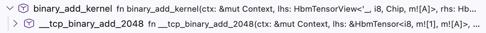
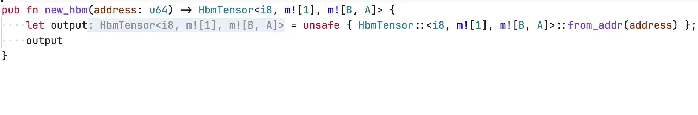
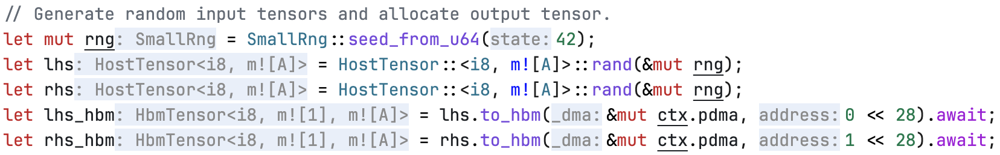

Introduction
FuriosaAI’s Tensor Contraction Processor (TCP) is a massively parallel AI accelerator targeting inference workloads. Unlike high-level frameworks like PyTorch and XLA, which abstract away memory layouts and hardware scheduling, TCP exposes direct programmer control without requiring the byte-level reasoning of low-level kernel APIs.
TCP’s Virtual Instruction Set Architecture (Virtual ISA, or vISA) is the programming interface that exposes this control. It lets programmers reason in tensors while directly managing memory allocation and tensor unit scheduling. This manual introduces that interface, targeting two audiences: programmers writing vISA directly and compiler developers generating it. Both audiences assume basic Rust familiarity. See the language manual if needed.
Warning
Alpha Test Build: Experimental Software
This software is an early, experimental, and incomplete build intended strictly for technical evaluation and internal testing.
Before using this software for any production work, critical tasks, or for important data, you must consult with Furiosa engineers.
Your feedback is vital to our development. Please provide it.
Installation
Install three pieces:
-
Rust toolchain (pinned): the Furiosa optimizer is a rustc driver, ABI-locked to a specific nightly.
rustup toolchain install nightly-2026-05-01The same channel is pinned in
rust-toolchain.toml; cargo activates it automatically when you cd into a project that includes that file. -
cargo-furiosa-opt: the cargo subcommand that injects the right--cfg backend="..."and (for NPU) pre-compiles kernels.cargo install cargo-binstall cargo binstall cargo-furiosa-opt -
Furiosa SDK + physical NPU (only for
--backend npu): the NPU backend dispatches to real hardware via the SDK’s kernel driver and PE runtime (furiosa-driver-rngd,furiosa-smi, etc.; see the SDK documentation).The
simulationandtypecheckbackends do not require the SDK. They run host-side with no NPU dependency, so a customer who only intends to develop or evaluate kernels does not need to install the SDK at all.There is no on-host NPU simulator in the public SDK distribution today. Without physical NPU access, use
--backend simulation(host-side interpretation) or--backend typecheck(mapping/shape verification only).
Your First Program
Use cargo-generate to scaffold a fresh project from the base-template starter, which ships with the five worked examples covered in the next chapter:
cargo install cargo-generate
cargo generate furiosa-ai/furiosa-opt base-template
cd base-template
Layout
base-template/
├── Cargo.toml
├── rust-toolchain.toml
└── src/
├── furiosa-opt.tag # marker the rustc plugin scans for; must sit at src/
├── lib.rs # `pub mod kernel;`
├── kernel/ # every #[device] function lives here
│ ├── mod.rs # `pub mod {constant_add,...}_kernel;`
│ ├── constant_add_kernel.rs # `#[device] fn constant_add_kernel(...)`
│ ├── elementwise_mul_kernel.rs
│ ├── dot_product_kernel.rs
│ ├── gemv_kernel.rs
│ └── gemm_kernel.rs
├── constant_add.rs # `#[tokio::main]` host program; `launch(constant_add_kernel, ...)`
├── elementwise_mul.rs
├── dot_product.rs
├── gemv.rs
└── gemm.rs
The five #[device] kernels all live under src/kernel/ and are re-exported by src/lib.rs. Each src/*.rs (next to lib.rs) is registered as its own [[bin]] in Cargo.toml, with path = "src/<name>.rs" placing the binary’s source directly under src/ — the rustc plugin scans cargo targets rooted at src/ and silently skips anything under src/bin/, examples/, or tests/, so the explicit [[bin]] paths in Cargo.toml are load-bearing. Each binary’s main() only does launch(kernel, ...); the value comparison against a host-side reference lives in a #[cfg(test)] mod tests block inside the same file.
Run a worked example
# Host-side simulation (default; no NPU hardware required).
cargo furiosa-opt run --release --bin gemm
# Mapping/shape verification only — kernel body runs against phantom (empty) tensors.
cargo furiosa-opt --backend typecheck run --release --bin gemm
# Real NPU dispatch (requires the SDK and a physical NPU; see Installation step 3).
cargo furiosa-opt --backend npu run --release --bin gemm
Verify against the reference
# Full numeric comparison on simulated values.
cargo furiosa-opt test --release --bin gemm
# Under typecheck the comparison loop trivially passes: `actual` is the
# phantom-empty Vec, so the per-element assertion has zero iterations.
cargo furiosa-opt --backend typecheck test --release --bin gemm
Read the Quick Start chapter alongside the source. Add your own kernel by dropping a new file into src/kernel/, appending a pub mod ...; line to src/kernel/mod.rs, writing a host program under src/, and declaring a matching [[bin]] path = "src/<name>.rs" in Cargo.toml.
Development Tools
The Furiosa IR Optimizer provides utilities for developing, testing, and optimizing vISA programs on TCP devices. It complements the Furiosa SDK’s compiler by giving developers fine-grained control over program behavior, whether the programmer writes vISA by hand or a compiler generates it.
Backends
A vISA program is a Rust program that uses the furiosa-opt-std API. cargo furiosa-opt selects which backend evaluates the kernel by setting --cfg backend="...":
| Backend | Default? | What runs | Use when |
|---|---|---|---|
typecheck | Kernel body runs with phantom (empty) tensors | Catching mapping/shape errors fast (value computation skipped) | |
simulation | yes | Full host-side interpretation | Default for development; verifies numerical correctness |
npu | Compiled EDF on hardware (or NVP simulator) | End-to-end including the hardware path |
# Default: simulation backend, no NPU hardware needed.
cargo furiosa-opt run --release
# Fast mapping/shape verification (kernel body runs with phantom tensors).
cargo furiosa-opt --backend typecheck run --release
# Real NPU dispatch (requires the SDK and a physical NPU).
cargo furiosa-opt --backend npu run --release
cargo check (under any backend) only runs the type checker; it does not execute kernel function bodies and therefore cannot reach mapping assertions like Collect output packet must be exactly 32 bytes. Use --backend typecheck run for that.
cargo furiosa-opt forwards every cargo flag verbatim, so cargo run, cargo test, cargo check, and cargo build all have direct equivalents:
cargo furiosa-opt build # cargo build with simulation backend
cargo furiosa-opt --backend npu test # cargo test on real NPU
Language Server
furiosa-rust-analyzer-proxy is a proxy for rust-analyzer that provides standard Rust IDE features with enhanced support for mapping expressions.
It keeps the usual rust-analyzer experience while simplifying verbose types like Stride<Symbol<A>, 8> into readable mapping expressions like m![A / 8].
For installation and configuration, see the Language Server appendix.
Book Organization
Each chapter builds on the previous: mapping and moving tensors establish the data model, computing tensors covers the pipeline engines, and scheduling and kernel examples show how to compose them into real programs.
- Quick Start: How vISA programming works, introduced through worked examples covering element-wise operations and tensor contractions.
- Mapping Tensors: How logical tensors map to physical memory: axis layout, stride, padding, and tiling.
- Moving Tensors: How data moves between memory tiers (HBM, DM) and the Tensor Unit via Fetch, Commit, and DMA engines.
- Computing Tensors: How the Tensor Unit pipeline (Switch, Collect, Contraction, Vector, Cast, Transpose) transforms data each cycle.
- Scheduler: How to control the order and concurrency of operations across contexts.
- Kernel Examples: End-to-end examples showing how mapping, movement, computation, and scheduling combine into real kernels.
License
This documentation and the entire furiosa-opt repository are licensed under the Apache License Version 2.0.
Quick Start
This chapter explains TCP through five running examples, each introducing one new hardware concept. The first two examples cover element-wise operations. The remaining three cover tensor contractions (dot product, GEMV, and GEMM).
Mathematical Background
TCP is a tensor-native processor built to accelerate tensor contraction.
Tensor
A tensor is a mapping from a tensor index to a value, where the tensor’s shape defines the valid indices.
A shape is an unordered set of named axes. The shapes \(\{\texttt{N} = 4, \texttt{C} = 3\}\) and \(\{\texttt{C} = 3, \texttt{N} = 4\}\) identify the same tensor: axis names carry the meaning, not the position. A tensor index is formed by specifying an index value for each axis. For shape \(\{\texttt{N} = 4, \texttt{C} = 3\}\), the valid indices are \(\{\texttt{N}: 0, \texttt{C}: 0\}\), \(\{\texttt{N}: 0, \texttt{C}: 1\}\), \(\{\texttt{N}: 0, \texttt{C}: 2\}\), \(\{\texttt{N}: 1, \texttt{C}: 0\}\), and so on.
Once an axis ordering is chosen, a tensor behaves like a familiar multi-dimensional array, similar to NumPy’s ndarray:
- 0D Tensor (Scalar): a single number like \(5.2\)
- 1D Tensor (Vector): a sequence like \([1, 2, 3]\) with one axis
- 2D Tensor (Matrix): a \(2 \times 4\) grid with two axes
- 4D Tensor: a batch of RGB images with shape \(\{\texttt{N} = 4, \texttt{C} = 3, \texttt{H} = 256, \texttt{W} = 512\}\)
Tensor Contraction
A tensor contraction generalizes matrix multiplication to arbitrary tensors: two input tensors are multiplied element-wise and summed along their shared (contracted) axes.
Every contraction decomposes into three steps: Broadcast, Multiply, Reduce.
Einsum notation expresses contractions compactly: list each input tensor by its axis labels, output axes follow the → arrow, and any input axis absent from the output is contracted.
The following table shows three contractions, with their einsum notation and Broadcast-Multiply-Reduce decomposition:
| Operation | Einsum | Broadcast | Multiply | Reduce |
|---|---|---|---|---|
| Dot product | \(I, I \rightarrow 1\) | none (axes match) | \(x_i y_i\) | \(\sum_i x_i y_i\) |
| GEMV | \(IJ, J \rightarrow I\) | \(x\) broadcasts across \(I\) | \(A_{ij} x_j\) | \(y_i = \sum_j A_{ij} x_j\) |
| GEMM | \(IK, KJ \rightarrow IJ\) | \(A\) across \(J\); \(B\) across \(I\) | \(A_{ik} B_{kj}\) | \(C_{ij} = \sum_k A_{ik} B_{kj}\) |
Tensor Contraction Processor
Hardware Hierarchy
A TCP device consists of four nested hardware levels:
| Level | Count (RNGD) | Role |
|---|---|---|
Chip | (system-dependent) | Top-level unit; holds HBM |
Cluster | 2 per chip | Groups 256 slices |
Slice | 256 per cluster | Runs one Tensor Unit |
Lane | 8 per slice | One row of the Contraction Engine’s MAC (multiply-accumulate) array |
Tensor Unit
The Tensor Unit is a fixed pipeline: Fetch → Switch → Collect → Contraction → Vector → Cast → Transpose → Commit. Most stages operate independently within each slice. The Switch Engine is the exception, connecting slices to distribute data across the slice array.
See Computing Tensors for .contract_outer(), .contract_packet(), .contract_time(), .contract_lane(), .cast(), .switch(), .vector_fxp(), and each engine in the pipeline.
Memory Tiers
| Type | Location | Capacity (RNGD) | Role |
|---|---|---|---|
HbmTensor | On-package | 48 GB, 1.5 TB/s | Long-term weight and activation storage |
DmTensor | On-chip SRAM | 256 MB total; 512 KB/slice | Primary working memory for computations |
SpmTensor | On-chip SRAM | size TBD; 2 TB/s per chip | Temporary data and intermediate results with high temporal locality; compiler-managed |
TrfTensor | On-chip SRAM | 8 KB / lane (8 lanes / slice) | TRF for the Contraction Engine |
VrfTensor | On-chip SRAM | 8 KB / slice | Operand register file for Vector Engine |
See Moving Tensors for .to_dm(), .to_hbm(), .fetch(), .commit(), and the complete memory tier model.
Tensor Mapping
TCP’s Virtual ISA exposes the hardware hierarchy through its type system. Each tensor type encodes the element type and how each logical axis distributes across the hardware hierarchy.
For example, DmTensor<bf16, m![1], m![1 # 2], m![A / 8 # 256], m![A % 8]> (with axes![A = 2048]) represents a bf16 vector with the axis A on one chip (m![1]), one of two clusters (m![1 # 2]), distributed across 256 slices (m![A / 8 # 256]) with 8 elements per slice (m![A % 8]).
Each element of A therefore maps to a well-defined position within exactly one slice.
Three operators in m![] build this distribution:
/splits by stride:A / 8gives 2048 / 8 = 256 slice indices.%gives the inner count:A % 8gives the 8 in-slice indices.#pads to the hardware unit count:# 256pads to 256 slices, with any excess slots holding arbitrary values.
TCP also introduces two parameters for tensors flowing through the Tensor Unit pipeline: Time indexes pipeline iterations; Packet indexes elements within each iteration.
See Mapping Tensors for axes![], m![], HbmTensor, DmTensor, and the full mapping expression reference.
Execution Contexts
Every device kernel has two execution contexts running concurrently on separate hardware resources: ctx.main and ctx.sub.
main runs the primary computation.
sub runs a concurrent pipeline, typically used to prefetch operands into TRF or VRF while main computes.
If main needs operands that sub is still fetching, main automatically waits for sub’s execution to ensure synchronization.
Both contexts share the same flat on-chip SRAM, so the programmer must explicitly assign DM addresses (e.g., the addr argument in .to_dm(), .commit()) to prevent tensors from overlapping.
Addresses must not collide, but they can be non-contiguous.
In type signatures, the const-generic Tu identifies which context a tensor flows through ({ Tu::Main } or { Tu::Sub }).
See Scheduler for ctx.main, ctx.sub, launch(), and how operations are scheduled and run in parallel across contexts.
Kernel Examples
Constant Addition
The first kernel takes a vector of integers and adds the constant 1 to each element.
It uses one chip, one of two clusters, and all 256 slices in that cluster, with one 8-element group per slice.
Adding 1 to each element uses the Vector Engine’s fixed-point operation vector_fxp(FxpBinaryOp::AddFxp, 1).
flowchart TB
HOST[Host] <-->|PCIe DMA| HBM[(HBM)]
HBM <-->|Tensor DMA| DM[(DM)]
subgraph TU[Tensor Unit]
direction TB
FE[Fetch] --> CO[Collect] --> VE["Vector (AddFxp +1)"] --> CM[Commit]
end
DM -->|stream| FE
CM -->|stream| DM
to_dm moves data from HBM to DM, splitting the flat tensor across 256 slices.
The begin → fetch → collect → vector_init → vector_intra_slice_tag → vector_fxp → vector_final → commit chain processes each slice in one pass.
TagMode::Zero configures the pipeline to execute on every cycle.
Kernel (src/kernel/constant_add_kernel.rs):
use furiosa_opt_std::prelude::*;
axes![A = 2048];
pub type Chip = m![1];
pub type Cluster = m![1 # 2];
pub type Slice = m![A / 8 # 256];
#[device(chip = 1)]
pub fn constant_add_kernel(ctx: &mut Context, input: &HbmTensor<i32, Chip, m![A]>) -> HbmTensor<i32, Chip, m![A]> {
// HBM → DM: split 2048 elements across 256 slices (8 elements per slice)
let dm = input.to_dm::<Cluster, Slice, m![A % 8]>(&mut ctx.tdma, 0);
let result = ctx
.main
.begin(dm.view())
// Fetch: stream 8-element packets from DM into the pipeline
.fetch::<i32, m![1], m![A % 8]>()
// Collect: normalize the stream into 32-byte flits (8 × i32)
.collect::<m![1], m![A % 8]>()
// Vector Engine: enter pipeline and arm unconditionally
.vector_init()
.vector_intra_slice_tag(TagMode::Zero)
// Add the scalar constant 1 to every element
.vector_fxp(FxpBinaryOp::AddFxp, 1)
// Exit VE and commit: write results back to DM
.vector_final()
.commit::<m![A % 8]>(1 << 12);
// DM → HBM
result.to_hbm(&mut ctx.tdma, 1 << 28)
}Host program (src/constant_add.rs):
use furiosa_opt_std::prelude::*;
use {{ crate_name }}::kernel::constant_add_kernel::{A, constant_add_kernel};
use rand::SeedableRng;
use rand::rngs::SmallRng;
#[tokio::main]
async fn main() {
let mut ctx = Context::acquire();
let mut rng = SmallRng::seed_from_u64(42);
let input = HostTensor::<i32, m![A]>::rand(&mut rng);
let in_hbm = input.to_hbm(&mut ctx.pdma, 0).await;
let _out_hbm = launch(constant_add_kernel, (&mut ctx, &in_hbm)).await;
println!("Constant Add: kernel ran");
}
#[cfg(test)]
mod tests {
use super::*;
#[tokio::test]
async fn matches_reference() {
let mut ctx = Context::acquire();
let mut rng = SmallRng::seed_from_u64(42);
let input = HostTensor::<i32, m![A]>::rand(&mut rng);
let in_hbm = input.to_hbm(&mut ctx.pdma, 0).await;
// Reference: out[i] = in[i] + 1.
let in_buf: Vec<i32> = input.to_buf();
let expected: Vec<i32> = in_buf.iter().map(|&x| x.wrapping_add(1)).collect();
let out_hbm = launch(constant_add_kernel, (&mut ctx, &in_hbm)).await;
// Under the typecheck backend `actual` is empty (phantom tensors), so
// the loop trivially runs zero iterations and the assertion is skipped.
let actual: Vec<i32> = out_hbm.to_host::<m![A]>(&mut ctx.pdma).await.to_buf();
for (i, (&e, &a)) in expected.iter().zip(&actual).enumerate() {
assert_eq!(e, a, "constant_add mismatch at i={i}: expected {e}, actual {a}");
}
}
}Elementwise Multiplication
The second kernel multiplies two same-shape vectors element-wise. One operand flows through the pipeline. The other is stored in the VRF (Vector Register File), a per-slice register file that the Vector Engine reads every cycle.
flowchart TB
LHS_HBM[(lhs: HBM)] -->|Tensor DMA| LHS_DM[(lhs: DM)]
RHS_HBM[(rhs: HBM)] -->|Tensor DMA| RHS_DM[(rhs: DM)]
subgraph sub[sub context]
direction LR
sFE[Fetch] --> sCO[Collect]
end
subgraph main[main context]
direction LR
mFE[Fetch] --> mCO[Collect] --> VE["Vector (MulInt)"] --> CM[Commit]
end
RHS_DM --> sFE
LHS_DM --> mFE
sCO --> VRF[(VRF)]
VRF --> VE
CM --> OUT_DM[(result: DM)]
OUT_DM -->|Tensor DMA| OUT_HBM[(HBM)]
This example introduces the sub context, which preloads one operand into the VRF while the main context streams.
The sub context loads rhs_dm into the VRF through the Fetch → Collect → .to_vrf(0) pipeline.
rhs_dm is allocated at a different base address (1 << 12) to avoid overlapping with lhs_dm.
The main context then streams lhs_dm and multiplies each element by its VRF counterpart using MulInt.
The hardware runs both contexts concurrently where possible.
Kernel (src/kernel/elementwise_mul_kernel.rs):
use furiosa_opt_std::prelude::*;
axes![A = 2048];
pub type Chip = m![1];
pub type Cluster = m![1 # 2];
pub type Slice = m![A / 8 # 256];
#[device(chip = 1)]
pub fn elementwise_mul_kernel(
ctx: &mut Context,
lhs: &HbmTensor<i32, Chip, m![A]>,
rhs: &HbmTensor<i32, Chip, m![A]>,
) -> HbmTensor<i32, Chip, m![A]> {
// Move both operands from HBM to DM; use distinct base addresses to avoid overlap
let lhs_dm = lhs.to_dm::<Cluster, Slice, m![A % 8]>(&mut ctx.tdma, 0);
let rhs_dm = rhs.to_dm::<Cluster, Slice, m![A % 8]>(&mut ctx.tdma, 1 << 12);
// Sub context: load rhs into VRF (runs concurrently with the main context below).
// VRF holds a per-slice operand that the Vector Engine reads every cycle.
let rhs_vrf: VrfTensor<i32, Chip, Cluster, Slice, m![A % 8]> = ctx
.sub
.begin(rhs_dm.view())
.fetch::<i32, m![1], m![A % 8]>()
.collect::<m![A % 8 / 8], m![A % 8 % 8]>()
.to_vrf(0);
// Main context: multiply every lhs element by its rhs counterpart from VRF
let result = ctx
.main
.begin(lhs_dm.view())
.fetch::<i32, m![1], m![A % 8]>()
.collect::<m![1], m![A % 8]>()
.vector_init()
.vector_intra_slice_tag(TagMode::Zero)
// Each slice multiplies its 8 lhs elements by the matching 8 rhs elements in VRF
.vector_fxp(FxpBinaryOp::MulInt, &rhs_vrf)
.vector_final()
.commit::<m![A % 8]>(1 << 13);
result.to_hbm(&mut ctx.tdma, 1 << 28)
}Host program (src/elementwise_mul.rs):
use furiosa_opt_std::prelude::*;
use {{ crate_name }}::kernel::elementwise_mul_kernel::{A, elementwise_mul_kernel};
use rand::SeedableRng;
use rand::rngs::SmallRng;
#[tokio::main]
async fn main() {
let mut ctx = Context::acquire();
let mut rng = SmallRng::seed_from_u64(42);
let lhs = HostTensor::<i32, m![A]>::rand(&mut rng);
let rhs = HostTensor::<i32, m![A]>::rand(&mut rng);
let lhs_hbm = lhs.to_hbm(&mut ctx.pdma, 0).await;
let rhs_hbm = rhs.to_hbm(&mut ctx.pdma, 1 << 28).await;
let _out_hbm = launch(elementwise_mul_kernel, (&mut ctx, &lhs_hbm, &rhs_hbm)).await;
println!("Elementwise Mul: kernel ran");
}
#[cfg(test)]
mod tests {
use super::*;
#[tokio::test]
async fn matches_reference() {
let mut ctx = Context::acquire();
let mut rng = SmallRng::seed_from_u64(42);
let lhs = HostTensor::<i32, m![A]>::rand(&mut rng);
let rhs = HostTensor::<i32, m![A]>::rand(&mut rng);
let lhs_hbm = lhs.to_hbm(&mut ctx.pdma, 0).await;
let rhs_hbm = rhs.to_hbm(&mut ctx.pdma, 1 << 28).await;
// Reference: out[i] = lhs[i] * rhs[i].
let lhs_buf: Vec<i32> = lhs.to_buf();
let rhs_buf: Vec<i32> = rhs.to_buf();
let expected: Vec<i32> = lhs_buf.iter().zip(&rhs_buf).map(|(&a, &b)| a.wrapping_mul(b)).collect();
let out_hbm = launch(elementwise_mul_kernel, (&mut ctx, &lhs_hbm, &rhs_hbm)).await;
let actual: Vec<i32> = out_hbm.to_host::<m![A]>(&mut ctx.pdma).await.to_buf();
for (i, (&e, &a)) in expected.iter().zip(&actual).enumerate() {
assert_eq!(e, a, "elementwise_mul mismatch at i={i}: expected {e}, actual {a}");
}
}
}Dot Product
The dot product \(I, I \rightarrow 1\) reduces both operands along the same axis with no broadcast step.
As in the previous example, one operand flows through the pipeline.
The other is held stationary in the TRF (Tensor Register File), a per-slice register file that the Contraction Engine reads each cycle.
The sub context loads rhs into the TRF via Fetch → Collect → .to_trf().
TrfAddress::Full dedicates the entire TRF to this tensor.
.contract_outer() invokes the Contraction Engine’s Stream Adapter and the TRF Sequencer.
The Stream Adapter pairs adjacent 32-byte flits into the Outer stage’s 64-byte packet; the TRF Sequencer reads the stationary RHS.
Both feed the elementwise multiplier per lane.
.contract_packet() reduce-adds those products spatially via the hardware reduction tree.
.contract_time::<m![1]>() then accumulates temporally, producing a scalar per slice.
.contract_lane() folds the 8 lanes into the output (trivial fold here at Lane = m![1]).
.cast() converts the f32 accumulator output back to bf16.
Kernel (src/kernel/dot_product_kernel.rs):
use furiosa_opt_std::prelude::*;
axes![A = 2048];
pub type Chip = m![1];
pub type Cluster = m![1 # 2];
pub type Slice = m![1 # 256]; // 1 active slice; m![A / 8 # 256] would distribute across all 256
pub type Time = m![1]; // No temporal iteration
pub type Lane = m![1]; // No lane parallelism
#[device(chip = 1)]
pub fn dot_product_kernel(
ctx: &mut Context,
lhs: &HbmTensor<bf16, Chip, m![A]>,
rhs: &HbmTensor<bf16, Chip, m![A]>,
) -> HbmTensor<bf16, Chip, m![1]> {
// HBM → DM
let lhs: DmTensor<bf16, Chip, Cluster, Slice, m![A]> = lhs.to_dm(&mut ctx.tdma, 0);
let rhs: DmTensor<bf16, Chip, Cluster, Slice, m![A]> = rhs.to_dm(&mut ctx.tdma, 1 << 12);
// Sub context: load rhs into TRF (TrfAddress::Full dedicates the entire TRF to this tensor)
let rhs: TrfTensor<bf16, Chip, Cluster, Slice, Lane, m![A]> = ctx
.sub
.begin(rhs.view())
.fetch::<bf16, Time, m![A]>()
.collect::<m![{ Time }, A / 16], m![A % 16]>()
.to_trf(TrfAddress::Full);
// Main context: stream lhs through the Contraction Engine, reduce along A
let result: DmTensor<bf16, Chip, Cluster, Slice, m![1 # 8]> = ctx
.main
.begin(lhs.view())
.fetch::<bf16, Time, m![A]>()
.collect::<m![A / 16], m![A % 16]>()
// Pair consecutive 32-byte flits into 64-byte packets, halving time steps (A/16 → A/32)
.contract_outer::<m![A / 32], m![A % 32], _, _>(&rhs)
.contract_packet::<m![1]>()
.contract_time::<m![1]>()
.contract_lane::<m![1], m![1 # 8]>(LaneMode::Interleaved)
.cast::<bf16, m![1 # 16]>() // cast f32 accumulator output back to bf16
.commit::<m![1 # 8]>(1 << 13);
// DM → HBM
result.to_hbm(&mut ctx.tdma, 2 << 28)
}Host program (src/dot_product.rs):
use furiosa_opt_std::prelude::*;
use {{ crate_name }}::kernel::dot_product_kernel::{A, dot_product_kernel};
use rand::SeedableRng;
use rand::rngs::SmallRng;
#[tokio::main]
async fn main() {
let mut ctx = Context::acquire();
let mut rng = SmallRng::seed_from_u64(42);
let lhs = HostTensor::<bf16, m![A]>::rand(&mut rng);
let rhs = HostTensor::<bf16, m![A]>::rand(&mut rng);
let lhs_hbm = lhs.to_hbm(&mut ctx.pdma, 0).await;
let rhs_hbm = rhs.to_hbm(&mut ctx.pdma, 1 << 28).await;
let _out_hbm = launch(dot_product_kernel, (&mut ctx, &lhs_hbm, &rhs_hbm)).await;
println!("Dot Product: kernel ran");
}
#[cfg(test)]
mod tests {
use super::*;
#[tokio::test]
async fn matches_reference() {
let mut ctx = Context::acquire();
let mut rng = SmallRng::seed_from_u64(42);
let lhs = HostTensor::<bf16, m![A]>::rand(&mut rng);
let rhs = HostTensor::<bf16, m![A]>::rand(&mut rng);
let lhs_hbm = lhs.to_hbm(&mut ctx.pdma, 0).await;
let rhs_hbm = rhs.to_hbm(&mut ctx.pdma, 1 << 28).await;
// Reference: sum_i lhs[i] * rhs[i] in f32, then round to bf16.
let lhs_buf: Vec<bf16> = lhs.to_buf();
let rhs_buf: Vec<bf16> = rhs.to_buf();
let expected_f32: f32 = lhs_buf
.iter()
.zip(&rhs_buf)
.map(|(&a, &b)| f32::from(a) * f32::from(b))
.sum();
let expected = bf16::from_f32(expected_f32);
let out_hbm = launch(dot_product_kernel, (&mut ctx, &lhs_hbm, &rhs_hbm)).await;
let actual_buf: Vec<bf16> = out_hbm.to_host::<m![1]>(&mut ctx.pdma).await.to_buf();
if let Some(&actual) = actual_buf.first() {
let diff = (f32::from(actual) - f32::from(expected)).abs();
let tol = (0.02 * f32::from(expected).abs()).max(0.5);
assert!(
diff <= tol,
"dot_product mismatch: expected {expected:?}, actual {actual:?}, diff {diff} > tol {tol}"
);
}
}
}GEMV
GEMV \(IJ, J \rightarrow I\) distributes the output dimension I across slices: each slice computes one row \(y_i = \sum_j A_{ij} x_j\).
Unlike the dot product (where all slices reduce along the same axis and no redistribution is needed), here each slice needs the full vector to contract against its row, so data must be broadcast across slices before the contraction.
The Switch Engine performs that broadcast: SwitchConfig::Broadcast01 distributes the vector to all I slices between Fetch and Collect, as shown in the pseudocode below.
Once the vector is broadcast, the contraction over J proceeds in tiles: Time indexes the tile iterations and Packet indexes elements within each tile.
#![allow(unused)]
fn main() {
#![feature(adt_const_params)]
extern crate furiosa_opt_std;
use furiosa_opt_std::prelude::*;
axes![I = 256, J = 2048];
// GEMV: broadcast the vector across all I slices.
fn switch_gemv<'l, const T: Tu>(
input: FetchTensor<'l, T, bf16, m![1], m![1], m![1 # 256], m![1], m![J]>,
) -> SwitchTensor<'l, T, bf16, m![1], m![1], m![I], m![1 # 256], m![J]> {
input.switch(SwitchConfig::Broadcast01 {
slice1: 256,
slice0: 1,
time0: 1,
})
}
}Kernel (src/kernel/gemv_kernel.rs):
use furiosa_opt_std::prelude::*;
axes![I = 256, J = 2048];
pub type Chip = m![1];
pub type Cluster = m![1 # 2];
pub type Slice = m![I]; // Distribute output dimension across slices
pub type Time = m![J / 32]; // Temporal iterations for reduction dimension
pub type Packet = m![J % 32]; // Packet size for reduction dimension
pub type Lane = m![1];
#[device(chip = 1)]
pub fn gemv_kernel(
ctx: &mut Context,
matrix: &HbmTensor<bf16, Chip, m![I, J]>,
vector: &HbmTensor<bf16, Chip, m![J]>,
) -> HbmTensor<bf16, Chip, m![I]> {
// Move data from HBM to DM
let matrix: DmTensor<bf16, Chip, Cluster, Slice, m![J]> = matrix.to_dm(&mut ctx.tdma, 0);
let vector: DmTensor<bf16, Chip, Cluster, Slice, m![J]> = vector.to_dm(&mut ctx.tdma, 1 << 12);
// Load vector into TRF
// The Switch Engine automatically broadcasts the vector to all `I` slices
let vector_trf: TrfTensor<bf16, Chip, Cluster, Slice, Lane, m![J]> = ctx
.sub
.begin(vector.view())
.fetch::<bf16, m![1], m![J]>()
// Collect Engine: split into 32-byte flits.
.collect::<m![J / 16], m![J % 16]>()
.to_trf(TrfAddress::Full);
// Compute GEMV: matrix × vector
// Key difference: `I` maps to slice (preserved), `J` gets reduced
let result: DmTensor<bf16, Chip, Cluster, Slice, m![1 # 4]> = ctx
.main
.begin(matrix.view())
.fetch::<bf16, m![J / 16], m![J % 16]>()
.collect::<m![J / 16], m![J % 16]>()
.contract_outer::<Time, Packet, _, _>(&vector_trf)
.contract_packet::<m![1]>()
.contract_time::<m![1]>()
.contract_lane::<m![1], m![1 # 8]>(LaneMode::Interleaved)
.cast::<bf16, m![1 # 16]>()
.commit(0);
// Transfer result to HBM
result.to_hbm(&mut ctx.tdma, 2 << 28)
}Host program (src/gemv.rs):
use furiosa_opt_std::prelude::*;
use {{ crate_name }}::kernel::gemv_kernel::{I, J, gemv_kernel};
use rand::SeedableRng;
use rand::rngs::SmallRng;
#[tokio::main]
async fn main() {
let mut ctx = Context::acquire();
let mut rng = SmallRng::seed_from_u64(42);
let matrix = HostTensor::<bf16, m![I, J]>::rand(&mut rng);
let vector = HostTensor::<bf16, m![J]>::rand(&mut rng);
let matrix_hbm = matrix.to_hbm(&mut ctx.pdma, 0 << 28).await;
let vector_hbm = vector.to_hbm(&mut ctx.pdma, 1 << 28).await;
let _out_hbm = launch(gemv_kernel, (&mut ctx, &matrix_hbm, &vector_hbm)).await;
println!("GEMV: kernel ran");
}
#[cfg(test)]
mod tests {
use super::*;
#[tokio::test]
async fn matches_reference() {
let mut ctx = Context::acquire();
let mut rng = SmallRng::seed_from_u64(42);
let matrix = HostTensor::<bf16, m![I, J]>::rand(&mut rng);
let vector = HostTensor::<bf16, m![J]>::rand(&mut rng);
let matrix_hbm = matrix.to_hbm(&mut ctx.pdma, 0 << 28).await;
let vector_hbm = vector.to_hbm(&mut ctx.pdma, 1 << 28).await;
// Reference: y[i] = sum_j matrix[i, j] * vector[j] in f32, rounded to bf16.
let mat_buf: Vec<bf16> = matrix.to_buf();
let vec_buf: Vec<bf16> = vector.to_buf();
let expected: Vec<bf16> = mat_buf
.chunks(J::SIZE)
.map(|row| {
let acc: f32 = row
.iter()
.zip(&vec_buf)
.map(|(&a, &b)| f32::from(a) * f32::from(b))
.sum();
bf16::from_f32(acc)
})
.collect();
let out_hbm = launch(gemv_kernel, (&mut ctx, &matrix_hbm, &vector_hbm)).await;
let actual: Vec<bf16> = out_hbm.to_host::<m![I]>(&mut ctx.pdma).await.to_buf();
for (i, (&e, &a)) in expected.iter().zip(&actual).enumerate() {
let diff = (f32::from(a) - f32::from(e)).abs();
let tol = (0.02 * f32::from(e).abs()).max(0.5);
assert!(
diff <= tol,
"gemv mismatch at i={i}: expected {e:?}, actual {a:?}, diff {diff} > tol {tol}"
);
}
}
}GEMM
GEMM \(IK, JK \rightarrow IJ\) adds a second output dimension: both \(I\) and \(J\) appear in the output \(C_{ij} = \sum_k A_{ik} B_{jk}\). Each matrix broadcasts along its missing output dimension: \(A\) broadcasts across \(J\) and \(B\) broadcasts across \(I\).
The new concept is type Slice = m![I / 32, J / 32], which jointly maps both output dimensions to Slice so each slice computes a 16 × 16 tile of the output matrix.
The Switch Engine moves each tile of B to the matching slice, so each slice sees only its portion of J.
.contract_packet::<m![1]>() reduces along K spatially.
.contract_time::<m![I]>() accumulates over time (preserving I), and .contract_lane::<m![I], m![J # 8]>(LaneMode::Interleaved) folds Lane into the output packet, preserving both I and J in the output.
Kernel (src/kernel/gemm_kernel.rs):
use furiosa_opt_std::prelude::*;
axes![I = 512, J = 512, K = 64];
pub type Chip = m![1];
pub type Cluster = m![1 # 2];
// Distribute output dimensions `I` and `J` across slices
pub type Slice = m![I / 32, J / 32]; // Each slice handles a 16 × 16 output tile
pub type Lane = m![J % 8];
#[device(chip = 1)]
pub fn gemm_kernel(
ctx: &mut Context,
a: &HbmTensor<bf16, Chip, m![I, K]>,
b: &HbmTensor<bf16, Chip, m![J, K]>,
) -> HbmTensor<bf16, Chip, m![I, J]> {
// Move data from HBM to DM
let a: DmTensor<bf16, Chip, Cluster, Slice, m![I % 32, K]> = a.to_dm(&mut ctx.tdma, 0);
let b: DmTensor<bf16, Chip, Cluster, Slice, m![J % 32, K]> = b.to_dm(&mut ctx.tdma, 1 << 12);
// Load matrix B into TRF
// Switch Engine distributes B across 256 slices
// Each slice gets the full `K` dimension but only its (16 × 16) output tile
// See: Switch Engine topologies for details on distribution
let b_trf: TrfTensor<bf16, Chip, Cluster, Slice, Lane, m![J / 8 % 4, K]> = ctx
.sub
.begin(b.view())
.fetch::<bf16, m![J % 8, J / 8 % 4], m![K]>()
.collect::<m![J % 8, J / 8 % 4, K / 16], m![K % 16]>()
.to_trf(TrfAddress::Full);
// Compute GEMM: A × B
// Switch Engine ensures matching (`I / 32`, `J / 32`) slice distribution
// Contraction reduces along `K`, preserves `I` and `J`
let result: DmTensor<bf16, Chip, Cluster, Slice, m![I % 32, J % 32]> = ctx
.main
.begin(a.view())
.fetch::<bf16, m![I % 32, J / 8 % 4], m![K]>()
.collect::<m![I % 32, J / 8 % 4, K / 16], m![K % 16]>()
.contract_outer::<m![I % 32, J / 8 % 4, K / 32], m![K % 32], _, _>(&b_trf)
.contract_packet::<m![1]>()
.contract_time::<m![I % 32, J / 8 % 4]>()
.contract_lane::<m![I % 32, J / 8 % 4], m![J % 8]>(LaneMode::Interleaved)
.cast::<bf16, m![J % 8 # 16]>()
.commit(0);
// Transfer result to HBM
result.to_hbm(&mut ctx.tdma, 2 << 28)
}Host program (src/gemm.rs):
use furiosa_opt_std::prelude::*;
use {{ crate_name }}::kernel::gemm_kernel::{I, J, K, gemm_kernel};
use rand::SeedableRng;
use rand::rngs::SmallRng;
#[tokio::main]
async fn main() {
let mut ctx = Context::acquire();
let mut rng = SmallRng::seed_from_u64(42);
let a = HostTensor::<bf16, m![I, K]>::rand(&mut rng);
let b = HostTensor::<bf16, m![J, K]>::rand(&mut rng);
let a_hbm = a.to_hbm(&mut ctx.pdma, 0 << 28).await;
let b_hbm = b.to_hbm(&mut ctx.pdma, 1 << 28).await;
let _out_hbm = launch(gemm_kernel, (&mut ctx, &a_hbm, &b_hbm)).await;
println!("GEMM: kernel ran");
}
#[cfg(test)]
mod tests {
use super::*;
#[tokio::test]
async fn matches_reference() {
let mut ctx = Context::acquire();
let mut rng = SmallRng::seed_from_u64(42);
let a = HostTensor::<bf16, m![I, K]>::rand(&mut rng);
let b = HostTensor::<bf16, m![J, K]>::rand(&mut rng);
let a_hbm = a.to_hbm(&mut ctx.pdma, 0 << 28).await;
let b_hbm = b.to_hbm(&mut ctx.pdma, 1 << 28).await;
// Reference: C[i, j] = sum_k A[i, k] * B[j, k] in f32, rounded to bf16.
let a_buf: Vec<bf16> = a.to_buf();
let b_buf: Vec<bf16> = b.to_buf();
let expected: Vec<bf16> = a_buf
.chunks(K::SIZE)
.flat_map(|a_row| {
b_buf.chunks(K::SIZE).map(move |b_row| {
let acc: f32 = a_row
.iter()
.zip(b_row)
.map(|(&a, &b)| f32::from(a) * f32::from(b))
.sum();
bf16::from_f32(acc)
})
})
.collect();
let out_hbm = launch(gemm_kernel, (&mut ctx, &a_hbm, &b_hbm)).await;
let actual: Vec<bf16> = out_hbm.to_host::<m![I, J]>(&mut ctx.pdma).await.to_buf();
for (idx, (&e, &av)) in expected.iter().zip(&actual).enumerate() {
let diff = (f32::from(av) - f32::from(e)).abs();
let tol = (0.05 * f32::from(e).abs()).max(1.0);
assert!(diff <= tol, "gemm mismatch at idx={idx}: expected {e:?}, actual {av:?}");
}
}
}The examples above process tensors that fit in a single hardware pass. Real workloads often require partitioning into tiles. Two complementary strategies exist for workloads exceeding the 512 KB/slice DM capacity: temporal partitioning processes tiles sequentially over time, and spatial partitioning distributes tiles across parallel hardware units.
See Kernel Examples for end-to-end kernels that apply these strategies.
Mapping Tensors
Tensors have no intrinsic order of elements. A mapping assigns each tensor index to a buffer position, defining that order.
This chapter shows how layout choices affect memory access and explains TCP’s declarative approach to tensor layout with mapping expressions.
Layout and Performance
The mapping determines access efficiency: hardware reads memory in contiguous blocks, so elements stored far apart require more transfers. This choice affects programs too: programmers choose which axis is major (outermost, changes slowest) and which is minor (innermost, changes fastest, stored contiguously). Layout cannot change after allocation without copying and transposing data, so the choice at allocation time constrains all subsequent operations.
Consider a tensor with axes H (height, 6 rows) and W (width, 8 columns). The same tensor admits different mappings, each with different performance characteristics.
| H\W | 0 | 1 | 2 | 3 | 4 | 5 | 6 | 7 |
|---|---|---|---|---|---|---|---|---|
| 0 | a | b | c | d | e | f | g | h |
| 1 | i | j | k | l | m | n | o | p |
| 2 | · | · | · | · | · | · | · | · |
| 3 | · | · | · | · | · | · | · | · |
| 4 | · | · | · | · | · | · | · | · |
| 5 | · | · | · | · | · | · | · | · |
-
H Major, W Minor: A scan along W is contiguous; a scan along H accesses one element per cache line.
H=0 H=1 ... a b c d e f g h i j k l m n o p ... -
W Major, H Minor: A scan along H is contiguous; a scan along W accesses one element per cache line.
W=0 W=1 W=2 ... a i · · · · b j · · · · c k · · · · ... -
2×2 Tiles: Either choice sacrifices locality along one axis: H-major stores H-adjacent elements far apart, and W-major stores W-adjacent elements far apart. To avoid this trade-off, tiling groups nearby H and W indices into 2D tiles, achieving good locality along both axes, at the cost of a non-trivial address formula.
t(0,0) t(0,1) t(0,2) ... a b i j c d k l e f m n ... Decompositions also determine hardware execution structure. The outer dimension can become a hardware time loop, and the inner dimension becomes a parallel lane. TCP names these hardware dimensions
Time(the sequential loop counter) andPacket(the parallel data lane width), used throughout this book. Spatial and Temporal Dimensions explains how decompositions map to them.
The Declarative Approach
Choosing optimal layout combinations manually is complex: the programmer must account for hardware geometry, alignment constraints, and execution patterns simultaneously. The compiler derives physical placement, alignment, and hardware scheduling.
Virtual ISA lets the programmer and compiler declare a mapping in terms of logical axes. For the H×W tensor from Layout and Performance, the leftmost axis is major and the rightmost is minor:
- H-major:
m![H, W] - W-major:
m![W, H] - 2×2 Tiles:
m![H / 2, W / 2, H % 2, W % 2], where the first two dimensions are tile indices and the last two are positions within the tile.
Declarative mappings offer two benefits:
- Expressiveness: Layout is stated in terms of logical axes (
m![H, W]), not raw strides or offsets. - Correctness: Mapping expressions are normalized to canonical form and verified symbolically, turning layout properties into compile-time invariants.
Mapping expressions describe a tensor at every stage of its life: the same tensor can be stored in HBM, loaded into DM with a different layout, and streamed through the pipeline as packets. Each stage holds the same mathematical values in a different physical representation. Tensor Semantics formalizes this perspective and shows how it makes data movement composable with computation in the same pipeline.
Mapping Expressions
A mapping expression is a Rust type that encodes a mapping. This page defines its constructors and equivalence rules.
Axis Sizes
The axes! macro declares axis identifiers and their sizes.
The following declaration applies throughout this section:
#![allow(unused)]
fn main() {
extern crate furiosa_opt_std;
use furiosa_opt_std::prelude::*;
axes![A = 8, B = 512];
}Mapping Interface
A mapping expression like m![H, W] is a Rust type that assigns each tensor index to a buffer position.
Every mapping expression implements the M trait, which provides the buffer size and a function from buffer positions to tensor indices:
#![allow(unused)]
fn main() {
// Inside `furiosa_opt_std::prelude`...
extern crate furiosa_opt_std;
use furiosa_opt_std::prelude::*;
use std::fmt::Debug;
pub trait M: Debug + Clone {
/// The computed size for the given shape.
const SIZE: usize;
/// Converts the mapping expression type into a value.
fn to_value() -> Mapping;
/// Converts a buffer index to a tensor index, returning `None` if out-of-bounds.
fn map(i: usize) -> Option<Index>;
}
/// Tensor index: a map from axis identifiers to coordinate values.
pub struct Index { /* ... */ }
/// Constructs tensor indices.
/// `i![A: 2, B: 3]` creates an `Index` with A = 2 and B = 3.
macro_rules! i {
() => {};
/* ... */
}
}Usage Example: Host Tensor
The simplest concrete type built on the M trait is HostTensor<D, E>: a host memory buffer of element type D whose layout is fully determined by mapping E.
E determines both the buffer size (E::SIZE) and the correspondence from buffer positions to tensor indices (E::map).
HostTensor<bf16, m![A, B]> contains 4,096 elements of bf16 data.
A HostTensor<D, E> holds a tensor \(T\) when:
- for every buffer index
iand tensor indextiwhereE::map(i) = Some(ti), - the
i-th element stores the value of tensor \(T\) at indexti.
Device tensors such as HbmTensor and DmTensor have more complex layouts spanning multiple mapping expressions; see Spatial and Temporal Dimensions for details.
Constructors
Mapping expressions, including the layout E in HostTensor<D, E>, are built by composing small constructors, each of which transforms or combines simpler mappings.
These expressions use arithmetic-like operators (/, %, and # for padding) to concisely define the mapping between tensor and linear buffer indices.
Symbol
A symbol is a single uppercase letter whose size comes from the shape declaration.
The mapping m![A] maps 8 buffer indices linearly to tensor indices along the axis:
#![allow(unused)]
fn main() {
extern crate furiosa_opt_std;
use furiosa_opt_std::prelude::*;
axes![A = 8];
type E = m![A]; // Symbol<Ident::A, 8>
#[test]
fn test_symbol() {
assert_eq!(E::map(0), Some(i![A: 0]));
assert_eq!(E::map(1), Some(i![A: 1]));
assert_eq!(E::map(2), Some(i![A: 2]));
for i in 0..E::SIZE {
assert_eq!(E::map(i), Some(i![A: i]));
}
assert_eq!(E::map(E::SIZE), None);
}
}impl<S: AxisName> M for Symbol<S> {
const SIZE: usize = S::SIZE;
fn to_value() -> Mapping {
Mapping::Symbol {
symbol: S::NAME,
size: S::SIZE,
}
}
fn map(i: usize) -> Option<Index> {
(i < S::SIZE).then(|| {
let mut index = Index::new();
Index::add_term(
&mut index,
Term {
inner: Atom::Symbol {
symbol: S::NAME,
size: S::SIZE,
},
stride: 1,
modulo: S::SIZE,
},
i,
);
index
})
}
}Note
For every symbol
A, the zeroth indexi![A: 0]is equivalent to the empty tensor indexi![].
Pair
The pair mapping m![A, B] stores a 2D tensor with shape \(\{A=8, B=512\}\) as a buffer of 4,096 elements.
The mapping Pair<L, R> maps the Cartesian product of two spaces into a linear buffer where L is the major dimension and R is the minor dimension.
The size is L::SIZE * R::SIZE, and the mapping uses floor division and modulo to decompose indices.
m![A, B, C, D] expands to Pair<A, Pair<B, Pair<C, D>>> and is right-associative.
#![allow(unused)]
fn main() {
extern crate furiosa_opt_std;
use furiosa_opt_std::prelude::*;
axes![A = 8, B = 512];
type E = m![A, B]; // Pair<m![A], m![B]>
#[test]
fn test_pair() {
// First 512 elements hold A=0, next 512 hold A=1
assert_eq!(E::map(0), Some(i![A: 0, B: 0]));
assert_eq!(E::map(511), Some(i![A: 0, B: 511]));
assert_eq!(E::map(512), Some(i![A: 1, B: 0]));
assert_eq!(E::map(519), Some(i![A: 1, B: 7])); // 519 == 512 * 1 + 7
for i in 0..E::SIZE {
assert_eq!(E::map(i), Some(i![A: i / <m![B]>::SIZE, B: i % <m![B]>::SIZE]));
}
assert_eq!(E::map(E::SIZE), None);
}
}impl<L, R> M for Pair<L, R>
where
L: M,
R: M,
{
const SIZE: usize = L::SIZE * R::SIZE;
fn to_value() -> Mapping {
Mapping::Pair {
left: RBox::new(L::to_value()),
right: RBox::new(R::to_value()),
}
}
fn map(i: usize) -> Option<Index> {
let mut l = L::map(i / R::SIZE)?;
let r = R::map(i % R::SIZE)?;
Index::add(&mut l, r);
Some(l)
}
}Identity
The identity mapping m![1] creates a single-element buffer that maps buffer index 0 to the empty tensor index i![].
It serves as the identity element for Pair: m![1, A] and m![A, 1] are both equivalent to m![A].
#![allow(unused)]
fn main() {
extern crate furiosa_opt_std;
use furiosa_opt_std::prelude::*;
type E = m![1]; // Identity
#[test]
fn test_identity() {
assert_eq!(E::map(0), Some(i![]));
assert_eq!(E::map(1), None);
}
}impl M for Identity {
const SIZE: usize = 1;
fn to_value() -> Mapping {
Mapping::Identity
}
fn map(i: usize) -> Option<Index> {
if i == 0 { Some(Index::new()) } else { None }
}
}Padding
Padding aligns data to hardware requirements by adding unused buffer space.
For example, the DMA engine requires rows to start on 64-byte boundaries.
With axes![C = 13, D = 61], m![C, D] creates misaligned rows since 61 is not divisible by 64.
m![C, D # 64] fixes this by aligning each row to 64-byte boundaries, using 3 extra elements per row.
#![allow(unused)]
fn main() {
extern crate furiosa_opt_std;
use furiosa_opt_std::prelude::*;
axes![C = 13, D = 61];
type E = m![C, D # 64]; // Pair<m![C], Padding<m![D], 64>>
#[test]
fn test_padding() {
assert_eq!(E::map(0), Some(i![C: 0, D: 0]));
assert_eq!(E::map(60), Some(i![C: 0, D: 60]));
assert_eq!(E::map(61), None); // padding
assert_eq!(E::map(62), None); // padding
assert_eq!(E::map(63), None); // padding
assert_eq!(E::map(64), Some(i![C: 1, D: 0]));
}
}impl<L, const SIZE: usize> M for Padding<L, SIZE>
where
L: M,
{
const SIZE: usize = SIZE;
fn to_value() -> Mapping {
Mapping::Padding {
inner: RBox::new(L::to_value()),
padding: SIZE,
kind: PaddingKind::Top,
}
}
fn map(i: usize) -> Option<Index> {
L::map(i)
}
}Resize
Resize constrains a mapping to a smaller logical size by truncating indices beyond the new size, discarding elements outside that range.
Unlike padding, which expands the buffer, Resize shrinks the logical view.
The mapping m![D = 2] takes only the first 2 elements of axis D, producing indices D = 0 and D = 1.
#![allow(unused)]
fn main() {
extern crate furiosa_opt_std;
use furiosa_opt_std::prelude::*;
axes![C = 2, D = 3];
type E = m![C, D = 2]; // Pair<m![C], Resize<m![D], 2>>
#[test]
fn test_resize() {
assert_eq!(E::map(0), Some(i![C: 0, D: 0]));
assert_eq!(E::map(1), Some(i![C: 0, D: 1]));
assert_eq!(E::map(2), Some(i![C: 1, D: 0]));
assert_eq!(E::map(3), Some(i![C: 1, D: 1]));
assert_eq!(E::map(4), None);
}
}impl<L, const SIZE: usize> M for Resize<L, SIZE>
where
L: M,
{
const SIZE: usize = SIZE;
fn to_value() -> Mapping {
Mapping::Resize {
inner: RBox::new(L::to_value()),
resize: SIZE,
}
}
fn map(i: usize) -> Option<Index> {
if i < SIZE { L::map(i) } else { None }
}
}Tiling
Tiling is implemented through indexed views, pure metadata transformations without data copies.
The .tile() method extracts a tile by resizing one dimension to the tile size and offsetting into the buffer.
#![allow(unused)]
fn main() {
extern crate furiosa_opt_std;
use furiosa_opt_std::prelude::*;
axes![A = 8, B = 512];
fn tiles() {
let tensor = unsafe { HbmTensor::<bf16, m![1], m![A, B]>::from_addr(0) };
let view = tensor.view(); // HbmTensorView::<'_, bf16, m![1], m![A, B]>
let tile01 = view.tile::<m![B], 2, m![A, B = 2 # 4]>(0); // HbmTensorView::<'_, bf16, m![1], m![A, B = 2 # 4]>
let tile23 = view.tile::<m![B], 2, m![A, B = 2 # 4]>(2); // HbmTensorView::<'_, bf16, m![1], m![A, B = 2 # 4]>
}
}The .tile() method takes three type parameters and one value parameter.
- The tile dimension
m![B]specifies which dimension to divide along. - The tile size
2specifies the number of elements per tile. - The tile mapping
m![A, B = 2 # 4]defines the resulting view’s mapping. The mappingB = 2 # 4signifies that dimensionBhas a logical size of2within the view but exists within a physical footprint of4. Without# 4, the stride between tiles would be 2 instead of 4, causing the view to read from wrong buffer positions. - The starting index specifies which tile to extract.
Passing
0captures the range0..2fortile01, while passing2captures the range2..4fortile23.
Stride and Modulo
Stride (/) and modulo (%) decompose a single dimension into two: the outer (block index) and the inner (position within block).
Consider the 512-element axis B divided into 8 blocks of 64 elements each.
The mapping m![B / 64, B % 64] creates an 8 × 64 grid where the first dimension selects which block and the second dimension selects the position within that block:
#![allow(unused)]
fn main() {
extern crate furiosa_opt_std;
use furiosa_opt_std::prelude::*;
axes![A = 8, B = 512];
type D1 = m![B / 64]; // stride with size 8
type D2 = m![B % 64]; // modulo with size 64
type E = m![B / 64, B % 64]; // equivalent to `m![B]`
#[test]
fn test_stride_modulo() {
assert_eq!(E::map(130), Some(i![B / 64: 2, B % 64: 2])); // block 2, position 2: B = 64*2 + 2 = 130
assert_eq!(E::map(130), <m![B]>::map(130)); // same result as flat m![B]
for i in 0..8 {
assert_eq!(D1::map(i), Some(i![B / 64: i]));
}
assert_eq!(D1::map(8), None);
for j in 0..64 {
assert_eq!(D2::map(j), Some(i![B % 64: j]));
}
assert_eq!(D2::map(64), None);
for i in 0..8 {
for j in 0..64 {
assert_eq!(
E::map(64 * i + j),
<m![B]>::map(64 * i + j),
);
}
}
assert_eq!(E::map(512), None);
}
}impl<L, const SIZE: usize> M for Stride<L, SIZE>
where
L: M,
{
const SIZE: usize = {
assert!(L::SIZE % SIZE == 0, "Stride size must divide the original size");
L::SIZE / SIZE
};
fn to_value() -> Mapping {
Mapping::Stride {
inner: RBox::new(L::to_value()),
stride: SIZE,
}
}
fn map(i: usize) -> Option<Index> {
if i < Self::SIZE { L::map(i * SIZE) } else { None }
}
}
impl<L, const SIZE: usize> M for Modulo<L, SIZE>
where
L: M,
{
const SIZE: usize = {
assert!(L::SIZE % SIZE == 0, "Modulo size must divide the original size");
SIZE
};
fn to_value() -> Mapping {
Mapping::Modulo {
inner: RBox::new(L::to_value()),
modulo: SIZE,
}
}
fn map(i: usize) -> Option<Index> {
if i < Self::SIZE { L::map(i % L::SIZE) } else { None }
}
}Stride and modulo mappings can be visualized in tabular form.
Consider the mapping m![B / 4, B % 4] with B::SIZE = 16.
The following table shows how buffer indices are arranged: each row corresponds to a specific index of B / 4 (the stride axis), and each column corresponds to an index of B % 4 (the modulo axis):
i![B % 4: 0] | i![B % 4: 1] | i![B % 4: 2] | i![B % 4: 3] | |
|---|---|---|---|---|
i![B / 4: 0] | i![B: 0] | i![B: 1] | i![B: 2] | i![B: 3] |
i![B / 4: 1] | i![B: 4] | i![B: 5] | i![B: 6] | i![B: 7] |
i![B / 4: 2] | i![B: 8] | i![B: 9] | i![B: 10] | i![B: 11] |
i![B / 4: 3] | i![B: 12] | i![B: 13] | i![B: 14] | i![B: 15] |
Modulo differs from resize in how it handles buffer size:
- Resize shrinks the buffer by truncating indices beyond the new size.
- Modulo preserves the original buffer size while partitioning it into equal-sized blocks.
These operations can be nested for complex decompositions.
The following example splits B into three dimensions where the buffer’s bit layout differs from that of the tensor index.
#![allow(unused)]
fn main() {
extern crate furiosa_opt_std;
use furiosa_opt_std::prelude::*;
axes![A = 8, B = 512];
// B's bits: 6 - 8, 0 - 4, 5
// Values: 0 - 7, 0 - 31, 0 - 1
type E = m![B / 64, B % 32, B / 32 % 2];
#[test]
fn test_nested_stride() {
assert_eq!(E::map(67), Some(i![B: 97])); // 67 = 64*1 + 2*1 + 1 (i=1,j=1,k=1) → B = 64*1 + 1 + 32*1 = 97
// Verify B=97 round-trips: 97/64=1, 97%32=1, (97/32)%2=1
assert_eq!(97 / 64, 1);
assert_eq!(97 % 32, 1);
assert_eq!((97 / 32) % 2, 1);
// buffer index: 64 * i + 2 * j + k (i = block, j = position within block, k = sub-block)
// tensor index B: 64 * i + j + 32 * k (rearranges bit positions)
for i in 0..8 {
for j in 0..32 {
for k in 0..2 {
assert_eq!(
E::map(64 * i + 2 * j + k),
Some(i![B: 64 * i + j + 32 * k]),
);
}
}
}
assert_eq!(E::map(512), None);
}
}This kind of bit rearrangement maps naturally to hardware memory layouts where address bits are reordered for bank interleaving or cache efficiency.
In binary, this rearranges bit positions: buffer 001_00001_1 becomes B = 001_1_00001.
The buffer groups bits as [8:6]_[5:1]_[0] while B groups them as [8:6]_[5]_[4:0].
Tiling can operate on blocks rather than individual elements.
The following example tiles by block using m![B / 32] and creates overlapping tiles:
#![allow(unused)]
fn main() {
extern crate furiosa_opt_std;
use furiosa_opt_std::prelude::*;
axes![A = 8, B = 512];
let tensor = unsafe { HbmTensor::<bf16, m![1], m![A, B]>::from_addr(0) };
for i in 0..15 {
let tile = tensor.view().tile::<m![B / 32], 2, m![A, B / 32 = 2 # 16, B % 32]>(i);
}
}With B = 512, the dimension B / 32 has 16 blocks numbered 0-15.
Each tile takes 2 consecutive blocks starting at index i.
Tile 0 covers blocks {0, 1}, tile 1 covers blocks {1, 2}, and so on through tile 14 covering blocks {14, 15}.
These tiles overlap because consecutive tiles share one block.
The tile mapping B / 32 = 2 resizes the block dimension to 2 since each tile contains exactly 2 blocks.
When tiling with a single block, B / 32 = 1 simplifies to the identity m![1] since the dimension has only one value.
Escape
For complex mappings, define type aliases and reference them using { ... }.
With separate mappings L = m![A] and R = m![B], combining them as m![{ L }, { R }] produces the same result as m![A, B]:
#![allow(unused)]
fn main() {
extern crate furiosa_opt_std;
use furiosa_opt_std::prelude::*;
axes![A = 8, B = 512];
type L = m![A];
type R = m![B];
type E = m![{ L }, { R }]; // equivalent to `m![A, B]`
#[test]
fn test_escape() {
for i in 0..E::SIZE {
assert_eq!(E::map(i), <m![A, B]>::map(i));
}
}
}This escape syntax breaks down complex mappings into named, reusable components.
Advanced Constructors
Skewed axis
A skewed axis creates a diagonal access pattern across two dimensions.
Skewed axes introduce derived axis labels defined by arithmetic differences between existing axes; for example, B' = B - A defines a new axis B' whose coordinate at any point equals B minus A.
Algorithms that process data along diagonals use this pattern, such as certain wavefront computations.
The expression m![A, B' = 4] with B' = B - A creates a mapping where each row is shifted relative to the previous one.
The = operator specifies the logical size after skewing.
The result wraps around using modular arithmetic.
For example, with axes![A = 4, B = 4] and B' = B - A:
| (A, B’) | (A, B) |
|---|---|
| (0, 0) | (0, 0) |
| (0, 1) | (0, 1) |
| (0, 2) | (0, 2) |
| (0, 3) | (0, 3) |
| (1, 0) | (1, 1) |
| (1, 1) | (1, 2) |
| (1, 2) | (1, 3) |
| (1, 3) | (1, 0) |
When A = 1 and B' = 3, the original B coordinate wraps to 0 via modular arithmetic since B = (B' + A) % 4 = (3 + 1) % 4 = 0.
Indirect sequencing
Sliding (linear combination)
Note
Linear combination expressions
$(e1:n1, ..., ed:nd)combine multiple dimensions with specified strides. Formal definition:size_S($(e1:n1, ..., ed:nd)) = 1 + sum_k((size_S(ek) - 1) * nk). The mappingS, $(e1:n1, ..., ed:nd) |- si ~ tiholds if there existsi1...sid, ti1...tidsuch that for allk:S, ek |- sik ~ tik,si = sum_k(sik * nk), andti = sum_k(tik * nk).Linear combinations can encode outer sum:
e1 * e2is equivalent to$(e1 : size_S(e2), e2 : 1). However, outer sum is preferred because it’s more resilient to axis reordering. Changinge1 * e2toe2 * e1doesn’t require manual stride updates.
Sliding operations access overlapping data blocks, essential for convolutional neural networks. Consider a buffer of 9 elements representing a tensor with shape \(\{N=5, F=3\}\) where each row is a 3-element slice that slides one element at a time. The tensor element at \((N, F)\) maps to buffer index \(N + 2F\):
$$ \begin{array}{c|ccc} & F=0 & F=1 & F=2 \\ \hline N=0 & 0 & 2 & 4 \\ N=1 & 1 & 3 & 5 \\ N=2 & 2 & 4 & 6 \\ N=3 & 3 & 5 & 7 \\ N=4 & 4 & 6 & 8 \\ \end{array} $$
Note
In this sliding pattern, a single space index can map to multiple tensor indices. For example, space index
4maps to{4_N},{2_N, 1_F}, and{2_F}simultaneously. This illustrates the non-one-to-one nature of(S, e).maps(si, ti).
This can be expressed using a linear combination expression where the N axis has stride 1 and the F axis has stride 2, yielding a total size of 1 + (5-1)*1 + (3-1)*2 = 9.
Equivalent Mapping
Different constructor combinations can produce the same mapping.
Specifically, mappings E1 and E2 are equivalent when:
E1::SIZE == E2::SIZE, and- For every
i,E1::map(i) == E2::map(i).
The equivalence relation is reflexive, symmetric, and transitive. The following identities capture common equivalences:
- Identity of pairs: for every
E,Eis equivalent both tom![{ E }, 1]andm![1, { E }]. - Stride-modulo decomposition: for every
Ewhose sizeE::SIZEis divisible byn,Eandm![{ E } / n, { E } % n]are equivalent. - Pair projection: for every
AandB,m![[{ A }, { B }] / B::SIZE]is equivalent tom![A]andm![[{ A }, { B }] % B::SIZE]is equivalent tom![B]. - Associativity of pairs: for every
E1,E2,E3,m![{ E1 }, { E2 }, { E3 }],m![[{ E1 }, { E2 }], { E3 }], andm![{ E1 }, [{ E2 }, { E3 }]]are equivalent. - Idempotent operations: for every
E,Eis equivalent tom![{ E } / 1], tom![{ E } # E::SIZE], and tom![{ E } = E::SIZE]. - Modulo by 1: for every
E,m![E % 1]is equivalent to the identity mappingm![1].
Spatial and Temporal Dimensions
HostTensor<D, E> uses a single mapping to fully capture its layout.
Device tensors split their layout across multiple dedicated dimensions:
- Spatial dimensions:
Chip,Cluster, andSlicedistribute data across the hardware hierarchy. In stream tensors,Packetadditionally sizes parallel delivery within each temporal iteration. - Temporal dimension:
Timesequences the delivery iterations in stream tensors.
Spatial Dimensions
Each spatial level in the hardware hierarchy gets its own type parameter in the tensor type, enabling spatial parallelism. All units at each level are assumed to share the same mapping.
#![allow(unused)]
fn main() {
extern crate furiosa_opt_std;
use furiosa_opt_std::prelude::*;
use std::marker::PhantomData;
// Assumed throughout this page.
axes![A = 8, B = 512];
// HBM tensors
struct HbmTensor<D: Scalar, Chip: M, Element: M> {
/* ... */
_marker: PhantomData<(D, Chip, Element)>,
}
// SRAM tensors
// DM (Data Memory), TRF (Tensor Register File), and VRF (Vector Register File)
struct DmTensor<D: Scalar, Chip: M, Cluster: M, Slice: M, Element: M> {
/* ... */
_marker: PhantomData<(D, Chip, Cluster, Slice, Element)>,
}
struct TrfTensor<D: Scalar, Chip: M, Cluster: M, Slice: M, Lane: M, Element: M> {
/* ... */
_marker: PhantomData<(D, Chip, Cluster, Slice, Lane, Element)>,
}
struct VrfTensor<D: Scalar, Chip: M, Cluster: M, Slice: M, Element: M> {
/* ... */
_marker: PhantomData<(D, Chip, Cluster, Slice, Element)>,
}
}HBM tensors distribute data across chips for spatial parallelism: each chip processes its own portion of the data simultaneously.
For example, HbmTensor<bf16, m![A], m![B]> distributes 8 × 512 = 4096 elements across 8 chips with 512 elements per chip.
The i-th chip’s j-th element stores tensor index i![A: i, B: j].
SRAM tensor types add Cluster and Slice dimensions for finer-grained parallelism.
TrfTensor additionally has a Lane dimension that distributes TRF data across the 8 lanes per slice.
See Contraction Engine for details.
Every storage tensor (HostTensor, HbmTensor, and the SRAM types) places its element data at a starting address.
For example, a DmTensor<D, ..., Element> at address addr occupies bytes addr..(addr + Element::SIZE * size_of::<D>()); TrfTensor and VrfTensor follow the same pattern.
Constraints
-
Chip,Cluster, andSlicesize: they must exactly match the hardware counts:Unit Count Constraint Padding Example ChipSystem-dependent Chip::SIZE == NUM_CHIPSm![1 # NUM_CHIPS]Cluster2 / Chip Cluster::SIZE == 2m![1 # 2]Slice256 / Cluster Slice::SIZE == 256m![X / N # 256]Any dimension can be padded with
#when the kernel uses fewer units than the hardware provides. For example,type Cluster = m![1 # 2]uses 1 active cluster and 1 padding-only cluster, satisfying the hardware’s 2-cluster-per-chip requirement.Note
The runtime operates at chip granularity (
#[device(chip = N)]), so partial chip or cluster usage is not yet supported. This may be relaxed in future releases. -
Elementsize:Element::SIZE * size_of::<D>()must not exceed the per-unit SRAM capacity, which varies by tensor type:Type Unit Constraint DmTensor512KB / Slice Element::SIZE * size_of::<D>() <= 512KBTrfTensor8KB / Lane Lane::SIZE <= 8,Element::SIZE * size_of::<D>() <= 8KBVrfTensor8KB / Slice Element::SIZE * size_of::<D>() <= 8KB -
Elementalignment: The starting address must be a multiple ofsize_of::<D>(), because misaligned writes require a read-modify-write cycle that can slow DM access by roughly 50×.
Temporal Dimension
TuTensor represents tensor data flowing through the Tensor Unit as a stream.
It retains the same Chip, Cluster, and Slice dimensions as the SRAM types, and adds Time and Packet for streaming.
Time is the temporal dimension: it sequences the delivery iterations.
Unlike the spatial dimensions, Time has no hardware-imposed size limit and grows with the amount of data to process.
Packet is an additional spatial dimension that determines how many elements each slice receives per temporal iteration.
#![allow(unused)]
fn main() {
#![feature(adt_const_params)]
extern crate furiosa_opt_std;
use furiosa_opt_std::prelude::*;
use std::marker::ConstParamTy;
use std::marker::PhantomData;
axes![N = 4, C = 64, H = 32, W = 32];
/// Pipeline stage.
/// `Vector` is intentionally absent: the Vector Engine uses a separate typestate
/// (`VectorBranchTensor` and friends) that tracks branch, ALU, and other Vector-specific state.
/// `Commit` is intentionally absent: once the Commit Engine writes results back to DM,
/// the data is at rest and the type becomes `DmTensor`, not `TuTensor`.
#[derive(PartialEq, Eq, ConstParamTy)]
enum Position {
Begin, // After the start of the pipeline
Fetch, // After the Fetch Engine
Switch, // After the Switch Engine
Collect, // After the Collect Engine
Contraction, // After the Contraction Engine
Reduce, // After the Reduce Engine
Cast, // After the Cast Engine
Transpose, // After the Transpose Engine
}
struct TuTensor<
'l, // Lifetime tied to the Tensor Unit context
const P: Position,
D: Scalar,
Chip: M,
Cluster: M,
Slice: M,
Time: M,
Packet: M,
> {
/* ... */
_marker: PhantomData<&'l (D, Chip, Cluster, Slice, Time, Packet)>,
}
type T<'l> = TuTensor<
'l,
{ Position::Fetch }, // Fetch Engine's output
bf16,
m![1], // Chip: single chip
m![1], // Cluster: single cluster
m![C / 2], // Slice: distribute 64 channels across 32 slices
m![N, H, W], // Time: iterate over batch (N) and spatial (H, W) dimensions
m![C % 2], // Packet: 2 channels per cycle
>;
}Type T streams a tensor with an aggregate shape of \(\{N=4, C=64, H=32, W=32\}\) across 32 slices (Slice::SIZE = m![C / 2]::SIZE = 32).
The Time dimension (m![N, H, W]) has size 4 * 32 * 32 = 4096, which means there are 4,096 temporal iterations.
For each temporal iteration, the Packet dimension m![C % 2] delivers 2 channels to each slice.
Since 32 slices operate in parallel, each temporal iteration processes 32 * 2 = 64 channels total.
Tensor Semantics
Tensors reside in HBM, on-chip DM, or the pipeline stream, and operations transform them. This chapter defines their mathematical meaning: what it means for a tensor variable to hold a mathematical tensor, and what it means for an operation to specify a mathematical function. These definitions enable tensor-level reasoning about vISA programs: a function is correct when its output holds the right mathematical tensor, regardless of which mapping or memory tier is used.
Holding a Tensor
A tensor variable holds mathematical tensor \(T\) when each element stores the value of \(T\) at the tensor index formed by summing the partial indices produced by each dimension’s mapping.
HostTensor<D, E> is the simplest case: a single mapping E fully determines the correspondence between buffer positions and tensor indices.
HostTensor<bf16, m![A, B]> with A = 8 and B = 512, for instance, stores 4,096 bf16 elements in A-major, B-minor order.
It holds tensor \(T\) when:
- for every buffer index
iwhereE::map(i) = Some(ti), - the
i-th element stores the value of \(T\) atti.
HbmTensor<D, Chip, Element> extends this by splitting the single mapping into two: Chip maps chip indices to partial tensor indices, and Element maps per-chip element indices to the remaining partial indices, with each covering a disjoint subset of axes so their sum recovers the full tensor index.
It holds \(T\) when:
- for every chip index
iand element indexjwhereChip::map(i) = Some(ti)andElement::map(j) = Some(tj), - the
i-th chip’sj-th element stores \(T\) at the indexti + tj.
All other tensor types apply the same rule to more dimensions: each element stores \(T\) at the sum of the partial indices returned by all its mapping parameters.
Specifying a Function
Specifying a function means declaring what its output holds in terms of its inputs.
For example, the function elementwise_add specifies the mathematical operation \(f(T_1, T_2) = T_1 + T_2\) in that:
- For every tensor \(T_1\) and \(T_2\),
- if
lhsholds \(T_1\) andrhsholds \(T_2\), - then the return value holds \(T_1 + T_2\).
#![allow(unused)]
fn main() {
extern crate furiosa_opt_std;
use furiosa_opt_std::prelude::*;
axes![A = 8, B = 512];
fn elementwise_add(
lhs: &HbmTensor<bf16, m![A], m![B]>,
rhs: &HbmTensor<bf16, m![A], m![B]>,
) -> HbmTensor<bf16, m![A], m![B]> {
// ... computes elementwise add ...
todo!("elementwise add lhs and rhs")
}
}
A mathematical tensor move specifies \(f(T) = T\): the output holds the same mathematical tensor as the input, regardless of representation.
.to_dm() is a mathematical tensor move.
The .to_dm() method, for instance, specifies \(f(T) = T\) in that:
- if
hbmholds \(T\), - the return value holds \(T\).
#![allow(unused)]
fn main() {
extern crate furiosa_opt_std;
use furiosa_opt_std::prelude::*;
axes![A = 8, B = 512];
fn hbm_to_dm(
ctx: &mut Context,
hbm: &HbmTensor<bf16, m![A], m![B]>,
) -> DmTensor<bf16, m![A], m![1], m![B / 2], m![B % 2]> {
hbm.to_dm(&mut ctx.tdma, 1 << 16) // 64KB offset
}
}Moving Tensors
Quick Start introduced TCP’s memory tiers. This chapter covers how tensors move between three of them: HBM, DM, and SPM, through three dedicated engines:
TRF and VRF are populated by Tensor Unit primitives rather than dedicated move engines, and are covered in Computing Tensors.
flowchart TB
HBM[(HBM)] <--> DMA[DMA]
SPM[(SPM)] <--> DMA[DMA]
DMA <--> DM[(DM)]
subgraph TU[Tensor Unit]
direction TB
FE[Fetch] --> DOT1[...] --> CT[Contraction] --> VE[Vector] --> DOT2[...] --> CM[Commit]
end
DM -->|stream| FE
CM -->|stream| DM
click DMA "./dma-engine.html" "DMA Engine"
click FE "./fetch-engine.html" "Fetch Engine"
click CT "../computing-tensors/contraction-engine/index.html" "Contraction Engine"
click VE "../computing-tensors/vector-engine/index.html" "Vector Engine"
click CM "./commit-engine.html" "Commit Engine"
click TU "../computing-tensors/index.html" "Tensor Unit"
Their APIs are designed around what the programmer controls: which engine moves each tensor and how axes map to hardware dimensions. The compiler translates these declarations into low-level hardware concerns such as memory bank scheduling, stride calculation, and access alignment.
The Sequencer is the shared mechanism all three engines use to convert between memory buffers and packet streams. Memory Performance covers how the choice of engine and axis mapping affects bandwidth utilization.
Sequencer
A sequencer reads a memory buffer as a packet stream and writes a packet stream back to memory. The Fetch and Commit Engines each use one sequencer to address DM. The DMA Engine chains a read sequencer and a write sequencer to move data among DM, SPM, and HBM without intermediate buffers.
Interface
BufTensor and StreamTensor are pedagogical pseudo types that capture the buffer-stream pattern in isolation, so this page can explain sequencer mechanics without dragging in each engine’s full type machinery.
The real engine APIs use different types (DmTensor, HbmTensor, TuTensor, …), but every concrete pair maps onto the same BufTensor → StreamTensor shape illustrated below.
BufTensor holds data in some memory mapping Buf, and any concrete buffer tensor (DM, SPM, HBM) plays this role.
/// A generic buffer-backed tensor.
/// Anything that holds data in a memory `Buf` and can be streamed in or out.
#[derive(Debug)]
pub struct BufTensor<D: Scalar, Buf: M> {
inner: Tensor<D, Buf>,
}StreamTensor is a tensor in flight.
The lifetime 'l ties the stream to its source buffer so a stream cannot outlive its data.
Time is the temporal mapping (iteration over time) and Packet is the spatial mapping (contents of a single packet).
/// A streaming view of a tensor in flight.
/// `Packet` is the per-cycle shape and `Time` is the multi-cycle shape.
#[derive(Debug)]
pub struct StreamTensor<'l, D: Scalar, Time: M, Packet: M> {
inner: Tensor<D, Pair<Time, Packet>>,
_marker: PhantomData<&'l ()>,
}read converts a BufTensor into a StreamTensor and write reverses it, both preserving values.
Each engine’s full API adds spatial dimensions (Chip, Cluster, Slice) on top, covered in the engine-specific pages.
impl<D: Scalar, Buf: M> BufTensor<D, Buf> {
/// Reads a stream from this buffer with the supplied `Time` and `Packet` mapping.
/// `(Time, Packet)` may be a broadcast of `Buf` (matches Fetch / Switch / DMA-read behavior).
pub fn read<'l, Time: M, Packet: M>(&'l self) -> StreamTensor<'l, D, Time, Packet> {
StreamTensor {
inner: self.inner.transpose(true),
_marker: PhantomData,
}
}
/// Writes a stream back into this buffer.
/// Broadcast is rejected: each `Buf` slot must have exactly one source position in `(Time, Packet)` (matches Commit behavior).
pub fn write<'l, Time: M, Packet: M>(&mut self, stream: StreamTensor<'l, D, Time, Packet>) {
self.inner = stream.inner.transpose(false);
}
}For any BufTensor, many valid Time and Packet combinations exist, each producing a different StreamTensor.
Among valid choices, larger Packet sizes improve bandwidth utilization, and Memory Performance covers the trade-offs in detail.
Examples
The following examples show common read and write patterns using the core API above. Architecture below explains how the compiler derives each pattern’s hardware configuration.
#![allow(unused)]
fn main() {
extern crate furiosa_opt_std;
use furiosa_opt_std::prelude::*;
use furiosa_opt_std::pseudo::{BufTensor, StreamTensor};
axes![A = 8, B = 512, N = 4, C = 3, H = 8, W = 8, T = 4, P = 4];
/// Strided access: read 8×512 tensor as 128 packets of 32 elements.
/// Time = m![A, B / 32] produces 8 * 16 = 128 time steps.
/// Packet = m![B % 32] delivers 32 consecutive elements per packet.
fn strided_read<'l>(
buf: &'l BufTensor<bf16, m![A, B]>,
) -> StreamTensor<'l, bf16, m![A, B / 32], m![B % 32]> {
buf.read() // Automatic type inference
}
/// Strided write: write 128 packets of 32 elements back to 8×512 tensor.
fn strided_write(
buf: &mut BufTensor<bf16, m![A, B]>,
stream: StreamTensor<bf16, m![A, B / 32], m![B % 32]>,
) {
buf.write(stream)
}
/// Axis reordering read: change traversal from [N, C, H, W] to [W, H, C, N].
/// Time = m![W, H, C, N] iterates in reversed axis order.
/// Packet = m![1] delivers single-element packets.
fn axis_reordering_read<'l>(
buf: &'l BufTensor<bf16, m![N, C, H, W]>,
) -> StreamTensor<'l, bf16, m![W, H, C, N], m![1]> {
buf.read()
}
/// Axis reordering write: write [W, H, C, N] stream back to [N, C, H, W] buffer.
fn axis_reordering_write(
buf: &mut BufTensor<bf16, m![N, C, H, W]>,
stream: StreamTensor<bf16, m![W, H, C, N], m![1]>,
) {
buf.write(stream)
}
/// Tiling read: break axes into sub-blocks for cache efficiency.
/// Time = m![A % 2, B % 4, A / 2, B / 4] tiles A into 2 × 4, B into 4 × 128 blocks.
/// Packet = m![C # 32] pads C to 32 elements per packet.
fn tiling_read<'l>(
buf: &'l BufTensor<i8, m![A, B, C # 8]>,
) -> StreamTensor<'l, i8, m![A % 2, B % 4, A / 2, B / 4], m![C # 32]> {
buf.read()
}
/// Tiling write: write tiled stream back to buffer.
fn tiling_write(
buf: &mut BufTensor<i8, m![A, B, C # 8]>,
stream: StreamTensor<i8, m![A % 2, B % 4, A / 2, B / 4], m![C # 32]>,
) {
buf.write(stream)
}
/// Broadcasting read: replicate elements absent from `Buf`.
/// Time = m![T, A] broadcasts T temporally (same data repeated T times).
/// Packet = m![P] broadcasts P spatially (same element fills packet).
fn broadcasting_read<'l>(
buf: &'l BufTensor<i8, m![A]>,
) -> StreamTensor<'l, i8, m![T, A], m![P]> {
buf.read()
}
/// Broadcasting write: write broadcast stream back to buffer.
fn broadcasting_write(
buf: &mut BufTensor<i8, m![A]>,
stream: StreamTensor<i8, m![T, A], m![P]>,
) {
buf.write(stream)
}
}Architecture
Each sequencer call is compiled from its input and output tensor mappings into a nested-loop configuration that the sequencer hardware executes.
Each configuration takes the form [size_0 : stride_0, size_1 : stride_1, ...] : packet_size, where subscript 0 is the outermost loop:
#![allow(unused)]
fn main() {
struct Config {
/// Each entry defines a nested loop level.
entries: Vec<Entry>,
/// Number of elements per packet.
packet_size: usize,
}
struct Entry {
/// Number of iterations for this loop level.
size: usize,
/// Memory address distance (in elements) to skip after each iteration.
stride: isize,
}
}Each entry encodes one dimension of tensor traversal.
The size field determines how many times this loop iterates, while the stride field determines the memory offset between consecutive iterations.
Access Size
access_size = gcd(Packet::SIZE, contiguous_run) is the number of elements per hardware access.
Here, contiguous_run is the element count of the innermost physically contiguous run of Config entries.
A larger access_size means fewer accesses per packet.
The following shows how access_size is computed from a Config:
#![allow(unused)]
fn main() {
struct Config { entries: Vec<Entry>, packet_size: usize }
struct Entry { size: usize, stride: isize }
fn gcd(mut a: usize, mut b: usize) -> usize { while b != 0 { (a, b) = (b, a % b); } a }
impl Config {
fn contiguous_run(&self) -> usize {
// Walk pairs from innermost outward; stop at the first non-contiguous pair.
// Two adjacent entries (n_outer : s_outer) and (n_inner : s_inner)
// are contiguous when s_outer == n_inner * s_inner.
let mut contiguous_run = self.entries.last().map_or(1, |e| e.size);
for w in self.entries.windows(2).rev() {
if w[0].stride == w[1].size as isize * w[1].stride {
contiguous_run *= w[0].size;
} else {
break;
}
}
contiguous_run
}
fn access_size(&self) -> usize {
gcd(self.packet_size, self.contiguous_run())
}
}
}In most cases the packet layout is fully contiguous in DM and access_size == Packet::SIZE.
See Non-Contiguous Packets for a case where access_size < Packet::SIZE.
How It Works
The Config for m![N, C, H, W] → m![W, H, C, N] has one entry per axis in the stream, each with a stride equal to that axis’s span in the source buffer.
Since Packet = m![1], Packet::SIZE = access_size = 1 and the sequencer issues one DM access per loop iteration.
#![allow(unused)]
fn main() {
extern crate furiosa_opt_std;
use furiosa_opt_std::prelude::*;
use furiosa_opt_std::pseudo::{BufTensor, StreamTensor};
struct Config {
entries: Vec<Entry>,
packet_size: usize,
}
struct Entry {
size: usize,
stride: isize,
}
axes![N = 4, C = 3, H = 8, W = 8];
fn read_nchw_whcn(buf: &BufTensor<bf16, m![N, C, H, W]>) ->
StreamTensor<bf16, m![W, H, C, N], m![1]> {
// Compiler-generated configuration: [8 : 1, 8 : 8, 3 : 64, 4 : 192] : 1
let config = Config {
entries: vec![
Entry { size: 8, stride: 1 }, // W
Entry { size: 8, stride: 8 }, // H
Entry { size: 3, stride: 64 }, // C
Entry { size: 4, stride: 192 }, // N
],
packet_size: 1,
};
// The hardware executes the configuration as nested loops:
for w in 0..8 {
for h in 0..8 {
for c in 0..3 {
for n in 0..4 {
// Read each address
let addr = 1 * w + 8 * h + 64 * c + 192 * n;
// yield buf[addr];
}
}
}
}
buf.read()
}
fn write_whcn_nchw(buf: &mut BufTensor<bf16, m![N, C, H, W]>,
stream: StreamTensor<bf16, m![W, H, C, N], m![1]>) {
// The compiler generates an identical config for writing
// The hardware executes the configuration as nested loops:
for w in 0..8 {
for h in 0..8 {
for c in 0..3 {
for n in 0..4 {
// Write to each address
let addr = 1 * w + 8 * h + 64 * c + 192 * n;
// buf[addr] = stream.next();
}
}
}
}
}
}Configurations
The following patterns cover most configurations a kernel writer is likely to encounter.
Transposing Axes
Axes may be transposed so that the stream visits them in a different order than the buffer, and the compiler computes the strides needed to traverse memory in that order.
#![allow(unused)]
fn main() {
extern crate furiosa_opt_std;
use furiosa_opt_std::prelude::*;
use furiosa_opt_std::pseudo::{BufTensor, StreamTensor};
axes![A = 8, B = 8, C = 8];
fn read_rearranging<'l>(
buf: &'l BufTensor<i8, m![A, B, C # 32]>, // Buf
) -> StreamTensor<'l, i8, m![B, A], m![C # 16]> { // Time, Packet
buf.read()
}
}The compiler generates configuration entries by processing the combined mapping m![B, A, C # 16] term by term, transforming Buf along the way.
For each term, the entry size equals the term size, and the stride equals the volume that term occupies within the current Buf.
After processing a term, Buf is updated to reflect that the axis has been consumed:
| Term | Entry | Stride Source | Buf After |
|---|---|---|---|
B | 8 : 32 | m![C # 32]::SIZE | m![A, 1 # 8, C # 32] |
A | 8 : 256 | m![1 # 8, C # 32]::SIZE | m![1 # 64, C # 32] |
C # 16 | 16 : 1 | contiguous (Packet dimension) | 1 # 2048 |
Packet::SIZE = access_size = 16.
The innermost entry 16 : 1 is contiguous, so the hardware transfers the full packet in one access.
Splitting Axes
Tiling breaks a logical axis into sub-blocks for cache efficiency or to match tensor unit buffer sizes, and the compiler achieves this by splitting the axis into multiple entries.
#![allow(unused)]
fn main() {
extern crate furiosa_opt_std;
use furiosa_opt_std::prelude::*;
use furiosa_opt_std::pseudo::{BufTensor, StreamTensor};
axes![A = 8, B = 8, C = 4];
fn read_splitting<'l>(
buf: &'l BufTensor<i8, m![A, B, C # 8]>, // Buf
) -> StreamTensor<'l, i8, m![A % 2, B % 4, A / 2, B / 4], m![C # 32]> { // Time, Packet
buf.read()
}
}Expressions like A % 2 and A / 2 split axis A into separate entries.
The compiler processes m![A % 2, B % 4, A / 2, B / 4, C # 32] term by term:
| Term | Entry | Stride Source | Buf After |
|---|---|---|---|
A % 2 | 2 : 64 | m![B, C # 8]::SIZE | m![A / 2, 1 # 2, B, C # 8] |
B % 4 | 4 : 8 | m![C # 8]::SIZE | m![A / 2, 1 # 2, B / 4, 1 # 4, C # 8] |
A / 2 | 4 : 128 | m![1 # 2, B / 4, 1 # 4, C # 8]::SIZE | m![1 # 8, B / 4, 1 # 4, C # 8] |
B / 4 | 2 : 32 | m![1 # 4, C # 8]::SIZE | m![1 # 64, C # 8] |
C # 32 | 32 : 1 | contiguous (Packet dimension) | 1 # 512 |
Packet::SIZE = access_size = 32.
Slicing Axes
Slicing reads only a partial range of indices from the memory layout, a condition that arises when an indexed view selects a subset of the original tensor.
#![allow(unused)]
fn main() {
extern crate furiosa_opt_std;
use furiosa_opt_std::prelude::*;
use furiosa_opt_std::pseudo::{BufTensor, StreamTensor};
axes![A = 16, B = 8, C = 8];
fn read_slicing<'l>(
buf: &'l BufTensor<i8, m![A, B, C]>, // Buf
) -> StreamTensor<'l, i8, m![A / 4, A % 4 = 3, B / 4, B % 4 = 2], m![C]> { // Time, Packet
buf.read()
}
}The = 3 notation limits A % 4 to only 3 iterations instead of 4, restricting the hardware to a sub-region of the tensor.
The compiler processes m![A / 4, A % 4 = 3, B / 4, B % 4 = 2, C] term by term:
| Term | Entry | Stride Source | Buf After |
|---|---|---|---|
A / 4 | 4 : 256 | m![A % 4, B, C]::SIZE | m![1 # 4, A % 4, B, C] |
A % 4 = 3 | 3 : 64 | m![B, C]::SIZE (sliced to 3) | m![1 # 16, B, C] |
B / 4 | 2 : 32 | m![B % 4, C]::SIZE | m![1 # 32, B % 4, C] |
B % 4 = 2 | 2 : 8 | m![C]::SIZE (sliced to 2) | m![1 # 128, C] |
C | 8 : 1 | contiguous (Packet dimension) | 1 # 1024 |
Packet::SIZE = access_size = 8.
Broadcasting Axes
Broadcasting replicates an element across multiple packets or time steps when the stream visits axes that Buf does not carry.
Any axis (or partial-axis fragment like N / 512) present in Time or Packet but absent from Buf becomes a broadcast entry, shown as : 0 in the stride table (the hardware revisits the same address on each iteration).
#![allow(unused)]
fn main() {
extern crate furiosa_opt_std;
use furiosa_opt_std::prelude::*;
use furiosa_opt_std::pseudo::{BufTensor, StreamTensor};
axes![A = 16, T = 4, P = 4];
fn read_broadcasting<'l>(
buf: &'l BufTensor<i8, m![A]>, // Buf
) -> StreamTensor<'l, i8, m![T, A], m![P]> { // Time, Packet
buf.read()
}
}The compiler processes m![T, A, P] term by term:
| Term | Entry | Stride Source | Buf After |
|---|---|---|---|
T | 4 : 0 | not in Buf (broadcast) | m![A] |
A | 16 : 1 | A in m![A] | 1 # 16 |
P | 4 : 0 | not in Buf (broadcast) | 1 # 16 |
Packet::SIZE = access_size = 4.
P is broadcast, so the same element is replicated across the packet (spatial broadcast).
T is broadcast, so the same data is repeated across time steps (temporal broadcast).
The same rule applies when Time or Packet references a fragment of an axis that Buf does not carry.
For example, a buffer of m![N % 512] read as StreamTensor<m![N / 512], m![N % 512]> broadcasts on the N / 512 time entry: the buffer’s 512 elements are reused across each of the N / 512 outer iterations.
Merging Entries
The hardware supports at most 8 entries per configuration, so when a transformation produces more, the compiler merges adjacent entries to satisfy that limit.
Adjacent entries (n1 : s1) and (n2 : s2) merge into (n1 * n2 : s2) when physically contiguous: s1 == n2 * s2.
#![allow(unused)]
fn main() {
extern crate furiosa_opt_std;
use furiosa_opt_std::prelude::*;
use furiosa_opt_std::pseudo::{BufTensor, StreamTensor};
axes![N = 8, C = 8, H = 8, W = 32];
fn read_merging<'l>(
buf: &'l BufTensor<i8, m![N, C, H, W]>, // Buf
) -> StreamTensor<'l, i8, m![W / 16, H % 2, H / 2, C / 2, C % 2, N / 2, N % 2, W / 8 % 2], m![W % 8]> { // Time, Packet
buf.read()
}
}The compiler processes m![W / 16, H % 2, H / 2, C / 2, C % 2, N / 2, N % 2, W / 8 % 2, W % 8] term by term, producing 9 initial entries:
| Term | Entry | Stride Source |
|---|---|---|
W / 16 | 2 : 16 | m![W % 16]::SIZE |
H % 2 | 2 : 32 | m![W]::SIZE |
H / 2 | 4 : 64 | m![H % 2, W]::SIZE |
C / 2 | 4 : 512 | m![C % 2, H, W]::SIZE |
C % 2 | 2 : 256 | m![H, W]::SIZE |
N / 2 | 4 : 4096 | m![N % 2, C, H, W]::SIZE |
N % 2 | 2 : 2048 | m![C, H, W]::SIZE |
W / 8 % 2 | 2 : 8 | m![W % 8]::SIZE |
W % 8 | 8 : 1 | contiguous (packet dimension) |
Since 9 entries exceed the hardware limit of 8, the compiler merges contiguous pairs where s1 == n2 * s2.
The entries for H % 2 -> (2 : 32) and H / 2 -> (4 : 64) are not merged because they are not physically contiguous (\(s_1 \neq n_2 \times s_2 \iff 32 \neq 4 \times 64\)).
The final configuration has 6 entries.
The last merge crosses the time/packet boundary: W/8%2 (2:8) and W%8 (8:1) merge into W%16 (16:1).
| Term | Entry | Merged Entries |
|---|---|---|
W / 16 | 2 : 16 | |
H % 2 | 2 : 32 | |
H / 2 | 4 : 64 | |
C | 8 : 256 | C / 2 (4 : 512),C % 2 (2 : 256) |
N | 8 : 2048 | N / 2 (4 : 4096),N % 2 (2 : 2048) |
W % 16 | 16 : 1 | W / 8 % 2 (2 : 8),W % 8 (8 : 1) |
Packet::SIZE = access_size = 8.
Non-Contiguous Packets
When the DM layout has stride discontinuities within the packet span, access_size < Packet::SIZE and the hardware issues one access per contiguous sub-block rather than one per packet.
The example below writes a packet of 32 elements (m![A, B]) to a buffer where each B row is padded to 16 slots in DM.
A’s stride is 16 rather than 8, so the packet span is not contiguous and the hardware issues 4 accesses instead of 1:
#![allow(unused)]
fn main() {
extern crate furiosa_opt_std;
use furiosa_opt_std::prelude::*;
use furiosa_opt_std::pseudo::{BufTensor, StreamTensor};
axes![A = 4, B = 8];
fn write_padded(
buf: &mut BufTensor<i8, m![A, B # 16]>,
stream: StreamTensor<i8, m![1], m![A, B]>,
) {
// Compiler-generated configuration: [
// A -> 4 : 16, (16 != 8 * 1, NOT contiguous — padding gap after each B row)
// B -> 8 : 1, (packet sub-block, contiguous)
// ] : 32
buf.write(stream)
}
}Packet::SIZE = 32, contiguous_run = 8, access_size = 8.
Non-contiguous strides also arise when Packet contains non-adjacent axes from the source layout.
The example below reads the same m![N, C, H, W] buffer with two different Packet choices.
Placing only the innermost axis W in Packet gives access_size = Packet::SIZE = 8, one access per packet.
Placing m![N, H, W] in Packet skips C, so N’s stride in source (96) does not equal H×W (32): contiguous_run = 32, access_size = 32, and the hardware issues 4 accesses per packet instead of 1.
#![allow(unused)]
fn main() {
extern crate furiosa_opt_std;
use furiosa_opt_std::prelude::*;
use furiosa_opt_std::pseudo::{BufTensor, StreamTensor};
axes![N = 4, C = 3, H = 4, W = 8];
// Compiler-generated configuration: [
// N -> 4 : 96, (96 == 3 × 32, contiguous)
// C -> 3 : 32, (32 == 4 × 8, contiguous)
// H -> 4 : 8, (8 == 8 × 1, contiguous)
// W -> 8 : 1, (packet dimension)
// ] : 8
// contiguous_run = 8 (W); ×4 (H): 8==8×1 ✓; ×3 (C): 32==4×8 ✓; ×4 (N): 96==3×32 ✓; all axes contiguous
// access_size = gcd(packet_size, contiguous_run) = packet_size = 8
fn read_contiguous<'l>(
buf: &'l BufTensor<i8, m![N, C, H, W]>,
) -> StreamTensor<'l, i8, m![N, C, H], m![W]> {
buf.read()
}
// Compiler-generated configuration: [
// C -> 3 : 32, (time dimension)
// N -> 4 : 96, (96 != 4 × 8 = 32, NOT contiguous — C axis interspersed)
// H -> 4 : 8, (8 == 8 × 1, contiguous)
// W -> 8 : 1, (packet dimension)
// ] : 128
// contiguous_run = 8 (W); ×4 (H): 8==8×1 ✓ → 32; ×4 (N): 96!=4×8 ✗ stop → 32
// access_size = gcd(128, 32) = 32; hardware issues 128/32 = 4 accesses per packet
fn read_non_contiguous<'l>(
buf: &'l BufTensor<i8, m![N, C, H, W]>,
) -> StreamTensor<'l, i8, m![C], m![N, H, W]> {
buf.read()
}
}Constraints
In RNGD, exceeding any of the following hardware limits causes a compilation error:
- Entry limit: Maximum 8 entries, so the compiler merges adjacent entries where possible (see Merging Entries in Configurations).
- Iteration limit:
size <= 65,536per entry. - Packet size: Must be 1, 2, 4, 8, 16, or 32 bytes.
- Packet fetch: The innermost entry
n : smust satisfy one of:- Contiguous access (adjacent elements):
(s == 0 || s == 1) && n % packet_size == 0 - Discrete access (single-element packets):
packet_size == 1
- Contiguous access (adjacent elements):
If merging fails or limits are exceeded, redesign the tensor mapping or split the operation across multiple sequencer calls.
Compatible Axis Decompositions
Each axis named in both Buf and the stream must use the same decomposition.
The compiler walks the stream term by term and consumes axes from Buf (see Architecture).
When Buf splits an axis one way and the stream splits it another with no common refinement, no traversal order works and the configuration is rejected, even when both sides have the same total element count.
#![allow(unused)]
fn main() {
extern crate furiosa_opt_std;
use furiosa_opt_std::prelude::*;
use furiosa_opt_std::pseudo::{BufTensor, StreamTensor};
axes![A = 15];
fn read_incompatible<'l>(
buf: &'l BufTensor<i8, m![A % 5, A / 5]>, // Buf
) -> StreamTensor<'l, i8, m![1], m![A % 3, A / 3]> { // Time, Packet
buf.read() // Compilation error: incompatible decomposition
}
}Buf decomposes A as 5 × 3 while the stream decomposes it as 3 × 5.
Since gcd(5, 3) = 1, neither decomposition refines the other: the compiler cannot consume A % 3 from a Buf that has already committed to a 5-block split.
Indirect Access
All entries above use fixed strides: the memory offset between iterations is constant.
IndirectLoop extends this by allowing variable offsets per iteration, enabling gather operations with data-dependent access patterns.
The standard pattern (limit, stride) becomes (limit, [offset0, offset1, ...]), where each iteration uses a different offset from the provided sequence.
This supports operations like embedding lookups where indices are determined at runtime.
Fetch Engine
The Fetch Engine reads DM tensors and produces packet streams for the Tensor Unit in two stages:
- Fetch Sequencer: A mathematical tensor move that reads DM with per-slice sequencers and produces a packet stream.
- Fetch Adapter: Applies optional element-wise transformations that may change the mathematical tensor.
Interface
BeginTensor represents a tensor resident in DM, at the entry of the Tensor Unit pipeline.
Its Time is m![1] (no temporal iteration before the pipeline starts) and Packet is the element layout in DM.
BeginTensor::fetch() converts the input into a FetchTensor packet stream.
The assert_eq! calls enforce hardware constraints on Cluster::SIZE, Slice::SIZE, and packet alignment (see Constraints).
impl<'l, const T: Tu, P: CanApplyFetch, D: Scalar, Chip: M, Cluster: M, Slice: M, Time: M, Packet: M, B: Backend>
TuTensor<'l, T, P, D, Chip, Cluster, Slice, Time, Packet, B>
{
/// Performs the fetch operation.
#[primitive(TuTensor::fetch)]
pub fn fetch<D2: Scalar, Time2: M, Packet2: M>(
self,
) -> FetchTensor<'l, T, D2, Chip, Cluster, Slice, Time2, Packet2, B>
where
D: FetchCast<D2>,
{
verify_fetch::<D2, Cluster, Slice, Packet2>();
FetchTensor::new(self.ctx, self.inner.map(|v| v.map(|v| v.cast())).transpose(true))
}
}As introduced in Mapping Tensors, the Chip, Cluster, Slice, Time, Packet mapping distributes data across space and time.
.fetch() preserves the Chip, Cluster, and Slice dimensions unchanged from the input, because each slice independently reads its own DM partition.
Later the Switch Engine changes the Slice mapping by moving data across slices.
The kernel writer chooses the output type parameters D2, Time2, and Packet2 to configure both the Fetch Sequencer and the Fetch Adapter.
The compiler derives all hardware settings from the output types.
D2 enables type casting such as i8 to i32.
Time2 sets the number of time steps in the output stream.
Packet2 sets the element layout within each packet.
For performance implications of Packet2 choices, see Optimizations.
The following example fetches an i8 matrix from DM, casting each element to i32.
The output FetchTensor streams 512 time steps, each a 32-element i32 packet (128 bytes).
Here D2 = i32, Time2 = m![A], and Packet2 = m![B].
#![allow(unused)]
fn main() {
#![feature(adt_const_params)]
extern crate furiosa_opt_std;
use furiosa_opt_std::prelude::*;
axes![CH = 4, CL = 2, S = 256, A = 512, B = 32];
fn fetch_matrix_example<'l, const T: Tu>(
input: BeginTensor<'l, T, i8, m![CH], m![CL], m![S], m![1], m![A, B]>,
) -> FetchTensor<'l, T, i32, m![CH], m![CL], m![S], m![A], m![B]> {
input.fetch()
}
}Fetch Sequencer
Chip, Cluster, and Slice are the hardware spatial parallelism dimensions.
A Fetch Sequencer runs independently in every slice, each operating on its own local DM partition.
The example in Interface expresses this: Chip = m![CH], Cluster = m![CL], and Slice = m![S] (with CH = 4, CL = 2, S = 256) reflect a 4-chip RNGD system with 2 clusters per chip and 256 slices per cluster (2,048 slices total), each running the same sequencer pattern on its own A×B sub-tensor.
Constraints
- Hardware dimensions:
Chip::SIZE,Cluster::SIZE, andSlice::SIZEmust match the hardware configuration (see Sequencer).
Multi-Read Packet
Preparing a packet may require multiple hardware reads because packet axes may not be contiguous in DM, and the hardware reads at most 32 bytes at once.
In the main-context, read_size is the largest divisor of the sequencer’s access_size (see Sequencer Architecture for access_size) such that D[read_size] is 1, 2, 4, 8, 16, or 32 bytes.
In the sub-context, read_size is fixed at 8 bytes.
The compiler derives read_size from the input and output type of fetch() and users do not set it directly.
Multi-read occurs whenever Packet::SIZE > read_size.
For example, a 24-byte packet in the main-context forces read_size = 8 and 3 reads per packet.
The total cycle count is Time::SIZE * (Packet::SIZE / read_size).
The following examples fetch the same i4 tensor of shape m![N, C, H, W] (with N=4, C=3, H=4, W=8) using four different Packet2 choices.
#![allow(unused)]
fn main() {
#![feature(adt_const_params)]
extern crate furiosa_opt_std;
use furiosa_opt_std::prelude::*;
axes![N = 4, C = 3, H = 4, W = 8];
/// Sequencer config: [N = 4 : 96, C = 3 : 32, H = 4 : 8, W = 8 : 1].
/// access_size = 8; read_size = 8 (4 bytes); reads per packet = 1; cycles = 48
fn fetch_batch_1<'l, const T: Tu>(
input: BeginTensor<'l, T, i4, m![1], m![1], m![1], m![1], m![N, C, H, W]>,
) -> FetchTensor<'l, T, i4, m![1], m![1], m![1], m![N, C, H], m![W]> {
input.fetch()
}
/// Sequencer config: [N = 4 : 96, C = 3 : 32, H / 2 = 2 : 16, H % 2 = 2 : 8, W = 8 : 1].
/// access_size = 16; read_size = 16 (8 bytes); reads per packet = 1; cycles = 24
fn fetch_batch_2<'l, const T: Tu>(
input: BeginTensor<'l, T, i4, m![1], m![1], m![1], m![1], m![N, C, H, W]>,
) -> FetchTensor<'l, T, i4, m![1], m![1], m![1], m![N, C, H / 2], m![H % 2, W]> {
input.fetch()
}
/// Sequencer config: [N = 4 : 96, C = 3 : 32, H = 4 : 8, W = 8 : 1].
/// access_size = 32; read_size = 32 (16 bytes); reads per packet = 1; cycles = 12
fn fetch_batch_3<'l, const T: Tu>(
input: BeginTensor<'l, T, i4, m![1], m![1], m![1], m![1], m![N, C, H, W]>,
) -> FetchTensor<'l, T, i4, m![1], m![1], m![1], m![N, C], m![H, W]> {
input.fetch()
}
/// Sequencer config: [N = 4 : 96, C = 3 : 32, H = 4 : 8, W = 8 : 1].
/// access_size = 96; read_size = 32 (16 bytes); reads per packet = 3; cycles = 12
fn fetch_batch_4<'l, const T: Tu>(
input: BeginTensor<'l, T, i4, m![1], m![1], m![1], m![1], m![N, C, H, W]>,
) -> FetchTensor<'l, T, i4, m![1], m![1], m![1], m![N], m![C, H, W]> {
input.fetch()
}
}Interleaving
Interleaving combines two tensors with identical mappings into a single sequencer operation, reducing overhead when both tensors are needed for the same computation.
An explicit Time axis encodes alternation between the two tensors.
In the following example, the main-context creates an interleaved tensor using begin_interleaved().
The first temporal iteration fetches from lhs, the second from rhs, the third from lhs again, and so on.
At most two tensors can be interleaved in a single fetch operation.
#![allow(unused)]
fn main() {
#![feature(adt_const_params)]
extern crate furiosa_opt_std;
use furiosa_opt_std::prelude::*;
axes![A = 512, B = 32, I = 2];
/// Interleaves two input tensors into a single packet stream.
/// Useful for operations like 'input1 + input2' in the Vector Engine.
/// The interleaved BeginTensor is created via Tu.begin_interleaved().
/// The `I = 2` axis in Time encodes alternation between the two tensors.
fn fetch_interleaved<'l>(
ctx: &'l mut Context,
lhs: &'l DmTensor<i8, m![1], m![1], m![1], m![A, B]>,
rhs: &'l DmTensor<i8, m![1], m![1], m![1], m![A, B]>,
) -> FetchTensor<'l, { Tu::Main }, i8, m![1], m![1], m![1], m![A, I], m![B]> {
ctx.main.begin_interleaved::<I, _, _, _, _, _>(lhs.view(), rhs.view()).fetch()
}
}Optimizations
Three factors determine Fetch Sequencer throughput.
-
Input bandwidth:
read_sizeis limited by axis contiguity in DM and packet size. Non-adjacent axes reduceaccess_sizeand thereforeread_size(see Non-Contiguous Packets). A packet smaller than the contiguous run also limitsread_size. Padding to a larger power-of-two raises it (see Packet padding).Furthermore, access patterns that hit the same bank 64 or more times consecutively starve the lower-priority Commit Engine and DMA Engine and can cause catastrophic NoC timeouts.
See Memory Performance for details.
-
Output bandwidth: the downstream Collect Engine converts Fetch’s packets to 32-byte flits, so packet sizes that don’t align to 32 bytes waste bandwidth. A 20-byte packet fills one flit with 12 bytes of zero-padding, wasting
12 / 32 = 37.5%. A 40-byte packet spans two flits (64 bytes total) and zero-pads the final 24 bytes of the second flit, wasting24 / 64 = 37.5%. -
Spatial parallelism: Distributing fetches across slices maximizes throughput.
Example: Packet padding
Padding Packet2 to a larger power-of-two element count can increase read_size.
The three examples below fetch the same 30-byte tensor in 15, 3, and 1 cycles by growing the packet from 2 to 16 to 32 bytes:
#![allow(unused)]
fn main() {
#![feature(adt_const_params)]
extern crate furiosa_opt_std;
use furiosa_opt_std::prelude::*;
axes![A = 3, B = 5, C = 2];
/// Smallest packet: only C dimension (2 bytes). Takes 15 cycles.
fn fetch_packet_C<'l, const T: Tu>(
input: BeginTensor<'l, T, f8e4m3, m![1], m![1], m![1], m![1], m![A, B, C]>,
) -> FetchTensor<'l, T, f8e4m3, m![1], m![1], m![1], m![A, B], m![C]> {
input.fetch()
}
/// Medium packet: B and C dimensions padded to 16 bytes. Takes 3 cycles.
fn fetch_packet_BC<'l, const T: Tu>(
input: BeginTensor<'l, T, f8e4m3, m![1], m![1], m![1], m![1], m![A, B, C]>,
) -> FetchTensor<'l, T, f8e4m3, m![1], m![1], m![1], m![A], m![[B, C] # 16]> {
input.fetch()
}
/// Largest packet: all dimensions padded to 32 bytes. Takes 1 cycle.
fn fetch_packet_ABC<'l, const T: Tu>(
input: BeginTensor<'l, T, f8e4m3, m![1], m![1], m![1], m![1], m![A, B, C]>,
) -> FetchTensor<'l, T, f8e4m3, m![1], m![1], m![1], m![1], m![[A, B, C] # 32]> {
input.fetch()
}
}In these examples, padding reads beyond the actual data, but this is safe because padding values do not affect computation.
Different padding strategies produce different FetchTensor mappings, which may affect downstream components.
Fetch Adapter
The Fetch Adapter applies element-wise transformations to sequencer packets through four stages: masking, table indexing, type casting, and zero-point subtraction. The main-context adapter supports all four stages, while sub-context adapters only support zero-point subtraction.
Masking
Masking overwrites padded elements with a neutral value so they do not influence downstream operations.
Padding is necessary because the Tensor Unit’s internal data paths operate on fixed-width units (32-byte flits of 8 elements at 32 bits each), so any axis whose size is not a multiple of the flit width must be rounded up (for example, a 63-element axis is rounded up to 64).
Without masking the padded slots hold arbitrary values, which corrupts reductions like sum or max.
For instance, the Packet Reducer sums along an axis, and the padded slots must be zero for a sum to be correct over the valid range.
#![allow(unused)]
fn main() {
#![feature(adt_const_params)]
extern crate furiosa_opt_std;
use furiosa_opt_std::prelude::*;
axes![A = 63];
/// Pads 63 elements to 64 and masks the 64th to zero,
/// so reductions compute correctly over the 63 valid elements.
fn fetch_with_masking<'l, const T: Tu>(
input: BeginTensor<'l, T, i8, m![1], m![1], m![1], m![1], m![A]>,
) -> FetchTensor<'l, T, i8, m![1], m![1], m![1], m![1], m![A # 64]> {
input.fetch()
}
}Masking configuration
The Fetch Engine masks innermost axes padded on both sides, written (# n + A + # m) where n is left padding, A is valid data, and m is right padding.
The hardware exposes three cases covering different padding shapes, all configured through the same three parameters:
last_dim: dimension index that masking applies to. Index 0 is the innermost dimension.left_pad: zeroes the firstleft_padelements whenlast_dimpoints to the innermost dimension (index 0).last_dim_rightmost_valid_count[0]: zeroesdim0 - last_dim_rightmost_valid_count[0]elements from the right whenlast_dimis the outermost active dimension. Capped at 0-255 for 4-bit types and 0-31 forf32, because the final packet must stay within 256 bytes.
Example (padding case 1)
Case 1 is the basic shape: one contiguous left pad and one contiguous right pad along the innermost axis.

axes![A = 32, B = 90]dtype = i8base_addr = 0Element = m![A, B # 96]- Configuration:
last_dim = 1,lpad = 2,last_dim_rightmost_valid_count[0] = 4,pad_value = 0 - Stream mapping:
let B' = # 2 + B + # 4 in { Time: m![A, B' / 32], Packet: m![B' % 32] } - Sequencer configuration:
[A = 32 : 96, B' / 32 = 3 : 32, B' % 32 = 32 : 1] : 32 @ base_addr = -2 - Packet size:
m![B' % 32]::SIZE = 32 - Cycles:
Time::SIZE = m![A, B' / 32]::SIZE = 32 * 3 = 96 - Result: The first 2 and last 4 values of
(# 2 + B + # 4)are masked to0.
Example (padding case 2)
Case 2 applies the same masking as Case 1, but the padded regions are split rather than contiguous.

axes![A = 32, B = 90]dtype = i8base_addr = 0Element = m![A, B # 96]- Configuration:
last_dim = 0,lpad = 2,last_dim_rightmost_valid_count[0] = 4,pad_value = 0 - Stream mapping:
let B' = # 2 + B + # 4 in { Time: m![B' / 32, A], Packet: m![B' % 32] } - Sequencer configuration:
[B' / 32 = 3 : 32, A = 32 : 96, B' % 32 = 32 : 1] : 32 @ base_addr = -2 - Packet size:
m![B' % 32]::SIZE = 32 - Cycles:
Time::SIZE = m![A, B' / 32]::SIZE = 32 * 3 = 96 - Result: The first 2 and last 4 values of
(# 2 + B + # 4)are masked to0.
Example (padding case 3)
Case 3 lifts the right-padding limit from Cases 1 and 2 (255 * 4-bit) by giving each entry index i its own last_dim_rightmost_valid_count[i].
It supports last_dim_rightmost_valid_count[0..8] when the axis size is 8 or less.

axes![A = 32, B = 97]dtype = f32base_addr = 0Element = m![A, B # 128]- Stream mapping:
let B' = B + # 31 in { Time: m![A, B' / 16, 1], Packet: m![B' % 16] } - Sequencer configuration:
[A = 32 : 128, B' / 16 = 8 : 16, 1 = 1 : 0, B' % 16 = 16 : 1] : 16 @ base_addr = -2 - Packet size:
m![B' % 16]::SIZE = 16 - Cycles:
Time::SIZE = m![A, B' / 32]::SIZE = 32 * 8 = 256 - Configuration:
last_dim_rightmost_valid_count_dim = 1,last_dim = 2,last_dim_rightmost_valid_count[0..8] = [16, 16, 16, 16, 16, 16, 1, 0],pad_value = 0 - Result: Of
(B # 31), 97 elements are valid and 31 are masked as invalid.
Table Indexing
Table indexing provides hardware-accelerated lookup tables during the fetch stage. Each value is treated as an index into a pre-configured table, and the corresponding table entry is output instead. This is useful for operations that cannot be efficiently implemented with standard arithmetic, such as non-linear activation functions like Sigmoid and GeLU, or quantization schemes that use custom encoding tables. This enables:
- Non-linear activations: Implements Sigmoid, GeLU, and other functions through pre-computed lookup tables.
- Custom type casting: Translates specialized encodings like
MXFP4to standard formats using conversion tables.
#![feature(adt_const_params)]
extern crate furiosa_opt_std;
use furiosa_opt_std::prelude::*;
axes![A = 8];
/// Fetches with table lookup: each input value indexes into a pre-configured table.
/// Input [0, 1, 2, 3, 4, 5, 6, 7] with table[x] = 2*x
/// Output [0, 2, 4, 6, 8, 10, 12, 14]
fn fetch_with_table<'l, const T: Tu>(
input: BeginTensor<'l, T, i8, m![1], m![1], m![1], m![1], m![A]>,
table: &LookupTable<i8, i8>,
) -> FetchTensor<'l, T, i8, m![1], m![1], m![1], m![1], m![A]> {
input.fetch_with_table(table)
}Type Casting
The Fetch Adapter converts element types while streaming data from DM, enabling computation on data stored at lower precision than the compute pipeline requires. Type casting adds 1–2 cycles of latency.
RNGD supports the following conversions:
| Input | Output |
|---|---|
i4 | i5, i32 |
i8 | i9, i32 |
i16 | i32 |
f8e4m3 | f32 |
f8e5m2 | f32 |
bf16 | f32 |
f16 | f32 |
f32 | bf16 |
RNGD-S supports the following additional type conversions:
| Input | Output |
|---|---|
i4 | i9 |
i16 | i9 |
f8e4m3 | bf16 |
f8e5m2 | bf16 |
#![allow(unused)]
fn main() {
#![feature(adt_const_params)]
extern crate furiosa_opt_std;
use furiosa_opt_std::prelude::*;
axes![A = 8];
/// Fetches with type casting: converts i8 storage to i32 for computation.
/// Input: i8 [0, 1, 2, 3, 4, 5, 6, 7]
/// Output: i32 [0, 1, 2, 3, 4, 5, 6, 7]
fn fetch_with_type_cast<'l, const T: Tu>(
input: BeginTensor<'l, T, i8, m![1], m![1], m![1], m![1], m![A]>,
) -> FetchTensor<'l, T, i32, m![1], m![1], m![1], m![1], m![A]> {
input.fetch()
}
}Type casting adds an additional limit on read_size: the cast output per fetch must fit in a single 32-byte flit (see Collect Engine).
- Valid:
i4→i32,read_size = 8 (4 bytes): produces 8 × 4 = 32 Bi8→i32,read_size = 8 (8 bytes): produces 8 × 4 = 32 B
- Invalid:
i4→i32,read_size = 16 (8 bytes): produces 16 × 4 = 64 Bi8→i32,read_size = 16 (16 bytes): produces 16 × 4 = 64 B
Zero-Point Subtraction
When converting from quantized integers to computation types, the hardware can simultaneously subtract a zero-point offset.
This is useful for asymmetric quantization, which represents data ranges more efficiently than symmetric quantization but requires subtracting the zero-point before computation.
The zero-point value must fit within the input quantized type’s representable range (for example, an i8 zero-point lies in -128..=127).
extern crate furiosa_opt_std;
use furiosa_opt_std::prelude::*;
axes![A = 8];
/// Fetches with zero-point subtraction for asymmetric quantization.
/// Input: i8 [0, 1, 2, 3, 4, 5, 6, 7], with zero_point = 10
/// Output: i32 [-10, -9, -8, -7, -6, -5, -4, -3]
fn fetch_with_zero_point<'l, const T: Tu>(
input: BeginTensor<'l, T, i8, m![1], m![1], m![1], m![1], m![A]>,
zero_point: i8,
) -> FetchTensor<'l, T, i32, m![1], m![1], m![1], m![1], m![A]> {
input.fetch_with_zero_point(zero_point)
}Interleaving fetches enable subtracting different zero points from each tensor. This is useful when combining tensors with different quantization parameters.
extern crate furiosa_opt_std;
use furiosa_opt_std::prelude::*;
axes![A = 8, I = 2];
/// Fetches interleaved tensors with different zero points per tensor.
/// Input1: [0, 1, 2, 3, 4, 5, 6, 7], with zero_point = 100
/// Input2: [0, 1, 2, 3, 4, 5, 6, 7], with zero_point = -100
/// Output interleaved: [-100, -99, ..., 100, 101, ...]
fn fetch_interleaved_with_zero_points<'l, const T: Tu, const I: Ident>(
input: BeginTensor<'l, T, i8, m![1], m![1], m![1], m![I], m![A]>,
zero_points: [i8; 2],
) -> FetchTensor<'l, T, i32, m![1], m![1], m![1], m![I], m![A]> {
input.fetch_with_zero_points(zero_points)
}Commit Engine
The Commit Engine writes Tensor Unit stream packets to DM in two stages:
- Commit Adapter: Applies optional per-element operations (truncating, type casting, and sub-context-only valid count packing and generate mode) that may change the mathematical tensor.
- Commit Sequencer: A mathematical tensor move that writes packets to each slice’s DM partition.
See Optimizations for write throughput considerations.
Interface
A TuTensor carries Chip, Cluster, Slice, Time, and Packet dimensions at the end of the Tensor Unit pipeline.
Its Time reflects the temporal unrolling of the computation, and Packet is the element layout in the output stream.
.commit() converts the stream to a DmTensor in DM.
The Commit Engine mirrors the Fetch Engine’s structure, but operates in reverse.
impl<'l, const T: Tu, P: CanApplyCommit, D: Scalar, Chip: M, Cluster: M, Slice: M, Time: M, Packet: M, B: Backend>
TuTensor<'l, T, P, D, Chip, Cluster, Slice, Time, Packet, B>
{
/// Commits to data memory at `address`.
#[primitive(TuTensor::commit)]
pub fn commit<Element: M>(self, address: Address) -> DmTensor<D, Chip, Cluster, Slice, Element, B> {
verify_commit::<D, Time, Packet, Element>();
DmTensor::new(self.inner.transpose(false), address)
}
/// Commits to a mutable tensor view in data memory.
#[primitive(TuTensor::commit_view)]
pub fn commit_view<Element: M>(self, mut dst: DmTensorViewMut<'l, D, Chip, Cluster, Slice, Element, B>) {
verify_commit::<D, Time, Packet, Element>();
dst.inner.write_transpose(self.inner.view(), false);
}
}.commit() preserves the Chip, Cluster, and Slice dimensions unchanged, because each slice independently writes to its own DM partition.
The output Element mapping replaces Time and Packet, defining how the stream is laid out in DM.
Element configures both the Commit Sequencer and the Commit Adapter, and can reorder Time axes relative to the input stream, performing a transpose during the commit.
For performance implications of the Element mapping, see Optimizations.
The following example commits a cast accumulation result to DM as bf16.
The output DmTensor stores 16 time steps × 8 bf16 elements across 256 slices.
Here D = bf16 and Element = m![M, N # 16].
#![allow(unused)]
fn main() {
#![feature(adt_const_params)]
extern crate furiosa_opt_std;
use furiosa_opt_std::prelude::*;
axes![P = 256, M = 16, N = 8];
fn cast_commit<'l, const T: Tu>(
input: ContractTensor<'l, T, f32, m![1], m![1], m![P], m![M], m![N]>,
) -> DmTensor<bf16, m![1], m![1], m![P], m![M, N # 16]> {
// Cast f32 to bf16 (Cast Engine), then commit to DM (Commit Engine).
// Input: M = 16 time steps, N = 8 f32 elements per packet (32 bytes).
// After cast: N = 8 bf16 elements padded to 16 (32 bytes).
// The sequencer writes across P = 256 slices.
input.cast::<bf16, m![N # 16]>().commit(0)
}
}Commit Adapter
The Commit Adapter applies optional per-element operations on stream packets before they reach the Commit Sequencer. Capabilities differ between the main and sub contexts:
| Operation | Main | Sub |
|---|---|---|
| Truncating | ✅ | ✅ |
| Type Casting | ✅ | ❌ |
| Valid Count Packing | ❌ | ✅ |
| Generate Mode | ❌ | ✅ |
Truncating
Stream packets in the Tensor Unit pipeline are always 32-byte flits (see Collect Engine), but a flit may carry fewer valid elements than its capacity, with trailing elements filled by padding. Writing the full flit verbatim would clobber DM bytes beyond the valid region with the flit’s padding values.
Truncating solves this by writing only the leading valid_size elements of each flit to DM, discarding the trailing padding.
The compiler derives valid_size from the output tensor mapping.
Users do not set it directly.
D[valid_size] must be 8, 16, 24, or 32 bytes (where 32 means no truncation).
Truncating adds nearly zero latency.
#![allow(unused)]
fn main() {
#![feature(adt_const_params)]
extern crate furiosa_opt_std;
use furiosa_opt_std::prelude::*;
axes![M = 4, K = 2, W = 8, N = 16, J = 64];
fn i8_padding_truncation<'l, const T: Tu>(
input: CastTensor<'l, T, i8, m![1], m![1], m![1], m![M, K], m![W # 32]>,
) -> DmTensor<i8, m![1], m![1], m![1], m![M, K, W]> {
// 8 valid i8 out of 32 padded; valid_size = 8.
input.commit(0)
}
fn f32_non_padding_truncation<'l, const T: Tu>(
input: ContractTensor<'l, T, f32, m![1], m![1], m![1], m![M, K], m![W]>,
) -> DmTensor<f32, m![1], m![1], m![1], m![M, K, W = 4]> {
// 4 valid f32 out of 8; valid_size = 4.
input.commit(0)
}
fn bf16_truncation_with_transpose<'l, const T: Tu>(
input: CastTensor<'l, T, bf16, m![1], m![1], m![1], m![M, K], m![N]>,
) -> DmTensor<bf16, m![1], m![1], m![1], m![K, M, N = 8]> {
// 8 valid bf16 out of 16; valid_size = 8.
input.commit(0)
}
fn i4_no_truncation_with_transpose<'l, const T: Tu>(
input: CastTensor<'l, T, i4, m![1], m![1], m![1], m![M, K], m![J]>,
) -> DmTensor<i4, m![1], m![1], m![1], m![K, M, J]> {
// No truncation; valid_size = 64.
input.commit(0)
}
}Type Casting
Type casting converts f32 data to bf16 format just before writing to DM.
This reduces storage requirements and optionally applies a ReLU activation function during conversion.
The Cast Engine handles most type conversions in the Tensor Unit pipeline.
Commit Engine type casting exists for one specific case: running main-context contraction in parallel with sub-context Vector Engine work.
The Cast Engine sits on top of the Vector Engine and so occupies it during a conversion.
If the main-context performed its f32 → bf16 conversion through the Cast Engine, the Vector Engine would be busy and the sub-context could not run in parallel.
Routing the conversion through the Commit Engine instead leaves the Vector Engine free for the sub-context.
Sub-context itself does not support type casting (consistent with the Commit Adapter main/sub matrix above).
Standard conversion (f32 to bf16)
Standard conversion reduces precision from f32 to bf16 while preserving all values, including negative ones.
#![feature(adt_const_params)]
extern crate furiosa_opt_std;
use furiosa_opt_std::prelude::*;
axes![N = 4, C = 3, H = 4, W = 8];
fn cast_commit<'l, const T: Tu>(
input: ContractTensor<'l, T, f32, m![1], m![1], m![1], m![N, C, H], m![W]>,
) -> DmTensor<bf16, m![1], m![1], m![1], m![N, C, H, W # 16]> {
// Cast f32 to bf16 (values preserved), then commit to DM.
// W = 8 f32 elements (32 bytes) → 8 bf16 elements padded to 16 (32 bytes).
input.commit_cast(0)
}Conversion with ReLU (f32 to bf16)
Conversion with ReLU applies the ReLU activation function during type conversion.
Negative values are clamped to zero, while non-negative values are converted to bf16 unchanged.
#![feature(adt_const_params)]
extern crate furiosa_opt_std;
use furiosa_opt_std::prelude::*;
axes![N = 4, C = 3, H = 4, W = 8];
fn cast_relu_commit<'l, const T: Tu>(
input: ContractTensor<'l, T, f32, m![1], m![1], m![1], m![N, C, H], m![W]>,
) -> DmTensor<bf16, m![1], m![1], m![1], m![N, C, H, W # 16]> {
// Cast f32 to bf16 with ReLU: negative values clamped to 0.0.
// e.g., [-5.0, -0.1, 0.0, 3.7] → [0.0, 0.0, 0.0, 3.7]
input.commit_cast_relu(0)
}Valid Count Packing
Valid Count Packing selectively commits only valid tensor elements based on a runtime count, excluding padding or invalid data from the output buffer. When computation produces variable-length results (for example, filtering operations or dynamic sequence lengths), valid count packing ensures that only meaningful elements are written to DM, preventing wasted memory and simplifying downstream processing. The hardware uses a count parameter to determine how many leading elements from each packet should be committed, discarding the remainder.
Generate Mode
Generate Mode writes a single 32-bit value to a specified address via an ITOS (immediate-to-SRAM) command, bypassing the Tensor Unit execution pipeline.
Commit Sequencer
Chip, Cluster, and Slice are the hardware spatial parallelism dimensions.
A Commit Sequencer runs independently in every slice, each writing to its own local DM partition.
Constraints
- Hardware dimensions:
Chip::SIZE,Cluster::SIZE, andSlice::SIZEmust match the hardware configuration (see Sequencer). - Address alignment: All sequencer strides must be multiples of 8 bytes.
- Write unit alignment:
D[valid_size]must be 8, 16, 24, or 32 bytes (see Truncating).
Multi-Write Packet
Writing a packet may require multiple hardware writes because packet axes may not be contiguous in DM.
The per-write element count write_size = gcd(valid_size, access_size) is derived by the compiler, where valid_size comes from the Commit Adapter and access_size from the Sequencer Architecture.
In the sub-context, D[write_size] is fixed at 8 bytes.
The total cycle count is Time::SIZE * (valid_size / write_size).
The division is always exact: in the main-context, valid_size == write_size, so each packet commits in a single cycle.
In the sub-context, write_size is fixed at 8 bytes and valid_size is one of 8, 16, 24, or 32 bytes (from the truncating constraint), so valid_size / write_size is always 1, 2, 3, or 4.
#![allow(unused)]
fn main() {
#![feature(adt_const_params)]
extern crate furiosa_opt_std;
use furiosa_opt_std::prelude::*;
axes![M = 4, K = 2, W = 8, N = 16];
// Compiler-generated configuration: [
// M -> 4 : 16, (16 == 2 * 8, contiguous)
// K -> 2 : 8, (8 == 8 * 1, contiguous)
// W -> 8 : 1 (packet dimension, contiguous)
// ] : 8
// access_size = 64; valid_size = 8; write_size = gcd(64, 8) = 8; writes per packet = 1
fn no_transpose<'l, const T: Tu>(
input: CastTensor<'l, T, i8, m![1], m![1], m![1], m![M, K], m![W # 32]>,
) -> DmTensor<i8, m![1], m![1], m![1], m![M, K, W]> {
input.commit(0)
}
// Compiler-generated configuration: [
// M -> 4 : 8, (8 != 2 * 32, NOT contiguous)
// K -> 2 : 32, (32 != 8 * 1, NOT contiguous)
// W -> 8 : 1 (packet dimension, contiguous)
// ] : 32
// access_size = 8; valid_size = 8; write_size = gcd(8, 8) = 8; writes per packet = 1
fn transpose<'l, const T: Tu>(
input: ContractTensor<'l, T, f32, m![1], m![1], m![1], m![M, K], m![W]>,
) -> DmTensor<f32, m![1], m![1], m![1], m![K, M, W]> {
input.commit(0)
}
// Compiler-generated configuration: [
// M -> 4 : 8, (8 != 2 * 32, NOT contiguous)
// K -> 2 : 32, (32 != 8 * 1, NOT contiguous)
// N -> 8 : 1 (truncated packet dimension, contiguous)
// ] : 16
// access_size = 8; valid_size = 8 (truncated from 16); write_size = gcd(8, 8) = 8; writes per packet = 1
fn transpose_with_truncation<'l, const T: Tu>(
input: CastTensor<'l, T, bf16, m![1], m![1], m![1], m![M, K], m![N]>,
) -> DmTensor<bf16, m![1], m![1], m![1], m![K, M, N = 8]> {
input.commit(0)
}
// Compiler-generated configuration: [
// K -> 2 : 64, (64 == 4 * 16, contiguous)
// M -> 4 : 16, (16 != 8 * 1, NOT contiguous)
// W -> 8 : 1 (packet dimension, contiguous)
// ] : 8
// access_size = 8; valid_size = 32; write_size = gcd(8, 32) = 8; writes per packet = 4
//
// The 32-byte packet is split into 4 × 8-byte writes along the M axis:
// - Write 0: packet[ 0.. 8] → DM offset 0
// - Write 1: packet[ 8..16] → DM offset 16
// - Write 2: packet[16..24] → DM offset 32
// - Write 3: packet[24..32] → DM offset 48
fn padding_chunking<'l, const T: Tu>(
input: CastTensor<'l, T, i8, m![1], m![1], m![1], m![K], m![M, W]>,
) -> DmTensor<i8, m![1], m![1], m![1], m![K, M, W # 16]> {
input.commit(0)
}
}Slice Bitmap
The slice bitmap is a 256-bit mask covering one full cluster (one bit per slice, 256 slices per cluster) that gates which slices receive commit data.
For example, bitmap = 00000000...01 enables commit only to slice 0, and bitmap = 11111111...10 enables commit to all slices except slice 0.
Optimizations
Three factors determine Commit Sequencer throughput.
- Sequential Addresses: Writing to sequential DM addresses within each slice enables parallel bank access (128 B/cycle per DMN, 256 B/cycle with DMN interleaving). Patterns that hit the same bank 64+ times consecutively trigger DM Bank Starvation.
- Spatial parallelism: Distributing writes across all active slices maximizes throughput.
- Aligned writes (invariant): Partial bank writes never occur, because both the write address and the write unit are always 8-byte aligned.
Sequencer strides are multiples of 8 bytes (see Constraints) and
D[valid_size]is one of 8, 16, 24, or 32 bytes (see Truncating).
DMA Engine
The DMA Engine moves tensors directly between memory tiers without engaging the Tensor Unit pipeline. Each transfer pairs two coordinated stages:
- Read Sequencer: Reads from the source tier.
- Write Sequencer: Writes to the destination tier, possibly with a layout transformation.
A DMA transfer is a mathematical tensor move: the output holds the same mathematical tensor as the input even when the layouts differ. Tensor DMA spans cross-DMN, cross-cluster, and cross-chip transfers, with chip IDs globally agreed across the system.
See Optimizations for transfer throughput considerations.
Interface
A DMA transfer takes a tensor in one memory tier and produces a tensor in another (or the same) tier.
The kernel writer calls .to_dm(), .to_hbm(), or related methods on the source tensor, passing in a DmaContext:
Context::tdma: Tensor DMA context for on-chip transfers (HBM ↔ HBM, HBM ↔ DM, DM ↔ DM).Context::pdma: PCIe DMA context for host ↔ HBM transfers (see PCIe DMA).
impl<D: Scalar, Chip: M, Element: M, B: Backend> HbmTensor<D, Chip, Element, B> {
/// Converts to data memory tensor.
#[primitive(HbmTensor::to_dm)]
pub fn to_dm<Cluster: M, Slice: M, Element2: M>(
&self,
_dma: &mut DmaContext<{ Dma::Tensor }>,
address: Address,
) -> DmTensor<D, Chip, Cluster, Slice, Element2, B> {
assert_dma_layout::<D, m![{ Chip }, { Element }], Element2>(DMA_SRAM_WRITE_WIDTH);
DmTensor::new(self.inner.transpose(true), address)
}
}The compiler derives the read and write sequencer configurations from the source and destination tensor types.
The kernel writer specifies the destination type’s Cluster, Slice, and Element (for DM tensors) or Element (for HBM tensors), which encode the layout transformation.
The example below transposes a tensor from [A, B, C] to [C, A, B] using two HBM-to-HBM transfers:
#![allow(unused)]
fn main() {
extern crate furiosa_opt_std;
use furiosa_opt_std::prelude::*;
axes![A = 8, B = 16, C = 32];
fn transpose_simple(
ctx: &mut Context,
input: &HbmTensor<f32, m![1], m![A, B, C]>,
) -> HbmTensor<f32, m![1], m![C, A, B]> {
// Step 1: [A, B, C] → [A, C, B]
let intermediate: HbmTensor<f32, m![1], m![A, C, B]> = input.to_hbm(&mut ctx.tdma, 0);
// Step 2: [A, C, B] → [C, A, B]
intermediate.to_hbm(&mut ctx.tdma, 0x1000)
}
}A transfer that crosses tiers also takes a layout transformation through the destination type’s mapping.
For an HBM-to-DM transfer, the destination DM tensor adds Cluster and Slice axes that distribute the tensor across hardware partitions.
#![allow(unused)]
fn main() {
extern crate furiosa_opt_std;
use furiosa_opt_std::prelude::*;
axes![A = 2048];
fn hbm_to_dm(
ctx: &mut Context,
input: &HbmTensor<i8, m![1], m![A]>,
) -> DmTensor<i8, m![1], m![1 # 2], m![A / 8], m![A % 8]> {
input.to_dm::<m![1 # 2], m![A / 8], m![A % 8]>(&mut ctx.tdma, 0)
}
}Here the 2,048-element vector is distributed as 256 elements per slice (Slice = m![A / 8]) with 8 elements per slice (Element = m![A % 8]), spread across 2 clusters.
Architecture
Each RNGD chip holds 8 DMA Engines, one per pair of DMNs, running up to 8 independent transfers in parallel. A single DMA Engine runs paired read and write sequencers, and a tensor move spreads across multiple engines through an aggregate. The subsections below describe its static structure, sequencer representation, dynamic behavior, compiler derivation, and aggregate operations.
Note
The Tensor Unit (via Fetch and Commit Engines) is often more efficient than DMA for SRAM-to-SRAM transfers, since DMA may underutilize SRAM slice bandwidth. HBM bandwidth, however, is typically the bottleneck in practice, making this gap less critical for HBM ↔ DM transfers.
Static Structure
Chip, Cluster, and Slice are the hardware spatial parallelism dimensions.
The 8 DMA Engines per chip transfer between different memory components in parallel (e.g., engine #0 handles HBM ↔ DM while engine #1 handles DM ↔ DM).
Each DMA Engine runs paired read and write sequencers in lockstep. The read sequencer traverses source addresses, the write sequencer traverses destination addresses. Both share the same loop count but use different strides and base addresses, since the layout transformation reorders how the same logical elements appear in source vs. destination memory. The compiler represents the pair compactly as a single sequencer with paired strides per loop entry, exploiting the matched read and write counts.
The compiler distributes a single tensor move across the available DMA Engines, partitioning the work along chip, cluster, and slice dimensions and assigning each partition to a DMA Engine. Any DMA Engine handles any transfer. By default the compiler picks the source DM’s local DMA Engine, since local DMN access is faster than cross-DMN access. The kernel writer can also specify an engine explicitly.
Sequencer Representation
The compiler represents each DMA Engine’s work as a DmaSequencer paired with source and destination addressing:
struct DmaSequencer {
entries: Vec<DmaEntry>,
stride0: u16, // 1..=4096, per-iteration packet size in bytes
source_base: usize,
dest_base: usize,
}
struct DmaEntry {
axis: AxisName,
size: usize,
source_stride: isize,
dest_stride: isize,
}Each entry specifies a loop with a shared size but separate source_stride and dest_stride, since the layout transformation reorders the same logical elements between source and destination memory.
The innermost-loop stride stride0 (1 to 4,096 bytes) sets the per-iteration packet size.
A full DMA command bundles the sequencer with the engine’s location and media:
struct DmaDescriptor {
sequencer: DmaSequencer,
source_media: Media,
dest_media: Media,
}
struct DmnIndex {
chip: ChipIndex,
cluster_in_chip: ClusterInChipIndex,
slice_in_cluster: SliceInClusterIndex,
}
enum Media {
Hbm(ChipIndex),
Dm(DmnIndex),
Spm(DmnIndex),
}
enum Dtype {
I4, I8, F8E4M3, F8E5M2, I16, Bf16, F16, I32, F32,
}A homogeneous aggregate uses one descriptor template parameterized across all participating DMA Engines.
A heterogeneous aggregate uses a HashMap<DmnIndex, DmaDescriptor> that pairs each DMN with its specific descriptor.
DM tensor specifications must include chip, cluster, and slice in the mapping expression to identify the exact memory location.
Dynamic Behavior
Each loop in the DmaSequencer advances a counter in row-major order, deriving the read and write addresses from the paired strides.
For the sequencer below with base = (0, 256³):
[
A -> 256 : (65,536, 256),
B -> 256 : (256, 65,536),
C -> 256 : (1, 1),
] : 256
iteration i | counters | read addr | write addr |
|---|---|---|---|
| 0 | (0, 0, 0) | 0 | write_base |
| 1 | (0, 0, 1) | 1 | 1 + write_base |
| … | … | … | … |
| 255 | (0, 0, 255) | 255 | 255 + write_base |
| 256 | (0, 1, 0) | 256 | 65,536 + write_base |
i = a·256² + b·256 + c | (a, b, c) | i | 256·a + 256²·b + c + write_base |
With stride0 = 256, the hardware reads and writes 256 bytes per iteration, so iteration 0 processes all values for (A, B, C) = (0, 0, 0..255) as a single packet.
The transfer completes in approximately 500 cycles of startup latency plus 256 × 256 cycles of data transfer.
Compiler Derivation
Given source and destination tensor mappings (In, Out) and a stream shape (Stream), the compiler derives the read and write sequencers:
- Read sequencer: Projects
Inonto the stream shape, producing per-loop strides into the source tier. - Write sequencer: Projects
Outonto the stream shape, producing per-loop strides into the destination tier. - Unified sequencer: Merges the two so each entry pairs the read and write strides.
- Packet size: Infers
stride0from the consecutive read/write volume. When both read and write access 256 consecutive bytes, the optimalstride0is 256.
For the layout transformation m![A, B, C] → m![B, A, C] over axes![A=256, B=256, C=256] with Stream = m![A, B, C], the compiler uses the index relation m![A, B, C]::map(i) = i![A: i / 65,536, B: (i % 65,536) / 256, C: i % 256] (see Mapping Expressions for the notation) to derive:
read_sequencer = [
A -> 256 : 65,536,
B -> 256 : 256,
C -> 256 : 1,
] : 256, HBM @ 0
write_sequencer = [
A -> 256 : 256,
B -> 256 : 65,536,
C -> 256 : 1,
] : 256, HBM @ 256³
These combine into a single DmaSequencer with paired strides per entry.
Each side of the unified DmaSequencer (read or write) can be displayed as a single-stride sequencer for that direction, omitting the paired-stride bracket for clarity.
Aggregate Operations
The aggregate takes one of two forms based on whether tensor shapes divide evenly across DMNs.
When shapes divide evenly, all participating engines run a homogeneous aggregate.
Every DMA Engine uses the same parametric stream environment (Stream = { chip, cluster, slice, time, packet }), differing only by base address.
When shapes do not divide evenly, the compiler falls back to a heterogeneous aggregate.
Each DMN gets its own stream environment via StreamFn(chip, cluster, slice), and boundary DMNs split their work across multiple DMA commands to avoid writing past the valid region.
The input and output mapping environments (In and Out) remain structurally identical to the homogeneous case, so the overall logical tensor move is well-defined.
Two correctness invariants apply across both forms:
- Same media types: All participating DMA Engines must use the same source and destination media.
- Single unified mapping: One input and one output tensor mapping govern the overall transfer.
Each command incurs its own startup latency, so prefer tensor shapes that divide evenly across DMNs to keep the aggregate homogeneous.
Constraints
The DMA Engine enforces hardware-level alignment and packet-size rules. Violations cause correctness errors or hardware exceptions, not just performance degradation.
-
Address alignment:
Tier Read Write HBM 1 byte 1 byte DM (SRAM) 1 byte 8 bytes HBM ↔ DM transfers additionally require 8-byte alignment for the read address, write address, and packet size, regardless of the table above. The asymmetric DM rule reflects asymmetric SRAM hardware. Read ports use byte-select logic to extract arbitrary byte ranges, but write ports operate on full 8-byte bank-width units. Misaligned DM writes therefore trigger a Read-Modify-Write operation that triples the write time and blocks other operations on the affected bank.
The compiler enforces these constraints as hardware invariants.
-
Packet size: The maximum packet size is 4,096 bytes, set by the AXI protocol constraint that transactions cannot exceed 256 beats × 16-byte data width.
Optimizations
Three factors determine DMA throughput: memory bandwidth, channel and DMN interleaving, and startup latency with packet splitting.
Memory Bandwidth
Each tier has a peak bandwidth that bounds achievable throughput, and the actual rate is limited by the slowest component on the streaming path.
| Tier | Peak bandwidth |
|---|---|
| HBM | 1.5 TB/s per chip (32 channels × 48 GB/s per channel at 0.75 GHz) |
| DM | 256 B/cycle per cluster (with DMN interleaving, 128 B/cycle per DMN) |
| SPM | 128 B/cycle per cluster (same-chip only, not yet exposed in the API) |
| PCIe | 30 B/cycle for both reads and writes (see PCIe DMA) |
Each DMA Engine moves up to 256 B/cycle on its own. HBM bandwidth is shared across all engines transferring HBM data, so an aggregate saturating HBM is bounded by the 1.5 TB/s HBM peak rather than by any per-engine sum.
Same-cluster DM-to-DM transfers serialize their reads and writes, since both phases contend for the same DM bank access. Cross-tier transfers like HBM ↔ DM pipeline the read and write phases.
Note
The Tensor Unit (via Fetch and Commit Engines) is often more efficient than DMA for SRAM-to-SRAM transfers, since DMA may underutilize SRAM slice bandwidth. HBM bandwidth, however, is typically the bottleneck in practice, making this gap less critical for HBM ↔ DM transfers.
Channel and DMN Interleaving
Sustaining peak bandwidth requires interleaving access patterns across the underlying memory partitions.
HBM channel selection uses address bits 9 to 28, and address bit 8 is the stack bit. Access patterns must toggle all of these bits to spread requests across all 32 channels. Missing the stack bit (address bit 8) alone halves effective bandwidth by routing all requests to only 16 of the 32 channels. Access patterns that hit the same HBM bank repeatedly (toggling row-address bits 21+ on consecutive accesses) trigger row-conflict penalties of approximately 40 cycles per access, degrading bandwidth by an order of magnitude. FR-FCFS memory scheduling recovers some throughput, but the fundamental cost remains severe.
DM bandwidth requires alternating between both DMNs (each 128 B/cycle), so a single-DMN access pattern halves DM bandwidth.
Startup Latency and Packet Splitting
Each DMA command incurs approximately 500 cycles of fixed startup latency before data transfer begins. Combining multiple transfers into fewer commands amortizes this cost, while heterogeneous aggregates split into per-DMN commands and pay the latency on each command.
Within a single command, the hardware splits each packet into 256-byte units, so an n-byte packet becomes ceil(n / 256) AXI requests.
A 4,095-byte packet therefore costs 16 requests, while a 4,099-byte packet (a prime length, awkwardly placed past the 4,096-byte limit) requires splitting into multiple commands.
The innermost-loop stride (stride0) determines packet alignment: when stride0 is 256-byte aligned, the cycle count is ceil(stride0 / 256).
When stride0 is not 256-byte aligned, HBM writes additionally pay a Read-Modify-Write penalty for the partial 256-byte block.
HBM reads incur only the ceil overhead, and DM operations are largely unaffected by this kind of misalignment.
DMA has the lowest DM bank-access priority, so 64+ consecutive same-bank accesses from the Fetch or Commit Engine can starve it and trigger a NoC timeout. See DM Bank Starvation for details.
Detailed Examples
The examples below give concrete sequencer configurations and cycle estimates for representative transfer patterns. Examples 1 to 3 cover well-tuned single-engine cases for each tier pair. Examples 4 and 5 contrast pathological access patterns that lose 10x or more. Example 6 illustrates heterogeneous segmentation when shapes do not divide evenly across DMNs.
The sequencer configurations use two address-stride symbols:
slice_stride: The virtual address span of one in-slice DM partition (4 MB).DMN_stride: The address span between two DMNs within the same cluster.
Example 1: HBM ↔ HBM Layout Transformation
Arguments:
axes![A = 8, B = 8, C = 256]dtype = i8- Source: HBM at offset
0, mappingm![A, B, C] - Destination: HBM at offset
16,384, mappingm![B, A, C] - Stream: time
m![A, B], packetm![C]
Generated sequencers:
read = [
A -> 8 : 2,048,
B -> 8 : 256,
C -> 256 : 1,
] : 256, HBM @ 0
write = [
A -> 8 : 256,
B -> 8 : 2,048,
C -> 256 : 1,
] : 256, HBM @ 16,384
The non-innermost strides (256 and 2,048) toggle HBM address bits 8 (stack) and 11 (channel), spreading every request across distinct HBM channels for parallel execution. A single 256-byte transfer takes 4 cycles per channel at 0.75 GHz, but parallel channel distribution sustains near-peak bandwidth. Total time: approximately 64 read requests + 64 write requests at 1 GHz, plus 500 cycles startup ≈ 628 cycles.
When 4 DMA Engines share HBM ↔ HBM traffic, each gets approximately 0.1875 TB/s out of the 0.75 TB/s read bandwidth.
Even with stride0 = 256, no single engine completes one request per cycle under that share.
Example 2: HBM → DM with Full Bandwidth
This cross-tier transfer pipelines reads and writes by interleaving across HBM channels and both DMNs.
Arguments:
axes![A = 256, B = 256, C = 256]dtype = i8- Source: HBM at chip 0, mapping
m![B, A, C] - Destination: DM at chip 0, cluster 0, slice 0. Slice mapping
m![A / 4], element mappingm![A % 4, B, C] - Stream: time
m![B, A % 4, A / 4 % 32, A / 128], packetm![C]
Generated sequencers:
read = [
B -> 256 : 65,536,
A%4 -> 4 : 256,
A/4%32 -> 32 : 1,024,
A/128 -> 2 : 32,768,
C -> 256 : 1,
] : 256, HBM @ 0
write = [
B -> 256 : 256,
A%4 -> 4 : 65,536,
A/4%32 -> 32 : slice_stride,
A/128 -> 2 : DMN_stride,
C -> 256 : 1,
] : 256, DM @ 0
On the HBM side, the 32,768-stride on A/128=2 interleaves access across channels, and the hardware command queue keeps all 65,536 requests (256 × 4 × 32 × 2) flowing.
On the DM side, slice_stride and DMN_stride interleave consecutive 256-byte writes across the two DMNs, keeping both at one request per cycle.
Reads and writes pipeline across tiers, so total time is approximately max(65,536 read cycles, 65,536 write cycles) + 500 startup ≈ 66,036 cycles.
Example 3: DM → DM Within One Cluster
Same-cluster DM-to-DM transfers serialize reads and writes, since both contend for the same DM bank access.
Arguments:
axes![A = 256, B = 256, C = 256]dtype = i8- Source: DM at chip 0, cluster 0, slice 0, element offset
0. Slice mappingm![A / 4], element mappingm![A % 4, B, C] - Destination: DM at chip 0, cluster 0, slice 0, element offset
4·256·256. Slice mappingm![A / 4], element mappingm![B, A % 4, C] - Stream: time
m![B, A % 4, A / 4 % 32, A / 128], packetm![C]
Generated sequencers:
read = [
B -> 256 : 1,
A%4 -> 4 : 65,536,
A/4%32 -> 32 : slice_stride,
A/128 -> 2 : DMN_stride,
C -> 256 : 1,
] : 256, DM @ 0
write = [
B -> 256 : 1,024,
A%4 -> 4 : 256,
A/4%32 -> 32 : slice_stride,
A/128 -> 2 : DMN_stride,
C -> 256 : 1,
] : 256, DM @ (4·256·256)
DMN and slice interleaving give each phase the full 256 B/cycle, but the two phases serialize. Total time: approximately 131,072 cycles (65,536 reads + 65,536 writes) + 500 startup.
Note
Choose
Cto be a multiple of 256 when possible. ForC = 256n + rwith0 < r < 256, the cycle count grows by a factor ofn+1because each access splits into more requests, even though the total data volume changes only slightly.
Example 4: HBM Bank-Conflict Pathology
DM interleaving is healthy here, but a pathological HBM access pattern costs roughly 10x the well-tuned cycle count.
Arguments:
- 1 chip (8 DMNs)
axes![A = 64, B = 2,048, C = 1,024]dtype = i8- Source: HBM, with cluster mapping
m![B / 1024], slice mappingm![B / 256 % 4, A], element mappingm![B % 256, C] - Destination: DM, with slice mapping
m![A / 4], element mappingm![B, A % 4, C] - Stream: cluster
m![B / 1024], slicem![B / 256 % 4], timem![B % 256, C / 256, A % 32, A / 32], packetm![C % 256]
Generated sequencers per (cluster_i, dmn_j):
read = [
B%256 -> 256 : 1,024,
C/256 -> 4 : 256,
A%32 -> 32 : 2²¹,
A/32 -> 2 : 2²⁶,
C%256 -> 256 : 1,
] : 256, HBM @ (i·2²⁰ + j·2¹⁸)
write = [
B%256 -> 256 : 1,024,
C/256 -> 4 : 256,
A%32 -> 32 : slice_stride,
A/32 -> 2 : DMN_stride,
C%256 -> 256 : 1,
] : 256, DM @ (cluster_i, dmn_j, 0)
The strides on A%32 and A/32 toggle HBM address bits 21 and 26, which select the row within an HBM bank.
Consecutive accesses within each channel therefore close one row and open the next on nearly every request, paying approximately 40 cycles per access.
Channel interleaving via C / 256 = 4 (stride 256) does spread requests across all 32 channels, but cannot hide the row-conflict cost within each channel.
Performance breakdown:
- HBM reads: 524,288 total requests across 32 channels = 16,384 per channel × ~40 cycles ≈ 655,360 cycles.
- DM writes: 65,536 requests per DMN at one per cycle, hidden under the read latency.
Total time: approximately 655,360 cycles + 500 startup ≈ 655,860 cycles. FR-FCFS scheduling recovers some throughput, but the order-of-magnitude penalty remains.
Example 5: Missing Stack Bit Pathology
The access pattern fails to interleave across HBM’s stack dimension (address bit 8), routing all traffic to half the channels and halving effective bandwidth.
Arguments:
- 1 chip (8 DMNs)
axes![A = 8, B = 64, C = 8, D = 512]dtype = i8- Source: HBM, mapping
m![A, B, C, D] - Destination: DM, with cluster mapping
m![A / 4], slice mappingm![A % 4, B], element mappingm![C, D % 256] - Stream: cluster
m![A / 4], slicem![A % 4], timem![C, B % 32, B / 32], packetm![D % 256]
Generated sequencers per (cluster_i, dmn_j):
read = [
C -> 8 : 512,
B%32 -> 32 : 4,096,
B/32 -> 2 : 131,072,
D%256 -> 256 : 1,
] : 256, HBM @ (i·2²⁰ + j·2¹⁸)
write = [
C -> 8 : 256,
B%32 -> 32 : slice_stride,
B/32 -> 2 : DMN_stride,
D%256 -> 256 : 1,
] : 256, DM @ (cluster_i, dmn_j, 0)
The C stride of 512 never toggles HBM address bit 8 (the stack bit), so the eight DMNs concentrate on 16 of the 32 HBM channels.
Performance breakdown:
- HBM reads (bottleneck): 4,096 total requests across 16 channels = 256 per channel × ~5.3 cycles per request at 1 GHz ≈ 1,357 cycles.
- DM writes: 512 requests per DMN, pipelined under the reads.
Total time: approximately 1,357 cycles + 500 startup ≈ 1,857 cycles. Restoring stack-bit interleaving across all 32 channels would halve the HBM cycle count.
Example 6: Heterogeneous DMN Segmentation
When tensor shapes do not divide evenly across DMNs, the compiler segments the boundary DMN’s work into multiple commands, each paying its own startup latency.
Arguments:
- 4 chips
axes![A = 15, B = 32, C = 256, D = 8]dtype = i8- Source: DM, with (writing
A' = A + 1#) chip mappingm![D / 2], cluster mappingm![D % 2], slice mappingm![A' / 4, A' / 2 % 2, B], element mappingm![A' % 2, C] - Destination: HBM, with chip mapping
m![D / 2], element mappingm![D % 2, B, A, C] - Stream (per-DMN, expressed as
StreamFn(chip_i, cluster_j, slice_k)):
StreamFn(chip_i, cluster_j, slice_k) = let A' = A + 1# in
{ chip: m![(D / 2) @ i = 1], cluster: m![(D % 2) @ j = 1],
slice: m![(A' / 4) @ k = 1],
time: (k == 0,1,2): m![A' % 2, B, A' / 2 % 2, C]
(k == 3, exec #0): m![A' % 2, B, A' / 2 = 1, C]
(k == 3, exec #1): m![A' = 1, B, A' / 2 % 2 @ 1, C],
packet: m![C] }
The dimension A = 15 does not divide across 4 DMNs (15 = 3·4 + 3), so DMNs 0 to 2 each handle 4 elements while DMN 3 handles only 3.
A single descriptor on DMN 3 would write a fourth element past the valid region, so the compiler segments DMN 3’s work into two commands that together cover exactly 3 elements.
Performance breakdown:
- DMNs 0 to 2 (one command each): ~256 cycles + 500 startup ≈ 756 cycles.
- DMN 3 (two commands): ~192 data cycles + 1,000 startup (500 each) ≈ 1,192 cycles.
Total time: approximately 1,192 cycles, gated by DMN 3. Choose tensor shapes that divide evenly across DMNs to avoid this segmentation cost.
Shuffle Operations
Shuffle operations redistribute a tensor across clusters or chips according to a per-partition source pattern.
The methods chain off the source tensor, matching the to_dm / to_hbm convention: dm_cluster_shuffle and dm_chip_shuffle live on DmTensorView, while hbm_cluster_shuffle and hbm_chip_shuffle live on HbmTensor.
The shuffle pattern specifies, for each destination cluster or chip, which source cluster or chip provides its data.
#![allow(unused)]
fn main() {
extern crate furiosa_opt_std;
use furiosa_opt_std::prelude::*;
axes![A = 256, B = 4096];
fn cluster_shuffle(
ctx: &mut Context,
input: &DmTensor<i32, m![A / 4 % 4], m![A / 2 % 2], m![B % 16, B / 16 % 16], m![B / 256, A % 2, A / 16]>,
) -> DmTensor<i32, m![A / 4 % 4], m![A / 2 % 2], m![B % 16, B / 16 % 16], m![B / 256, A % 2, A / 16]> {
// Shuffle pattern [1, 0]: cluster 0 ↔ cluster 1
input.view().dm_cluster_shuffle::<2>(&mut ctx.tdma, &[1, 0])
}
}Inter-chip shuffles use the system-wide global chip IDs.
hbm_chip_shuffle is generic over the DMA context (tdma or pdma) because the cross-chip operation is HBM ↔ HBM, and HBM ↔ HBM is the one DMA pair that both Tensor DMA and PCIe DMA support.
The other shuffle methods, and DMA pairs like HBM ↔ DM and DM ↔ DM in general, are not context-generic.
Scatter and Gather
Scatter and gather move tensor elements at addresses computed from an index tensor rather than at fixed strides.
DmTensor::dma_scatter writes DM values to HBM at indices given by an index tensor.
HbmTensor::dma_gather reads HBM rows into DM at indices given by an index tensor.
#![allow(unused)]
fn main() {
extern crate furiosa_opt_std;
use furiosa_opt_std::prelude::*;
axes![K = 512, D = 128, C = 612];
fn scatter_minimal(
ctx: &mut Context,
data: &HbmTensor<bf16, m![1], m![K, D]>,
index: &HbmTensor<i32, m![1], m![K]>,
output: &mut HbmTensor<bf16, m![1], m![C, D]>,
) {
let data_dm: DmTensor<bf16, m![1], m![1 # 2], m![K / 2], m![K % 2, D]> =
data.to_dm(&mut ctx.tdma, 0x0);
data_dm.dma_scatter::<m![K], _, _>(index, output, true);
}
fn gather_minimal(
table: &HbmTensor<bf16, m![1], m![K, D]>,
index: &HbmTensor<i32, m![1], m![C]>,
) -> DmTensor<bf16, m![1], m![1 # 2], m![C / 2], m![C % 2, D]> {
table.dma_gather::<m![1 # 2], m![C / 2], m![C % 2, D], _>(index, 0x0, true)
}
}scaled matches dma_scatter’s convention.
true treats index values as byte-offsets along the gather axis (divided internally to recover the row position).
false treats index values as raw row positions.
PCIe DMA
PCIe DMA (Context::pdma) moves tensors between host system memory and device HBM.
It is a separate physical engine from the on-chip Tensor DMA.
PCIe DMA handles only host ↔ HBM, while Tensor DMA handles all on-chip transfers.
The kernel writer calls .to_hbm() on a HostTensor (host → device) or .to_host() on an HbmTensor (device → host).
Both are async operations.
extern crate furiosa_opt_std;
use furiosa_opt_std::prelude::*;
use rand::{rngs::SmallRng, SeedableRng};
axes![A = 8, B = 512];
async fn upload_and_download(ctx: &mut Context) {
let mut rng = SmallRng::seed_from_u64(0);
let host: HostTensor<i8, m![A, B]> = HostTensor::rand(&mut rng);
// Host → HBM at address 0x1000
let hbm: HbmTensor<i8, m![A], m![B]> = host.to_hbm(&mut ctx.pdma, 0x1000).await;
// HBM → host (back to system memory)
let _round_tripped: HostTensor<i8, m![A, B]> = hbm.to_host(&mut ctx.pdma).await;
}HostTensor carries only an Element mapping (host memory has no chip/cluster/slice partitioning), while the destination HbmTensor adds the Chip axis to distribute across chips.
The destination element layout in HBM may differ from the host layout, since to_hbm accepts new Chip and Element type parameters.
PCIe DMA bandwidth is 30 B/cycle, an order of magnitude slower than on-chip Tensor DMA (256 B/cycle). Algorithms should minimize host ↔ device traffic, uploading data once and reusing it across many on-chip operations.
Memory Performance
Memory performance is critical to kernel throughput.
The Fetch, Commit, and DMA Engines each expose API choices (such as Packet size and access ordering) that map directly to performance outcomes.
This page documents the hardware specifications and constraint rationale that connect those choices to measured throughput.
Each memory type has a peak bandwidth per chip:
| Memory | Peak Bandwidth |
|---|---|
| DM | 2 TB/s per chip |
| SPM | 2 TB/s per chip |
| HBM | 1.5 TB/s per chip |
Reaching these peaks requires specific access patterns. The following table lists rules whose violation degrades throughput, and the sections below explain each memory type and factor in detail:
| Memory | Issue | Rule | Penalty |
|---|---|---|---|
| DM | Bank starvation | < 64 consecutive same-bank accesses | NoC timeout → hardware reset |
| DM | DMN interleaving | Alternate across 2 DMNs per cluster | 50% bandwidth loss |
| DM | Slice interleaving | Spread across 32 slices per DMN | Command queue contention |
| HBM | Alignment | 256-byte aligned access | Unaligned read: 2× penalty; unaligned write: ~50× penalty (RMW) |
| HBM | Bank conflicts | Avoid row switches within same bank | 30–40× degradation |
| HBM | Channel interleaving | Spread across 32 channels | Reduced parallelism |
Data Memory (DM)
Data Memory (DM) holds 256MB per chip, organized hierarchically into clusters, Data Memory Networks (DMNs), slices, and banks. The following table summarizes the geometry:
| Unit | Count |
|---|---|
| Clusters | 2 / Chip |
| Data Memory Networks (DMNs) | 8 / Cluster |
| Slices | 32 / DMN |
| Banks | 16 / Slice |
| Rows | 4096 / Bank |
| Bytes | 8 / Row |
Clusters can exchange data through the Switch Engine. See the dedicated section for details. The subsections below explain how this structure determines bandwidth and the bank access constraint.
Bank Structure in a Slice
Each slice provides 512KB of SRAM with a dedicated address space. The memory is organized into 16 parallel banks, each with an 8-byte data width, enabling a total data access rate of 128 B/cycle. Access to any individual bank is serialized, but the address space distributes 128 consecutive bytes across all 16 banks (8 bytes per bank) for parallel access. The following bit mapping defines this distribution:
| Bit # | Component |
|---|---|
0–2 | Byte |
3–6 | Bank |
7–18 | Row |
Consecutive addresses map to different banks, enabling parallel access during sequential scans.
DMN and Slice Interleaving
Each DMN provides only 128 B/cycle bandwidth (its 32 slices share data paths). Since the standard 256-byte transfer unit requires two cycles per DMN, pipeline accesses across both DMNs to maintain continuous throughput:
| cycle | DMN #0 | DMN #1 |
|---|---|---|
| 0 | read #0 (1/2) | (idle) |
| 1 | read #0 (2/2) | read #1 (1/2) |
| 2 | read #2 (1/2) | read #1 (2/2) |
| 3 | read #2 (2/2) | read #3 (1/2) |
| … | … | … |
| 2n-1 | read #2n-2 (2/2) | read #2n-1 (1/2) |
| 2n | (idle) | read #2n-1 (2/2) |
Note
While command queues theoretically allow some burst access without interleaving, always interleave across DMNs when generating DMA streams, as this is the most natural approach.
Slices are shared by the DMA, Fetch, and Commit Engines, so spreading requests across the 32 slices within each DMN reduces contention. Data Memory Routers connect those slices in a ring topology within each DMN: slice0_in → slice31_out, slice32_in → slice63_out. Each Data Memory Slice has a 2-entry command queue for pending DMA requests. Distributing requests across M slices reduces required throughput per slice to 1/M, even when priority delays individual slices. DMN interleaving every n cycles achieves saturated 256 B/cycle.
Bank Starvation
Bank starvation occurs when the DMA Engine is indefinitely blocked waiting for a DM bank held by higher-priority engines. The 64-access rule prevents this. Violating this rule causes a Network-on-Chip (NoC) timeout and a full cluster reset, losing all computation state.
Each DM bank is a shared resource. When high-priority engines continuously access it, lower-priority requesters are indefinitely blocked, a form of priority inversion. The DM controller prioritizes requests in this order:
- Main-context Fetch Engine
- Main-context Commit Engine
- Sub-context Fetch Engine
- Sub-context Commit Engine
- DMA Engine
DMA has the lowest priority among all memory engines because computation engines must get first access to data during normal operation. However, this creates a dangerous scenario when high-priority engines continuously access the same bank: the DMA Engine’s request sits in the queue, unable to make progress, while the higher-priority engines monopolize that bank. Tensor DMA communicates with DRAM and DMN through a NoC hub where each port (DMA, DRAM, DMN) must acknowledge requests within 4,096 cycles. After 4,096 cycles without a response, the NoC protocol declares the transaction dead and enters an exception state as a safety mechanism to detect deadlocks and indefinitely hung transactions. When the timeout triggers, the hardware lacks a graceful recovery mechanism. The only recovery is a full cluster domain reset, losing all computation state and requiring complete reinitialization.
The 64-access rule prevents this catastrophe: the Fetch and Commit Engines must not access the same bank for 64 or more consecutive operations while DMA is active.
Why 64?
The constraint is (TDMA_IO_BYTE / DMN_IO_BYTE) * Max_Consecutive_Access * DMN_SIZE < 4096 (with TDMA_IO_BYTE = 256, DMN_IO_BYTE = 128, DMN_SIZE = 32), which yields Max_Consecutive_Access < 64.
This ensures DMA requests complete before the NoC timeout even in the worst case.
For example, suppose the DMA Engine issues a request to bank 0 (along with 15 other banks), but the main-context’s Fetch Engine continuously requests bank 0. The DMA request stalls, and if this exceeds 4,096 cycles, a NoC timeout forces a hardware reset.
- Scheduling model: The scheduler uses context occupancy information: if operation A occupies a context (e.g., main-context), the next operation B using that context waits until A completes. Understanding which contexts operations occupy enables predicting parallel execution.
- Compiler scheduling behavior: When Tensor Unit operations would violate the 64-access limit, the compiler schedules them as if they occupy DMA, preventing concurrent DMA operations. This sacrifices the TCP architecture’s inherent main/sub/DMA context parallelism where data preparation and computation occur in parallel, but avoids catastrophic hardware resets. Treat this as a hard constraint: never use patterns with 64+ consecutive same-bank accesses.
- The 64-access limit details:
- The limit is cumulative: total accesses from all engines to the same bank must stay below 64, since even interleaved accesses across commands accumulate toward this total. For example, main: 30, sub: 20, DMA: 1 totals 51 (safe), but main: 30, sub: 35, DMA: 1 totals 66 (triggers starvation).
- The compiler keeps each individual command below 64 consecutive same-bank accesses, but cannot prevent the total from reaching 64 when multiple commands run concurrently.
- In practice, sub-context rarely accesses the same bank consecutively (
StoTrf,StoVrfoperations typically use sequential addresses and tiling prevents same-bank access). - Sub-context operations that would exceed the limit are also not scheduled concurrently with DMA.
- Main/sub-context contention: Main-context can starve sub-context, but this is less severe:
- Unlike DMA starvation, sub-context starvation does not cause NoC timeout or hardware reset and only increases processing time.
- Collision probability is lower: DMA Engine occupies 16 banks at once, while sub fetch/commit engines occupy only one bank.
- Starvation does not occur between fetch and commit engines within the same context due to pipeline back-pressure.
- Performance impact example: If main-context exec command continuously accesses a specific bank while sub-context stos command is scheduled, sub-context processing is delayed. Worst case: total time = main-context time + sub-context time. Ideal case: main and sub access different banks, achieving total time = max(main-context time, sub-context time).
See Schedule Viewer for a scheduling visualization utility that shows which operations run in parallel and verifies actual context assignments.
Scratchpad Memory (SPM)
DM and SPM are both on-chip SRAM. They are distinguished by intended use (and corresponding compiler allocation policy) rather than by any documented latency or capacity difference.
DM (Data Memory) is the main working memory for tensor data flowing through the Tensor Unit pipeline. The DMA Engine populates DM from HBM (or other tiers), the Fetch Engine streams data from DM into the Tensor Unit, and the Commit Engine writes the pipeline’s results back to DM. DM allocation follows general-purpose policies driven by the program’s tensor lifetimes.
SPM (Scratchpad Memory) is a compiler-managed staging tier. The compiler explicitly chooses what lives in SPM, reserving it for small, frequently reused values that should not have to be refetched from DM on every access:
- scalar constants and configuration data,
- activation function lookup tables,
- small per-DMN working sets that are read many times.
SPM is most useful for per-DMN state that would otherwise force repeated DM reads through the Fetch or DMA Engines.
DM and SPM are both distinct from the per-slice register files that feed the Tensor Unit’s compute engines directly (see Computing Tensors):
- TRF (Tensor Register File) is a per-slice register file populated via
.to_trf(); the Contraction Engine reads it each cycle. - VRF (Vector Register File) is a per-slice register file populated via
.to_vrf(); the Vector Engine reads it each cycle.
The pipeline’s data flow is therefore: DMA populates DM from HBM → Fetch streams data from DM into the Tensor Unit → Collect writes the stream into TRF / VRF → Contraction / Vector read directly from TRF / VRF → Commit writes results back into DM. SPM sits to the side as a compiler-controlled staging area for the small, high-locality data the kernel needs but does not want to refetch.
Each DMN contains SPM with a bandwidth of 128 B/cycle, and because each DMN has dedicated SPM there are no inter-DMN contention issues.
High-Bandwidth Memory (HBM)
HBM holds 48GB per chip and delivers 1.5 TB/s aggregate bandwidth, but reaching that peak requires 256-byte-aligned access and channel interleaving across all 32 channels. Misaligned writes and bank conflicts can degrade throughput by 30–50×. The following table summarizes the HBM geometry:
| Unit | Count |
|---|---|
| Stacks | 2 / Chip |
| Channels | 16 / Stack |
| Slices | 3 / Channel |
| Bank Groups | 4 / Slice |
| Banks | 4 / Bank Group |
| Rows | 16K / Bank |
| Bytes | 2K / Row |
Peak Bandwidth
Saturating a single DMA Engine (256GB/s capacity) requires interleaving accesses across multiple channels. Peak HBM bandwidth reaches 1.5TB/s per chip through parallel operation of stacks and channels. The channel controller transfers 64B/cycle at 0.75GHz,1 yielding 48GB/s per channel (0.75GHz x 64B/cycle) or 1.5TB/s per chip (48GB/s x 32 channels). The fundamental transfer unit is 256 bytes, requiring 4 clock cycles per channel.
Peak bandwidth is sensitive to access patterns. Misalignment, bank conflicts, and resource sharing can each severely degrade throughput. Each channel controller has a 64-entry command queue that interleaves accesses to minimize penalties, but pathological cases can still cause severe degradation. The following sections describe causes of performance degradation and how to avoid them.
Address Space in a Chip
The HBM address space uses a non-linear bit mapping optimized for parallel sequential access. This design maximizes parallelism and minimizes overhead:
| Bit # | Main Component | Additional Components |
|---|---|---|
| 0–7 | Byte | |
| 8 | Stack | |
| 9–12 | Channel | |
| 13 | Bank Group | Channel |
| 14–16 | Byte | Channel |
| 17–18 | Bank | Channel |
| 19 | Bank Group | Channel |
| 20 | Slice | Channel |
| 21–33 | Row | Channel (21–28) |
| 34 | Slice | Row |
| 35 | Row |
The bit assignment for each component corresponds to the physical memory geometry. For instance, the byte component occupies 11 bits (bits 0-7, 14-16) to represent 2K (2^11) bytes per row. Three exceptions exist:
- Slice representation: Two bits (20 and 34) represent slice, even though there are only three slices.
- Contiguous address space: Bit 34 is influenced by the row component to ensure bits 34 and 35 are never both 1, guaranteeing a contiguous 48GB address space.
- Channel XOR mapping: The channel component equals the XOR of bits 9-12 and 13-28 (e.g., the channel’s first bit equals the XOR of bits 9, 13, 21, and 25).
This bit ordering ensures that sequential accesses are spread across stacks, channels, bank groups, and banks simultaneously, keeping multiple memory resources busy in parallel.
Misaligned Access
Misaligned access degrades HBM performance substantially. Reads crossing a 256-byte boundary require two transfers (2x penalty), and unaligned writes require a Read-Modify-Write (RMW) operation (roughly 50x penalty). The 256-byte minimum access unit is defined by bits 0-7 (the eight LSBs), so data that crosses this boundary incurs these penalties.
- Unaligned Read: Read requests crossing a 256-byte boundary require two NoC transfers, effectively halving bandwidth.
- Unaligned or Partial Write: An unaligned write arises because DMA packets are internally segmented into 256-byte transactions. When a packet’s size is not 256-byte aligned (e.g., a 2,800-byte packet splits into ten 256-byte requests plus one 240-byte request), the final “leftover” transaction requires an RMW operation. RMW reads the entire 256-byte unit, updates the requested bytes, then writes the entire unit back. RMW can slow writes by roughly 50× compared to aligned writes.
Bank Conflict
HBM banks hold one open row at a time. Switching to a different row within the same bank requires closing the current row and opening the new one. This adds 40-50 ns (60-75 cycles at 1.5 GHz) of latency, which is 30-40x slower than accessing an already-open row. This penalty occurs whenever consecutive accesses target different rows within the same bank. All rows start closed, so the first access to any row always pays the open-row cost.
Channel interleaving mitigates bank conflicts. Interleaving accesses across all 32 channels distributes load and reduces conflicts. Bits 8-12 (the next five LSBs) represent independent stacks and channels. Placing these at low addresses prevents interference between adjacent accesses, which is vital for parallelizing contiguous operations. Non-contiguous operations often benefit from natural channel interleaving because the channel component spans bits 9-28. However, the stack component corresponds only to bit 8, so the programmer must explicitly ensure accesses alternate between the two stacks to achieve full stack interleaving.
The controller hides row-switch latency through command interleaving. Within each channel, the controller automatically interleaves commands across banks, enabling useful transfers while other banks perform row switches. The controller manages bank states using its command queue. It employs FR-FCFS (First Ready-First Come First Served) scheduling, prioritizing commands targeting already-open rows.
Despite this sophisticated scheduling, access patterns that continuously switch rows within the same bank still degrade performance significantly. Compilers and programmers should estimate row-switch costs when generating code.
Column-to-Column Delay
tCCD (Column-to-Column Delay) is the minimum time between consecutive read or write commands on the same channel, which determines the maximum command issue rate.
In most access patterns, bank conflicts or channel interleaving dominate before tCCD becomes the bottleneck.
Vendor specifications set tCCD values based on analog constraints for accessing DRAM stack layers and shared resources.
The tCCD value depends on which memory resources consecutive commands target:
| Command Relation | tCCD (cycles @ 1.5GHz) | Relative Performance | Reason for Penalty |
|---|---|---|---|
| Same Slice, Different Bank Group | 2 | 1 | Ideal interleaving of bank groups |
| Different Slice | 3 | 2/3 | Data path switching |
| Same Slice, Same Bank Group | 4 | 1/2 | Shared I/O buffer among four banks |
The optimal case is interleaving between different bank groups within the same slice (tCCD = 2 cycles at 1.5GHz), allowing a new 64B command to be issued every cycle at 0.75GHz, achieving back-to-back transmission and full channel speed.
Any tCCD greater than 2 reduces the command rate and channel utilization.
Compared to bank conflicts, tCCD degradation is less severe because the worst-case patterns either coincide with bank conflicts (making tCCD the secondary effect) or are masked by channel interleaving:
- Different Slice (
tCCD = 3): Slice ID corresponds to bit20, and bit21corresponds to the row. Interleaving across slices therefore likely causes bank conflicts simultaneously. - Same Slice, Same Bank Group (
tCCD = 4): This pattern interleaves bits8-35except bits13,19,20, and34. Bits29-35relate to bank conflicts. Bits8-28relate to channel interleaving.
-
Although the channel controller operates at a frequency of 0.75GHz, it performs eight bursts per cycle, leading to an effective frequency of 0.75×8=6GHz. ↩
Computing Tensors
Tensor Unit
The Tensor Unit is the on-chip compute pipeline. It reads tensor data from DM, transforms it through eight engines, and writes results back to DM.
Each tensor flows through the pipeline as a stream of packets, one packet per cycle. The engines consume and produce these streams, reshaping the per-cycle layout and the iteration order along the way. The Collect Engine normalizes incoming packets to 32-byte flits. Every downstream engine (Contraction, Vector, Cast, Transpose, Commit) operates on these flits.
flowchart TB
subgraph SRAM
DM[(DM)] & TRF[(TRF)] & VRF[(VRF)]
end
subgraph TU[Tensor Unit]
direction LR
FE[Fetch] --> SW[Switching] --> CO[Collect] --> CE[Contraction] --> VE[Vector] --> CA[Cast] --> TR[Transpose] --> CM[Commit]
end
DM --> FE
CM --> DM
CO --> TRF --> CE
CO --> VRF --> VE
click FE "../moving-tensors/fetch-engine.html" "Fetch Engine"
click SW "./switch-engine.html" "Switch Engine"
click CO "./collect-engine.html" "Collect Engine"
click CE "./contraction-engine/index.html" "Contraction Engine"
click VE "./vector-engine/index.html" "Vector Engine"
click CA "./cast-engine.html" "Cast Engine"
click TR "./transpose-engine.html" "Transpose Engine"
click CM "../moving-tensors/commit-engine.html" "Commit Engine"
| Engine | Function | Key Constraint |
|---|---|---|
| Fetch | Load data from DM into the pipeline | Packet must be 8-byte aligned; Slice is unchanged |
| Switching | Move data across slices | Ring network, Slice can change |
| Collect | Normalize packets to 32-byte flits | Output = exactly one flit |
| Contraction | Einsum: matmul, convolution, attention | One operand resident in TRF; the other streams |
| Vector | Elementwise, binary, reduce operations | Only i32/f32 input |
| Cast | Precision lowering with batching | Output = exactly one flit |
| Transpose | Reorder elements within a flit | Within-flit only |
| Commit | Write results back to DM | Flit-aligned writes |
Each tensor stream inside the Tensor Unit carries five dimensions, [Chip, Cluster, Slice, Time, Packet], that split into two groups.
Chip, Cluster, and Slice are spatial dimensions: each slice runs its own pipeline instance, with slices grouped by cluster and clusters grouped by chip.
Time and Packet describe the per-slice stream (see Spatial and Temporal Dimensions for the definitions).
The engines above reshape Time / Packet along the pipeline.
The spatial dimensions are preserved by every engine except two: Switch changes Slice by moving data across slices, and Vector’s inter-slice reducer collapses Slice by aggregating across the 256 slices in a cluster.
The Contraction and Vector Engines each take one operand from the pipeline stream and the other operand from a dedicated per-slice register file.
TRF (Tensor Register File) feeds the Contraction Engine, and VRF (Vector Register File) feeds the Vector Engine.
The Collect Engine writes into TRF via .to_trf() and into VRF via .to_vrf().
For an end-to-end example using both files, see Quick Start.
Fetch reads from DM and Commit writes back to DM. Their detailed sequencer behavior is documented in Moving Tensors rather than here.
Scheduling Execution Contexts
The Scheduler treats each execution context as an independent stream of operations. The hardware exposes three:
- Main drives the Tensor Unit pipeline for the kernel’s primary computation.
- Sub drives a subset of the same pipeline, typically prefetching operands into TRF / VRF while main computes.
- DMA drives the DMA Engine alone, external to the Tensor Unit (HBM ↔ DM, HBM ↔ SPM, DM ↔ SPM).
The main context can drive every Tensor Unit engine. The sub context drops the Contraction Engine and a handful of other features; everything else carries over from main.
Operations serialize within a single context but run in parallel across different contexts. For example, sub prefetches the next operand batch into TRF / VRF while main computes the current one (double-buffering), and the DMA Engine moves bulk data between HBM and DM / SPM independently of either Tensor Unit context (overlap).
Some Tensor Unit engines form a single unit of scheduling that can be driven by only one context at a time. For example, the Vector Engine and the Cast Engine form one such unit of scheduling. So when sub is running Vector Engine work, main runs its type casting through Commit Engine type casting instead of the Cast Engine, to avoid serializing with sub.
The scheduler may also assign a Tensor Unit operation to the DMA context defensively when its DM access pattern would otherwise risk a hardware-level memory conflict (see Memory Performance for the rules that trigger this).
Switch Engine
While every other Tensor Unit engine runs per-slice on its own DM partition, the Switch Engine moves data across slices through a 256-slice ring network: broadcasting one slice’s value to a group, swapping values between slices, or permuting which slice holds which value.
Interface
FetchTensor::switch() produces a SwitchTensor, preserving Chip, Cluster, Packet, and the underlying data values.
Only the Slice and Time mappings change to reflect the selected configuration.
impl<'l, const T: Tu, P: CanApplySwitch, D: Scalar, Chip: M, Cluster: M, Slice: M, Time: M, Packet: M, B: Backend>
TuTensor<'l, T, P, D, Chip, Cluster, Slice, Time, Packet, B>
{
/// Applies switching network routing only. The packet passes through
/// unchanged, no padding, no reshaping. Use `collect` afterwards to
/// normalize the packet to flit-sized chunks.
#[primitive(TuTensor::switch)]
pub fn switch<OutSlice: M, OutTime: M>(
self,
config: SwitchConfig,
) -> SwitchTensor<'l, T, D, Chip, Cluster, OutSlice, OutTime, Packet, B> {
verify_switch::<Slice, Time, OutSlice, OutTime>(&config);
SwitchTensor::new(self.ctx, self.inner.transpose(true))
}
}The kernel writer picks OutSlice, OutTime, and a SwitchConfig argument that selects the configuration and its parameters.
SwitchConfig is one of the predefined variants (Broadcast01, Broadcast1, Transpose, InterTranspose, TransposedBroadcast1) for common patterns, or a CustomBroadcast for more general patterns.
The numeric suffix in each variant name lists the slice sub-dimensions that move out of Slice.
For example, Broadcast01 broadcasts both slice0 and slice1, while Broadcast1 broadcasts only slice1.
The compiler verifies that OutSlice and OutTime match the configuration’s required dimension structure (each per-config section below shows the required structure with input/output diagrams), and compilation fails when they do not.
Every configuration also requires InSlice::SIZE == OutSlice::SIZE: the switch preserves the total slice count.
Regular Configurations
Each regular configuration partitions the 256 slices on a chip into parallel sub-rings of ring_size slices each.
ring_size is derived from the configuration’s parameters (typically slice1 × slice0) and determines both the partitioning granularity and the cycle cost.
See Architecture below for the ring topology and per-router decision logic, and Performance for the cycle-factor breakdown.
Regular configurations cover six common patterns.
Arbitrary Slice sub-dimension permutations not expressible by one of these patterns require CustomBroadcast instead.
Configurations that introduce broadcast axes (X or Y in Broadcast01, Broadcast1, TransposedBroadcast1) require those axes to be new: they must not already appear in input Slice or input Time.
| Configuration | Use case | ring_size |
|---|---|---|
Forwarding | pass each slice’s data through unchanged (no inter-slice exchange) | 1 |
Broadcast01 | broadcast both inner Slice sub-dimensions (slice1 and slice0) to every slice in a sub-ring | slice1 × slice0 |
Broadcast1 | broadcast slice1 while keeping slice0 in Slice | slice1 × slice0 |
Transpose | swap slice1 and slice0 within Slice | slice1 × slice0 |
InterTranspose | swap a Slice sub-dimension (slice1) with a Time sub-dimension (time1) | slice1 × slice0 |
TransposedBroadcast1 | broadcast slice0 to Time while shifting slice1 to innermost Slice (equivalent to Transpose then Broadcast1) | slice1 × slice0 |
Forwarding
Forwarding leaves the Slice and Time mappings unchanged: every router outputs its own slice’s input directly, with no cross-slice movement.
SwitchConfig has no Forwarding variant.
When no inter-slice exchange is needed, skip .switch() and call .collect() directly on the FetchTensor.
#![allow(unused)]
fn main() {
#![feature(adt_const_params)]
extern crate furiosa_opt_std;
use furiosa_opt_std::prelude::*;
axes![A = 256, B = 64, C = 32];
fn forwarding<'l, const T: Tu>(
input: FetchTensor<'l, T, f32, m![1], m![1], m![A], m![B], m![C # 32]>,
) -> CollectTensor<'l, T, f32, m![1], m![1], m![A], m![B], m![C # 32]> {
input.collect()
}
}Broadcast01
Broadcast01 broadcasts each slice’s data to every slice in a sub-ring, moving both inner Slice sub-dimensions (slice0 and slice1) into Time.
The input dimension structure (outermost to innermost, left to right):
┌──────────────────────────┬───────────────┐
│ Slice │ Time │
├────────┬────────┬────────┼───────┬───────┤
│ slice2 │ slice1 │ slice0 │ time1 │ time0 │
└────────┴────────┴────────┴───────┴───────┘
After switching, slice1 and slice0 move from Slice into Time to broadcast across the sub-ring.
Two new broadcast dimensions, labeled X and Y, fill their vacated Slice positions:
┌──────────────────────┬─────────────────────────────────┐
│ Slice │ Time │
├────────┬──────┬──────┼───────┬────────┬───────┬────────┤
│ slice2 │ X │ Y │ time1 │ slice1 │ time0 │ slice0 │
└────────┴──────┴──────┴───────┴────────┴───────┴────────┘
The sub-ring spans ring_size = slice1 × slice0 slices, one for each (slice1, slice0) combination at fixed slice2.
Every slice sends its packet around the sub-ring, and every slice receives all ring_size packets, so each output slice ends up holding the full broadcast group’s data, indexed along the new X and Y axes in the output Slice.
Example
#![allow(unused)]
fn main() {
#![feature(adt_const_params)]
extern crate furiosa_opt_std;
use furiosa_opt_std::prelude::*;
axes![A = 256, B = 64, C = 63, D = 8, X = 2, Y = 2];
fn broadcast01<'l, const T: Tu>(
input: FetchTensor<'l, T, f32, m![D / 2], m![D % 2], m![A], m![B], m![C # 64]>,
) -> SwitchTensor<'l, T, f32, m![D / 2], m![D % 2], m![A / 4, X, Y], m![B / 4, A / 2 % 2, B % 4, A % 2], m![C # 64]> {
input.switch::<m![A / 4, X, Y], m![B / 4, A / 2 % 2, B % 4, A % 2]>(
SwitchConfig::Broadcast01 {
slice1: 2,
slice0: 2,
time0: 4
}
)
}
}With slice1 = 2 (size of broadcast X), slice0 = 2 (size of broadcast Y), and time0 = 4, the compiler derives slice2 = 64, time1 = 16, and ring_size = 4 (64 sub-rings span 256 slices).
Sub-dimensions resolve to slice2 = A / 4, slice1 = A / 2 % 2, slice0 = A % 2, time1 = B / 4, time0 = B % 4, giving OutSlice = m![A / 4, X, Y] and OutTime = m![B / 4, A / 2 % 2, B % 4, A % 2].
Cycle estimate: ring_size × Time::SIZE × flits_per_packet = 4 × 64 × 8 = 2048, where Time::SIZE = 64 and flits_per_packet = sizeof(f32) × Packet::SIZE / 32 = 4 × 64 / 32 = 8.
Broadcast1
The input dimension structure (outermost to innermost, left to right):
┌──────────────────────────┬────────┐
│ Slice │ Time │
├────────┬────────┬────────┼────────┤
│ slice2 │ slice1 │ slice0 │ time0 │
└────────┴────────┴────────┴────────┘
After switching, slice1 moves from Slice into Time to broadcast across the sub-ring while slice0 stays in Slice.
A new broadcast dimension labeled X fills slice1’s vacated Slice position:
┌────────────────────────┬────────────────┐
│ Slice │ Time │
├────────┬──────┬────────┼───────┬────────┤
│ slice2 │ X │ slice0 │ time0 │ slice1 │
└────────┴──────┴────────┴───────┴────────┘
The sub-ring spans ring_size = slice1 × slice0 slices, the same physical extent as Broadcast01’s.
But broadcasting happens only along slice1: each output slice receives the slice1 packets from sources at the same slice0 position, sequenced along the innermost Time.
The new X axis in the output Slice (sized slice1) replicates this collected data, while slice0 itself is preserved at its original position.
Example
#![allow(unused)]
fn main() {
#![feature(adt_const_params)]
extern crate furiosa_opt_std;
use furiosa_opt_std::prelude::*;
axes![A = 256, B = 64, C = 63, X = 4];
fn broadcast1<'l, const T: Tu>(
input: FetchTensor<'l, T, i8, m![1], m![1], m![A], m![B], m![C # 64]>,
) -> SwitchTensor<'l, T, i8, m![1], m![1], m![A / 32, X, A % 8], m![B, A / 8 % 4], m![C # 64]> {
input.switch::<m![A / 32, X, A % 8], m![B, A / 8 % 4]>(
SwitchConfig::Broadcast1 {
slice1: 4,
slice0: 8,
}
)
}
}With slice1 = 4 (size of broadcast X) and slice0 = 8, the compiler derives slice2 = 8 and ring_size = 32 (8 sub-rings span 256 slices).
Sub-dimensions resolve to slice2 = A / 32, slice1 = A / 8 % 4, slice0 = A % 8, time0 = B, giving OutSlice = m![A / 32, X, A % 8] and OutTime = m![B, A / 8 % 4].
Cycle estimate: ring_size × Time::SIZE × flits_per_packet = 32 × 64 × 2 = 4096, where Time::SIZE = 64 and flits_per_packet = sizeof(i8) × Packet::SIZE / 32 = 1 × 64 / 32 = 2.
Transpose
Transpose swaps slice1 and slice0 within the innermost part of Slice.
The input and output Slice orderings:
┌──────────────────────────┐ ┌──────────────────────────┐
│ Slice │ │ Slice │
├────────┬────────┬────────┤ ──► ├────────┬────────┬────────┤
│ slice2 │ slice1 │ slice0 │ │ slice2 │ slice0 │ slice1 │
└────────┴────────┴────────┘ └────────┴────────┴────────┘
Each sub-ring spans slice0 × slice1 slices and circulates data so every slice in the sub-ring ends up holding the value previously held by its swap partner.
Transpose requires input Time and output Time to match (after normalization).
Example
#![allow(unused)]
fn main() {
#![feature(adt_const_params)]
extern crate furiosa_opt_std;
use furiosa_opt_std::prelude::*;
axes![A = 256, B = 64, C = 63];
fn transpose<'l, const T: Tu>(
input: FetchTensor<'l, T, i8, m![1], m![1], m![A], m![B], m![C # 64]>,
) -> SwitchTensor<'l, T, i8, m![1], m![1], m![A / 64, A % 2, A / 2 % 32], m![B], m![C # 64]> {
input.switch::<m![A / 64, A % 2, A / 2 % 32], m![B]>(SwitchConfig::Transpose {
slice1: 32,
slice0: 2,
})
}
}With slice1 = 32 and slice0 = 2, the compiler derives slice2 = 4 and ring_size = 64 (4 sub-rings span 256 slices).
Sub-dimensions resolve to slice2 = A / 64, slice1 = A / 2 % 32, slice0 = A % 2, time0 = B, giving OutSlice = m![A / 64, A % 2, A / 2 % 32] and OutTime = m![B] (slice0 and slice1 swap; Time is unchanged).
Cycle estimate: ring_size × Time::SIZE × flits_per_packet = 64 × 64 × 2 = 8192, where Time::SIZE = 64 and flits_per_packet = sizeof(i8) × Packet::SIZE / 32 = 1 × 64 / 32 = 2.
InterTranspose
InterTranspose swaps a dimension between Slice and Time: slice1 moves into Time and time1 moves into Slice (regular Transpose stays within Slice).
The input dimension structure (outermost to innermost, left to right):
┌──────────────────────────┬───────────────────────┐
│ Slice │ Time │
├────────┬────────┬────────┼───────┬───────┬───────┤
│ slice2 │ slice1 │ slice0 │ time2 │ time1 │ time0 │
└────────┴────────┴────────┴───────┴───────┴───────┘
After switching, slice1 and time1 swap positions across the Slice/Time boundary:
┌─────────────────────────┬────────────────────────┐
│ Slice │ Time │
├────────┬───────┬────────┼───────┬───────┬────────┤
│ slice2 │ time1 │ slice0 │ time2 │ time0 │ slice1 │
└────────┴───────┴────────┴───────┴───────┴────────┘
Each sub-ring spans slice1 × slice0 slices and circulates data over time1 time steps so each slice’s value previously indexed by slice1 ends up indexed by time1, and vice versa.
InterTranspose enforces three sizing constraints:
InSlicespans all 256 slices:slice2 × slice1 × slice0 == 256.- The swapped dimensions match in size:
time1.SIZE == slice1. InTime::SIZEis divisible byslice1 × time0so thetime2decomposition is integral.
Example
#![allow(unused)]
fn main() {
#![feature(adt_const_params)]
extern crate furiosa_opt_std;
use furiosa_opt_std::prelude::*;
axes![A = 256, B = 8, C = 32];
fn inter_transpose<'l, const T: Tu>(
input: FetchTensor<'l, T, i8, m![1], m![1], m![A], m![B], m![C # 32]>,
) -> SwitchTensor<'l, T, i8, m![1], m![1], m![A / 32, B / 2 % 2, A % 16], m![B / 4, B % 2, A / 16 % 2], m![C # 32]> {
input.switch::<m![A / 32, B / 2 % 2, A % 16], m![B / 4, B % 2, A / 16 % 2]>(
SwitchConfig::InterTranspose {
slice1: 2,
slice0: 16,
time0: 2,
})
}
}With slice1 = 2, slice0 = 16, and time0 = 2, the compiler derives slice2 = 8, time2 = 2, and ring_size = 32 (8 sub-rings span 256 slices).
Sub-dimensions resolve to slice2 = A / 32, slice1 = A / 16 % 2, slice0 = A % 16, time2 = B / 4, time1 = B / 2 % 2, time0 = B % 2, giving OutSlice = m![A / 32, B / 2 % 2, A % 16] and OutTime = m![B / 4, B % 2, A / 16 % 2] (slice1 and time1 swap between Slice and Time).
Cycle estimate: ring_size × Time::SIZE × flits_per_packet = 32 × 8 × 1 = 256, where Time::SIZE = 8 and flits_per_packet = sizeof(i8) × Packet::SIZE / 32 = 1 × 32 / 32 = 1.
TransposedBroadcast1
TransposedBroadcast1 broadcasts slice0 to the innermost Time position and shifts slice1 to the innermost Slice position, equivalent to applying Transpose followed by Broadcast1.
An input tensor structured as:
┌──────────────────────────┬────────┐
│ Slice │ Time │
├────────┬────────┬────────┼────────┤
│ slice2 │ slice1 │ slice0 │ time0 │
└────────┴────────┴────────┴────────┘
becomes the output below, where slice0 moves to the innermost Time position to broadcast across the sub-ring, slice1 shifts to the innermost Slice position, and a broadcast dimension fills slice1’s vacated middle slot:
┌────────────────────────┬────────────────┐
│ Slice │ Time │
├────────┬──────┬────────┼───────┬────────┤
│ slice2 │ Y │ slice1 │ time0 │ slice0 │
└────────┴──────┴────────┴───────┴────────┘
Each sub-ring spans slice0 × slice1 slices and circulates data so every slice ends up with its swap partner’s value, broadcast across the slice0 positions at the innermost Time sub-dimension.
Example
#![allow(unused)]
fn main() {
#![feature(adt_const_params)]
extern crate furiosa_opt_std;
use furiosa_opt_std::prelude::*;
axes![A = 256, B = 16, C = 32, Y = 8];
fn transposed_broadcast1<'l, const T: Tu>(
input: FetchTensor<'l, T, i8, m![1], m![1], m![A], m![B], m![C # 32]>,
) -> SwitchTensor<'l, T, i8, m![1], m![1], m![A / 64, Y, A / 8 % 8], m![B, A % 8], m![C # 32]> {
input.switch::<m![A / 64, Y, A / 8 % 8], m![B, A % 8]>(
SwitchConfig::TransposedBroadcast1 {
slice1: 8,
slice0: 8,
}
)
}
}With slice1 = 8 and slice0 = 8 (size of broadcast Y), the compiler derives slice2 = 4 and ring_size = 64 (4 sub-rings span 256 slices).
Sub-dimensions resolve to slice2 = A / 64, slice1 = A / 8 % 8, slice0 = A % 8, time0 = B, giving OutSlice = m![A / 64, Y, A / 8 % 8] and OutTime = m![B, A % 8].
Cycle estimate: ring_size × Time::SIZE × flits_per_packet = 64 × 16 × 1 = 1024, where Time::SIZE = 16 and flits_per_packet = sizeof(i8) × Packet::SIZE / 32 = 1 × 32 / 32 = 1.
Architecture
To execute the configurations introduced above, the Switch Engine arranges all 256 slices on a chip into a single physical ring (one router per slice), partitioned into 256 / ring_size parallel sub-rings of ring_size slices each (one such sub-ring is shown below).
For regular configurations the compiler derives ring_size from the configuration’s parameters (slice1, slice0, time0); for CustomBroadcast the kernel writer sets ring_size directly.
┌────────────────────┐ ┌────────────────────┐ ┌────────────────────┐ ┌────────────────────┐
│ Router 0 │◀──▶│ Router 1 │◀──▶│ ... │◀──▶│ Router ring_size-1 │
└────────────────────┘ └────────────────────┘ └────────────────────┘ └────────────────────┘
▲ ▲
└──────────────────────────────────────────────────────────────────────────────────────────┘
wrap-around (links are bidirectional)
The Switch Engine is configured by a snoop bitmap: 256 entries (one per slice), each naming the source slices whose data should arrive at that output slice.
Regular configurations come with built-in bitmap generators.
CustomBroadcast instead lets the compiler synthesize an arbitrary bitmap from the kernel writer’s input/output mappings.
Based on its bitmap entry, every router decides per incoming packet which combination of three actions to take:
- Output: deliver the packet to the local slice’s downstream pipeline, when the packet’s source slice is selected for delivery here.
- Forward right: pass the packet to the right neighbor’s router.
- Forward left: pass the packet to the left neighbor’s router.
In each sub-ring, the leftmost router sends its own data rightward, and the rightmost router sends its own data leftward.
When ring_size > 2, the intermediate routers output incoming left-neighbor data and forward it rightward.
Every router also outputs any data that arrives from a neighbor.
The trace below illustrates per-router execution in one 2-slice sub-ring (ring_size = 2), running a 2-slice broadcast pattern.
The remaining 127 sub-rings behave identically and are omitted.
Each link has a 1-cycle traversal latency, so the leftmost router initiates at cycle 0 while the rightmost begins at cycle 1, once the first packet from its left neighbor arrives.
With axes![A = 256, B = 2, C = 32], Slice = m![A], Time = m![B], and Packet = m![C], the shown sub-ring contains slices 0 and 1: the leftmost slice holds packets [0, 1] and the rightmost slice holds [2, 3].
Each cell reads as <packet>: from <source>, to <action>, where source is input/left/right and action is one or more of output/right/left.
| cycle | Leftmost slice | Rightmost slice | Output Data |
|---|---|---|---|
| 0 | 0: from input, to (output, right) | Leftmost: [0]Rightmost: [] | |
| 1 | 1: from input, to (output, right) | 0: from left, to output 2: from input, to left | Leftmost: [0, 1]Rightmost: [0] |
| 2 | 2: from right, to (output, right) | 1: from left, to output 3: from input, to left | Leftmost: [0, 1, 2]Rightmost: [0, 1] |
| 3 | 3: from right, to (output, right) | 2: from left, to output | Leftmost: [0, 1, 2, 3]Rightmost: [0, 1, 2] |
| 4 | 3: from left, to output | Leftmost: [0, 1, 2, 3]Rightmost: [0, 1, 2, 3] |
After the trace, both slices in the sub-ring hold all four packets, completing the broadcast.
The bitmap encodes transformations through the shape of its entries:
- Broadcast shape: multiple output slices receiving the same source data have identical bitmap entries.
Slice-to-Timeshape: one output slice listing several source slices means that output collects data from all of them across consecutive time steps.
For instance, the bitmap that reproduces the Broadcast01 example above looks like this:
| Bitmap Index | (A / 4, A % 4) | A | Ring Group |
|---|---|---|---|
| 0 | (0, 0), (0, 1), (0, 2), (0, 3) | 0, 1, 2, 3 | 0, 1, 2, 3 |
| 1 | (0, 0), (0, 1), (0, 2), (0, 3) | 0, 1, 2, 3 | 0, 1, 2, 3 |
| 2 | (0, 0), (0, 1), (0, 2), (0, 3) | 0, 1, 2, 3 | 0, 1, 2, 3 |
| 3 | (0, 0), (0, 1), (0, 2), (0, 3) | 0, 1, 2, 3 | 0, 1, 2, 3 |
| 4 | (1, 0), (1, 1), (1, 2), (1, 3) | 4, 5, 6, 7 | 4, 5, 6, 7 |
| … | … | … | … |
| 255 | (63, 0), (63, 1), (63, 2), (63, 3) | 252, 253, 254, 255 | 252, 253, 254, 255 |
Rows 0-3 share identical entries because slices {0, 1, 2, 3} all receive data from input slices {0, 1, 2, 3} (the broadcast shape), and each row lists all four sources because slice1 and slice0 collapse from Slice into Time (the Slice-to-Time shape).
This pattern repeats every 4 rows for the 64 sub-rings.
SwitchConfig::Broadcast01 generates this bitmap automatically.
Performance
A switch operation takes roughly ring_size × Time::SIZE × flits_per_packet cycles.
All sub-rings advance in parallel, so this per-ring cycle count is also the chip-wide latency.
The three factors are:
ring_size: cycles for one flit to traverse one sub-ring. A largerring_sizereaches more slices per ring at a higher per-ring cost, while a smallerring_sizepartitions the cluster into more parallel rings at a lower per-ring cost.Time::SIZE: number of time steps in the input tensor. The sub-ring traversal repeats once per time step.flits_per_packet: flits per packet, equal to size ofD[Packet::SIZE]divided by 32 bytes. The traversal also repeats once per flit of the packet.
Custom Configurations
Custom configurations handle movement patterns no regular configuration expresses, such as arbitrary dimension permutations or partial dimension extractions. This flexibility comes with configuration overhead and the constraints listed at the end of the section.
The SwitchConfig::CustomBroadcast variant carries a single field:
/// Routes data across slices using a custom snoop bitmap.
/// The bitmap is computed by the compiler from the input shape and
/// topology parameters.
CustomBroadcast {
/// Ring group size for the custom routing.
ring_size: usize,
},Where regular configurations supply built-in generators for the snoop bitmap, CustomBroadcast lets the compiler synthesize the bitmap directly from the kernel writer’s input/output mappings together with ring_size.
Supported Transformation Patterns
Custom bitmaps cover two patterns regular configurations cannot:
- Free transpose with broadcast: arbitrary permutation and broadcast of partitioning dimensions, beyond the fixed forms in
TransposeorTransposedBroadcast1. - Partial dimension extraction: only a subset of a dimension’s values moves to
Timeduring broadcasting, whereas regular configurations likeBroadcast01always move the whole dimension.
The examples below illustrate these patterns.
Configuration Overhead
Writing a custom snoop bitmap streams configuration data into the Switch Engine’s Special Function Registers (SFRs), and this SFR write occupies both the DMA Engine and the sub-context for the duration. While the bitmap is loading, the DMA and sub contexts cannot run any other operation, so the cost manifests as reduced scheduling parallelism rather than a fixed-cycle stall.
Example 1: Arbitrary Permutation
This example reverses the four innermost slice sub-dimensions (A / 4, A % 4, B / 4, B % 4) into [3, 2, 1, 0], a pattern no regular configuration expresses.
#![allow(unused)]
fn main() {
#![feature(adt_const_params)]
extern crate furiosa_opt_std;
use furiosa_opt_std::prelude::*;
axes![A = 16, B = 16, C = 8, D = 8, E = 8];
fn arbitrary_permutation<'l, const T: Tu>(
input: FetchTensor<'l, T, f32, m![1], m![1], m![A, B], m![C], m![D, E]>,
) -> SwitchTensor<'l, T, f32, m![1], m![1], m![B % 4, B / 4, A % 4, A / 4], m![C], m![D, E]> {
input.switch::<m![B % 4, B / 4, A % 4, A / 4], m![C]>(
SwitchConfig::CustomBroadcast { ring_size: 256 }
)
}
}The output Slice = m![B % 4, B / 4, A % 4, A / 4] permutes the input slice shape [0, 1, 2, 3] into [3, 2, 1, 0], which no regular configuration covers but a custom bitmap does.
| Bitmap Index | (B % 4, B / 4, A % 4, A / 4) | (A, B) | Ring Group |
|---|---|---|---|
| 0 | (0, 0, 0, 0) | (0, 0) | 0 |
| 1 | (0, 0, 0, 1) | (4, 0) | 64 |
| 2 | (0, 0, 0, 2) | (8, 0) | 128 |
| 3 | (0, 0, 0, 3) | (12, 0) | 192 |
| 4 | (0, 0, 1, 0) | (0, 1) | 1 |
| 5 | (0, 0, 1, 1) | (4, 1) | 65 |
| … | … | … | … |
| 255 | (3, 3, 3, 3) | (15, 15) | 255 |
Plugging into the cycle formula, cycles ≈ ring_size × Time::SIZE × flits_per_packet = 256 × 8 × 8 = 16384:
ring_size = 256Time::SIZE = C::SIZE = 8flits_per_packet = sizeof(f32) × Packet::SIZE / 32 = 4 × 64 / 32 = 8(Packet = m![D, E],D::SIZE × E::SIZE = 64)
The maximum ring_size = 256 is necessary because the permutation creates dependencies across all slices with no repeating structure, so input and output slices can be arbitrarily far apart in the ring index, and any smaller sub-ring would fail to cover at least one such pair.
Example 2: Multi-dimension Broadcast
Unlike Example 1’s pure permutation, this example moves two non-contiguous dimensions (A % 2 and B % 2) from Slice to Time, broadcasting at their original positions.
#![allow(unused)]
fn main() {
#![feature(adt_const_params)]
extern crate furiosa_opt_std;
use furiosa_opt_std::prelude::*;
axes![A = 16, B = 16, C = 8, D = 8, E = 8, X = 2, Y = 2];
fn multi_axis_broadcast<'l, const T: Tu>(
input: FetchTensor<'l, T, f32, m![1], m![1], m![A, B], m![C], m![D, E]>,
) -> SwitchTensor<'l, T, f32, m![1], m![1], m![A / 2, X, B / 2, Y], m![C, A % 2, B % 2], m![D, E]> {
input.switch::<m![A / 2, X, B / 2, Y], m![C, A % 2, B % 2]>(
SwitchConfig::CustomBroadcast { ring_size: 32 }
)
}
}The output moves A % 2 and B % 2 from Slice to Time, broadcasting at their original positions via the broadcast dimensions X and Y.
Broadcast01 supports a similar form but requires the broadcast dimensions (slice0, slice1) to be contiguous in the input slice, so it cannot express non-contiguous dimensions moving from Slice to Time.
A custom bitmap expresses it instead.
| Bitmap Index | (A / 2, A % 2, B / 2, B % 2) | (A, B) | Ring Group |
|---|---|---|---|
| 0 | (0, 0, 0, 0), (0, 0, 0, 1), (0, 1, 0, 0), (0, 1, 0, 1) | (0, 0), (0, 1), (1, 0), (1, 1) | 0, 1, 16, 17 |
| 1 | (0, 0, 0, 0), (0, 0, 0, 1), (0, 1, 0, 0), (0, 1, 0, 1) | (0, 0), (0, 1), (1, 0), (1, 1) | 0, 1, 16, 17 |
| 2 | (0, 0, 1, 0), (0, 0, 1, 1), (0, 1, 1, 0), (0, 1, 1, 1) | (0, 2), (0, 3), (1, 2), (1, 3) | 2, 3, 18, 19 |
| 3 | (0, 0, 1, 0), (0, 0, 1, 1), (0, 1, 1, 0), (0, 1, 1, 1) | (0, 2), (0, 3), (1, 2), (1, 3) | 2, 3, 18, 19 |
| … | … | … | … |
| 255 | (7, 0, 7, 0), (7, 0, 7, 1), (7, 1, 7, 0), (7, 1, 7, 1) | (14, 14), (14, 15), (15, 14), (15, 15) | 238, 239, 254, 255 |
Plugging into the cycle formula, cycles ≈ ring_size × Time::SIZE × flits_per_packet = 32 × 8 × 8 = 2048:
ring_size = 32(the outermostA / 2partition needs no inter-sub-ring exchange, so only the innermost 32 slices within each sub-ring communicate)Time::SIZE = 8flits_per_packet = sizeof(f32) × Packet::SIZE / 32 = 4 × 64 / 32 = 8(Packet = m![D, E],D::SIZE × E::SIZE = 64)
Example 3: Partial Axis Extraction (Slicing)
Unlike Examples 1 and 2, which include every value of the moved dimensions, here only 3 of 4 values in B % 4 move from Slice to Time.
#![allow(unused)]
fn main() {
#![feature(adt_const_params)]
extern crate furiosa_opt_std;
use furiosa_opt_std::prelude::*;
axes![A = 16, B = 16, C = 8, D = 8, E = 8, X = 4];
fn partial_axis_extraction<'l, const T: Tu>(
input: FetchTensor<'l, T, f32, m![1], m![1], m![A, B], m![C], m![D, E]>,
) -> SwitchTensor<'l, T, f32, m![1], m![1], m![A, B / 4, X], m![C, B % 4 = 3], m![D, E]> {
input.switch::<m![A, B / 4, X], m![C, B % 4 = 3]>(
SwitchConfig::CustomBroadcast { ring_size: 4 }
)
}
}The output moves B % 4 from Slice to Time with broadcast at the original position, and the fourth value (B % 4 = 3) is discarded so only the first 3 are extracted.
Broadcast1 supports a similar form but always moves the entire dimension, so it cannot express a subset.
A custom bitmap expresses it instead.
| Bitmap Index | (A, B / 4, B % 4 = 3) | (A, B) | Ring Group |
|---|---|---|---|
| 0 | (0, 0, 0), (0, 0, 1), (0, 0, 2) | (0, 0), (0, 1), (0, 2) | 0, 1, 2 |
| 1 | (0, 0, 0), (0, 0, 1), (0, 0, 2) | (0, 0), (0, 1), (0, 2) | 0, 1, 2 |
| 2 | (0, 0, 0), (0, 0, 1), (0, 0, 2) | (0, 0), (0, 1), (0, 2) | 0, 1, 2 |
| 3 | (unused, discarded by partial extraction) | (none) | (none) |
| 4 | (0, 1, 0), (0, 1, 1), (0, 1, 2) | (0, 4), (0, 5), (0, 6) | 4, 5, 6 |
| … | … | … | … |
| 255 | (15, 3, 0), (15, 3, 1), (15, 3, 2) | (15, 12), (15, 13), (15, 14) | 252, 253, 254 |
Plugging into the cycle formula, cycles ≈ ring_size × Time::SIZE × flits_per_packet = 4 × 8 × 8 = 256:
ring_size = 4(the outerA, B / 4partition needs no inter-sub-ring exchange, so only the innermost 4 slices within each sub-ring communicate)Time::SIZE = 8flits_per_packet = sizeof(f32) × Packet::SIZE / 32 = 4 × 64 / 32 = 8(Packet = m![D, E],D::SIZE × E::SIZE = 64)
The bitmap shows partial extraction directly: bitmap[0] = {0, 1, 2} means output slice 0 receives from only 3 input slices, whereas {0, 1, 2, 3} would receive the entire B axis (all 4 values).
Constraints
Custom configurations come with six constraints that bound this flexibility.
Broadcast axes must be new
Same rule as the Regular Configurations intro: each broadcast axis introduced in the output Slice must not appear in the input Slice or input Time.
For instance, with axes![A = 256, B = 64, C = 32] and input Slice = m![A], Time = m![B], Packet = m![C # 32], an output Slice = m![A / 4, B / 32, A % 4] violates this constraint because B already appears in the input Time.
Each broadcast axis used exactly once
Each broadcast axis must appear exactly once in the output Slice.
Repeating the same axis at two output positions has no defined meaning for the routing bitmap.
For instance, output Slice = m![A / 4, X, X] (where X is a new axis used twice) violates this constraint.
Broadcast axes must not be padded
Broadcast axes in the output Slice must not carry padding (no Axis # N form).
Padding on a broadcast axis would leave routing destinations undefined for the padded positions.
For instance, output Slice = m![A / 4, X # 4, Y] violates this constraint because X is a broadcast axis with padding.
Order preservation
Axes moving from Slice to Time must preserve their relative order from the input slice dimension, and the verifier in SwitchConfig::CustomBroadcast panics at kernel compile time when they do not.
Each router has minimal buffering (one packet) and must immediately decide to output locally or forward, with no opportunity to buffer multiple packets and reorder them.
For instance, with axes![A = 16, B = 16, C = 8, D = 8, E = 8] and dtype = i8, mapping input Slice = m![A, B], Time = m![C], Packet = m![D, E] to output Slice = m![A, B / 4, 4], Time = m![C, B % 2, B / 2], Packet = m![D, E] violates this constraint.
Here B % 2 and B / 2 appear in reversed order relative to their input slice arrangement.
Output Time = m![C, B / 2, B % 2] would be valid, since B / 2, B % 2 match the input order.
Innermost time position
Axes moving from Slice to Time must occupy the innermost positions of the output Time.
Data from other slices arrives last within each packet in the pipeline, so Slice-to-Time sub-dimensions naturally land at the innermost time dimensions.
Placing them elsewhere would demand buffering and reordering full time sequences, which the hardware cannot do.
For instance, with the same axes! and dtype as above, mapping input Slice = m![A, B], Time = m![C], Packet = m![D, E] to output Slice = m![A / 2, 2, B / 2, 2], Time = m![A % 2, C, B % 2], Packet = m![D, E] violates this constraint.
Here A % 2 and B % 2 preserve their relative order correctly, but C sits between them.
Note
Broadcast01works around this constraint via thetime0parameter, but custom configurations lack that mechanism and must follow the constraint strictly.
Ring size
The ring_size parameter must be a power of 2.
The compiler also derives the expected ring_size from the input/output mappings (the outermost non-direct-cast boundary) and rejects any user-supplied value that does not match.
Collect Engine
All downstream engines (Contraction Engine, Vector Engine, Cast Engine, Transpose Engine, and Commit Engine) consume exactly 32-byte flits. The Collect Engine normalizes arbitrary-sized packets to one flit in two steps:
- Pad the input packet up to the next 32-byte boundary. Skipped if the packet is already 32-byte aligned.
- Split at the flit boundary: the inner 32 bytes become
Packet2, and the outer flit count is absorbed intoTime2. Skipped if the packet is already 32 bytes.
The resulting CollectTensor either flows down the pipeline to a downstream engine or is stored in the Register Files.
Interface
SwitchTensor and FetchTensor both expose .collect() with the same semantics.
The FetchTensor entry point bypasses the Switch Engine when no slice distribution is needed.
impl<'l, const T: Tu, P: CanApplyCollect, D: Scalar, Chip: M, Cluster: M, Slice: M, Time: M, Packet: M, B: Backend>
TuTensor<'l, T, P, D, Chip, Cluster, Slice, Time, Packet, B>
{
/// Normalizes packet to exactly 32 bytes (one flit).
///
/// Pads to flit-aligned boundary, then splits: inner 32 bytes become
/// `Packet2`, outer flit portion is absorbed into `Time2`. For packets
/// already ≤ 32 bytes, only padding is added.
#[primitive(TuTensor::collect)]
pub fn collect<Time2: M, Packet2: M>(self) -> CollectTensor<'l, T, D, Chip, Cluster, Slice, Time2, Packet2, B> {
verify_collect::<D, Time, Packet, Time2, Packet2>();
CollectTensor::new(self.ctx, self.inner.transpose(false))
}
}Examples
Single-Flit Packet
#![allow(unused)]
fn main() {
#![feature(adt_const_params)]
extern crate furiosa_opt_std;
use furiosa_opt_std::prelude::*;
axes![A = 8, B = 32];
fn collect_identity<'l, const T: Tu>(
input: SwitchTensor<'l, T, i8, m![1], m![1], m![1], m![A], m![B]>,
) -> CollectTensor<'l, T, i8, m![1], m![1], m![1], m![A], m![B # 32]> {
// B=32 elements × 1 byte (i8) = 32 bytes = one flit.
// Time and Packet pass through unchanged.
input.collect()
}
}When the input packet is already exactly 32 bytes, collect passes it through unchanged (B = 32 elements × 1 byte for i8 = 32 bytes).
Before: Time = m![A]
Packet = m![B]
┌──────────────────────────┐
│ B │ 32 bytes
└──────────────────────────┘
After: Time = m![A]
Packet = m![B # 32]
┌──────────────────────────┐
│ B # 32 │ 32 bytes
└──────────────────────────┘
Sub-Flit Packet
#![allow(unused)]
fn main() {
#![feature(adt_const_params)]
extern crate furiosa_opt_std;
use furiosa_opt_std::prelude::*;
axes![A = 8, B = 16];
fn collect_padding<'l, const T: Tu>(
input: SwitchTensor<'l, T, i8, m![1], m![1], m![1], m![A], m![B]>,
) -> CollectTensor<'l, T, i8, m![1], m![1], m![1], m![A], m![B # 32]> {
// B=16 elements × 1 byte = 16 bytes < 32 bytes.
// Padded to 32 bytes: Packet2 = m![B # 32].
// Time unchanged since it fits in one flit.
input.collect()
}
}When the input packet is smaller than 32 bytes, collect pads to 32 bytes (B = 16 elements × 1 byte for i8 = 16 bytes).
Before: Time = m![A]
Packet = m![B]
┌────────────┐
│ B │ 16 bytes
└────────────┘
After: Time = m![A]
Packet = m![B # 32]
┌────────────┬─────────────┐
│ B │ pad │ 32 bytes
└────────────┴─────────────┘
Multi-Flit Packet
#![allow(unused)]
fn main() {
#![feature(adt_const_params)]
extern crate furiosa_opt_std;
use furiosa_opt_std::prelude::*;
axes![A = 8, B = 32];
fn collect_multi_flit<'l, const T: Tu>(
input: SwitchTensor<'l, T, bf16, m![1], m![1], m![1], m![A], m![B]>,
) -> CollectTensor<'l, T, bf16, m![1], m![1], m![1], m![A, B / 16], m![B % 16]> {
// B=32 elements × 2 bytes (bf16) = 64 bytes = 2 flits.
// Inner 16 elements = 32 bytes → Packet2 = m![B % 16].
// Outer 2 flits → absorbed into Time2 = m![A, B / 16].
input.collect()
}
}When the input packet exceeds 32 bytes, collect splits into flits and absorbs the outer flit count into Time (B = 32 elements × 2 bytes for bf16 = 64 bytes, so B / 16 = 2 flits).
Before: Time = m![A]
Packet = m![B]
┌──────────────────────────┬──────────────────────────┐
│ B / 16 == 0 │ B / 16 == 1 │ 64 bytes
└──────────────────────────┴──────────────────────────┘
32 bytes 32 bytes
After: Time = m![A, B / 16]
Packet = m![B % 16]
┌──────────────────────────┐
│ B % 16 │ 32 bytes × B/16 time steps
└──────────────────────────┘
Multi-Flit Packet With Padding
#![allow(unused)]
fn main() {
#![feature(adt_const_params)]
extern crate furiosa_opt_std;
use furiosa_opt_std::prelude::*;
axes![A = 8, B = 51];
fn collect_multi_flit_padded<'l, const T: Tu>(
input: SwitchTensor<'l, T, i8, m![1], m![1], m![1], m![A], m![B]>,
) -> CollectTensor<'l, T, i8, m![1], m![1], m![1], m![A, B # 64 / 32], m![B # 64 % 32]> {
// B is not 32-byte aligned; first pad B to a multiple of 32 bytes.
// B # 64=64 elements × 1 byte (i8) = 64 bytes = 2 flits.
// Inner 32 elements = 32 bytes → Packet2 = m![B # 64 % 32].
// Outer 2 flits → absorbed into Time2 = m![A, B # 64 / 32].
input.collect()
}
}When the input packet is not aligned to 32 bytes, it is first padded (B = 51 elements × 1 byte for i8 = 51 bytes, padded to 64).
Then, collect splits into flits and absorbs the outer flit count (B # 64 / 32 = 2) into Time.
Before: Time = m![A]
Packet = m![B]
┌──────────────────────────┬───────────────┐
│ B / 32 == 0 │ B / 32 == 1 │ 51 bytes
└──────────────────────────┴───────────────┘
32 bytes 19 bytes
Padded: Time = m![A]
Packet = m![B # 64]
┌──────────────────────────┬───────────────┬──────────┐
│ B / 32 == 0 │ B / 32 == 1 │ pad │ 64 bytes
└──────────────────────────┴───────────────┴──────────┘
32 bytes 32 bytes
After: Time = m![A, B # 64 / 32]
Packet = m![B # 64 % 32]
┌──────────────────────────┐
│ B # 64 % 32 │ 32 bytes × B # 64 / 32 time steps
└──────────────────────────┘
Register File Loading
After normalization, store the CollectTensor into the Tensor Register File via .to_trf() or the Vector Register File via .to_vrf().
The “To TRF” / “To VRF” subsections below describe the store mechanism (time_inner derivation, [time_inner, Packet] sequenced into Element).
To TRF
.to_trf::<Row, Element>(address) partitions the TRF along its row dimension.
The kernel writer chooses Row (the row layout in the TRF, with Row::SIZE in {1, 2, 4, 8}) and Element (the per-row element layout).
The compiler then finds a time_inner such that Time decomposes into [Row, time_inner] and [time_inner, Packet] is sequenced into Element, so each row of the TRF is filled by time_inner consecutive flits.
address is a TrfAddress that selects the TRF region:
Full: the entire TRF.FirstHalf/SecondHalf: the TRF split into two halves, allowing two tensors to occupy it independently.
The compiler bounds the resulting tensor’s total byte size by the chosen region’s capacity.
#![allow(unused)]
fn main() {
#![feature(adt_const_params)]
extern crate furiosa_opt_std;
use furiosa_opt_std::prelude::*;
axes![B = 64];
fn load_trf<'l, const T: Tu>(
input: CollectTensor<'l, T, i8, m![1], m![1 # 2], m![1 # 256], m![1], m![B]>,
) -> TrfTensor<i8, m![1], m![1 # 2], m![1 # 256], m![1], m![B]> {
input.to_trf(TrfAddress::Full)
}
}To VRF
.to_vrf::<Element>(address) stores the flits into the VRF at a raw Address (no bounded-region selection).
The kernel writer chooses Element, the destination element layout in the VRF.
Unlike .to_trf (which accepts any Scalar element type), .to_vrf requires a VeScalar element type (i.e., i32 or f32) because the Vector Engine downstream consumes these types only.
#![allow(unused)]
fn main() {
#![feature(adt_const_params)]
extern crate furiosa_opt_std;
use furiosa_opt_std::prelude::*;
axes![B = 64];
fn load_vrf<'l, const T: Tu>(
input: CollectTensor<'l, T, i32, m![1], m![1 # 2], m![1 # 256], m![B / 8], m![B % 8]>,
) -> VrfTensor<i32, m![1], m![1 # 2], m![1 # 256], m![B]> {
input.to_vrf(0)
}
}Register Files
The Collect Engine streams into the Contraction Engine and the Vector Engine. Both engines also take input from a register file (one per slice): the Tensor Register File (TRF) feeds the Contraction Engine, and the Vector Register File (VRF) feeds the Vector Engine. These register files must be populated before their consumer engine runs.
Tensor Register File
Interface
A TrfTensor is a tensor stored in the TRF:
/// Tensor stored in the tensor register file.
#[primitive(TrfTensor)]
#[derive(Debug)]
pub struct TrfTensor<D: Scalar, Chip: M, Cluster: M, Slice: M, Lane: M, Element: M, B: Backend = CurrentBackend> {
pub(crate) inner: Tensor<D, Pair<Chip, Pair<Cluster, Pair<Slice, Pair<Lane, Element>>>>, B>,
#[expect(dead_code)]
address: TrfAddress,
_marker: PhantomData<(D, Chip, Cluster, Slice, Lane, Element)>,
}Chip / Cluster / Slice pass through from the source. Lane indexes the spatial parallelism (1, 2, 4, or 8 active lanes). Element holds the per-lane layout.
From Collect Engine
.to_trf::<Lane, Element>(address) on CollectTensor produces a TrfTensor:
impl<'l, const T: Tu, P: CanApplyToTrf, D: Scalar, Chip: M, Cluster: M, Slice: M, Time: M, Packet: M, B: Backend>
TuTensor<'l, T, P, D, Chip, Cluster, Slice, Time, Packet, B>
{
/// Stores to the tensor register file.
#[primitive(TuTensor::to_trf)]
pub fn to_trf<Lane: M, Element: M>(
self,
address: TrfAddress,
) -> TrfTensor<D, Chip, Cluster, Slice, Lane, Element, B> {
verify_to_trf::<D, Lane, Time, Packet, Element>(&address);
TrfTensor::new(self.inner.transpose(false), address)
}
}.to_trf reshapes the streaming Time / Packet into Lane / Element:
Lane = Time / FlitsPerLane
Element = [Time % FlitsPerLane, Packet]
for some FlitsPerLane that the compiler derives from Lane and Time, so each lane is filled by FlitsPerLane consecutive flits.
For example, in a matmul kernel Lane holds output channels and Element holds the contracted axis.
#![allow(unused)]
fn main() {
#![feature(adt_const_params)]
extern crate furiosa_opt_std;
use furiosa_opt_std::prelude::*;
axes![V = 32, M = 32, N = 8, K = 32];
type Chip = m![1];
type Cluster = m![V / 16];
type Slice = m![V % 16];
type Lane = m![N];
/// Stores matmul weights into TRF for consumption by `bmatmul` in
/// [Contraction Engine: Example: Batched MatMul](./contraction-engine/index.md#example-batched-matmul).
fn store_bmatmul_trf<'l, const T: Tu>(
input: CollectTensor<'l, T, bf16, Chip, Cluster, Slice, m![N, K / 16], m![K % 16]>,
) -> TrfTensor<bf16, Chip, Cluster, Slice, Lane, m![K]> {
input.to_trf(TrfAddress::FirstHalf)
}
}From Data Memory
For completely contiguous input access (no gaps or reordering), TRF supports a short command (StoTRF), a compact hardware instruction that loads data from Data Memory directly into the TRF, bypassing the full Fetch → Switch → Collect → to_trf() pipeline.
The shortcut trades arbitrary-layout support for lower setup overhead.
To Contraction Engine
Each read covers 8 lanes × (1 or 2) banks × 1 row × 320 bits per bank, producing 320 bits per lane per cycle for a narrow read (one bank) or 640 bits per lane per cycle for a wide read (both banks): all active lanes access one or both banks of the same row in parallel (one bank for narrow reads, both for wide reads). Per slice that totals 320 bytes/cycle (narrow) or 640 bytes/cycle (wide) across all 8 lanes. See TRF Sequencer for how the sequencer iterates these reads across rows and broadcasts.
Architecture
The TRF is a banked SRAM with the structure 8 lanes × 2 banks × 128 rows × 320 bits = 80 KB per slice. The 8 lanes operate in parallel, with 1, 2, 4, or 8 active per access.
How many elements pack into a single 320-bit row depends on the data type:
| Type | Element size stored | Elements per row |
|---|---|---|
i4 → i5 | 5 bits | 64 |
i4 → i9 | 9 bits (approx; rounds up to fit 320-bit row) | 32 |
i8 / f8 | 8 bits | 32 (40 bytes per row) |
bf16 | 16 bits | 16 (32 bytes per row) |
Only i4 elements promote on store: i4 → i5 (5 bits) and i4 → i9 (9 bits) leave room for the fetch adapter’s optional zero-point subtraction, which can widen i4 intermediates by one bit per nibble.
i8 / f8 and bf16 stay at their native widths (8 and 16 bits respectively); the 320-bit row holds extra slack relative to a flat 8- or 16-bit packing so the same physical row width serves all types.
With fewer than 8 active lanes, each active lane sees more rows (as if the row count grew). Halving the active count doubles the rows per active lane (e.g., 4 active → 256 rows per bank, 1 active → 1024).
Double Buffering
The TRF enables double-buffering by splitting each bank into two halves: the TRF Sequencer loads from one half while a store fills the other, and the two can be flipped between iterations.
Three address modes select the region, fixed at store time: Full uses all 128 rows per bank, FirstHalf uses rows 0–63, and SecondHalf uses rows 64–127.
The half modes cap per-slice capacity at 40 KB.
See Scheduling: Double-Buffering Pattern for the kernel pattern that uses these halves across the main and sub contexts.
Both halves share the same banks, so reads and writes contend at the bank level even though they target different rows. When both target the same bank in a cycle, the read takes priority because the contraction pipeline needs the data this cycle while the store can wait.
The TRF mitigates this contention with a read cache and bank alternation.
TRF reads have heavy reuse: the same data is typically broadcast across many cycles, so a direct-mapped read cache (8 lanes × 2 banks × 4 rows × 320 bits = 2.5 KB) sits in front of the banks and absorbs repeated reads. The cache also relieves contention with the concurrent store. On a hit the read skips the bank, so the store can use it that cycle. On a miss the cache refills from the bank, occupying it for that cycle.
For narrow reads (≤ 32 bytes), bank alternation adds a second mitigation. Reads use only one bank, so they can alternate at 32-byte granularity across the two banks. Reads and writes then end up on different banks on successive cycles, avoiding contention even on cache misses. Wide reads (64 bytes) occupy both banks every cycle, so each cache miss blocks the concurrent store; narrow reads preserve half-bandwidth alternation even when the cache misses.
Vector Register File
The VRF is written either from the Collect Engine or directly from Data Memory, and read by the Vector Engine.
Interface
A VrfTensor is a tensor stored in the VRF:
/// Tensor stored in the vector register file (VRF).
#[primitive(VrfTensor)]
#[derive(Debug, Clone)]
pub struct VrfTensor<D: VeScalar, Chip: M, Cluster: M, Slice: M, Element: M, B: Backend = CurrentBackend> {
pub(crate) inner: Tensor<D, Pair<Chip, Pair<Cluster, Pair<Slice, Element>>>, B>,
#[expect(dead_code)]
address: Address,
_marker: PhantomData<(D, Chip, Cluster, Slice, Element)>,
}Chip / Cluster / Slice pass through from the source. Element holds the per-(slice) layout.
From Collect Engine
.to_vrf::<Element2>(address) on CollectTensor stores the flits into the VRF at a raw Address and produces a VrfTensor:
impl<'l, const T: Tu, P: CanApplyToVrf, D: VeScalar, Chip: M, Cluster: M, Slice: M, Time: M, Packet: M, B: Backend>
TuTensor<'l, T, P, D, Chip, Cluster, Slice, Time, Packet, B>
{
/// Stores to the vector register file.
#[primitive(TuTensor::to_vrf)]
pub fn to_vrf<Element: M>(self, address: Address) -> VrfTensor<D, Chip, Cluster, Slice, Element, B> {
VrfTensor::new(self.inner.transpose(false), address)
}
}.to_vrf flattens the streaming Time / Packet into Element2:
Element2 = [Time, Packet]
The user picks Element2.
#![allow(unused)]
fn main() {
#![feature(adt_const_params)]
extern crate furiosa_opt_std;
use furiosa_opt_std::prelude::*;
axes![B = 64];
fn store_vrf<'l, const T: Tu>(
input: CollectTensor<'l, T, i32, m![1], m![1 # 2], m![1 # 256], m![B / 8], m![B % 8]>,
) -> VrfTensor<i32, m![1], m![1 # 2], m![1 # 256], m![B]> {
input.to_vrf(0)
}
}From Data Memory
For completely contiguous input access (no gaps or reordering), VRF supports a short command (StoVRF), a compact hardware instruction that loads data from Data Memory directly into the VRF, bypassing the full Fetch → Switch → Collect → to_vrf() pipeline.
The shortcut trades arbitrary-layout support for lower setup overhead.
Architecture
Contraction Engine
The Contraction Engine performs binary tensor contractions such as matmul and convolution. Recall from Quick Start:
- A tensor contraction takes two input tensors and reduces along their shared (contracted) axes. Dot product, GEMV, and GEMM are the canonical examples.
- A contraction decomposes into three steps: Broadcast, Multiply, Reduce.
- One operand streams from the Collect Engine, and the other sits in the TRF (Tensor Register File).
- Contraction runs in the main context.
TRF preparation runs in the sub context via
.to_trf().
Architecture
Four pipeline stages factor the workload: one for Broadcast and Multiply, three for Reduce. Each stage handles its own non-overlapping dimension.
%%{init: {'flowchart': {'htmlLabels': true}, 'themeCSS': '.cluster-label .nodeLabel { font-size: 16px; font-weight: 600; }'}}%%
flowchart TB
CO[Collect Engine] --> SA
TRF[(TRF)] --> TS
subgraph CE[Contraction Engine]
direction TB
subgraph BC[Outer]
direction LR
SA[Stream Adapter]
TS[TRF Sequencer]
MUL[Elementwise Multiply]
SA --> MUL
TS --> MUL
end
SC[Packet Reducer]
TR[Time Reducer]
RR[Lane Folder]
MUL --> SC
SC --> TR
TR --> RR
end
RR --> VE[Vector Engine]
click SA "./outer.html#stream-adapter" "Stream Adapter"
click TS "./outer.html#trf-sequencer" "TRF Sequencer"
click SC "./packet-reducer.html" "Packet Reducer"
click TR "./time-reducer.html" "Time Reducer"
click RR "./lane-folder.html" "Lane Folder"
click CO "../collect-engine.html" "Collect Engine"
click TRF "../register-files.html#tensor-register-file" "Tensor Register File"
click VE "../vector-engine/index.html" "Vector Engine"
- Outer (Broadcast and Multiply): broadcasts the two operands to a matching shape
[Chip, Cluster, Slice, Lane, Time, Packet]and multiplies them elementwise into a single product tensor.Chip/Cluster/Slicepass through.Laneindexes the spatial parallelism shared by the TRF and downstream reducers.TimeandPackettogether represent packet streams. Three sub-stages run in series: the Stream Adapter broadcasts the streaming operand, the TRF Sequencer broadcasts the TRF operand, and the Multiplier widens to the contraction output type (i4/i8->i32,f8/bf16->f32) and multiplies them elementwise. - Packet Reducer (Reduce within
Packet): reduces along contracted axes mapped toPacketvia a parallel tree, one tree per lane. - Time Reducer (Reduce across
Time): accumulates per-cycle results in the shared accumulator. - Lane Folder (Fold
Lane): emits the buffer to the output stream, absorbingLaneinto eitherOutPacketorOutTimedepending on the mode. For reductions across slices or chips, the Vector Engine handles the reduction downstream.
The Outer stage caps Lane ≤ 8 and Packet ≤ 64 B (on RNGD); see Packet Reducer and Time Reducer for more details.
For an end-to-end latency budget that stacks all four stages plus the Inter-Slice Reducer (e.g., 65,536 → 1 scalar in ~296 cycles), see Kernel Examples: Chip/Cluster Reduce.
Example: Batched MatMul
Quick Start walks through dot product, GEMV, and GEMM. Batched matmul extends GEMM with a leading batch axis V: \(VMK, KN \rightarrow VMN\). For each of V independent (M × K) inputs and a shared (K × N) weight, the kernel produces the (M × N) product.
The three variants below classify kernels by which axis sits in Time.
The remaining axes are exploited as spatial parallelism.
They share these axes:
#![allow(unused)]
fn main() {
#![feature(adt_const_params)]
extern crate furiosa_opt_std;
use furiosa_opt_std::prelude::*;
axes![V = 32, M = 32, N = 8, K = 32]; // V batch, M×N output, K contraction
}(See 2D Convolution for another example, which uses a separate set of Stream Adapter machinery.)
K in Time
K (the contraction axis) sits in Time. M splits across Cluster and Slice, and V splits as well: V % 16 joins Slice while V / 16 = 2 joins Time alongside K (V × M = 1024 doesn’t fit the 512 spatial cells per chip on RNGD, so V’s outer chunk must iterate). Packet pads to 1 # 32 and the reduction proceeds sequentially across cycles instead of via the Packet Reducer’s spatial tree, so only 1 of 32 multipliers does useful work per cycle (1/32 MAC utilization for bf16). The result is a degenerate kernel, shown only as an educational baseline.
#![allow(unused)]
fn main() {
#![feature(adt_const_params)]
extern crate furiosa_opt_std;
use furiosa_opt_std::prelude::*;
axes![V = 32, M = 32, N = 8, K = 32]; // V batch, M×N output, K contraction
type Chip = m![1]; // single chip
type Cluster = m![M / 16]; // outer M split across clusters (M / 16 = 2)
type Slice = m![M % 16, V % 16]; // inner M × inner V = 16 × 16 = 256 slices per cluster
type Lane = m![N]; // N (output channels) partitions the 8 hardware lanes
/// Batched matmul with K placed in Time.
fn bmatmul_k_in_time<'l, const T: Tu>(
// Streaming operand: V outer + K in Time, with a one-element Packet m![1].
input: CollectTensor<'l, T, bf16, Chip, Cluster, Slice, m![V / 16, K], m![1]>,
// TRF operand: N in Lane, K in Element. Stored into TRF by a prior .to_trf() call.
trf: &TrfTensor<bf16, Chip, Cluster, Slice, Lane, m![K]>,
// Output: one (M × N) f32 matrix per (slice, V-outer) pair.
) -> ContractTensor<'l, T, f32, Chip, Cluster, Slice, m![V / 16], m![N]> {
input
// Outer: Lane = m![N] (inferred from trf), OutTime = m![V / 16, K], OutPacket = m![1 # 32].
// input: 1 K-element broadcast across all N lanes.
// trf: 1 K-element per lane, advancing one K-step per cycle.
.contract_outer::<m![V / 16, K], m![1 # 32], _, _>(trf)
// Packet Reducer: OutPacket = m![1]. Nothing to reduce.
.contract_packet::<m![1]>()
// Time Reducer: OutTime = m![V / 16]. K iterates over Time and accumulates; V outer survives.
.contract_time::<m![V / 16]>()
// Lane Folder: Lane folds into OutPacket. Interleaved mode emits 8 lanes per cycle.
.contract_lane::<m![V / 16], m![N]>(LaneMode::Interleaved)
}
}To avoid this pathological case, keep K in Packet (parallel reduction via the Packet Reducer’s tree) and spread the surviving axes (V, M, N) across Cluster, Slice, and Lane to maximize spatial parallelism.
The two strategies below apply this principle, each with one axis per class for simplicity; real kernels may split a single axis across multiple classes when sizes demand.
M in Time
V (batch) distributes across Cluster and Slice (one batch element per slice). M in Time, K in Packet. This strategy is applicable when (1) the slice count covers the batch, (2) N fits in Lane, and (3) K fits in a single Packet. When K is larger than Packet, split K across Packet (spatial) and Time (temporal). It maximizes MAC utilization across lanes.
#![allow(unused)]
fn main() {
#![feature(adt_const_params)]
extern crate furiosa_opt_std;
use furiosa_opt_std::prelude::*;
axes![V = 32, M = 32, N = 8, K = 32]; // V batch, M×N output, K contraction
type Chip = m![1]; // single chip
type Cluster = m![V / 16]; // outer V split across clusters (V / 16 = 2)
type Slice = m![V % 16]; // inner V split across slices (V % 16 = 16 per cluster)
type Lane = m![N]; // N (output channels) partitions the 8 hardware lanes (N = 8 fills the cap)
/// Batched matmul: V slices × (M × K) · (K × N) → V × M × N.
fn bmatmul_m_in_time<'l, const T: Tu>(
// Streaming operand: M in Time, K in Packet.
// Element type can be i4, i8, f8, or bf16; integers widen to i32 output, floats to f32.
input: CollectTensor<'l, T, bf16, Chip, Cluster, Slice, m![M], m![K]>,
// TRF operand: N in Lane (one output channel per lane), K in Element.
// Stored into TRF by a prior .to_trf() call in the sub context.
trf: &TrfTensor<bf16, Chip, Cluster, Slice, Lane, m![K]>,
// Output: one (M × N) f32 matrix per slice.
) -> ContractTensor<'l, T, f32, Chip, Cluster, Slice, m![M], m![N]> {
input
// Outer: broadcast input and trf, multiply elementwise.
// Lane = m![N] (inferred from trf), OutTime = m![M], OutPacket = m![K].
// input: K elements broadcast across all N lanes.
// trf: K elements per lane, broadcast across all M cycles.
.contract_outer::<m![M], m![K], _, _>(trf)
// Packet Reducer: OutPacket = m![1]. Sum K spatially via the reduction tree.
.contract_packet::<m![1]>()
// Time Reducer: OutTime = m![M]. Nothing to reduce.
.contract_time::<m![M]>()
// Lane Folder: Lane folds into OutPacket. Interleaved mode emits 8 lanes per cycle.
.contract_lane::<m![M], m![N]>(LaneMode::Interleaved)
}
}V in Time
V (batch) in Time, K in Packet. M splits across Cluster and Slice. This strategy is applicable when (1) the slice count covers M (M / 16 in Cluster, M % 16 in Slice), (2) N fits in Lane, and (3) K fits in a single Packet. Useful when batch is the dominant axis (e.g., batched inference).
#![allow(unused)]
fn main() {
#![feature(adt_const_params)]
extern crate furiosa_opt_std;
use furiosa_opt_std::prelude::*;
axes![V = 32, M = 32, N = 8, K = 32]; // V batch, M×N output, K contraction
type Chip = m![1]; // single chip
type Cluster = m![M / 16]; // outer M split across clusters (M / 16 = 2)
type Slice = m![M % 16]; // inner M split across slices (M % 16 = 16 per cluster)
type Lane = m![N]; // N (output channels) partitions the 8 hardware lanes
/// Batched matmul with V (batch) placed in Time.
fn bmatmul_v_in_time<'l, const T: Tu>(
// Streaming operand: V in Time, K in Packet.
input: CollectTensor<'l, T, bf16, Chip, Cluster, Slice, m![V], m![K]>,
// TRF operand: N in Lane, K in Element. Stored into TRF by a prior .to_trf() call.
trf: &TrfTensor<bf16, Chip, Cluster, Slice, Lane, m![K]>,
// Output: one (V × N) f32 matrix per slice.
) -> ContractTensor<'l, T, f32, Chip, Cluster, Slice, m![V], m![N]> {
input
// Outer: Lane = m![N] (inferred from trf), OutTime = m![V], OutPacket = m![K].
// input: K elements broadcast across all N lanes.
// trf: K elements per lane, broadcast across all V cycles.
.contract_outer::<m![V], m![K], _, _>(trf)
// Packet Reducer: OutPacket = m![1]. Sum K spatially via the reduction tree.
.contract_packet::<m![1]>()
// Time Reducer: OutTime = m![V]. Nothing to reduce.
.contract_time::<m![V]>()
// Lane Folder: Lane folds into OutPacket. Interleaved mode emits 8 lanes per cycle.
.contract_lane::<m![V], m![N]>(LaneMode::Interleaved)
}
}Outer
The Outer stage broadcasts the two operands into a matching shape and multiplies them elementwise.
“Outer” comes from the outer product of linear algebra.
For vectors u (length n) and v (length m), u v^T is the n × m matrix where (u v^T)[i, j] = u[i] × v[j].
That matrix is produced by broadcasting u along the column axis (length m), broadcasting v along the row axis (length n), and multiplying elementwise.
The Outer stage’s three sub-stages are the hardware embodiment of this exact semantics, run in series:
- The Stream Adapter handles (and broadcasts) the streaming operand from the Collect Engine.
- The TRF Sequencer handles (and broadcasts) the TRF operand from TRF SRAM.
- The Multiplier widens the operand types (
i4/i8toi32,f8/bf16tof32) and multiplies the two aligned operands elementwise.
The output is a single multiplied tensor in the joint mapping [Chip, Cluster, Slice, Lane, Time, Packet], ready for the Packet Reducer to reduce-add.
Interface
.contract_outer(&trf) on CollectTensor invokes the Outer stage.
impl<
'l,
const T: Tu,
P: CanApplyContractOuter,
D: Scalar + ContractionCast,
Chip: M,
Cluster: M,
Slice: M,
Time: M,
Packet: M,
B: Backend,
> TuTensor<'l, T, P, D, Chip, Cluster, Slice, Time, Packet, B>
{
/// Runs the Outer stage: Stream Adapter + TRF Sequencer broadcast both operands to a matching
/// computation shape, then the Multiplier widens to the contraction output type and multiplies
/// them elementwise. The result is a single multiplied tensor ready for the Packet Reducer.
#[primitive(TuTensor::contract_outer)]
pub fn contract_outer<OutTime: M, OutPacket: M, Lane: M, TrfElement: M>(
self,
trf_tensor: &TrfTensor<D, Chip, Cluster, Slice, Lane, TrfElement, B>,
) -> ContractOuterTensor<'l, T, D, Chip, Cluster, Slice, Lane, OutTime, OutPacket, B>
where
D: Cast<<D as ContractionCast>::Output>,
{
verify_contract_outer::<D, Lane, Time, Packet, OutTime, OutPacket>();
// Broadcast both operands into the joint computation mapping.
let lhs = stream_adapter::contract_outer::<D, Chip, Cluster, Slice, Lane, Time, Packet, OutTime, OutPacket, B>(
self.inner,
);
let trf = trf_sequencer::contract_outer::<D, Chip, Cluster, Slice, Lane, TrfElement, OutTime, OutPacket, B>(
trf_tensor,
);
// Multiplier: widen to D::Output, then elementwise multiply.
let lhs = lhs.map(|v| v.map(|v| v.cast()));
let trf = trf.map(|v| v.map(|v| v.cast()));
let inner = lhs.zip_with(&trf, |a, b| a * b);
ContractOuterTensor { ctx: self.ctx, inner }
}
}After their respective adapters (Stream Adapter for the streaming path, TRF Sequencer for the TRF path), both paths feed Lane / Time / Packet of matching shape, and the Multiplier multiplies them elementwise at aligned positions.
The streaming operand’s Time / Packet map to the output’s OutTime / OutPacket:
OutPacket absorbs the innermost size-1-or-2 factor of Time via Packing.
OutTime retains the remaining factors of Time, with broadcast factors added at its innermost positions via Broadcast.
Broadcast factors come from the TRF operand’s Lane / Element (where the streaming operand replicates against the TRF mapping) and from any purely-output axes that appear in OutTime / OutPacket but in neither the input nor the TRF (e.g. einsum AB, BC -> ABCD where D is broadcast).
The TrfTensor has shape [Chip, Cluster, Slice, Lane, Element], with Chip / Cluster / Slice / Lane spatially parallel: Chip / Cluster / Slice pass through to the output, and Lane partitions per-lane data across 1–8 hardware lanes. Element (the per-lane layout set by .to_trf()) is reshaped by the TRF Sequencer to fill OutTime / OutPacket.
Stream Adapter
The Stream Adapter transforms the streaming Time / Packet into the computation shape (Lane / OutTime / OutPacket) via two operations: Packing and Broadcast.
The compiler derives the three free variables (PackSize, LaneBroadcast, TimeBroadcast) from the user-supplied OutTime / OutPacket, the TRF operand, and any purely-output broadcast axes, giving the mapping:
Lane = LaneBroadcast
OutTime = [Time / PackSize, TimeBroadcast]
OutPacket = [Time % PackSize, Packet] # (64 / D::SIZE)
Packing
The Collect Engine produces 32 B flits, and the Outer stage emits packets of PackSize × 32 B (32 or 64 on RNGD).
Packing combines PackSize ∈ {1, 2} consecutive flits into one packet:
PackTime = [Time / PackSize]
PackPacket = [Time % PackSize, Packet] # (PackSize × 32 / D::SIZE)
PackSize is set by matching OutPacket against the input Packet: PackSize = 2 if OutPacket absorbs the innermost size-2 factor of Time, otherwise PackSize = 1.
Equivalently, PackSize = OutPacket::SIZE * D::SIZE / 32, so the user picks OutPacket (32 B or 64 B) and Packing’s collect-flit count follows.
Hardware always operates on 64 B packets internally; when PackSize = 1, the unused 32 B half holds zeros that do not propagate into the logical OutPacket type. Downstream stages (Packet Reducer, Lane Folder) therefore see only the PackSize × 32 B payload, avoiding dummy cycles, see the Lane Folder Sequential note.
Broadcast
After packing, the Stream Adapter broadcasts the data spatially via LaneBroadcast (the TRF’s Lane mapping, ∈ {1, 2, 4, 8}) and temporally via TimeBroadcast.
TimeBroadcast covers factors of TRF Element not in the input Time, and also any purely-output axes in OutTime that appear in neither the input nor the TRF: the same broadcast machinery replicates the packet across both.
Each destination receives the same OutPacket:
Lane = LaneBroadcast
OutTime = [PackTime, TimeBroadcast]
OutPacket = PackPacket
TimeBroadcast factors occupy the innermost positions of OutTime: the same OutPacket is re-sent across those factors before iterating any outer PackTime factor.
Examples
The example below exercises both operations: Packing absorbs the innermost size-2 factor L of Time into Packet (PackSize = 2), Lane Broadcast distributes the resulting packet to N = 8 lanes, and Time Broadcast tiles the streaming data across a TRF-only B = 5 axis.
#![allow(unused)]
fn main() {
#![feature(adt_const_params)]
extern crate furiosa_opt_std;
use furiosa_opt_std::prelude::*;
axes![M = 32, N = 8, K = 16, L = 2, B = 5];
fn stream_adapter_example<'l, const T: Tu>(
input: CollectTensor<'l, { T }, bf16, m![1], m![1], m![1], m![M, L], m![K]>,
trf: &TrfTensor<bf16, m![1], m![1], m![1], m![N], m![B, L, K]>,
) -> ContractOuterTensor<'l, { T }, bf16, m![1], m![1], m![1], m![N], m![M, B], m![L, K]> {
// Packing (PackSize = 2):
// L = 2 (innermost Time) absorbed into Packet.
// PackTime = [M = 32], PackPacket = [L = 2, K = 16] = 32 bf16 = 64B.
// Lane Broadcast: same packet to all N = 8 lanes.
// Time Broadcast: B = 5 (TRF-only) added at innermost OutTime.
// OutTime = [M, B = 5], OutPacket = [L = 2, K = 16].
input.contract_outer::<m![M, B], m![L, K], _, _>(trf)
}
}Constraints
OutPacket::SIZE * D::SIZE ∈ {32, 64}bytes (on RNGD): 32 forPackSize = 1, 64 forPackSize = 2. The user picks this size and Packing’s collect-flit count follows.PackSize ∈ {1, 2}(see Packing).Lane::SIZE ∈ {1, 2, 4, 8}.
Performance
PackSize sets MAC utilization.
PackSize = 2 fills the full 64 B and uses all MACs.
PackSize = 1 fills only 32 B, so the zero-padded half always multiplies by zero and effective throughput halves.
PackSize = 2 takes 2 cycles per Packet (two 32 B flits combine into one 64 B Packet), but this is not a pipeline bottleneck: upstream supplies one 32 B flit every cycle at the full fetch rate, so the Stream Adapter consumes flits as fast as they arrive and emits a Packet every 2 cycles to match downstream consumption.
Time Broadcasting amortizes fetches. Broadcast factors reuse the same streaming packet across cycles without re-fetching, which eliminates bandwidth cost for those factors.
Fetch bandwidth (up to 32 B/cycle per fetch) bounds the Stream Adapter overall. Interleave fetch patterns across slices to maximize utilization.
TRF Sequencer
The TRF Sequencer reads a TrfTensor and reshapes its Element into OutTime / OutPacket for the Packet Reducer.
See Register Files for the TRF storage layout (lanes, banks, rows, double-buffering, cache).
The mapping:
OutTime = (sequencing over [Element / ReadSize] with broadcasts)
OutPacket = [PacketBroadcast, Element % ReadSize]
OutPacket is filled each cycle by one TRF read: one full OutPacket (640 bits per lane across both banks, or 320 bits when only one bank is read) is generated every cycle.
See To Contraction Engine for the per-slice totals across 8 lanes (in bytes).
The read pulls the innermost contiguous portion of Element and replicates it to fill the 64 B OutPacket.
The compiler picks the largest ReadSize such that Element % ReadSize == OutPacket % ReadSize and ReadSize * D::SIZE ≤ 64 bytes: a wider ReadSize spans both TRF banks per lane, a narrower one uses just one bank.
OutTime is filled across cycles by sequencing Element / ReadSize (plus optional broadcasts).
The TRF Sequencer uses the same nested-loop configuration as all other sequencers.
Examples
In this example, ReadSize covers all of Element in one 64 B read, so Element / ReadSize is trivial and the sequencer iterates only broadcasts:
#![allow(unused)]
fn main() {
#![feature(adt_const_params)]
extern crate furiosa_opt_std;
use furiosa_opt_std::prelude::*;
axes![M = 32, N = 8, K = 32];
fn trf_sequencer_full_read<'l, const T: Tu>(
input: CollectTensor<'l, T, bf16, m![1], m![1], m![1], m![M, K / 16], m![K % 16]>,
trf: &TrfTensor<bf16, m![1], m![1], m![1], m![N], m![K]>,
) -> ContractOuterTensor<'l, T, bf16, m![1], m![1], m![1], m![N], m![M], m![K]> {
// Element = K
// ReadSize = 32
// PacketBroadcast = 1
// OutTime = M (sequencing over [K / 32] (= 1), broadcast M)
// OutPacket = K (= [1, K % 32])
input.contract_outer::<m![M], m![K], _, _>(trf)
}
}In this example, ReadSize covers only part of Element, so Element / ReadSize is non-trivial and the sequencer iterates the outer Element factor alongside a broadcast:
#![allow(unused)]
fn main() {
#![feature(adt_const_params)]
extern crate furiosa_opt_std;
use furiosa_opt_std::prelude::*;
axes![M = 32, N = 8, K = 16, L = 2, O = 2];
fn trf_sequencer_partial_read<'l, const T: Tu>(
input: CollectTensor<'l, T, bf16, m![1], m![1], m![1], m![O, M, L], m![K]>,
trf: &TrfTensor<bf16, m![1], m![1], m![1], m![N], m![O, K]>,
) -> ContractOuterTensor<'l, T, bf16, m![1], m![1], m![1], m![N], m![O, M], m![L, K]> {
// Element = [O, K]
// ReadSize = 16
// PacketBroadcast = L
// OutTime = [O, M] (sequencing over [O, K] / 16 (= O), broadcast M)
// OutPacket = [L, K] (= [L, [O, K] % 16])
input.contract_outer::<m![O, M], m![L, K], _, _>(trf)
}
}Constraints
- Hardware dimensions:
Chip::SIZE,Cluster::SIZE, andSlice::SIZEmust match the hardware configuration (see Sequencer). - Address alignment: when
Element % ReadSizecovers all 64 B, the read spans both TRF banks per lane, so the sequencer’s base address and all strides must align to 64 B.
Architecture
Across cycles, the sequencer iterates the outer factors of Element (i.e. Element / ReadSize) using the same nested-loop configuration as all other sequencers, so a single TrfTensor walks Element / ReadSize cycles before exhausting its content.
PacketBroadcast factors replicate the same row within a single cycle, filling the 64 B OutPacket past the natural ReadSize without consuming additional TRF read bandwidth.
Performance
Throughput is one full OutPacket per lane per cycle: 640 bits per lane when both banks are read, 320 bits per lane when only one bank is read.
See Register Files: To Contraction Engine for the per-slice byte totals.
The TRF read cache and bank alternation (see Register Files: Double Buffering) keep the concurrent sub-context store unblocked across broadcast reuse and narrow reads.
Multiplier
The Multiplier consumes the two aligned operands from the Stream Adapter and TRF Sequencer, widens each input element to the contraction output type (i4/i8 -> i32, f8/bf16 -> f32) to keep the downstream accumulator from overflowing, and multiplies them elementwise.
Its output, a single tensor in the joint mapping [Chip, Cluster, Slice, Lane, Time, Packet], becomes the input to the Packet Reducer.
Each Time cycle, every Lane produces a full packet of products in parallel.
Packet Reducer
The Packet Reducer reduce-adds the innermost contracted axes within a single Packet, with one reduction tree per lane.
Interface
.contract_packet() invokes the Packet Reducer.
Each lane receives a 32 B or 64 B Packet of i4, i8, f8, or bf16 elements, inherited from the Outer stage’s OutPacket.
Formally, it computes \(\text{output}[i] = \sum_{j} \text{input}[i, j]\), where i ranges over the surviving (output) axes and j ranges over the contracted axes inside Packet.
impl<
'l,
const T: Tu,
D: Scalar + ContractionCast,
Chip: M,
Cluster: M,
Slice: M,
Lane: M,
Time: M,
Packet: M,
B: Backend,
> ContractOuterTensor<'l, T, D, Chip, Cluster, Slice, Lane, Time, Packet, B>
{
/// Spatial reduction within `Packet`: reduce-add along the contracted axes inside `Packet`
/// of the product already produced by the Outer stage.
/// The product type is the widened contraction output type: `i4`/`i8` -> `i32`, `f8`/`bf16` -> `f32`.
#[primitive(ContractOuterTensor::contract_packet)]
pub fn contract_packet<OutPacket: M>(
self,
) -> ContractPacketTensor<'l, T, <D as ContractionCast>::Output, Chip, Cluster, Slice, Lane, Time, OutPacket, B>
{
verify_contract_packet::<D, Packet, OutPacket>();
ContractPacketTensor {
ctx: self.ctx,
inner: self.inner.reduce_add(),
}
}
}The kernel below uses all 8 lanes in parallel: tree depth 5 sums over the 32 bf16 elements of B, producing one f32 per A position.
#![allow(unused)]
fn main() {
#![feature(adt_const_params)]
extern crate furiosa_opt_std;
use furiosa_opt_std::prelude::*;
axes![A = 32, B = 32, C = 8];
fn matmul<'l, const T: Tu>(
input: CollectTensor<'l, T, bf16, m![1], m![1], m![1], m![A, B / 16], m![B % 16]>,
trf: &TrfTensor<bf16, m![1], m![1], m![1], m![C], m![B]>,
) -> ContractTensor<'l, T, f32, m![1], m![1], m![1], m![A], m![C]> {
//
// Spatial reduction: tree depth 5 reduces 32 bf16 elements along B → f32
// Output (Interleaved): Time = [A], Packet = [C]
input.contract_outer::<m![A], m![B], _, _>(&trf)
.contract_packet::<m![1]>()
.contract_time::<m![A]>()
.contract_lane::<m![A], m![C]>(LaneMode::Interleaved)
}
}Architecture
ReducePacket = Packet / 2^d for 0 ≤ d ≤ log2(Packet::SIZE)
OutPacket = ReducePacket if ReducePacket::SIZE ≤ 32
ReducePacket = 32 otherwise
The Packet Reducer first runs an independent reduction tree per lane on its input Packet.
At depth 0, the tree leaves hold the input Packet’s elements, and each subsequent depth sums pairs, halving the element count.
The maximum tree depth is log2(Packet::SIZE), so 7 for i4 (Packet::SIZE = 128), 6 for i8 / f8 (64), 5 for bf16 (32).
Given the user’s OutPacket, the compiler derives the tree depth d, and the tree consumes the innermost 2^d elements to produce ReducePacket.
The Packet Reducer then clips ReducePacket to OutPacket, whose size is capped at 32 elements because the downstream Time Reducer’s per-lane accumulator only has 32 columns.
When ReducePacket::SIZE > 32, the outer dummy is sliced and only the innermost 32 elements survive.
For example, i4 arrives as a 128-element Packet, so d ∈ {0, 1} produce a 128- or 64-element ReducePacket, both clipped to OutPacket::SIZE = 32.
Performance
Latency depends on tree depth: 7 cycles for i4, 6 for i8/f8, 5 for bf16.
Wider element types reduce depth because fewer elements fit in each Packet.
The adder tree is fully pipelined, so depth adds first-output latency but does not reduce steady-state throughput: one Packet enters and one reduced output emerges every cycle once the pipeline is filled.
When Lane < 8, the inactive lanes’ reduction trees are idle, so per-cycle throughput drops proportionally to Lane::SIZE / 8.
Time Reducer
The Time Reducer accumulates the Packet Reducer’s [Lane, Packet] output across Time into OutTime, with temporal accumulators.
Interface
.contract_time::<OutTime>() invokes the Time Reducer.
OutTime names the Time dimensions that survive (the rest are summed away).
impl<'l, const T: Tu, D: Scalar, Chip: M, Cluster: M, Slice: M, Lane: M, Time: M, Packet: M, B: Backend>
ContractPacketTensor<'l, T, D, Chip, Cluster, Slice, Lane, Time, Packet, B>
{
/// Accumulates per-cycle contractions over the `Time` dimension via the shared
/// accumulator buffer, shrinking input `Time` to `OutTime`. The axes present in
/// `Time` but absent from `OutTime` are reduce-added.
#[primitive(ContractPacketTensor::contract_time)]
pub fn contract_time<OutTime: M>(
self,
) -> ContractTimeTensor<'l, T, D, Chip, Cluster, Slice, Lane, OutTime, Packet, B> {
verify_contract_time::<Time, OutTime>();
ContractTimeTensor {
ctx: self.ctx,
inner: self.inner.reduce_add(),
pre_reduce_time: Time::to_value().factorize(),
}
}
}For example, the kernel below reduces a 2D tensor along B (surviving only A).
#![allow(unused)]
fn main() {
#![feature(adt_const_params)]
extern crate furiosa_opt_std;
use furiosa_opt_std::prelude::*;
axes![A = 2048, B = 8];
/// Reduces along B; A survives.
fn reduce_b<'l, const T: Tu>(
// Streaming operand: Slice = m![A / 8] (256 outer A chunks across slices).
// Time = m![B / 4, A % 8]; Packet = m![B % 4].
// B splits across Packet (B % 4) and Time (B / 4): each cycle produces a partial sum.
input: CollectTensor<'l, T, bf16, m![1], m![1], m![A / 8], m![B / 4, A % 8], m![B % 4]>,
// TRF operand: single-lane weight per slice.
trf: &TrfTensor<bf16, m![1], m![1], m![A / 8], m![1], m![B]>,
// Output: one f32 per (slice, A % 8) cell.
) -> ContractTensor<'l, T, f32, m![1], m![1], m![A / 8], m![A % 8], m![1]> {
input
// Outer: Lane = m![1], OutTime = m![B / 4, A % 8], OutPacket = m![B % 4].
.contract_outer::<m![B / 4, A % 8], m![B % 4], _, _>(trf)
// Packet Reducer: OutPacket = m![1]. Collapses B % 4 spatially.
.contract_packet::<m![1]>()
// Time Reducer: OutTime = m![A % 8]. Accumulator receives
// Time::SIZE = (B / 4) × (A % 8) = 2 × 8 = 16 flits; B / 4 outer
// chunks accumulate into 8 slots indexed by A % 8.
.contract_time::<m![A % 8]>()
// Lane Folder: Lane folds into OutPacket. Sequential mode (Lane = m![1]).
.contract_lane::<m![A % 8], m![1]>(LaneMode::Sequential)
}
}Architecture
The Time Reducer receives the Packet Reducer’s per-cycle [Lane, Packet] output.
The hardware caps Lane::SIZE ≤ 8 (spatially parallel lanes) and Packet::SIZE ≤ 32 upstream.
Each cycle the Time Reducer folds the [Lane, Packet] spatial grid across Time into OutTime.
OutTime must be a subset of Time with the relative order of surviving dimensions preserved (enforced by verify_contract_time).
Dimensions in Time absent from OutTime are summed away, and the outermost such dimension iterates over flits.
Let InnerTime denote the inner non-reduce dimensions of Time (the dimensions inner to the outermost reduce dimension that survive in OutTime).
In reduce_b above, Time = m![B / 4, A % 8] and OutTime = m![A % 8], so B / 4 is the outermost reduce dimension (iterates over Time::SIZE = 2 × 8 = 16 flits) and InnerTime = m![A % 8].
Accumulation requires InnerTime::SIZE slots of [Lane, Packet], one per InnerTime tuple value. Flits with the same tuple accumulate into the same slot.
For reduce_b, 8 slots accumulate across the B / 4 = 2 iterations, and after flit 15 the buffer contains the final reduced results and hands them off to the Lane Folder:
Time = m![B / 4, A % 8]
~~~~~ ~~~~~
outer R inner non-R (A % 8)
Flit sequence (B / 4 has values 0,1; A % 8 has values 0..7):
flit #0: B/4=0, A%8=0 ──→ ┌─────────────────┐
flit #8: B/4=1, A%8=0 ──→ │ slot 0 (A%8=0) │ accumulates B for A%8=0
└─────────────────┘
flit #1: B/4=0, A%8=1 ──→ ┌─────────────────┐
flit #9: B/4=1, A%8=1 ──→ │ slot 1 (A%8=1) │ accumulates B for A%8=1
└─────────────────┘
⋮
flit #7: B/4=0, A%8=7 ──→ ┌─────────────────┐
flit #15: B/4=1, A%8=7 ──→ │ slot 7 (A%8=7) │ accumulates B for A%8=7
└─────────────────┘
8 non-reduce positions → 8 slots used
Constraints
The mapping fits the buffer when InnerTime::SIZE does not exceed the slot capacity (the number of slots the buffer holds).
The slot capacity follows from the buffer’s 1,024 cells and the downstream Lane Folder’s LaneMode.
Each slot is a [Lane, Packet] chunk whose shape the LaneMode decides, so the number of slots is 1,024 divided by the cells per chunk:
LaneMode | Chunk shape | Cells per chunk | Slot capacity |
|---|---|---|---|
Interleaved | [Lane # 8, Packet] | 8 × Packet::SIZE | 128 / Packet::SIZE |
Sequential | [Lane, Packet # 32] | Lane::SIZE × 32 | 32 / Lane::SIZE |
For reduce_b under the downstream .contract_lane(LaneMode::Sequential) with Lane::SIZE = 1, the slot capacity is 32 and InnerTime::SIZE = 8 fits comfortably.
If InnerTime::SIZE exceeded the slot capacity, you would restructure Time (e.g., split B further) or switch LaneMode to trade throughput for slot headroom.
Performance
Throughput is one packet per cycle on the input side.
The effective output rate is 1 / N of the input after reducing N inputs into one output.
Latency for a Time-dimension reduction of size N is approximately N cycles.
Lane Folder
The Lane Folder is the Contraction Engine’s final stage.
It eliminates the Lane dimension by relocating its 8 values into either OutPacket (Interleaved) or OutTime (Sequential).
No values are summed: the stage folds Lane into another axis rather than reducing it.
Interface
.contract_lane(mode) invokes the Lane Folder.
The stage drains the upstream Time Reducer’s buffer through an 8-element-wide output bus one cycle at a time, and LaneMode selects what each cycle’s flit carries.
impl<'l, const T: Tu, D: Scalar, Chip: M, Cluster: M, Slice: M, Lane: M, Time: M, Packet: M, B: Backend>
ContractTimeTensor<'l, T, D, Chip, Cluster, Slice, Lane, Time, Packet, B>
{
/// Folds the `Lane` dimension into the output stream.
/// `LaneMode::Interleaved` relocates `Lane` into `OutPacket`;
/// `LaneMode::Sequential` relocates `Lane` into `OutTime`.
#[primitive(ContractTimeTensor::contract_lane)]
pub fn contract_lane<OutTime: M, OutPacket: M>(
self,
mode: LaneMode,
) -> ContractTensor<'l, T, D, Chip, Cluster, Slice, OutTime, OutPacket, B> {
verify_contract_lane::<Lane, Time, Packet, OutTime, OutPacket>(self.pre_reduce_time, mode);
ContractTensor::new(self.ctx, self.inner.transpose(false))
}
}The minimal examples below take a ContractTimeTensor (the output of the upstream Time Reducer) and call only .contract_lane(...), so each example shows the Lane Folder in isolation.
The input Packet carries the size that survived the Packet Reducer, one of {1, 2, 4, 8, 16, 32} elements per lane.
Interleaved
The Lane dimension folds into OutPacket: each cycle reads one column position across all 8 lanes (one value per lane, 8 values per flit), with Lane materialized as the innermost OutPacket.
OutTime = [Time, Packet]
OutPacket = [Lane # 8]
#![allow(unused)]
fn main() {
#![feature(adt_const_params)]
extern crate furiosa_opt_std;
use furiosa_opt_std::prelude::*;
axes![N = 8, M = 4, P = 4];
/// Lane folds into OutPacket.
fn lane_interleaved<'l, const T: Tu>(
// Input from upstream Time Reducer: Lane = m![N], Time = m![M], Packet = m![P].
input: ContractTimeTensor<'l, T, f32, m![1], m![1], m![1], m![N], m![M], m![P]>,
// Output: OutTime = m![M, P] = [Time, Packet], OutPacket = m![N] = [Lane].
) -> ContractTensor<'l, T, f32, m![1], m![1], m![1], m![M, P], m![N]> {
input.contract_lane::<m![M, P], m![N]>(LaneMode::Interleaved)
}
}Sequential
The Lane dimension folds into OutTime: each cycle reads 8 column positions from one lane’s Packet (8 values per flit), with Lane iterating across successive cycles.
Since each cycle is 8 elements wide, Packet is first padded up to a multiple of 8 (the bus width), then split into PadPacket / 8 cycles per lane and PadPacket % 8 elements per cycle.
PadPacket = Packet # align_up(Packet::SIZE, 8) (pad Packet up to the next multiple of 8)
OutTime = [Time, Lane, PadPacket / 8]
OutPacket = [PadPacket % 8]
For Packet::SIZE < 32, [PadPacket / 8]::SIZE = ceil(Packet::SIZE / 8) is the number of cycles per packet (e.g., 1 cycle for Packet::SIZE = 4, 2 cycles for Packet::SIZE = 16).
#![allow(unused)]
fn main() {
#![feature(adt_const_params)]
extern crate furiosa_opt_std;
use furiosa_opt_std::prelude::*;
axes![N = 8, M = 4, P = 12];
/// Lane folds into OutTime.
fn lane_sequential<'l, const T: Tu>(
// Input from upstream Time Reducer: Lane = m![N], Time = m![M], Packet = m![P].
input: ContractTimeTensor<'l, T, f32, m![1], m![1], m![1], m![N], m![M], m![P]>,
// Output: OutTime = m![M, N, P / 8] = [Time, Lane, Packet / 8], OutPacket = m![P % 8] = [Packet % 8].
) -> ContractTensor<'l, T, f32, m![1], m![1], m![1], m![M, N, P / 8], m![P % 8]> {
input.contract_lane::<m![M, N, P / 8], m![P % 8]>(LaneMode::Sequential)
}
}Constraints
The Lane Folder has no constraints of its own.
The LaneMode selected here determines the slot capacity bound that the upstream Time Reducer enforces (see Time Reducer Constraints).
Performance
In Interleaved mode, throughput drops by Lane::SIZE / 8 when Lane < 8 (inactive lanes leave bus positions empty).
In Sequential mode, when Packet::SIZE < 8 (e.g., Packet::SIZE = 4 after the Packet Reducer collapses half of an bf16 packet), each cycle carries exactly Packet::SIZE elements rather than the full 8-element bus width: the output is narrower per cycle, but there is no padding and no wasted bus slots.
Latency is negligible: the Lane Folder reshapes per-lane outputs and does not add cycles beyond the buffer’s drain time.
2D Convolution
2D convolution is the einsum $(H + Fh)$(W + Fw)K, FhFwKC -> HWC with spatial output axes H, W, output channel C, and contraction axes Fh, Fw, K.
The $(W + Fw) sliding maps to Stream Adapter shift-reuse (documented below).
The 4 variants in Variants differ in how the Stream Adapter shifts the sliding window (the conv-specific machinery).
Choice of which axis to put in Time follows the same trade-off as in the matmul mapping discussion and is not repeated.
Variants
Filter-Stride 1
For stride-1 convolution, the Fetch Engine handles $(H+Fh) sliding before data reaches the Stream Adapter.
The Stream Adapter then processes the $(W+Fw) dimension via shift-reuse to produce Fw, W sliding in the computation.
The example below uses shift-stride 1 with two shifts.
// Configuration: input_type = bf16, trf_type = bf16
// Input mapping: [ H: [H=30, Fh=3, K=32, $(W=30 + Fw=3)=32] ] (1)
// TRF mapping: [ Lane: [C=8] | H: [K=32, C=24, Fh=3, Fw=3] ] (1)
// Contraction mapping: [ H: [H=30, C/8=3, Fh=3, K=32, Fw=3] | Lane: [C=8] | T: [W=30+2#] ] (1)
// Accumulation mapping: [ H: [H=30, C=32] | T: [W=30+2#] ] (1)
Filter-Stride 2
For stride-2 convolution, a shift-stride of 2 (one shift per output position) extracts strided windows.
The input expression $(W:2=15 + Fw=4)=32 factors into Fw/2=2, (W=15, Fw=2) by extracting a size-2 axis with stride :2 as an outer product: $(W:2=15 + (Fw/2:2=2, Fw=2))=32 becomes Fw/2=2, $(W:2=15, Fw=2).
// Configuration: input_type = bf16, trf_type = bf16
// Input mapping: [ H: [H=15, Fh=4, K=32, $(W:2=15 + Fw=4)=32] ] (1)
// TRF mapping: [ Lane: [C=8] | H: [K=32, C=24, Fh=4, Fw=4] ] (1)
// Contraction mapping: [ H: [H=15, C/8=3, Fh=4, K=32, Fw/2=2] | Lane: [C=8] | T: [W=15+1#, Fw=2] ] (1)
// Accumulation mapping: [ H: [H=15, C=32] | T: [W=15+1#] ] (1)
The previous example underutilizes MACs because the shift buffer is not full.
Setting feed_flits to 3 (from the default of 2) fills more flits in the shift buffer and achieves full MAC utilization.
The transformation $(W:2=16 + Fw=4)=34 then produces Fw/2=2, (W=16, Fw=2).
// Configuration: feed_flits = 3, input_type = bf16, trf_type = bf16
// Input mapping: [ H: [H=16, Fh=4, K=32, $(W:2=16 + Fw=4)=34] ] (1)
// TRF mapping: [ Lane: [C=8] | H: [K=32, C=24, Fh=4, Fw=4] ] (1)
// Contraction mapping: [ H: [H=16, C/8=3, Fh=4, K=32, Fw/2=2] | Lane: [C=8] | T: [W=16, Fw=2] ] (1)
// Accumulation mapping: [ H: [H=16, C=32] | T: [W=16] ] (1)
Dilation 2
For dilation-2 convolution, the filter samples input positions separated by a stride of 2. A shift-stride of 2 with 2 shifts extracts these dilated filter positions.
The transformation $(W=27 + Fw:2=3)=32 produces Fw=3, W=27, extracting a size-3 axis with stride :2 from a linear combination as an outer product: $(W=27 + Fw:2=3)=32 becomes Fw=3, $(W=27).
// Configuration: input_type = bf16, trf_type = bf16
// Input mapping: [ H: [H=27, Fh=3, K=32, $(W=27 + Fw:2=3)=32] ] (1)
// TRF mapping: [ Lane: [C=8] | H: [K=32, C=24, Fh=3, Fw=3] ] (1)
// Contraction mapping: [ H: [H=27, C/8=3, Fh=3, K=32, Fw=3] | Lane: [C=8] | T: [W=27+5#] ] (1)
// Accumulation mapping: [ H: [H=27, C=32] | T: [W=27+5#] ] (1)
Filter-Stride 2, Dilation 2
Combining stride-2 and dilation-2 requires shift operations similar to dilation 2 alone.
The transformation $(W:2=14 + Fw:2=3)=31 + 1# produces Fw=3, W=14, 1+1#, extracting a size-3 axis with stride :2 from a linear combination as an outer product: $(W:2=14 + Fw:2=3)=31 becomes Fw=3, $(W:2=14).
The TRF must carry zeros in dummy slots so that 1+1# contracted with 1+1z yields 1, rather than the arbitrary 1# that would result from contracting 1+1# with 1+1#.
The notation 1z is like 1# (dummy padding) but filled with zeros instead of arbitrary values.
// Configuration: input_type = bf16, trf_type = bf16
// Input mapping: [ H: [H=14, Fh=3, K=32, $(W:2=14 + Fw:2=3)=31+1#] ] (1)
// TRF mapping: [ Lane: [C=8] | H: [K=32, C=24, Fh=3, Fw=3, 1+1z] ] (1)
// Contraction mapping: [ H: [H=14, C/8=3, Fh=3, K=32, Fw=3] | Lane: [C=8] | T: [W=14+2#, 1+1z] ] (1)
// Accumulation mapping: [ H: [H=14, C=32] | T: [W=14+2#] ] (1)
Stream Adapter Machinery for Convolutions
Convolution workloads need sliding-window data reuse to avoid refetching the same input elements. The Stream Adapter provides this reuse through three extensions: 3-flit collection, transpose, and shift-and-reuse.
Skip this section if you only work with einsum (matrix multiplication) workloads.
Flit Buffer: feed_flits 3
feed_flits: 3 extends the Flit Buffer beyond the default 2-flit capacity to fill all 96 bytes with three consecutive 32 B flits.
The third flit gives the Stream Shift Unit enough buffered data to shift the window without refetching, at the cost of one extra flit’s worth of buffering per Packet.
| Parameter | Value | Description |
|---|---|---|
feed_flits: 3 | 96 bytes | Reserves all 3 flits for shift-reuse |
See Shift for how the Stream Shift Unit consumes the extra flit.
Transpose
The Packet Reducer reduces adjacent pairs starting from the innermost axis, so the contracted axis must be innermost. Transpose reorders axes within a 32 B flit when the incoming data has a different axis order.
Supported Transposes
The supported transposes depend on data type (total volume is always 32 B).
| Data Type | Supported Transposes |
|---|---|
| int4 | [4][16] → [16][4] |
| i8/fp8 | [2][16] → [16][2], [4][8] → [8][4] |
| bf16 | [2][8] → [8][2] |
These types are the ones the Contraction Engine can compute. Types like
i32andf32cannot use the Packet Reducer’s reduction tree.
Example 1: Transpose within flit
axes![A = 3, B = 2, C = 2, D = 8];
// Input: time -> [1], num_flits -> [3_a], flit -> [2_b × 2_c × 8_d], i8
//
// Possible transpose outputs:
// 1. [2][16] → [16][2]: flit -> [2_c × 8_d × 2_b]
// 2. [4][8] → [8][4]: flit -> [8_d × 2_b × 2_c]
//
// From the Stream Shift Unit onward, num_flits × flit = flits:
// 1. flits -> [3_a × 2_c × 8_d × 2_b]
// 2. flits -> [3_a × 8_d × 2_b × 2_c]
Example 2: Transpose in Contraction Mapping
axes![P = 64, A = 2, B = 2, C = 16];
// Configuration: feed_flits = 2, datatype = bf16, transpose_flit(32B) = true
// Switch Engine output: [ P: [P_1=64] | H: [a_1=2, c_1=16, b_1=2] ] (16)
// Contraction mapping: [ P: [P_1=64] | H: [a_1=2] | Lane: [] | T: [b_1=2, c_1=16] ] (16)
c_1=16, b_1=2becomesb_1=2, c_1=16, movingbto the innermost position for Packet Reducer reduction.- With axes properly ordered, the Stream Adapter applies shift-and-reuse for sliding window operations.
Shift (Stream Shift Unit)
The Stream Shift Unit performs shift-and-reuse for sliding-window operations like convolutions. Rather than fetching overlapping windows multiple times, it fetches data once and shifts it to produce multiple windows.
Three parameters control shifting.
initial_shift: starting offset when data is first loaded.shift_stride: amount to shift per iteration along the shift dimension.pop_dim: dimension that triggers fetching new data.
initial_shift
The initial_shift parameter sets the starting offset when data enters the shift buffer.
The buffer holds elements in order from low address to high.
Negative initial_shift shifts data toward later positions (higher addresses, upper bits), padding the early positions with zeros.
Positive initial_shift shifts toward earlier positions (lower addresses, lower bits), padding the late positions.
Valid ranges
| Data Type | Range | Distinct Values |
|---|---|---|
| i4 | -15 to 16 | 32 |
| i8 | -7 to 8 | 16 |
| bf16 | -3 to 4 | 8 |
The distinct-value counts (32, 16, 8) correspond to half the number of elements in a 32 B flit, matching the Stream Shift Unit’s buffer capacity. The ranges are asymmetric (one more positive than negative) because they encode a power-of-two count of distinct positions with zero not at the exact midpoint.
After applying initial_shift, the output slices to 64 B for the Packet Reducer, with zeros filling any padding.
Example: negative initial_shift
axes![A = 96, B = 3];
// Input: time -> [3_b], flits -> [a], i8
// initial_shift = -7
//
// After initial shift: time -> [3_b], Lane -> [7_pad + a.slice(57)]
// - Left portion is zero-padded
// - After shifting by 7, only the lower 64 B are sliced and output
// - For feed_flits = 1 or 2, portions beyond the actual fetched region are zero-padded
Example: positive initial_shift
axes![A = 96, B = 3];
// Input: time -> [3_b], flit -> [a], i8
// initial_shift = 8
//
// After initial shift: time -> [3_b], Lane -> [a.offset(8).slice(64)]
// - 8-element shift + 64 B slicing
// - For feed_flits ≠ 3, the upper 8 bytes are zero-padded
Per-index initial_shift
The initial_shift_dim parameter selects a different shift per index.
initial_shift_dim | Behavior |
|---|---|
| 8 | Single shift value for all indices |
| 0..7 | Use initial_shift_elements[i] based on index value |
axes![A = 96, B = 3];
// Input: time -> [3_b], flits -> [a], i8
// seq_limits: [3, 1, 1, 1, 1, 1, 1, 1] (flits not shown in index)
// initial_shift_dim = 0 (b-axis)
// initial_shift_elements = [-7, 8, 0]
//
// at b = 0: Lane -> [7_pad + a.slice(57)]
// at b = 1: Lane -> [a.offset(8).slice(64)]
// at b = 2: Lane -> [a.slice(64)]
The initial_shift applies once when flits pop, and not during reuse/shift.
Example: negative initial_shift (contraction mapping)
axes![P = 64, A = 2, C = 32];
// Configuration: feed_flits = 2, datatype = bf16
// init_shift = -1, init_shift_range = (-3, 4)
// Switch Engine output: [ P: [P_1=64] | H: [a_1=2, [[c_1=(1,31)]+1]=32] ] (16)
// Contraction mapping: [ P: [P_1=64] | H: [a_1=2] | Lane: [] | T: [c_1=32] ] (16)
- With
init_shift: -1, data shifts left by 1 element, adding 1 zero-padding element at the start. [[c_1=(1,31)]+1]: first element is padding, 31 elements are original data.
Example: positive initial_shift (contraction mapping)
axes![P = 64, A = 2, C = 32];
// Configuration: feed_flits = 2, datatype = bf16
// init_shift = 1, init_shift_range = (-3, 4)
// Switch Engine output: [ P: [P_1=64] | H: [a_1=2, [1+[c_1=31]]=32] ] (16)
// Contraction mapping: [ P: [P_1=64] | H: [a_1=2] | Lane: [] | T: [[[c_1=31]+1]=32] ] (16)
- With
init_shift: 1, data shifts right by 1 element, dropping the first element and adding 1 zero-padding at the end. - Switch Engine mapping
[1+[c_1=31]]: first element is included. - Contraction mapping
[[c_1=31]+1]: 31 data elements followed by 1 padding element.
Example: per-index initial_shift using indirect vectors
axes![P = 64, A = 2, C = 32];
// Configuration: feed_flits = 2, datatype = bf16
// init_shift_tag = a_1, init_shifts = [-1, 1], init_shift_range = (-3, 4)
// indirect_vecs: [I0 = (c_1=32)[1, -1]]
// Switch Engine output: [ P: [P_1=64] | H: [a_1=2 @ I0_1, c_1=32] ] (16)
// Contraction mapping: [ P: [P_1=64] | H: [a_1=2] | Lane: [] | T: [[[c_1=31]+1]=32] ] (16)
- With
init_shift_tag: a_1andinit_shifts: [-1, 1], the shift varies per index. - At
a_1=0: shift by -1 (left). Ata_1=1: shift by 1 (right). - The indirect vector
[1, -1]controls element selection fromc_1=32for eacha_1index.
Example: initial_shift with interleaved sliding window
axes![P = 64, A = 2, B = 31, C = 3];
// Configuration: feed_flits = 2, datatype = bf16
// init_shift = -1, init_shift_range = (-3, 4), shift_stride = 1
// Switch Engine output: [ P: [P_1=64] | H: [a_1=2, $[(b_1=(1,30):1)+(c_1=3:1)]=32] ] (16)
// Contraction mapping: [ P: [P_1=64] | H: [a_1=2, c_1=3] | Lane: [] | T: [[[b_1=31]+1]=32] ] (16)
$[(b_1=(1,30):1)+(c_1=3:1)]is an interleaved pattern:b_1starts at offset 1 with stride 1, andc_1has 3 iterations with stride 1.- Initial shift of -1 adds 1 padding element at the start, producing
[[b_1=31]+1].
shift_stride and pop_dim
The pop_dim parameter marks when to fetch new data: when the index at pop_dim increments, fresh data loads and initial_shift reapplies.
The shift_dim is the dimension along which reuse occurs: each iteration along shift_dim applies an additional shift of shift_stride elements.
Indices below pop_dim that are not shift_dim produce tiled (broadcast) outputs, giving the dimension ordering tile → shift_dim → pop_dim (inner to outer).
Valid shift_stride ranges
| Data Type | Range |
|---|---|
| i4 | 0 to 31 |
| i8 | 0 to 15 |
| bf16 | 0 to 7 |
Example: shift_stride with pop_dim
axes![A = 96, B = 3];
// initial_shift = -1, shift_dim = 1, shift_stride = 3, pop_dim = 2
// seq_limits: [2, 3, 3, 1, 1, 1, 1, 1]
// Input: time -> [b = 3], flits -> [a], i8
//
// flits #0 (indexer: [0, 0, 0]): Apply initial shift.
// [1_pad + a], slice to 64 → Lane -> [(1_pad + a) % 63]
// flits #1 (indexer: [1, 0, 0]): Same as #0 (dim0 is not shift_dim → tiling)
// flits #2 (indexer: [0, 1, 0]): shift_dim=1, apply shift_stride=3 from #0 state.
// [a @ 2], slice to 64 → Lane -> [(a @ 2) % 64]
// flits #3 (indexer: [1, 1, 0]): Same as #2 (dim0 is not shift_dim → tiling)
// flits #4 (indexer: [0, 2, 0]): shift_dim=1, apply shift_stride=3 from #2 state.
// [a @ 5], slice to 64 → Lane -> [(a @ 5) % 64]
// flits #5 (indexer: [1, 2, 0]): Same as #4 (dim0 is not shift_dim → tiling)
// flits #6 (indexer: [0, 0, 1]): pop_dim=2, fetch new flits and apply initial shift.
// [1_pad + a], slice to 64 → Lane -> [(1_pad + a) % 63]
//
// Output mapping: time -> [b × (1_pad + a) / f=3:3 × Broadcast=2], Lane -> [(1_pad + a) / w=64:1]
Shift Examples
Shift with stride 1
axes![P = 64, A = 2, B = 31, C = 3];
// Configuration: feed_flits = 2, datatype = bf16
// init_shift = -1, init_shift_range = (-3, 4), shift_stride = 1
// Switch Engine output: [ P: [P_1=64] | H: [a_1=2, $[(b_1=(1,30):1)+(c_1=3:1)]=32] ] (16)
// Contraction mapping: [ P: [P_1=64] | H: [a_1=2, c_1=3] | Lane: [] | T: [[[b_1=31]+1]=32] ] (16)
Shift with stride 2
axes![P = 64, A = 2, B = 16, C = 4];
// Configuration: feed_flits = 2, datatype = bf16
// init_shift = -2, init_shift_range = (-3, 4), shift_stride = 2
// Switch Engine output: [ P: [P_1=64] | H: [a_1=2, $[(b_1=(1,15):2)+(c_1=4:1)]=32] ] (16)
// Contraction mapping: [ P: [P_1=64] | H: [a_1=2, c_2=2] | Lane: [] | T: [b_1=16, c_1=2] ] (16)
Data reuse without shift (tiling)
axes![P = 64, A = 2, C = 32];
// Configuration: feed_flits = 2, datatype = bf16
// Switch Engine output: [ P: [P_1=64] | H: [a_1=2, c_1=32] ] (16)
// Contraction mapping: [ P: [P_1=64] | H: [a_1=2, #t_1=5] | Lane: [] | T: [c_1=32] ] (16)
#t_1=5broadcasts the same data 5 times without shifting.
pop_dim with shift dimension
axes![P = 64, A = 2, C = 32];
// Configuration: feed_flits = 2, datatype = bf16
// Switch Engine output: [ P: [P_1=64] | H: [a_1=2, c_1=32] ] (16)
// Contraction mapping: [ P: [P_1=64] | H: [a_1=2, #s_1=3, #t_1=5] | Lane: [] | T: [c_1=32] ] (16)
#s_1=3: shift dimension, where data shifts 3 times (shift-and-reuse).#t_1=5: pop_dim, broadcasting (tiling) the result 5 times.- New data fetches only when moving beyond the outermost dimension.
pop_dim with sliding window and tiling
axes![P = 64, A = 2, B = 31, C = 3];
// Configuration: feed_flits = 2, datatype = bf16
// init_shift = -1, init_shift_range = (-3, 4), shift_stride = 1
// Switch Engine output: [ P: [P_1=64] | H: [a_1=2, $[(b_1=(1,30):1)+(c_1=3:1)]=32] ] (16)
// Contraction mapping: [ P: [P_1=64] | H: [a_1=2, c_1=3, #t_1=5] | Lane: [] | T: [[[b_1=31]+1]=32] ] (16)
c_1=3acts as the shift dimension with stride 1, generating 3 shifted windows per data buffer.#t_1=5tiles (broadcasts) each of the 3 windows 5 times.- New data fetches only after all
c_1and#t_1iterations complete.
Constraints
The hardware limits each advanced operation, and the table below summarizes the limits with their physical causes.
| Constraint | Limit | Cause |
|---|---|---|
| Flit Buffer capacity | feed_flits ∈ {1, 2, 3} | 96-byte physical buffer (register file storage) |
| Transpose scope | Within a single 32 B flit | Fixed-function permutation network |
| Shift buffer range | i4: [-15, 16], i8: [-7, 8], bf16: [-3, 4] | Limited register chain in Stream Shift Unit |
| Mapping alignment | Stream Adapter output must match TRF Sequencer contraction mapping | Packet Reducer has no buffering or reordering capability |
Design Rationale
-
96-byte Flit Buffer: single-cycle access for the downstream Packet Reducer requires register file storage rather than standard SRAM. Register files consume significantly more area per bit, making large buffers prohibitively expensive. 96 bytes (3 flits) balances useful convolution patterns with silicon cost.
-
Single-flit Transpose: restricting transpose to a single flit keeps the operation fast for the common case (ensuring the contraction axis is innermost). Extending it across multiple flits would require either a much larger permutation network or multi-cycle buffering.
-
Shift buffer limits: the Stream Shift Unit implements sliding windows by physically shifting data through a register chain. The current limits (15 for
i8, 7 forbf16) support common convolution filter sizes (3×3, 5×5, 7×7) while keeping hardware cost reasonable. -
TRF Sequencer alignment: the Outer stage’s elementwise multiplication and the Packet Reducer’s tree form a fixed-function multiply-accumulate array that expects precisely aligned input streams. It cannot buffer, reorder, or adapt to mismatched mappings, so misaligned mappings cause incorrect computation, not graceful degradation.
Performance
- Transpose latency: transpose within a flit adds 1-2 cycles of latency. This overhead is unavoidable when the contraction axis is not innermost.
- Shift configuration: incorrect shift configuration causes incorrect results, not just performance degradation.
Other considerations:
- Initial shift configuration overhead (setup cycles).
- Stride and
pop_dimparameters affect buffer management.
- Data reuse benefits: properly configured shift operations dramatically reduce memory bandwidth for convolutions by reusing input data across multiple output positions. Without shift, each output requires separate input fetches.
Vector Engine
The Vector Engine performs elementwise computation and reduction. Examples include activations (GELU, SiLU), normalizations (softmax, layer norm), binary operations, and intra- and inter-slice reductions.
The engine accepts only 32-bit types, i32 and f32.
An upstream Contraction Engine widens types automatically (bf16 products accumulate in f32, i8 products in i32).
When that engine is bypassed, the Fetch Engine must widen the input via its type-cast adapter.
Interface
In a single Tensor Unit invocation, the Vector Engine portion is the method chain from vector_init() to vector_final().
The engine has two sub-pieces: the Intra-Slice Chain (elementwise / binary / per-slice reduce stages) and the Inter-Slice Reducer (reduces across the 256 slices in a cluster).
Between vector_init() and vector_final(), the chain alone, the reducer alone, or both can run.
When both run, the order is IntraFirst (chain then reducer) or InterFirst (reducer then chain).
The intra-slice chain is entered via vector_intra_slice_tag(), or vector_intra_slice_unzip() when the input carries a 2-way grouping axis to split into two parallel streams (see Pair Mode).
Either entry point fires right after vector_init() or on the inter-slice reducer’s output.
The inter-slice reducer is entered via vector_inter_slice_reduce(), either right after vector_init() or from a compatible intra-slice stage.
For stage-by-stage API coverage, see Intra-Slice Chain and Inter-Slice Reducer.
The signatures below cover the vector_init()-side entry methods only.
The same method names (vector_intra_slice_tag, vector_inter_slice_reduce) also exist on chain and reducer tensors for the chain↔reducer transitions; those are documented in the child pages.
impl<'l, const T: Tu, P: CanApplyVectorInit, D: VeScalar, Chip: M, Cluster: M, Slice: M, Time: M, Packet: M>
TuTensor<'l, T, P, D, Chip, Cluster, Slice, Time, Packet>
{
/// Initializes Vector Engine processing for this tensor.
#[primitive(TuTensor::vector_init)]
pub fn vector_init(self) -> VectorInitTensor<'l, T, D, Chip, Cluster, Slice, Time, Packet> {
VectorInitTensor::new(self.ctx, self.inner)
}
}
impl<'l, const T: Tu, D: VeScalar, Chip: M, Cluster: M, Slice: M, Time: M, Packet: M>
VectorInitTensor<'l, T, D, Chip, Cluster, Slice, Time, Packet>
{
/// Enters VE intra-slice pipeline (single stream).
#[primitive(VectorInitTensor::vector_intra_slice_tag)]
pub fn vector_intra_slice_tag(
self,
branch: TagMode,
) -> VectorBranchTensor<'l, T, D, Chip, Cluster, Slice, Time, Packet, D, NoTensor, { VeOrder::IntraFirst }> {
VectorBranchTensor::new(self.ctx, self.inner, branch)
}
/// Enters VE intra-slice pipeline (two-group / unzip).
#[primitive(VectorInitTensor::vector_intra_slice_unzip)]
pub fn vector_intra_slice_unzip<I: AxisName, TileTime: M, SplitTime: M>(
self,
) -> VectorTensorPair<'l, T, D, stage::Tag, Chip, Cluster, Slice, SplitTime, Packet> {
VectorTensorPair::new::<I, Time, TileTime>(self.ctx, self.inner)
}
}
impl<'l, const T: Tu, Chip: M, Cluster: M, Slice: M, Time: M, Packet: M>
VectorInitTensor<'l, T, i32, Chip, Cluster, Slice, Time, Packet>
{
/// Performs inter-slice reduce for i32 as the first VE operation.
#[primitive(VectorInitTensor::vector_inter_slice_reduce)]
pub fn vector_inter_slice_reduce<OutSlice: M, OutTime: M>(
self,
op: InterSliceReduceOpI32,
) -> VectorInterSliceReduceTensor<'l, T, i32, Chip, Cluster, OutSlice, OutTime, Packet, { VeOrder::InterFirst }>
{
let reduced = self
.inner
.reduce_then_broadcast_with(op.lifted_reduce_fn(), Opt::Uninit);
create_inter_slice_reduce_tensor(self.ctx, reduced)
}
}Examples
A few representative examples follow to give a feel for what a Vector Engine call looks like, with the full API tour deferred to the child pages Intra-Slice Chain and Inter-Slice Reducer.
ReLU Activation
This pass applies ReLU elementwise, computing \(output[b, k, m, n] = \max(input[b, k, m, n], 0)\).
#![allow(unused)]
fn main() {
#![feature(adt_const_params)]
extern crate furiosa_opt_std;
use furiosa_opt_std::prelude::*;
axes![B = 2, K = 256, M = 128, N = 256];
// ReLU activation after batched matrix multiplication.
// Chain-only pass, so the reducer is skipped and the path trivially resolves to IntraFirst.
// Both clusters (B = 2) and all 256 slices (K) carry real data, no padding.
fn relu<'l, const T: Tu>(
input: ContractTensor<'l, T, f32, m![1], m![B], m![K], m![M], m![N]>,
) -> VectorFinalTensor<'l, T, f32, m![1], m![B], m![K], m![M], m![N]> {
input
.vector_init()
.vector_intra_slice_tag(TagMode::Zero)
// max(x, 0), the ReLU itself
.vector_clip(ClipBinaryOpF32::Max, 0.0f32)
.vector_final()
}
}ReLU Then Reduce
This pass applies ReLU per slice and then reduces across R, giving \(output[a, b] = \sum_{r \in R} \max(input[a, b, r], 0)\).
#![allow(unused)]
fn main() {
#![feature(adt_const_params)]
extern crate furiosa_opt_std;
use furiosa_opt_std::prelude::*;
axes![A = 512, B = 2, R = 4];
// Chain applies ReLU, then reducer sums across slices.
// IntraFirst shape (chain runs first, then reducer).
// Both clusters (B = 2), all 256 slices (A / 8 * R), and full Way8 packet (A % 8) carry real data.
fn relu_then_reduce<'l, const T: Tu>(
input: CollectTensor<'l, T, i32, m![1], m![B], m![A / 8, R], m![1], m![A % 8]>,
) -> VectorFinalTensor<'l, T, i32, m![1], m![B], m![A / 8, 1 # 4], m![1], m![A % 8]> {
input
.vector_init()
.vector_intra_slice_tag(TagMode::Zero)
// max(x, 0), the ReLU
.vector_clip(ClipBinaryOpI32::Max, 0)
// sum across R slices
.vector_inter_slice_reduce::<m![A / 8, 1 # 4], m![1]>(InterSliceReduceOpI32::AddSat)
.vector_final()
}
}Reduce Then Bias
This pass reduces across R and then adds a constant bias, giving \(output[a, b] = \left(\sum_{r \in R} input[a, b, r]\right) + 100\).
#![allow(unused)]
fn main() {
#![feature(adt_const_params)]
extern crate furiosa_opt_std;
use furiosa_opt_std::prelude::*;
axes![A = 512, B = 2, R = 4];
// Reducer sums across slices, then chain adds a bias to the reduced result.
// InterFirst shape (reducer runs first, then chain).
// Both clusters (B = 2), all 256 slices, and full Way8 packet carry real data.
fn reduce_then_add<'l, const T: Tu>(
input: CollectTensor<'l, T, i32, m![1], m![B], m![A / 8, R], m![1], m![A % 8]>,
) -> VectorFinalTensor<'l, T, i32, m![1], m![B], m![A / 8, 1 # 4], m![1], m![A % 8]> {
input
.vector_init()
// sum across R slices
.vector_inter_slice_reduce::<m![A / 8, 1 # 4], m![1]>(InterSliceReduceOpI32::AddSat)
.vector_intra_slice_tag(TagMode::Zero)
// add bias 100
.vector_fxp(FxpBinaryOp::AddFxp, 100)
.vector_final()
}
}Intra- and Inter-Slice Reduction
This pass reduces R entirely by combining the intra-slice reducer (over R’s Time and Packet portions) and the inter-slice reducer (over R’s Slice portion).
The einsum form is BR -> B, with saturating addition.
#![allow(unused)]
fn main() {
#![feature(adt_const_params)]
extern crate furiosa_opt_std;
use furiosa_opt_std::prelude::*;
axes![B = 2, R = 8192];
// R splits across Slice (R / 32 = 256), Time (R % 32 / 4 = 8), and Packet (R % 4, padded to 8 in Way8).
// Chain runs intra-slice reduce over R's Time and Packet portions, then the reducer collapses the Slice portion.
// IntraFirst shape (chain runs first, then reducer).
fn full_sum<'l, const T: Tu>(
input: CollectTensor<'l, T, i32, m![1], m![B], m![R / 32], m![R % 32 / 4], m![R % 4 # 8]>,
) -> VectorFinalTensor<'l, T, i32, m![1], m![B], m![1 # 256], m![1], m![1 # 8]> {
input
.vector_init()
.vector_intra_slice_tag(TagMode::Zero)
// Way8 → Way4 (back 4 packet positions were padding)
.vector_narrow_trim::<m![R % 4]>()
// sum over R's Time and Packet portions
.vector_intra_slice_reduce::<R, m![1], m![1 # 4]>(IntraSliceReduceOpI32::AddSat)
// Way4 → Way8
.vector_widen_pad::<m![1 # 8]>()
// sum over R's Slice portion across all 256 slices
.vector_inter_slice_reduce::<m![1 # 256], m![1]>(InterSliceReduceOpI32::AddSat)
.vector_final()
}
}Pair Add
This pass unzips two interleaved groups along I and adds them pair-wise.
The einsum form is ABI -> AB.
#![allow(unused)]
fn main() {
#![feature(adt_const_params)]
extern crate furiosa_opt_std;
use furiosa_opt_std::prelude::*;
axes![A = 2048, B = 2, I = 2];
// Pair-mode entry via unzip, then a zip op fuses the two streams with an add.
// Both clusters (B = 2), all 256 slices (A / 8), and full Way8 packet (A % 8) carry real data.
fn pair_add<'l, const T: Tu>(
input: CollectTensor<'l, T, i32, m![1], m![B], m![A / 8], m![I], m![A % 8]>,
) -> VectorFinalTensor<'l, T, i32, m![1], m![B], m![A / 8], m![1], m![A % 8]> {
input
.vector_init()
// split into group 0 and group 1 along I
.vector_intra_slice_unzip::<I, m![1 # 2], m![1]>()
// group0 + group1
.vector_clip_zip(ClipBinaryOpI32::AddFxp)
.vector_final()
}
}Intra-Slice Chain
The Intra-Slice Chain performs elementwise, binary, and intra-slice reduce operations on each slice’s data independently. It handles post-contraction processing such as activation and normalization. For example, computing \(\operatorname{sigmoid}(XW + b)\) runs \(XW\) on the Contraction Engine, and the addition plus sigmoid activation in the Intra-Slice Chain.
Interface
The example below applies a fixed-point bias, runs sigmoid on the float path (narrowing to 4-way and widening back), and finishes with a ReLU clip. It computes \(output[a, b] = \max(\operatorname{sigmoid}(input[a, b] + 100), 0)\).
#![allow(unused)]
fn main() {
#![feature(adt_const_params)]
extern crate furiosa_opt_std;
use furiosa_opt_std::prelude::*;
axes![A = 512, B = 2];
fn staged_pipeline<'l, const T: Tu>(
input: CollectTensor<'l, T, i32, m![1], m![B], m![A / 2], m![1], m![A % 2 # 8]>,
) -> VectorFinalTensor<'l, T, i32, m![1], m![B], m![A / 2], m![1], m![A % 2 # 8]> {
input
.vector_init()
.vector_intra_slice_tag(TagMode::Zero)
// input + 100
.vector_fxp(FxpBinaryOp::AddFxp, 100)
// i32 → f32 (fixed-point, int_width = 31)
.vector_fxp_to_fp(31)
// Way8 → Way4 for the float path
.vector_narrow_trim::<m![A % 2 # 4]>()
// sigmoid(input + 100)
.vector_fp_unary(FpUnaryOp::Sigmoid)
// Way4 → Way8
.vector_widen_pad::<m![A % 2 # 8]>()
// f32 → i32
.vector_fp_to_fxp(31)
// max(sigmoid(input + 100), 0)
.vector_clip(ClipBinaryOpI32::Max, 0)
.vector_final()
}
}Pipeline
The chain starts (as shown above) with vector_intra_slice_tag() (right after vector_init() or on the inter-slice reducer’s output), or with vector_intra_slice_unzip() directly after vector_init() for Pair Mode (see below).
#[primitive(VectorInitTensor::vector_intra_slice_tag)]
pub fn vector_intra_slice_tag(
self,
branch: TagMode,
) -> VectorBranchTensor<'l, T, D, Chip, Cluster, Slice, Time, Packet, D, NoTensor, { VeOrder::IntraFirst }> {
#[primitive(VectorInitTensor::vector_intra_slice_unzip)]
pub fn vector_intra_slice_unzip<I: AxisName, TileTime: M, SplitTime: M>(
self,
) -> VectorTensorPair<'l, T, D, stage::Tag, Chip, Cluster, Slice, SplitTime, Packet> {After entry, the chain steps through the pipeline stages below in a fixed order; software chains the relevant ones and skips the rest, as the example skips Logic, FpDiv, and Filter.
Each row lists the stage’s position in the chain (#), its name (Stage), the API method that triggers it (Method), the way it runs in (Way, either 8 or 4 elements per cycle), and whether it accepts an operand (Operand).
The type system enforces every stage transition at compile time, so methods become callable only after the preceding chain reaches a compatible state.
Per-stage detail is in Stages below.
| # | Stage | Method | Way | Operand | → Inter-Slice Reducer |
|---|---|---|---|---|---|
| 1 | Entry | vector_intra_slice_tag() | Way8 | – | – |
| 2 | Logic | vector_logic() | Way8 | yes | yes |
| 3 | Fxp | vector_fxp() | Way8 | yes | yes |
| 4 | FxpToFp | vector_fxp_to_fp() | Way8 | – | yes |
| 5 | Narrow | vector_narrow_split() / vector_narrow_trim() | Way8 → Way4 | – | – |
| 6 | Float | vector_fp_unary/binary/ternary() | Way4 | yes | – |
| 7 | IntraSliceReduce | vector_intra_slice_reduce() | Way4 | – | – |
| 8 | FpDiv | vector_fp_div() | Way4 | yes | – |
| 9 | Widen | vector_widen_concat() / vector_widen_pad() | Way4 → Way8 | – | yes |
| 10 | FpToFxp | vector_fp_to_fxp() | Way8 | – | yes |
| 11 | Clip | vector_clip() | Way8 | yes | yes |
| 12 | Filter | vector_filter() | Way8 | – | – |
Stages run either 8-way (8 elements per cycle) or 4-way (4 elements per cycle).
The floating-point cluster runs 4-way to amortize its half-throughput ALUs against the rest of the chain.
A chain that uses the float path therefore enters 8-way, calls Narrow (vector_narrow_split or vector_narrow_trim) before the float stages, and calls Widen (vector_widen_concat or vector_widen_pad) afterward to return to 8-way.
The example does exactly this: vector_narrow_trim then vector_fp_unary(Sigmoid) then vector_widen_pad.
The chain exits via vector_final() (as in the example) or vector_inter_slice_reduce() (handing off to the Inter-Slice Reducer).
Both exits require 8-way, so any active 4-way stage must pass through Widen first.
Operands
Binary and ternary ops have two slot kinds: a stream (the running tensor, i.e., the self of the method chain, fixed by the chain) and one or two operands (the extra inputs).
Each operand comes from one of three sources.
| Source | Example | Description |
|---|---|---|
| Constant | 100, 2.5f32 | Scalar broadcast to all elements |
| VRF tensor | VeRhs::vrf(&vrf_tensor) | Pre-loaded via .to_vrf() before entering the Vector Engine |
| Stash | Stash | Snapshot of an earlier chain step, described below |
Ternary ops (FmaF) take a pair (operand0, operand1).
The same op method picks up different sources by the argument type:
.vector_fxp(FxpBinaryOp::AddFxp, 100) // operand from constant
.vector_fxp(FxpBinaryOp::MulInt, VeRhs::vrf(&vrf)) // operand from VRF tensor
.vector_clip(ClipBinaryOpI32::Max, Stash) // operand from stash (set earlier)The Stash source comes from vector_stash(), which snapshots the running tensor so a later binary or ternary op can read it back as the Stash operand.
The typical use is a residual or skip-connection like max(f(x), x), where the original x must survive across intermediate stages.
Call vector_stash() at any Stashable stage (Branch, Logic, Fxp, Narrow, Fp, FpDiv, Clip); the snapshot stays live until the Tensor Unit invocation ends and feeds any later binary or ternary call that takes Stash.
The slot is single-use (a second vector_stash() is a compile-time error) and typed, so an f32 stash only feeds f32 ops.
The mapping follows the running tensor, so a stash taken before Narrow is still usable after Widen.
Stash is unavailable in Pair Mode, and the IntraFirst transition to the inter-slice reducer drops it, so anything stashed before vector_inter_slice_reduce() is gone afterward.
An argument mode then picks which slots hold the stream versus the operands so the same op can compute, e.g., stream + operand or operand - stream.
For example, BinaryArgMode::Mode10 swaps the slots so SubFxp computes operand - stream:
.vector_fxp_with_mode(FxpBinaryOp::SubFxp, BinaryArgMode::Mode10, 7) // computes 7 - streamBinaryArgMode picks which two of a binary op’s slots are stream vs operand (unary ops have no mode and always run as op(stream)):
| BinaryArgMode | Slots | Computation |
|---|---|---|
Mode00 | stream / stream | op(stream, stream) |
Mode01 | stream / operand | op(stream, operand) (default) |
Mode10 | operand / stream | op(operand, stream) |
Mode11 | operand / operand | op(operand, operand) |
TernaryArgMode does the same for ternary ops:
| TernaryArgMode | Slots | Computation |
|---|---|---|
Mode012 | stream / operand0 / operand1 | op(stream, operand0, operand1) (default) |
Mode002 | stream / stream / operand1 | op(stream, stream, operand1) |
Mode102 | operand0 / stream / operand1 | op(operand0, stream, operand1) |
Mode112 | operand0 / operand0 / operand1 | op(operand0, operand0, operand1) |
Mode020 | stream / operand1 / stream | op(stream, operand1, stream) |
Mode021 | stream / operand1 / operand0 | op(stream, operand1, operand0) |
Mode120 | operand0 / operand1 / stream | op(operand0, operand1, stream) |
Pair Mode
Pair mode runs the chain on a tensor whose elements split into two interleaved groups, so an op can relate the two groups (e.g., pair-wise add, asymmetric scale).
Entry is vector_intra_slice_unzip() directly after vector_init(), applied to a collected tensor that carries a 2-way grouping axis.
Starting the chain with vector_intra_slice_unzip() precludes the Filter stage downstream.
Under the hood, vector_intra_slice_unzip() uses TagMode::AxisToggle to derive each element’s GroupId from the 2-way grouping axis.
The flow has four steps:
vector_intra_slice_unzip()splits the input into two parallel streams (group 0 and group 1).- The chain runs through stages with both groups in lock-step (the paired phase).
- A
_zipop fuses the two streams back into one (the merged phase). - The merged stream continues to
vector_final()like a normal chain.
Stages during the paired phase fall into two flavors:
- Common stages (
vector_fxp_to_fp,vector_narrow_split,vector_widen_concat,vector_fp_to_fxp) act on both groups uniformly.vector_narrow_trimandvector_widen_padare not available on pairs; use the_split/_concatvariants instead. - Per-group ops take one argument per group:
- Binary and ternary (
vector_fxp,vector_fp_binary,vector_fp_ternary,vector_clip, etc.) accept()on a side to skip it, or different operands on each side. - Unary (
vector_fp_unary) is the exception: it takes flags(op, group0_apply, group1_apply)andfalseskips that group.
- Binary and ternary (
Pair mode reinterprets BinaryArgMode depending on the op: per-group ops (vector_fxp_with_mode, vector_fp_binary_with_mode, etc.) apply the mode inside each group independently (0 is that group’s stream, 1 is that group’s operand), while _zip ops (vector_fxp_zip_with_mode, etc.) take the two slots as the two grouped streams (0 is Group 0’s stream, 1 is Group 1’s stream):
_zip BinaryArgMode | Slots | Computation |
|---|---|---|
Mode00 | group0 / group0 | op(group0, group0) |
Mode01 | group0 / group1 | op(group0, group1) (default) |
Mode10 | group1 / group0 | op(group1, group0) |
Mode11 | group1 / group1 | op(group1, group1) |
Pair-mode constraints:
stash()andfilter()are unavailable throughout pair mode (both paired and merged phases).- Before
_zip(the paired phase), the chain cannot transition to the inter-slice reducer, sincevector_inter_slice_reduce()is not available on per-group tensors. After_zip(the merged phase), the result isCommitableagain and can callvector_inter_slice_reduce()if the current stage supports the transition. - ALU usage is shared across the two groups: an ALU used in either group counts as consumed for both.
Stages
Within a stage, each ALU runs at most once per Tensor Unit invocation.
This matters mainly in Logic, Fxp, Fp, and Clip, where multiple operators share a stage-local ALU pool.
For example, tanh(sqrt(x)) cannot fit in a single Tensor Unit invocation because both tanh and sqrt consume the FpFpu ALU.
Tag
The Tag stage is the chain’s entry point and assigns each 32-bit element in a flit a 4-bit Tag (0-15), which later stages use to apply conditional operations.
Bit 3 (the MSB) is GroupId, used by Filter and pair mode to split elements into Group 0 / Group 1.
Bits 0..2 are general-purpose flag bits filled by comparison results.
The TagMode selects how the 4 bits are computed for each element:
TagMode | How each tag bit is filled |
|---|---|
Zero | All four bits are 0. Every element has tag = 0. |
AxisToggle { axis } | Bit 3 (GroupId) = axis_index % 2 along axis. Bits 0..2 stay 0. |
Comparison([cmp0, cmp1, cmp2, cmp3]) | For each element x, bit i = 1 iff cmp_i(x) holds. The four comparisons see the same x and must match its dtype (all InputCmpI32 or all InputCmpF32). Each cmp_i independently picks (op, boundary) from InputCmp (Less, Greater, Equal, LessUnsigned, GreaterUnsigned, True, False). |
ValidCount | Bits derived from the Valid Count Generator output. |
Vrf | Bits loaded from VRF, previously written by an earlier TuExec (enables tag reuse across invocations). |
For example, with i32 data and Comparison([Less{0}, Equal{5}, Greater{100}, True]), an element x = 7 yields bits 0/0/0/1 (LSB first), so its tag is 0b1000 = 8.
Once tags are assigned, later binary and ternary ops can condition an operand on the GroupId MSB so different tag groups see different values.
BinaryOperandTag::always(operand) applies to all groups, BinaryOperandTag::group(operand, GroupId::Zero) applies only to group 0.
TernaryOperandTag is the ternary form.
Logic Cluster
The Logic Cluster performs bitwise operations on i32 or f32 (bit-level).
It runs 8-way.
The stage exposes five ALU classes (LogicAnd, LogicOr, LogicXor, LogicLshift, LogicRshift), each runnable once per Tensor Unit invocation.
Operators sharing the same class cannot fuse into one invocation.
i32 operations:
| Op | ALU | Note |
|---|---|---|
BitAnd | LogicAnd | bitwise and |
BitOr | LogicOr | bitwise or |
BitXor | LogicXor | bitwise xor |
LeftShift | LogicLshift | logical left shift |
LogicRightShift | LogicRshift | logical right shift |
ArithRightShift | LogicRshift | arithmetic right shift |
f32 operations:
| Op | ALU | Note |
|---|---|---|
BitAnd | LogicAnd | bitwise and on fp bit patterns |
BitOr | LogicOr | bitwise or on fp bit patterns |
BitXor | LogicXor | bitwise xor on fp bit patterns |
Fxp Cluster
The Fxp Cluster performs integer and fixed-point arithmetic on i32.
It runs 8-way.
The stage exposes four ALU classes (FxpAdd, FxpLshift, FxpMul, FxpRshift), each runnable once per Tensor Unit invocation.
Operators sharing the same class cannot fuse into one invocation.
| Op | ALU | Note |
|---|---|---|
AddFxp | FxpAdd | wrapping add |
AddFxpSat | FxpAdd | saturating add |
SubFxp | FxpAdd | wrapping subtract |
SubFxpSat | FxpAdd | saturating subtract |
LeftShift | FxpLshift | logical left shift |
LeftShiftSat | FxpLshift | saturating left shift |
MulFxp | FxpMul | fixed-point multiply |
MulInt | FxpMul | integer multiply |
LogicRightShift | FxpRshift | logical right shift |
ArithRightShift | FxpRshift | arithmetic right shift |
ArithRightShiftRound | FxpRshift | arithmetic right shift with rounding |
The single-ALU rule rejects, for example, two ops that both target FxpAdd:
// PANICS: "FxpAdd is already in use"
input
.vector_init()
.vector_intra_slice_tag(TagMode::Zero)
.vector_fxp(FxpBinaryOp::AddFxp, 10) // uses FxpAdd
.vector_fxp(FxpBinaryOp::MulInt, 2) // uses FxpMul ✓
.vector_fxp(FxpBinaryOp::SubFxp, 5) // uses FxpAdd again ✗
.vector_final()FxpToFp Conversion
The FxpToFp Conversion stage converts i32 to f32.
The int_width parameter specifies the integer bit width for the conversion; int_width = 31 is the standard i32 ↔ f32 conversion.
| Method | Effect |
|---|---|
vector_fxp_to_fp(int_width) | convert i32 stream to f32 |
Narrow
The Narrow stage switches 8-way to 4-way.
An 8-way packet carries 8 active elements (Packet = m![... # 8]) and a 4-way packet carries 4 (Packet = m![... # 4]).
Narrowing halves throughput on the float and reduce path, so the same logical tensor shape takes twice as many packets or Tensor Unit invocations.
| Method | Use When | Effect |
|---|---|---|
vector_narrow_split() | both halves contain real data | split one 8-way flit into a front-4 and back-4 packet, updating Time and Packet |
vector_narrow_trim() | back 4 elements are already padding or irrelevant | keep only the front 4 elements |
Shape semantics:
#![allow(unused)]
fn main() {
#![feature(adt_const_params)]
extern crate furiosa_opt_std;
use furiosa_opt_std::prelude::*;
axes![A = 512, B = 2, S = 64];
fn split_semantics<'l, const T: Tu>(
input: VectorBranchTensor<'l, T, i32, m![1], m![B], m![S # 16 / 4], m![S # 16 % 4], m![A % 8], i32, NoTensor, { stage::VeOrder::IntraFirst }>,
) -> VectorNarrowTensor<'l, T, i32, m![1], m![B], m![S # 16 / 4], m![S # 16 % 4, A / 4 % 2], m![A % 4], i32, NoTensor, { stage::VeOrder::IntraFirst }>
{
input.vector_narrow_split::<m![S # 16 % 4, A / 4 % 2], m![A % 4]>()
// shape semantics: [T], [P] -> [T, P / 2], [P % 4]
}
fn trim_way4_semantics<'l, const T: Tu>(
input: VectorBranchTensor<'l, T, f32, m![1], m![B], m![A / 2], m![1], m![A % 2 # 8], f32, NoTensor, { stage::VeOrder::IntraFirst }>,
) -> VectorNarrowTensor<'l, T, f32, m![1], m![B], m![A / 2], m![1], m![A % 2 # 4], f32, NoTensor, { stage::VeOrder::IntraFirst }>
{
input.vector_narrow_trim::<m![A % 2 # 4]>()
// shape semantics: [T], [P] -> [T], [P = 4]
}
}Float Cluster
The Float Cluster provides unary, binary, and ternary floating-point operations on f32.
It runs 4-way, so the input must already have passed through Narrow.
It exposes five independent ALUs (FpFma, FpFpu, FpExp, FpMul0, FpMul1), each runnable once per Tensor Unit invocation.
This stage is where ALU planning matters most.
Unary ops:
| Op | ALU | Note |
|---|---|---|
Exp | FpExp | exponential |
NegExp | FpExp | negative exponential |
Sqrt | FpFpu | square root |
Tanh | FpFpu | hyperbolic tangent |
Sigmoid | FpFpu | sigmoid |
Erf | FpFpu | error function |
Log | FpFpu | natural logarithm |
Sin | FpFpu | sine |
Cos | FpFpu | cosine |
Binary ops:
| Op | ALU | Note |
|---|---|---|
AddF | FpFma | floating-point add |
SubF | FpFma | floating-point subtract |
MulF(FpMulAlu::Mul0) | FpMul0 | multiply |
MulF(FpMulAlu::Mul1) | FpMul1 | multiply |
MulF(FpMulAlu::Fma) | FpFma | multiply |
DivF | FpFpu | division inside Fp stage |
Ternary ops:
| Op | ALU | Note |
|---|---|---|
FmaF | FpFma | fused multiply-add |
For example, to compute exp(sqrt(((x + 1) * 2) * 3)):
x1 = x + 1via FpFma (FpBinaryOp::AddF)x2 = x1 * 2via FpMul0 (FpBinaryOp::MulF(FpMulAlu::Mul0))x3 = x2 * 3via FpMul1 (FpBinaryOp::MulF(FpMulAlu::Mul1))x4 = sqrt(x3)via FpFpu (FpUnaryOp::Sqrt)x5 = exp(x4)via FpExp (FpUnaryOp::Exp)
IntraSliceReduce
The IntraSliceReduce stage reduces axes within a single slice. It runs 4-way. The stage uses a dedicated accumulator-tree ALU, so no user-selectable ALU is exposed.
| Data Type | Supported Ops |
|---|---|
i32 | AddSat, Max, Min |
f32 | Add, Max, Min |
See Intra-Slice Reduce for details.
FpDiv
The FpDiv stage performs floating-point division. It runs 4-way. The stage uses a dedicated floating-point divider, so no user-selectable ALU is exposed.
| Op | Note |
|---|---|
FpDivBinaryOp::DivF | dedicated floating-point division |
Widen
The Widen stage transitions from 4-way back to 8-way.
Later stages (FpToFxp, Clip, Filter, Output) then see 8-element packets again.
| Method | Use When | Effect |
|---|---|---|
vector_widen_concat() | reversing a prior vector_narrow_split() | merge two 4-way packets back into one 8-way flit |
vector_widen_pad() | reversing a prior vector_narrow_trim() | pad a 4-way packet back to 8 elements with invalid fillers |
Shape semantics:
#![allow(unused)]
fn main() {
#![feature(adt_const_params)]
extern crate furiosa_opt_std;
use furiosa_opt_std::prelude::*;
axes![A = 512, B = 2, S = 64];
fn concat_semantics<'l, const T: Tu>(
input: VectorIntraSliceReduceTensor<'l, T, i32, m![1], m![B], m![S # 16 / 4], m![A / 4 % 2], m![A % 4], i32, NoTensor, { stage::VeOrder::IntraFirst }>,
) -> VectorWidenTensor<'l, T, i32, m![1], m![B], m![S # 16 / 4], m![1], m![A % 8], i32, NoTensor, { stage::VeOrder::IntraFirst }>
{
input.vector_widen_concat::<m![1], m![A % 8]>()
// shape semantics: [T, P / 2], [P % 4] -> [T], [P]
}
fn pad_way8_semantics<'l, const T: Tu>(
input: VectorFpTensor<'l, T, f32, m![1], m![B], m![A / 2], m![1], m![A % 2 # 4], f32, NoTensor, { stage::VeOrder::IntraFirst }>,
) -> VectorWidenTensor<'l, T, f32, m![1], m![B], m![A / 2], m![1], m![A % 2 # 8], f32, NoTensor, { stage::VeOrder::IntraFirst }>
{
input.vector_widen_pad::<m![A % 2 # 8]>()
// shape semantics: [T], [P] -> [T], [P # 8]
}
}FpToFxp Conversion
The FpToFxp Conversion stage converts f32 back to i32.
The int_width parameter specifies the integer bit width.
| Method | Effect |
|---|---|
vector_fp_to_fxp(int_width) | convert f32 stream back to i32 |
Clip Cluster
The Clip Cluster performs clamping and comparison operations. It runs 8-way.
The stage exposes three ALU classes (ClipAdd, ClipMax, ClipMin), each runnable once per Tensor Unit invocation.
i32 operations:
| Op | ALU | Note |
|---|---|---|
Min | ClipMin | minimum |
Max | ClipMax | maximum |
AbsMin | ClipMin | absolute minimum |
AbsMax | ClipMax | absolute maximum |
AddFxp | ClipAdd | wrapping add |
AddFxpSat | ClipAdd | saturating add |
f32 operations:
| Op | ALU | Note |
|---|---|---|
Min | ClipMin | minimum |
Max | ClipMax | maximum |
AbsMin | ClipMin | absolute minimum |
AbsMax | ClipMax | absolute maximum |
Add | ClipAdd | floating-point add |
Filter
The Filter stage applies an execution mask derived from TagFilter (matching on the GroupId MSB of each element’s Tag) to filter output flits.
Available 8-way and Standalone context only.
The source impl lives on VectorTensor for any stage with CanTransitionTo<Filter>, which covers every intra-slice stage and InterSliceReduce.
Output
The Output stage exits the Vector Engine pipeline. The result can continue to the Cast Engine, Transpose Engine, or Commit Engine.
Examples
i32 Pipeline
A minimal i32 chain that adds a constant after branching.
The Fxp stage runs 8-way, so no narrow or widen is needed.
#![allow(unused)]
fn main() {
#![feature(adt_const_params)]
extern crate furiosa_opt_std;
use furiosa_opt_std::prelude::*;
axes![A = 2048, B = 2];
fn add_constant<'l, const T: Tu>(
input: CollectTensor<'l, T, i32, m![1], m![B], m![A / 8], m![1], m![A % 8]>,
) -> VectorFinalTensor<'l, T, i32, m![1], m![B], m![A / 8], m![1], m![A % 8]> {
input
.vector_init()
.vector_intra_slice_tag(TagMode::Zero)
.vector_fxp(FxpBinaryOp::AddFxp, 100)
.vector_final()
}
}f32 Pipeline
vector_narrow_trim() is the Narrow step that converts the tensor from 8-way to 4-way before the float operation.
vector_widen_pad() is the Widen step that converts back to 8-way afterward.
#![allow(unused)]
fn main() {
#![feature(adt_const_params)]
extern crate furiosa_opt_std;
use furiosa_opt_std::prelude::*;
axes![A = 512, B = 2];
fn sigmoid<'l, const T: Tu>(
input: CollectTensor<'l, T, f32, m![1], m![B], m![A / 2], m![1], m![A % 2 # 8]>,
) -> VectorFinalTensor<'l, T, f32, m![1], m![B], m![A / 2], m![1], m![A % 2 # 8]> {
input
.vector_init()
.vector_intra_slice_tag(TagMode::Zero)
.vector_narrow_trim::<m![A % 2 # 4]>() // Narrow: Way8 -> Way4
.vector_fp_unary(FpUnaryOp::Sigmoid)
.vector_widen_pad::<m![A % 2 # 8]>() // Widen: Way4 -> Way8
.vector_final()
}
}Single-Stream Argument Mode
BinaryArgMode::Mode10 swaps the stream and operand positions, so SubFxp computes operand - stream (here, 7 - x) rather than the default stream - operand.
#![allow(unused)]
fn main() {
#![feature(adt_const_params)]
extern crate furiosa_opt_std;
use furiosa_opt_std::prelude::*;
axes![A = 2048, B = 2];
fn bias_minus_x<'l, const T: Tu>(
input: CollectTensor<'l, T, i32, m![1], m![B], m![A / 8], m![1], m![A % 8]>,
) -> VectorFinalTensor<'l, T, i32, m![1], m![B], m![A / 8], m![1], m![A % 8]> {
input
.vector_init()
.vector_intra_slice_tag(TagMode::Zero)
.vector_fxp_with_mode(FxpBinaryOp::SubFxp, BinaryArgMode::Mode10, 7) // compute 7 - x
.vector_final()
}
}VRF Operand
Pre-loaded VRF data as an operand:
#![allow(unused)]
fn main() {
#![feature(adt_const_params)]
extern crate furiosa_opt_std;
use furiosa_opt_std::prelude::*;
axes![A = 2048, B = 2, N = 256];
fn vrf_add<'l, const T: Tu>(
input: CollectTensor<'l, T, i32, m![1], m![B], m![A / 8], m![N], m![A % 8]>,
vrf: &VrfTensor<i32, m![1], m![B], m![A / 8], m![A % 8]>,
) -> VectorFinalTensor<'l, T, i32, m![1], m![B], m![A / 8], m![N], m![A % 8]> {
input
.vector_init()
.vector_intra_slice_tag(TagMode::Zero)
.vector_fxp(FxpBinaryOp::AddFxp, VeRhs::vrf(vrf))
.vector_final()
}
}Stash on the Fp-Only Path
Stash at an early stage, then use it later in a Clip operation.
This implements max(2 * x, x):
#![allow(unused)]
fn main() {
#![feature(adt_const_params)]
extern crate furiosa_opt_std;
use furiosa_opt_std::prelude::*;
axes![A = 512, B = 2];
fn residual_max<'l, const T: Tu>(
input: CollectTensor<'l, T, f32, m![1], m![B], m![A / 2], m![1], m![A % 2 # 8]>,
) -> VectorFinalTensor<'l, T, f32, m![1], m![B], m![A / 2], m![1], m![A % 2 # 8]> {
input
.vector_init() // enter VE
.vector_intra_slice_tag(TagMode::Zero) // start the intra-slice path
.vector_stash() // save original x
.vector_narrow_trim::<m![A % 2 # 4]>() // narrow to Way4
.vector_fp_binary(FpBinaryOp::MulF(FpMulAlu::Mul0), 2.0f32) // compute 2 * x
.vector_widen_pad::<m![A % 2 # 8]>() // widen back to Way8
.vector_clip(ClipBinaryOpF32::Max, Stash) // max(2 * x, x)
.vector_final()
}
}Stash on the Fxp-Only Path
Stash at an early stage, then use it later in a Clip operation.
This implements max(x + bias, x):
#![allow(unused)]
fn main() {
#![feature(adt_const_params)]
extern crate furiosa_opt_std;
use furiosa_opt_std::prelude::*;
axes![A = 2048, B = 2];
fn stash_at_fxp<'l, const T: Tu>(
input: CollectTensor<'l, T, i32, m![1], m![B], m![A / 8], m![1], m![A % 8]>,
) -> VectorFinalTensor<'l, T, i32, m![1], m![B], m![A / 8], m![1], m![A % 8]> {
input
.vector_init() // enter VE
.vector_intra_slice_tag(TagMode::Zero) // start the intra-slice path
.vector_stash() // save original x
.vector_fxp(FxpBinaryOp::AddFxp, 100) // compute x + bias
.vector_clip(ClipBinaryOpI32::Max, Stash) // compute max(x + bias, x)
.vector_final()
}
}Stash Across Narrow and Widen
Stash before narrowing, consume after widening.
This computes max(sigmoid(x), x):
#![allow(unused)]
fn main() {
#![feature(adt_const_params)]
extern crate furiosa_opt_std;
use furiosa_opt_std::prelude::*;
axes![A = 512, B = 2];
fn stash_across_narrow_widen<'l, const T: Tu>(
input: CollectTensor<'l, T, f32, m![1], m![B], m![A / 2], m![1], m![A % 2 # 8]>,
) -> VectorFinalTensor<'l, T, f32, m![1], m![B], m![A / 2], m![1], m![A % 2 # 8]> {
input
.vector_init() // enter VE
.vector_intra_slice_tag(TagMode::Zero) // start the intra-slice path
.vector_stash() // save x (Way8)
.vector_narrow_trim::<m![A % 2 # 4]>() // narrow to Way4
.vector_fp_unary(FpUnaryOp::Sigmoid) // compute sigmoid(x) in Way4
.vector_widen_pad::<m![A % 2 # 8]>() // widen back to Way8
.vector_clip(ClipBinaryOpF32::Max, Stash) // compute max(sigmoid(x), x)
.vector_final()
}
}Pair Add
Zip two interleaved groups with integer add:
#![allow(unused)]
fn main() {
#![feature(adt_const_params)]
extern crate furiosa_opt_std;
use furiosa_opt_std::prelude::*;
axes![A = 2048, B = 2, I = 2];
fn pair_add<'l, const T: Tu>(
input: CollectTensor<'l, T, i32, m![1], m![B], m![A / 8], m![I], m![A % 8]>,
) -> VectorFinalTensor<'l, T, i32, m![1], m![B], m![A / 8], m![1], m![A % 8]> {
input
.vector_init()
.vector_intra_slice_unzip::<I, m![1 # 2], m![1]>()
.vector_clip_zip(ClipBinaryOpI32::AddFxp)
.vector_final()
}
}Pair Per-Side Preprocessing
Asymmetric preprocessing scales only group 0 before zip:
#![allow(unused)]
fn main() {
#![feature(adt_const_params)]
extern crate furiosa_opt_std;
use furiosa_opt_std::prelude::*;
axes![A = 2048, B = 2, I = 2];
fn pair_preprocess_one_side<'l, const T: Tu>(
input: CollectTensor<'l, T, i32, m![1], m![B], m![A / 8], m![I], m![A % 8]>,
) -> VectorFinalTensor<'l, T, i32, m![1], m![B], m![A / 8], m![1], m![A % 8]> {
input
.vector_init()
.vector_intra_slice_unzip::<I, m![1 # 2], m![1]>()
.vector_fxp(FxpBinaryOp::MulInt, 10, ()) // group 0 only
.vector_clip_zip(ClipBinaryOpI32::AddFxp)
.vector_final()
}
}Pair Float Pipeline with Zip
Both groups traverse the float path (narrow -> fp -> zip -> widen):
#![allow(unused)]
fn main() {
#![feature(adt_const_params)]
extern crate furiosa_opt_std;
use furiosa_opt_std::prelude::*;
axes![A = 512, B = 2, I = 2];
fn pair_fp_mul_zip<'l, const T: Tu>(
input: CollectTensor<'l, T, f32, m![1], m![B], m![A / 2], m![I], m![A % 2 # 8]>,
) -> VectorFinalTensor<'l, T, f32, m![1], m![B], m![A / 2], m![1], m![A % 2 # 8]> {
input
.vector_init()
.vector_intra_slice_unzip::<I, m![1 # 2], m![1]>()
.vector_narrow_split::<m![B], m![A % 2 # 4]>() // both groups: Way8 -> Way4
.vector_fp_zip(FpBinaryOp::MulF(FpMulAlu::Mul0)) // group0 * group1 (Way4)
.vector_widen_concat::<m![1], m![A % 2 # 8]>() // Way4 -> Way8
.vector_final()
}
}Pair Per-Group Preprocessing
Apply a different operation to each group before zipping:
#![allow(unused)]
fn main() {
#![feature(adt_const_params)]
extern crate furiosa_opt_std;
use furiosa_opt_std::prelude::*;
axes![A = 512, B = 2, I = 2];
fn pair_asymmetric_preprocess<'l, const T: Tu>(
input: CollectTensor<'l, T, f32, m![1], m![B], m![A / 2], m![I], m![A % 2 # 8]>,
) -> VectorFinalTensor<'l, T, f32, m![1], m![B], m![A / 2], m![1], m![A % 2 # 8]> {
input
.vector_init()
.vector_intra_slice_unzip::<I, m![1 # 2], m![1]>()
.vector_narrow_split::<m![B], m![A % 2 # 4]>()
.vector_fp_unary(FpUnaryOp::Exp, true, false) // group 0: exp(x), group 1: skip
.vector_fp_zip(FpBinaryOp::MulF(FpMulAlu::Mul0)) // exp(group0) * group1
.vector_widen_concat::<m![1], m![A % 2 # 8]>()
.vector_final()
}
}Pair Zip Argument Mode
BinaryArgMode::Mode10 swaps the two grouped streams when zipping:
#![allow(unused)]
fn main() {
#![feature(adt_const_params)]
extern crate furiosa_opt_std;
use furiosa_opt_std::prelude::*;
axes![A = 512, B = 2, I = 2];
fn pair_sub_reverse<'l, const T: Tu>(
input: CollectTensor<'l, T, f32, m![1], m![B], m![A / 2], m![I], m![A % 2 # 8]>,
) -> VectorFinalTensor<'l, T, f32, m![1], m![B], m![A / 2], m![1], m![A % 2 # 8]> {
input
.vector_init()
.vector_intra_slice_unzip::<I, m![1 # 2], m![1]>()
.vector_narrow_split::<m![B], m![A % 2 # 4]>()
.vector_fp_zip_with_mode(FpBinaryOp::SubF, BinaryArgMode::Mode10) // compute group1 - group0
.vector_widen_concat::<m![1], m![A % 2 # 8]>()
.vector_final()
}
}Performance
Throughput is full 8-way (8 elements per cycle) on the Logic, Fxp, and Clip clusters. The Float cluster runs at 4-way, and the Narrow/Widen wrapping around the float path halves effective throughput in practice.
Latency adds one cycle per ALU used.
Operations spanning multiple ALUs accumulate their latencies.
For example, exp(sqrt(x)) adds 2 cycles (FpFpu for sqrt plus FpExp for exp).
Intra-Slice Reduce
The IntraSliceReduce stage in the Intra-Slice Chain reduces dimensions that live in the Time and Packet of each slice (Chip, Cluster, and Slice pass through unchanged).
The Inter-Slice Reducer covers the complementary case of reducing across the 256 slices of a cluster.
Examples
The reduce call’s key parameters are below.
REDUCE_LABEL: The axis to reduce. Reduction eliminates every factor inTimeandPacketcarrying this axis, so they must not appear in the output shape (OutTime,OutPacket). For example, ifRis split asR / 4inTimeandR % 4inPacket, specifyingREDUCE_LABEL = Reliminates both.op: The reduce operation.IntraSliceReduceOpI32providesAddSat,Max,Min;IntraSliceReduceOpF32providesAdd,Max,Min.OutTime,OutPacket: The outputTimeandPacketshape after reduction. These match the inputTimeandPacketwith everyREDUCE_LABELfactor removed.
The examples below exercise each parameter combination.
Reduction in Time
R exists only in Time, so the stage accumulates across time steps.
It computes \(output[a] = \sum_{r \in R} input[a, r]\) with saturating addition.
#![allow(unused)]
fn main() {
#![feature(adt_const_params)]
extern crate furiosa_opt_std;
use furiosa_opt_std::prelude::*;
axes![A = 512, R = 16];
// R in Time → temporal accumulation. Packet is non-reduce.
fn reduce_time<'l, const T: Tu>(
input: VectorBranchTensor<'l, T, i32, m![1], m![1], m![A / 2], m![R], m![A % 2 # 8], i32, NoTensor, { stage::VeOrder::IntraFirst }>,
) -> VectorIntraSliceReduceTensor<'l, T, i32, m![1], m![1], m![A / 2], m![1], m![A % 2 # 4], i32, NoTensor, { stage::VeOrder::IntraFirst }>
{
input
.vector_narrow_trim::<m![A % 2 # 4]>() // 8-way → 4-way
// R eliminated from Time
.vector_intra_slice_reduce::<R, m![1], m![A % 2 # 4]>(
IntraSliceReduceOpI32::AddSat,
)
}
}Reduction in Packet
R exists only in Packet, so the hardware runs a 4-way tree reduce within each flit and skips temporal accumulation.
It computes \(output[a] = \sum_{r \in R} input[a, r]\).
#![allow(unused)]
fn main() {
#![feature(adt_const_params)]
extern crate furiosa_opt_std;
use furiosa_opt_std::prelude::*;
axes![A = 512, R = 4];
// R in Packet → tree reduce within flit.
fn reduce_packet<'l, const T: Tu>(
input: VectorBranchTensor<'l, T, f32, m![1], m![1], m![A / 2], m![A % 2], m![R # 8], f32, NoTensor, { stage::VeOrder::IntraFirst }>,
) -> VectorIntraSliceReduceTensor<'l, T, f32, m![1], m![1], m![A / 2], m![A % 2], m![1 # 4], f32, NoTensor, { stage::VeOrder::IntraFirst }>
{
input
.vector_narrow_trim::<m![R]>() // 8-way → 4-way
// R eliminated from Packet
.vector_intra_slice_reduce::<R, m![A % 2], m![1 # 4]>(
IntraSliceReduceOpF32::Add,
)
}
}Reduction in Both
R splits across Packet and Time.
R % 4 in Packet tree-reduces within each flit, and R / 4 in Time accumulates across time steps.
It computes \(output[a] = \max_{r \in R} input[a, r]\).
#![allow(unused)]
fn main() {
#![feature(adt_const_params)]
extern crate furiosa_opt_std;
use furiosa_opt_std::prelude::*;
axes![A = 256, R = 16];
// R % 4 in Packet → spatial tree reduce
// R / 4 in Time → temporal accumulation
fn reduce_time_packet<'l, const T: Tu>(
input: VectorBranchTensor<'l, T, f32, m![1], m![1], m![A], m![R / 4], m![R % 4 # 8], f32, NoTensor, { stage::VeOrder::IntraFirst }>,
) -> VectorIntraSliceReduceTensor<'l, T, f32, m![1], m![1], m![A], m![1], m![1 # 4], f32, NoTensor, { stage::VeOrder::IntraFirst }>
{
input
.vector_narrow_trim::<m![R % 4]>() // 8-way → 4-way
// R eliminated from both Time and Packet
.vector_intra_slice_reduce::<R, m![1], m![1 # 4]>(
IntraSliceReduceOpF32::Max,
)
}
}Per-Slice Reduction
R has portions in Slice, Time, and Packet, but the intra-slice reducer only collapses the Time and Packet portions, so the Slice portion of R stays in the output.
Here R = 13 is padded to 32 to fit the layout (R # 32), and R is then split across 4 slices (8 R-positions per slice).
Only positions 0-12 hold real elements, so the slice straddling that boundary (positions 8-15: 5 real followed by 3 pad) is a boundary slice, and slices past it are fully padding.
The VCG drives the per-slice reduction count so each slice reduces only its real elements (see Valid Count Generator for the exact mapping).
#![allow(unused)]
fn main() {
#![feature(adt_const_params)]
extern crate furiosa_opt_std;
use furiosa_opt_std::prelude::*;
axes![R = 13];
// R split across all three: Slice (groups of 8), Time (pairs within group), Packet (4 elements).
fn reduce_slice_time_packet<'l, const T: Tu>(
input: VectorBranchTensor<'l, T, i32, m![1], m![1], m![R # 32 / 8], m![R # 32 / 4 % 2], m![R # 32 % 4 # 8], i32, NoTensor, { stage::VeOrder::IntraFirst }>,
) -> VectorIntraSliceReduceTensor<'l, T, i32, m![1], m![1], m![R # 32 / 8], m![1], m![1 # 4], i32, NoTensor, { stage::VeOrder::IntraFirst }>
{
input
.vector_narrow_trim::<m![R # 32 % 4]>() // 8-way → 4-way
// R eliminated from Time and Packet (accumulated within each slice)
.vector_intra_slice_reduce::<R, m![1], m![1 # 4]>(
IntraSliceReduceOpI32::Min,
)
}
}Architecture
The stage runs separate machinery for the Time and Packet axes.
Reduction in Time
The stage applies the temporal accumulator model with slot capacity 8 (so InnerTime::SIZE ≤ 8).
For reduce_time above, Time = m![R] and OutTime = m![1], so R is the outermost reduce dimension and InnerTime = m![1] (InnerTime::SIZE = 1). A single slot accumulates all R values into the output.
If InnerTime::SIZE exceeds 8, the API rejects the call. For example:
#![allow(unused)]
fn main() {
#![feature(adt_const_params)]
extern crate furiosa_opt_std;
use furiosa_opt_std::prelude::*;
axes![A = 6, B = 8, R = 16];
fn invalid_too_many_slots<'l, const T: Tu>(
input: VectorBranchTensor<'l, T, i32, m![1], m![1], m![A / 3], m![R, A % 3, B % 4], m![B / 4 # 8], i32, NoTensor, { stage::VeOrder::IntraFirst }>,
) -> VectorIntraSliceReduceTensor<'l, T, i32, m![1], m![1], m![A / 3], m![A % 3, B % 4], m![B / 4], i32, NoTensor, { stage::VeOrder::IntraFirst }>
{
input
.vector_narrow_trim::<m![B / 4]>()
// Time = m![R, A % 3, B % 4]
// OutTime = m![A % 3, B % 4]
// InnerTime = m![A % 3, B % 4], InnerTime::SIZE = 3 × 4 = 12 > 8
.vector_intra_slice_reduce::<R, m![A % 3, B % 4], m![B / 4]>(
IntraSliceReduceOpI32::AddSat,
)
// Rejected: 12 accumulator slots required, but only 8 are available.
}
}Reduction in Packet
The 4 Packet elements per flit pick one of two paths:
OutPacket = Packet: elements pass through unreduced. 4 outputs per cycle, each accumulated independently overTime.OutPacket = m![1 # 4]: elements collapse to a single value via a 2-level treeop(op(a, b), op(c, d)). 1 output per cycle plus 3 padding positions.
When a reduce axis is padded to fit hardware dimensions, the padded positions contain arbitrary data that the reduction must exclude. Two strategies handle padding exclusion.
-
VCG (Valid Count Generator): Preferred when its axis placement is supported. The compiler configures the VCG automatically from the mapping, and the VCG tags each flit with a
valid_countso pad elements are excluded automatically. Not all axis placements across Slice, Time, and Packet are supported. See Valid Count Generator for details. -
Identity-element padding: Fill pad positions with the identity element of the reduce operation before data reaches the Intra-Slice Chain. The Fetch Engine’s masking writes the identity value into pad positions during fetch:
Operation Identity Element AddSat/Add0/0.0Maxi32::MIN/f32::NEG_INFINITYMini32::MAX/f32::INFINITYThis strategy applies only when no non-invertible transformation precedes the reduce operation. For example, with
exp(x) + exp(y) + ...(sum of exponentials), no valuepsatisfiesexp(p) = 0(the additive identity), so identity padding does not apply.
Performance
Throughput stays at one flit per cycle since the tree reduce is fully pipelined within the Intra-Slice Chain, adding no extra per-flit cost.
Latency adds a first-output delay of n flit cycles where n is the number of time steps in the reduce axis, because the stage must accumulate all input flits for a reduction group before emitting the result.
In a multi-engine pipeline, this accumulation delay stalls downstream engines waiting for the first flit.
Valid Count Generator
The Valid Count Generator (VCG) handles padding exclusion for intra-slice reduce by tagging each 8-element packet with a valid_count (abbreviated vc), telling the Intra-Slice Reduce stage how many elements are real data.
When a reduce axis is padded, the extra positions contain arbitrary data that the reduction must exclude (see Padding Strategy).
The intra-slice reduce API takes a REDUCE_LABEL that identifies the axis to reduce (e.g., Ident::R).
When that axis is padded, the VCG automatically determines which elements are real data and which are padding, based on how the axis distributes across Slice, Time, and Packet.
Throughout this page, capitalized Slice, Time, and Packet refer to the mapping dimensions, and lowercase slice and time step refer to individual runtime instances within a cluster.
The compiler configures the VCG automatically, so no manual setup is needed.
The VCG requires the reduce axis to be padded, split, and distributed across Slice, Time, and Packet according to specific rules.
Distribution Rules for R lists the rules, followed by concrete examples for each placement.
For the underlying hardware mechanism, see the Architecture section below.
Interface
Two Modes
The VCG operates in one of two scenarios, derived from where R sits in the mapping rather than selected by a hardware mode bit.
The hardware machinery is uniform (see Validity Decision), so “mode” here is shorthand for the two qualitatively different valid-count patterns that the placement produces.
- Packet Reduce Mode:
Rappears in Packet, for examplePacket = m![R # 24 % 8]. The VCG assigns a per-packetvalid_countfrom 0 to 8, telling theIntraSliceReducestage how many packet elements are real data. - Time Reduce Mode:
Rdoes not appear in Packet, only in Slice and/or Time. The VCG makes a binary valid-or-invalid decision per flit.
Sketching the two output patterns side by side:
Packet Reduce Mode: per-flit count (0..8) Time Reduce Mode: per-flit gate (valid or not)
flit 0: [████████] vc = 8 (full) flit 0: ✓ (whole flit valid)
flit 1: [████████] vc = 8 flit 1: ✓
flit 2: [███ ] vc = 3 (partial) flit 2: ✗ (whole flit gated off)
A boundary slice is the single slice that straddles the valid/padding edge of R, so only part of its time steps hold real data.
The formal definition lives in Gate Dims.
Distribution Rules for R
To use the VCG, pad the reduce axis to a hardware-aligned size, split it into sub-expressions, and distribute those sub-expressions across Slice, Time, and Packet according to the rules below.
At the top level, R # p splits into an outer and an inner part:
R # p -> R # p / k (outer), R # p % k (inner)
Each part assigns to one of the three hardware dimensions. Within a dimension, a part splits again recursively.
The rule depends on where R appears.
Each bullet states the rule first, then the reason that ties it back to the hardware (see Why Limitations Arise for the full derivation).
“Stride” below refers to the mapping-expression stride (see Stride and Modulo).
- Slice: when
Rappears multiple times in Slice, the stride order must increase from inner to outer. This keeps each slice’sRrange contiguous, so all ofR’s Slice sub-expressions can be tracked by one gate dim with a single threshold. - Time: multiple
Rsub-expressions may appear in any order, and non-reduce axes may sit between them. The gate dim sums the counter contributions of all Time sub-expressions to recoverR’s index, so the sub-expression ordering does not affect the threshold check. - Packet: Packet must still pad to
# 8.Rappears at most once in Packet, and it must be the innermost% kpart occupying the packet prefix. The packet count marks a contiguous prefix valid (see Packet Dim), soRmust own the prefix. Otherwise the count cannot reachR’s positions without also marking interleaved non-Rpositions as valid.
Example: why Slice stride order matters
#![allow(unused)]
fn main() {
#![feature(adt_const_params)]
extern crate furiosa_opt_std;
use furiosa_opt_std::prelude::*;
axes![R = 13, X = 32];
// R # 16, split into 2 * 4 * 2:
// Slice = m![R # 16 / 8, X, R # 16 / 2 % 4]
// Time = m![R # 16 % 2]
//
// Slice strides for R:
// R # 16 / 2 % 4 -> stride = 2 (inner)
// R # 16 / 8 -> stride = 8 (outer)
// 2 < 8, so each slice receives a contiguous R interval.
fn example_stride_ordering<'l, const T: Tu>(
input: VectorBranchTensor<'l, T, i32, m![1], m![1], m![R # 16 / 8, X, R # 16 / 2 % 4], m![R # 16 % 2], m![1 # 8], i32, NoTensor, { stage::VeOrder::IntraFirst }>,
) -> VectorIntraSliceReduceTensor<'l, T, i32, m![1], m![1], m![R # 16 / 8, X, R # 16 / 2 % 4], m![1], m![1 # 4], i32, NoTensor, { stage::VeOrder::IntraFirst }>
{
input
.vector_narrow_trim::<m![1 # 4]>()
.vector_intra_slice_reduce::<R, m![1], m![1 # 4]>(
IntraSliceReduceOpI32::Min,
)
}
}Examples
The table below maps each R placement to its example and shows whether the VCG supports it.
The Intended Mode column shows which mode the placement maps to.
Placements that put R only in Slice are absent: intra-slice reduce eliminates Time and Packet factors only, so a Slice-only R cannot be reduced (see REDUCE_LABEL).
| Placement | Intended Mode | Example | Supported |
|---|---|---|---|
| Slice + Time (standard) | Time Reduce | Slice = m![X, R # 24 / 3], Time = m![R # 24 % 3] | Yes |
| Time only | Time Reduce | Time = m![R # 16] | Yes |
| Slice + Time (transposed, supported) | Time Reduce | Slice = m![X, R # 8 % 4], Time = m![R # 8 / 4] | Yes |
| Slice + Time (transposed, not supported) | Time Reduce | Slice = m![X, R # 20 % 4], Time = m![R # 20 / 4] | No |
| Non-outer/inner ordering | Time Reduce | Slice = m![X, R # 16 / 2 % 4, R # 16 / 8] | No |
| Packet only | Packet Reduce | Packet = m![R # 8] | Yes |
| Time + Packet | Packet Reduce | Time = m![R # 24 / 8], Packet = m![R # 24 % 8] | Yes |
| Time + Packet (Packet not innermost) | Packet Reduce | Time = m![R # 24 % 8], Packet = m![R # 24 / 8 # 8] | No |
| Time + Packet (mixed Packet axes) | Packet Reduce | Packet = m![R # 24 % 4, A] | No |
| Slice + Packet | Packet Reduce | Slice = m![R # 2048 / 8], Packet = m![R # 2048 % 8] | No |
Time Reduce Mode
In Time Reduce Mode, R does not appear in Packet and the VCG makes a binary valid-or-invalid decision per flit.
Slice + Time (Standard)
#![allow(unused)]
fn main() {
#![feature(adt_const_params)]
extern crate furiosa_opt_std;
use furiosa_opt_std::prelude::*;
axes![A = 4, R = 17, X = 32];
// The most common pattern. Outer part of R → Slice, inner part → Time.
//
// R = 17, padded to 24 = 8 * 3.
// R # 24 is split into:
// R # 24 / 3 (size 8, outer) → Slice
// R # 24 % 3 (size 3, inner) → Time
// This follows the standard outer→Slice, inner→Time pattern.
//
// Slice = m![X, R # 24 / 3], Time = m![R # 24 % 3], Packet = m![A # 8]
// |Slice| = X(32) * 8 = 256.
// Time Reduce Mode: R does not appear in Packet. VCG gates flits by slice and time.
// Boundary slice = floor(17 / 3) = 5. Valid time steps in boundary = 17 mod 3 = 2.
// For each X group, R-slices 0-4: all 3 time steps valid.
// R-slice 5: 2 of 3 valid (boundary). R-slices 6-7: all invalid.
fn reduce_slice_time<'l, const T: Tu>(
input: VectorBranchTensor<'l, T, i32, m![1], m![1], m![X, R # 24 / 3], m![R # 24 % 3], m![A # 8], i32, NoTensor, { stage::VeOrder::IntraFirst }>,
) -> VectorIntraSliceReduceTensor<'l, T, i32, m![1], m![1], m![X, R # 24 / 3], m![1], m![A], i32, NoTensor, { stage::VeOrder::IntraFirst }>
{
input
.vector_narrow_trim::<m![A]>()
.vector_intra_slice_reduce::<R, m![1], m![A]>(
IntraSliceReduceOpI32::AddSat,
)
// Output: Slice = m![X, R # 24 / 3], Time = m![1], Packet = m![A]
// R eliminated from Time. Boundary slice (R-slice #5) accumulated only their valid steps.
}
}Valid count trace for R = 17 (within one X group)
| R-slice | Group | t=0 | t=1 | t=2 |
|---|---|---|---|---|
| 0 | all-valid | 0 | 1 | 2 |
| 1 | all-valid | 3 | 4 | 5 |
| 2 | all-valid | 6 | 7 | 8 |
| 3 | all-valid | 9 | 10 | 11 |
| 4 | all-valid | 12 | 13 | 14 |
| 5 | boundary | 15 | 16 | . |
| 6 | all-invalid | . | . | . |
| 7 | all-invalid | . | . | . |
This pattern repeats identically for each of the 32 X groups (256 total slices).
Slice + Time (R Split Into Multiple Sub-Expressions in Slice)
#![allow(unused)]
fn main() {
#![feature(adt_const_params)]
extern crate furiosa_opt_std;
use furiosa_opt_std::prelude::*;
axes![R = 13, X = 32];
// R can appear as multiple sub-expressions in Slice.
//
// R # 16 is first split into outer (/ 2) and inner (% 2) for Slice vs Time:
// R # 16 / 2 → Slice portion (size 8)
// R # 16 % 2 → Time portion (size 2)
//
// The Slice portion (R # 16 / 2, size 8) is further split into two sub-expressions:
// R # 16 / 8 stride = 8, size = 2 (outer)
// R # 16 / 2 % 4 stride = 2, size = 4 (inner)
//
// Slice = m![R # 16 / 8, X, R # 16 / 2 % 4], Time = m![R # 16 % 2], Packet = m![1 # 8]
// Slice product = 2 * 32 * 4 = 256.
//
// Slice ordering check (ascending stride from inner to outer, see
// [Distribution Rules for R](#distribution-rules-for-r)):
// R # 16 / 2 % 4 stride = 2 (inner)
// R # 16 / 8 stride = 8 (outer)
// 2 < 8 ✓
//
// Per-slice R indices (within one X group):
// S0: 0,1 S1: 2,3 S2: 4,5 S3: 6,7 S4: 8,9 S5: 10,11 S6: 12,13 S7: 14,15
// Time Reduce Mode:
// Boundary slice = floor(13 / 2) = 6. Valid time steps = 13 mod 2 = 1.
// S0-S5: all-valid, S6: boundary (1 of 2), S7: all-invalid.
fn reduce_multi_level<'l, const T: Tu>(
input: VectorBranchTensor<'l, T, i32, m![1], m![1], m![R # 16 / 8, X, R # 16 / 2 % 4], m![R # 16 % 2], m![1 # 8], i32, NoTensor, { stage::VeOrder::IntraFirst }>,
) -> VectorIntraSliceReduceTensor<'l, T, i32, m![1], m![1], m![R # 16 / 8, X, R # 16 / 2 % 4], m![1], m![1 # 4], i32, NoTensor, { stage::VeOrder::IntraFirst }>
{
input
.vector_narrow_trim::<m![1 # 4]>()
.vector_intra_slice_reduce::<R, m![1], m![1 # 4]>(
IntraSliceReduceOpI32::Min,
)
}
}Slice + Time (Transposed)
Transposed ordering reverses the standard Slice + Time mapping.
The inner part of R goes to Slice and the outer part to Time, so the slice ID represents the inner index and the time step represents the outer index.
Slices beyond the boundary still hold valid data at early time steps.
Use this layout when the mapping forces R into the inner Slice position, for example when a non-reduce axis already occupies the outer Slice factor and cannot be moved without an extra transpose.
On the hardware side, this placement is what triggers the P_gd = 1 transposed gate mode.
The Time factor must cover exactly the rounded-up number of slice-sized chunks needed to span |R|.
Over-allocating the Time factor would leave the gate’s “below” group claiming more valid time steps than the data has.
Formally, given R # p split as Slice = m![..., R # p % slice_size], Time = m![R # p / slice_size, ...] (where slice_size is the size of R’s portion in Slice), this mode is supported only when:
$$\text{time_size} = p / \text{slice_size} = \lceil |R| / \text{slice_size} \rceil$$
- \(|R|\): original axis size (before padding)
- \(\text{slice_size}\): the size of
R’s portion in Slice (R # p % slice_size) - \(\text{time_size}\): the size of
R’s portion in Time (R # p / slice_size), which equals \(p / \text{slice_size}\)
The hardware reason is that transposed mode’s “below” group always claims time_size all-valid steps (see Transposed mode), so time_size must match the count of slice-sized chunks |R| spans, no more.
The two examples below show the supported and unsupported variants.
Transposed (Supported)
#![allow(unused)]
fn main() {
#![feature(adt_const_params)]
extern crate furiosa_opt_std;
use furiosa_opt_std::prelude::*;
axes![R = 5, X = 64];
// Transposed: inner part of R → Slice, outer part → Time.
// (The reverse of standard Slice + Time.)
//
// R = 5, padded to 8 = 4 * 2.
// R # 8 is split into:
// R # 8 % 4 (size 4, inner) → Slice (transposed: inner goes to Slice)
// R # 8 / 4 (size 2, outer) → Time (transposed: outer goes to Time)
//
// Slice = m![X, R # 8 % 4], Time = m![R # 8 / 4], Packet = m![1 # 8]
// |Slice| = 64 * 4 = 256.
//
// time_size(2) == ceil(5 / 4) = 2 ✓
//
// Time Reduce Mode:
// Boundary slice = |R| mod slice_size = 5 mod 4 = 1.
// Valid time steps in boundary = floor(|R| / slice_size) = floor(5/4) = 1.
// R-slice 0 (< boundary): all 2 time steps valid.
// R-slice 1 (= boundary): 1 of 2 time steps valid.
// R-slices 2-3 (> boundary): also 1 of 2 time steps valid (transposed behavior).
fn reduce_transposed<'l, const T: Tu>(
input: VectorBranchTensor<'l, T, i32, m![1], m![1], m![X, R # 8 % 4], m![R # 8 / 4], m![1 # 8], i32, NoTensor, { stage::VeOrder::IntraFirst }>,
) -> VectorIntraSliceReduceTensor<'l, T, i32, m![1], m![1], m![X, R # 8 % 4], m![1], m![1 # 4], i32, NoTensor, { stage::VeOrder::IntraFirst }>
{
input
.vector_narrow_trim::<m![1 # 4]>()
.vector_intra_slice_reduce::<R, m![1], m![1 # 4]>(
IntraSliceReduceOpI32::AddSat,
)
// Output: Slice = m![X, R # 8 % 4], Time = m![1], Packet = m![1 # 4]
}
}Transposed (Not Supported)
#![allow(unused)]
fn main() {
#![feature(adt_const_params)]
extern crate furiosa_opt_std;
use furiosa_opt_std::prelude::*;
axes![R = 14, X = 64];
// NOT supported: time_size is over-allocated.
//
// Slice = m![X, R # 20 % 4], Time = m![R # 20 / 4], Packet = m![1 # 8]
// Slice = 64 * 4 = 256.
//
// R = 14, padded to 20 = 4 (S) * 5 (time_size).
// time_size(5) != ceil(14 / 4) = 4 ✗
//
// R-slice 0 should have 4 valid time steps (indices 0, 4, 8, 12, all < 14).
// But the VCG classifies R-slice 0 as "all-valid" = 5 time steps. WRONG.
//
// a possible Fix: pad to 16 instead, so time_size = ceil(14/4) = 4:
// Slice = m![X, R # 16 % 4], Time = m![R # 16 / 4], Packet = m![1 # 8]
fn reduce_transposed_wrong<'l, const T: Tu>(
input: VectorBranchTensor<'l, T, i32, m![1], m![1], m![X, R # 20 % 4], m![R # 20 / 4], m![1 # 8], i32, NoTensor, { stage::VeOrder::IntraFirst }>,
) -> VectorIntraSliceReduceTensor<'l, T, i32, m![1], m![1], m![X, R # 20 % 4], m![1], m![1 # 4], i32, NoTensor, { stage::VeOrder::IntraFirst }>
{
input
.vector_narrow_trim::<m![1 # 4]>()
.vector_intra_slice_reduce::<R, m![1], m![1 # 4]>(
IntraSliceReduceOpI32::AddSat,
)
// ✗ VCG will over-count valid time steps. Use R # 16 instead of R # 20.
}
}Time Only
#![allow(unused)]
fn main() {
#![feature(adt_const_params)]
extern crate furiosa_opt_std;
use furiosa_opt_std::prelude::*;
axes![A = 8, R = 12, X = 64];
// R exists only in Time. VCG gates excess time steps as invalid.
// All slices see the same pattern.
//
// Slice = m![X, A / 2], Time = m![R # 16], Packet = m![A % 2 # 8]
// Slice = 64 * 4 = 256.
//
// R = 12, padded to 16. Time Reduce Mode: time steps 0-11 valid, 12-15 invalid.
fn reduce_time_only<'l, const T: Tu>(
input: VectorBranchTensor<'l, T, i32, m![1], m![1], m![X, A / 2], m![R # 16], m![A % 2 # 8], i32, NoTensor, { stage::VeOrder::IntraFirst }>,
) -> VectorIntraSliceReduceTensor<'l, T, i32, m![1], m![1], m![X, A / 2], m![1], m![A % 2 # 4], i32, NoTensor, { stage::VeOrder::IntraFirst }>
{
input
.vector_narrow_trim::<m![A % 2 # 4]>()
.vector_intra_slice_reduce::<R, m![1], m![A % 2 # 4]>(
IntraSliceReduceOpI32::AddSat,
)
// Output: Slice = m![X, A / 2], Time = m![1], Packet = m![A % 2 # 4]
// R eliminated from Time. Time steps 12-15 were gated off.
}
}Time: Flexible Ordering
Multiple R sub-expressions in Time may appear in any order, and non-reduce axes may sit between them.
This flexibility contrasts with Slice, where ordering must be ascending.
#![allow(unused)]
fn main() {
#![feature(adt_const_params)]
extern crate furiosa_opt_std;
use furiosa_opt_std::prelude::*;
axes![A = 4, R = 45, X = 2, Y = 256];
// R's Time portion can be split into multiple sub-expressions (order does not matter).
//
// R # 48 is split into outer (/ 8) and inner (% 8) for Time vs Packet:
// R # 48 / 8 → Time portion (size 6)
// R # 48 % 8 → Packet portion (size 8)
//
// The Time portion (R # 48 / 8, size 6) is further split:
// R # 48 / 8 / 2 (size 3)
// R # 48 / 8 % 2 (size 2)
// These can appear in any order with non-reduce axes between them.
//
// Slice = m![Y], Time = m![R # 48 / 8 % 2, X, R # 48 / 8 / 2], Packet = m![A # 8]
// |Slice| = 256.
//
// The VCG combines both R sub-expressions' positions to determine validity.
// (Contrast with Slice, where ordering is strict.)
fn reduce_time_split<'l, const T: Tu>(
input: VectorBranchTensor<'l, T, f32, m![1], m![1], m![Y], m![R # 48 / 8 % 2, X, R # 48 / 8 / 2], m![A # 8], f32, NoTensor, { stage::VeOrder::IntraFirst }>,
) -> VectorIntraSliceReduceTensor<'l, T, f32, m![1], m![1], m![Y], m![X], m![A], f32, NoTensor, { stage::VeOrder::IntraFirst }>
{
input
.vector_narrow_trim::<m![A]>()
.vector_intra_slice_reduce::<R, m![X], m![A]>(
IntraSliceReduceOpF32::Add,
)
// Output: Slice = m![Y], Time = m![X], Packet = m![A]
// Both R sub-expressions eliminated from Time; X remains.
}
}Non-Outer/Inner Ordering (Not Supported)
#![allow(unused)]
fn main() {
#![feature(adt_const_params)]
extern crate furiosa_opt_std;
use furiosa_opt_std::prelude::*;
axes![R = 13, X = 32];
// NOT supported: reordered sub-expressions in Slice break monotonic validity.
// R's sub-expressions must form a clean outer/inner relationship across dimensions.
// If reordered, the VCG cannot express the resulting validity pattern.
//
// Slice = m![X, R # 16 / 2 % 4, R # 16 / 8], Time = m![R # 16 % 2]
// Slice = 32 * 4 * 2 = 256.
//
// Striped R indices per R-slice group:
// S0: 0,1 S1: 8,9 S2: 2,3 S3: 10,11 S4: 4,5 S5: 12,13 S6: 6,7 S7: 14,15
// Validity: valid, valid, valid, valid, valid, partial, valid, invalid
//
// Non-monotonic (S6 valid after S5 partial). The VCG cannot express this.
//
// Fix: use standard ordering instead:
// Slice = m![X, R # 16 / 8, R # 16 / 2 % 4], Time = m![R # 16 % 2]
fn reduce_wrong_ordering<'l, const T: Tu>(
input: VectorBranchTensor<'l, T, i32, m![1], m![1], m![X, R # 16 / 2 % 4, R # 16 / 8], m![R # 16 % 2], m![1 # 8], i32, NoTensor, { stage::VeOrder::IntraFirst }>,
) -> VectorIntraSliceReduceTensor<'l, T, i32, m![1], m![1], m![X, R # 16 / 2 % 4, R # 16 / 8], m![1], m![1 # 4], i32, NoTensor, { stage::VeOrder::IntraFirst }>
{
input
.vector_narrow_trim::<m![1 # 4]>()
.vector_intra_slice_reduce::<R, m![1], m![1 # 4]>(
IntraSliceReduceOpI32::Min,
)
// ✗ Non-monotonic slice validity. VCG cannot express this pattern.
}
}#![allow(unused)]
fn main() {
#![feature(adt_const_params)]
extern crate furiosa_opt_std;
use furiosa_opt_std::prelude::*;
axes![R = 13, X = 64];
// NOT supported: Time-Slice-Time interleave.
// Slice = m![X, R # 16 / 2 % 4], Time = m![R # 16 / 8, R # 16 % 2]
// Slice = 64 * 4 = 256.
//
// The interleave causes different R-slices to need different valid time step counts:
// S0: R indices 0,1,8,9 -> 4/4 valid
// S1: R indices 2,3,10,11 -> 4/4 valid
// S2: R indices 4,5,12,13 -> 3/4 valid
// S3: R indices 6,7,14,15 -> 2/4 valid
//
// The VCG has a single threshold, so it cannot express per-slice values.
//
// Fix: standard Slice outer, Time inner:
// Slice = m![X, R # 16 / 4], Time = m![R # 16 % 4]
fn reduce_wrong_interleave<'l, const T: Tu>(
input: VectorBranchTensor<'l, T, i32, m![1], m![1], m![X, R # 16 / 2 % 4], m![R # 16 / 8, R # 16 % 2], m![1 # 8], i32, NoTensor, { stage::VeOrder::IntraFirst }>,
) -> VectorIntraSliceReduceTensor<'l, T, i32, m![1], m![1], m![X, R # 16 / 2 % 4], m![1], m![1 # 4], i32, NoTensor, { stage::VeOrder::IntraFirst }>
{
input
.vector_narrow_trim::<m![1 # 4]>()
.vector_intra_slice_reduce::<R, m![1], m![1 # 4]>(
IntraSliceReduceOpI32::Min,
)
// ✗ Per-slice V values needed. VCG cannot express this pattern.
}
}Packet Reduce Mode
In Packet Reduce Mode, R appears in Packet and the VCG assigns a per-packet valid_count (0-8) that varies by time step.
Packet Only
#![allow(unused)]
fn main() {
#![feature(adt_const_params)]
extern crate furiosa_opt_std;
use furiosa_opt_std::prelude::*;
axes![A = 8, R = 3, X = 64];
// R exists only in Packet. Every packet gets the same constant valid_count = |R|.
//
// Slice = m![X, A / 2], Time = m![1], Packet = m![R # 8]
// Slice = 64 * 4 = 256.
//
// R = 3, padded to 8. Packet Reduce Mode: every packet has vc = 3.
// No slice or time variation needed.
fn reduce_packet_only<'l, const T: Tu>(
input: VectorBranchTensor<'l, T, f32, m![1], m![1], m![X, A / 2], m![1], m![R # 8], f32, NoTensor, { stage::VeOrder::IntraFirst }>,
) -> VectorIntraSliceReduceTensor<'l, T, f32, m![1], m![1], m![X, A / 2], m![1], m![1 # 4], f32, NoTensor, { stage::VeOrder::IntraFirst }>
{
input
.vector_narrow_trim::<m![R]>()
.vector_intra_slice_reduce::<R, m![1], m![1 # 4]>(
IntraSliceReduceOpF32::Add,
)
// Output: Slice = m![X, A / 2], Time = m![1], Packet = m![1 # 4]
// R eliminated from Packet. All 3 of 8 elements were counted as valid.
}
}Time + Packet
#![allow(unused)]
fn main() {
#![feature(adt_const_params)]
extern crate furiosa_opt_std;
use furiosa_opt_std::prelude::*;
axes![A = 8, R = 19, X = 64];
// R spans both Time and Packet.
// VCG produces full packets first, then a partial packet at the tail.
//
// Slice = m![X, A / 2], Time = m![R # 24 / 8], Packet = m![R # 24 % 8]
// Slice = 64 * 4 = 256.
//
// R = 19, padded to 24 = 3 (Time) * 8 (Packet).
// Packet Reduce Mode: R fills all 8 Packet positions.
// t=0: vc = 8 (all valid)
// t=1: vc = 8 (all valid)
// t=2: vc = 3 (first 3 valid, last 5 are padding)
// All slices see the same [8, 8, 3] pattern.
fn reduce_time_packet<'l, const T: Tu>(
input: VectorBranchTensor<'l, T, f32, m![1], m![1], m![X, A / 2], m![R # 24 / 8], m![R # 24 % 8], f32, NoTensor, { stage::VeOrder::IntraFirst }>,
) -> VectorIntraSliceReduceTensor<'l, T, f32, m![1], m![1], m![X, A / 2], m![1], m![1 # 4], f32, NoTensor, { stage::VeOrder::IntraFirst }>
{
input
.vector_narrow_trim::<m![R # 24 % 4]>()
.vector_intra_slice_reduce::<R, m![1], m![1 # 4]>(
IntraSliceReduceOpF32::Add,
)
// Output: Slice = m![X, A / 2], Time = m![1], Packet = m![1 # 4]
// R eliminated from both Time and Packet.
}
}Time + Packet (Packet Not Innermost, Not Supported)
#![allow(unused)]
fn main() {
#![feature(adt_const_params)]
extern crate furiosa_opt_std;
use furiosa_opt_std::prelude::*;
axes![A = 8, R = 19, X = 64];
// NOT supported: the OUTER part of R is in Packet. Outer part in Packet
// breaks prefix contiguity. See the Packet rule in
// [Distribution Rules for R](#distribution-rules-for-r) for why the
// innermost % k must own the Packet prefix.
//
// R = 19, padded to 24 = 3 * 8. Sub-expressions are swapped:
// R # 24 / 8 (outer) → Packet (wrong)
// R # 24 % 8 (inner) → Time (wrong)
//
// Slice = m![X, A / 2], Time = m![R # 24 % 8], Packet = m![R # 24 / 8 # 8]
// |Slice| = 64 * 4 = 256.
//
// Fix: put the inner part in Packet and the outer part in Time:
// Time = m![R # 24 / 8], Packet = m![R # 24 % 8]
fn reduce_wrong_packet_outer<'l, const T: Tu>(
input: VectorBranchTensor<'l, T, f32, m![1], m![1], m![X, A / 2], m![R # 24 % 8], m![R # 24 / 8 # 8], f32, NoTensor, { stage::VeOrder::IntraFirst }>,
) -> VectorIntraSliceReduceTensor<'l, T, f32, m![1], m![1], m![X, A / 2], m![1], m![1 # 4], f32, NoTensor, { stage::VeOrder::IntraFirst }>
{
input
.vector_narrow_trim::<m![R # 24 / 4]>()
.vector_intra_slice_reduce::<R, m![1], m![1 # 4]>(
IntraSliceReduceOpF32::Add,
)
// ✗ Outer part in Packet violates innermost requirement.
}
}Time + Packet (R Fills Fewer Than 8 Positions)
#![allow(unused)]
fn main() {
#![feature(adt_const_params)]
extern crate furiosa_opt_std;
use furiosa_opt_std::prelude::*;
axes![A = 8, R = 7, X = 64];
// When R fills fewer than 8 Packet positions, the remaining must be padding, not another axis.
// The valid count is capped at the size of R in Packet.
//
// Slice = m![X, A / 2], Time = m![R # 8 / 4], Packet = m![R # 8 % 4 # 8]
// Slice = 64 * 4 = 256.
//
// R = 7, padded to 8 = 2 * 4. R fills 4 Packet positions, padded to 8-way.
// Packet Reduce Mode: valid count capped at 4 (the size of R in Packet).
// t=0: vc = 4 (positions 0-3 valid, 4-7 are padding)
// t=1: vc = 3 (positions 0-2 valid)
// All slices see the same [4, 3] pattern.
//
// Supported: R solely occupies the prefix; positions 4-7 are padding, not another axis.
fn reduce_time_packet_partial<'l, const T: Tu>(
input: VectorBranchTensor<'l, T, f32, m![1], m![1], m![X, A / 2], m![R # 8 / 4], m![R # 8 % 4 # 8], f32, NoTensor, { stage::VeOrder::IntraFirst }>,
) -> VectorIntraSliceReduceTensor<'l, T, f32, m![1], m![1], m![X, A / 2], m![1], m![1 # 4], f32, NoTensor, { stage::VeOrder::IntraFirst }>
{
input
.vector_narrow_trim::<m![R # 8 % 4]>()
.vector_intra_slice_reduce::<R, m![1], m![1 # 4]>(
IntraSliceReduceOpF32::Add,
)
// Output: Slice = m![X, A / 2], Time = m![1], Packet = m![1 # 4]
}
}Time + Packet (Mixed Packet Axes, Not Supported)
#![allow(unused)]
fn main() {
#![feature(adt_const_params)]
extern crate furiosa_opt_std;
use furiosa_opt_std::prelude::*;
axes![A = 2, R = 19, X = 256];
// NOT supported. R must be the sole occupant of the Packet prefix.
// If another axis shares the Packet, the prefix-based count marks that axis's data as padding.
//
// Slice = m![X], Time = m![R # 24 / 4], Packet = m![R # 24 % 4, A # 8]
// Slice = 256.
//
// R fills positions 0-3, A fills positions 4-5 (padded to 8).
// Packet Reduce Mode: valid count applies to the whole packet as a prefix.
// vc = 3 means "positions 0-2 valid", but A's real data at positions 4-5
// is ALWAYS treated as invalid, regardless of A's actual size.
// The reduce result silently loses A's contributions.
//
// Fix: put A outside Packet, or pad R to fill all 8 positions:
// Time = m![R # 24 / 8], Packet = m![R # 24 % 8]
fn reduce_wrong_mixed_packet<'l, const T: Tu>(
input: VectorBranchTensor<'l, T, f32, m![1], m![1], m![X], m![R # 24 / 4], m![R # 24 % 4, A # 8], f32, NoTensor, { stage::VeOrder::IntraFirst }>,
) -> VectorIntraSliceReduceTensor<'l, T, f32, m![1], m![1], m![X], m![1], m![A # 4], f32, NoTensor, { stage::VeOrder::IntraFirst }>
{
input
.vector_narrow_trim::<m![R # 24 % 4, A]>()
.vector_intra_slice_reduce::<R, m![1], m![A # 4]>(
IntraSliceReduceOpF32::Add,
)
// ✗ A's data at positions 4-5 silently excluded by prefix-based vc.
}
}Time + Packet (Perfectly Aligned)
#![allow(unused)]
fn main() {
#![feature(adt_const_params)]
extern crate furiosa_opt_std;
use furiosa_opt_std::prelude::*;
axes![A = 8, R = 24, X = 64];
// When |R| is exactly divisible by the size of R in Packet,
// every packet is full and the VCG is not needed.
//
// Slice = m![X, A / 2], Time = m![R / 8], Packet = m![R % 8]
// Slice = 64 * 4 = 256.
//
// R = 24, no padding needed! 24 = 3 * 8.
// Every element is real data. All vc = 8.
fn reduce_time_packet_aligned<'l, const T: Tu>(
input: VectorBranchTensor<'l, T, f32, m![1], m![1], m![X, A / 2], m![R / 8], m![R % 8], f32, NoTensor, { stage::VeOrder::IntraFirst }>,
) -> VectorIntraSliceReduceTensor<'l, T, f32, m![1], m![1], m![X, A / 2], m![1], m![1 # 4], f32, NoTensor, { stage::VeOrder::IntraFirst }>
{
input
.vector_narrow_trim::<m![R % 4]>()
.vector_intra_slice_reduce::<R, m![1], m![1 # 4]>(
IntraSliceReduceOpF32::Add,
)
// Output: Slice = m![X, A / 2], Time = m![1], Packet = m![1 # 4]
}
}Slice + Packet (Not Supported)
#![allow(unused)]
fn main() {
#![feature(adt_const_params)]
extern crate furiosa_opt_std;
use furiosa_opt_std::prelude::*;
axes![R = 2045];
// NOT supported. Worked example of the Slice + Packet conflict.
// For the formula-based reason, see "Slice + Packet (Not Supported)" under Implementation.
//
// Slice = m![R # 2048 / 8], Time = m![1], Packet = m![R # 2048 % 8]
// Slice = 2048 / 8 = 256.
//
// R = 2045, padded to 2048 = 256 (Slice) * 8 (Packet).
// Slices 0-254 need vc = 8 (full); slice 255 needs vc = 5. The VCG cannot
// produce two partial counts at the same time step.
//
// Fix: add R to Time so R spans Slice + Time instead:
// Slice = m![R # 2048 / 8], Time = m![R # 2048 % 8], Packet = m![A # 8]
// Another possible fix: if R's size was 2048, no padding is introduced, which does not need VCG at all:
// Slice = m![R: 2048 / 8], Time: m![1], Packet: m![R % 8]
fn reduce_wrong_slice_packet<'l, const T: Tu>(
input: VectorBranchTensor<'l, T, i32, m![1], m![1], m![R # 2048 / 8], m![1], m![R # 2048 % 8], i32, NoTensor, { stage::VeOrder::IntraFirst }>,
) -> VectorIntraSliceReduceTensor<'l, T, i32, m![1], m![1], m![R # 2048 / 8], m![1], m![1 # 4], i32, NoTensor, { stage::VeOrder::IntraFirst }>
{
input
.vector_narrow_trim::<m![R # 2048 % 4]>()
.vector_intra_slice_reduce::<R, m![1], m![1 # 4]>(
IntraSliceReduceOpI32::AddSat,
)
// ✗ Slice-varying vc needed. VCG cannot express this pattern.
}
}Architecture
The following sections explain the hardware mechanics behind the rules and examples above. Readers who only need the API can stop here.
The Valid Count Generator (VCG) hardware computes vc(s, t), the number of valid (non-padding) elements in the flit at slice s and time step t.
This document describes what the hardware can express, independent of mapping expressions or tensor shapes.
The Intra-Slice Reduce stage consumes VCG tags to exclude padding from reductions.
For how mapping expressions control VCG behavior (supported placements, constraints, and examples), see the Distribution Rules and Examples sections above.
Throughout this page, capitalized Slice, Time, and Packet name mapping dimensions, while lowercase slice and time step name individual runtime instances (one slice is one of the 256 hardware slices, one time step is one flit in that slice’s sequence).
Data Model
Data flows into the Vector Engine as a stream of flits, each containing 8 elements. The VCG operates at the Vector Engine’s input, tagging each 8-way flit with a valid count. For the 4-way halving downstream, see Downstream 4-Way Operations.
Two coordinates identify a flit. A slice corresponds to the Slice dimension in the mapping, and a time step indexes sequential flits within that slice.
| Coordinate | Range | Meaning |
|---|---|---|
s (slice number) | [0, num_slices) | Which slice processes this flit |
t (time step) | [0, num_flits) | Sequential position within a slice |
The VCG assigns a valid count (abbreviated vc in formulas and diagrams) to each flit:
$$\text{vc}(s, t) \in {0, 1, \ldots, 8}$$
Element p (with p in [0, 8)) within flit (s, t) is valid if and only if p < vc(s, t).
Valid elements always form a contiguous prefix, a fundamental hardware constraint.
The VCG cannot express “elements 0, 1, 3 are valid but 2 is not.”
Valid Count Formula
The VCG computes vc(s, t) in three stages.
The Sequencer decomposes time index t into counters, Original Dimensions maps counters to per-dimension indices, and the Validity Decision combines a packet count with binary gates.
$$t \overset{\text{Sequencer}}{\longrightarrow} (c_0, c_1, \ldots, c_{k-1}) \overset{\text{Original Dims}}{\longrightarrow} \text{idx}(t) \overset{\text{Validity}}{\longrightarrow} \text{vc}(s, t)$$
- Sequencer: The flat time index
tis decomposed into counter values \((c_0, c_1, \ldots, c_{k-1})\) via mixed-radix decomposition. - Original Dimensions: Each counter is assigned to one of 4 dimensions (packet dim or gate dim 0-2). Per-dimension indices are computed as \(\text{idx}(t) = \sum_{i} c_i \cdot \sigma _ i\), where \(\sigma_i\) is the counter’s stride.
- Validity Decision:
- Packet Dim: produces a packet-level valid count \(\text{packet_vc}(t) = \min(\text{stride}_p,; \max(0,; V_p - \text{idx}_p(t)))\).
- Gate Dims: each produces a binary gate \(\text{gate}_d(s, t) \in {0, 1}\) based on slice classification (below/boundary/above a threshold) and the per-dim index.
The final valid count combines these components:
$$\text{vc}(s, t) = \text{packet_vc}(t) \times \text{gate}_0(s, t) \times \text{gate}_1(s, t) \times \text{gate}_2(s, t)$$
vc(s,t) = packet_vc(t) × gate_0(s,t) × gate_1(s,t) × gate_2(s,t)
─────────── ─────────── ─────────── ───────────
packet dim gate dim 0 gate dim 1 gate dim 2
(count 0-8) (gate 0/1) (gate 0/1) (gate 0/1)
- If all gates are open (= 1), the flit gets
packet_vc(t)valid elements. - If any gate is closed (= 0),
vc = 0(entire flit is invalid, regardless of packet dim’s count).
VCG Configuration
VCG configuration is organized around two concepts. Counters drive the sequencer, and original dimensions decide validity. Counters produce a flit sequence, and each dim uses its assigned counters to compute an index and decide validity.
The table below lists the configurable parameters, and later sections explain each in detail.
| Field | Scope | Description |
|---|---|---|
| Counter limits \(L_0 \ldots L_7\) | per counter (up to 8) | Sequencer counter limits |
| Original dim assignment | per counter | Which dim (packet / gate 0-2) each counter belongs to |
| stride \(\sigma_i\) | per counter | stride for index computation |
| \(\text{mask}_{gd}\) | per gate dim | Slice-id bitmask |
| \(\text{match}_{gd}\) | per gate dim | Threshold for slice classification |
| \(V_p\) / \(V_{gd}\) | packet dim / per gate dim | Valid count / threshold |
| \(P_{gd}\) | per gate dim | Standard (0) vs transposed (1) |
Unassigned counters and disabled gate dims (\(\text{mask}_{gd} = 0, \text{match}_{gd} = 1\)) effectively pass through as “all valid.”
Sequencer
The sequencer interprets the flat time index t as a multi-dimensional counter.
Counter Structure
Up to 8 nested counters iterate together to produce the flit sequence:
$$t \to (c_0, c_1, \ldots, c_{k-1})$$
where \(c_0\) is the fastest (innermost) and \(c_{k-1}\) is the slowest (outermost).
Each counter \(c_i\) carries a limit \(L_i\) (cycling through \(0, 1, \ldots, L_i - 1\)) and a stride \(\sigma_i\) that scales the counter’s contribution to the dimension index (see Original Dimensions). The total flits per slice equal \(L_0 \times L_1 \times \cdots \times L_{k-1}\).
Example: 3 counters with limits [3, 2, 2]
This produces 3 * 2 * 2 = 12 flits per slice. The counters cycle as:
t=0: (c_0=0, c_1=0, c_2=0)
t=1: (c_0=1, c_1=0, c_2=0)
t=2: (c_0=2, c_1=0, c_2=0)
t=3: (c_0=0, c_1=1, c_2=0) <- c_0 wraps, c_1 increments
t=4: (c_0=1, c_1=1, c_2=0)
t=5: (c_0=2, c_1=1, c_2=0)
t=6: (c_0=0, c_1=0, c_2=1) <- c_1 wraps, c_2 increments
t=7: (c_0=1, c_1=0, c_2=1)
t=8: (c_0=2, c_1=0, c_2=1)
t=9: (c_0=0, c_1=1, c_2=1)
t=10: (c_0=1, c_1=1, c_2=1)
t=11: (c_0=2, c_1=1, c_2=1)
c_0 changes every flit, c_1 every 3 flits, c_2 every 6 flits, just like digits in a mixed-radix number.
The sequencer produces counter values, which the next step maps to original dimensions and then feeds the validity decision.
Original Dimensions
Each counter assigns to one of 4 original dimensions (packet dim or gate dim 0-2), or stays unassigned.
Let \(D_d\) be the set of counters assigned to original dimension d.
Each counter contributes to its assigned dimension’s index by multiplying its current value by its stride.
Summing all contributions gives the current position within that dimension’s data:
$$\text{idx}_d(t) = \sum _ {i \in D_d} c_i(t) \cdot \sigma_i$$
This index tracks the position within that dimension’s original data range. Multiple counters may assign to the same dim, with their contributions summed.
Example: Counters mapped to original dimensions
Suppose 3 counters are configured as follows:
| Counter | Limit | stride | Assigned to |
|---|---|---|---|
| c_0 | 3 | 8 | packet dim (W axis) |
| c_1 | 2 | 1 | gate dim 0 (C axis) |
| c_2 | 2 | 1 | gate dim 1 (H axis) |
At time step t=4, which gives (c_0=1, c_1=1, c_2=0):
idx_p = 1 * 8 = 8, position 8 along Widx_g0 = 1 * 1 = 1, position 1 along Cidx_g1 = 0 * 1 = 0, position 0 along H
Each dim uses its index independently to decide validity.
Validity Decision
The validity decision combines the packet-dim count and up to three binary gates into the final vc(s, t) via multiplication.
The diagram below traces the pipeline from time index to final valid count, with each stage explained in the subsections that follow.
t (flat time index)
│
├─ mixed-radix decomposition (see Sequencer above)
▼
(c_0, c_1, ..., c_{k-1}) ← counter values
│
├─ each counter assigned to a dim, multiplied by stride σ_i
│ (see Original Dimensions above)
▼
idx_p(t), idx_g0(t), idx_g1(t), idx_g2(t) ← per-dim indices
│
├─ packet dim: packet_vc = min(stride_p, max(0, V_p - idx_p))
├─ gate dim 0: gate_0 = f(masked_id(s), idx_g0, match_g0, V_g0)
├─ gate dim 1: gate_1 = f(masked_id(s), idx_g1, match_g1, V_g1)
├─ gate dim 2: gate_2 = f(masked_id(s), idx_g2, match_g2, V_g2)
│
▼
vc(s,t) = packet_vc(t) × gate_0(s,t) × gate_1(s,t) × gate_2(s,t)
Packet dim and gate dims make qualitatively different judgments:
- Packet dim answers: “how many elements in this flit are valid?” (a count, 0-8)
- Gate dims each answer: “is this flit valid at all?” (a binary gate, yes or no)
Gate dims act as gates, so packet dim’s count takes effect only when all three report “valid”. If any gate reports “invalid”, the entire flit gets valid count = 0.
Packet Dim (Packet-Level Valid Count)
Packet dim tracks how many of the 8 elements in the current flit are real data versus padding.
As the sequencer steps through R, the count starts full, stays full for the bulk of the data, then drops to a partial count at the tail, producing a repeating sawtooth as the pattern restarts.
The formula below makes that pattern precise.
Two parameters control the packet-level valid count:
- \(V_p\): the original valid count for packet dim, the unpadded size of the data along this dimension.
- \(\text{stride}_p\): the stride of the innermost counter assigned to packet dim, representing how many flit elements belong to the axis tracked by packet dim.
The per-packet valid count is:
$$\text{packet_vc}(t) = \min(\text{stride}_p, \max(0, V_p - \text{idx}_p(t)))$$
packet_vc(t) = min( stride_p, max(0, V_p - idx_p(t) ))
───────── ─────────────────
HW width cap remaining valid data
When the axis fills all 8 flit positions, \(\text{stride}_p = 8\) and the formula reduces to \(\min(8, \ldots)\). When the axis occupies only \(k < 8\) positions (with the remaining positions padded), \(\text{stride}_p = k\) caps the valid count so that only the axis’s portion of the flit counts as valid.
Hardware constraints:
- The innermost Packet counter must always assign to packet dim.
- Other counters may also assign to packet dim (e.g., a Time counter for the same axis).
- When no axis assigns to packet dim,
packet_vcis always 8 (full flit) or 0 (empty flit), making packet dim behave as a binary gate.
As the sequencer advances, \(\text{idx}_p\) increases and packet_vc decreases, producing a repeating sawtooth pattern:
Example 1: V_p = 19, stride_p = 8, counter stride=8, limit=3 (axis fills full 8-way)
flit 0: idx_p = 0 -> packet_vc = min(8, 19 - 0) = 8 (full)
flit 1: idx_p = 8 -> packet_vc = min(8, 19 - 8) = 8 (full)
flit 2: idx_p = 16 -> packet_vc = min(8, 19 - 16) = 3 (partial)
Example 2: V_p = 11, stride_p = 4, counter stride=4, limit=3 (axis fills 4 of 8 positions)
flit 0: idx_p = 0 -> packet_vc = min(4, 11 - 0) = 4 (full within stride)
flit 1: idx_p = 4 -> packet_vc = min(4, 11 - 4) = 4 (full within stride)
flit 2: idx_p = 8 -> packet_vc = min(4, 11 - 8) = 3 (partial)
In Example 2, positions 4-7 in each flit are padding, and the \(\text{stride}_p = 4\) cap automatically excludes them.
One key property is that packet_vc depends only on the sequencer state t, not on the slice s.
All slices receive the same packet valid count at the same time step.
Example: Why packet_vc is slice-independent
If \(V_p = 19\), \(\text{stride}_p = 8\), and the packet counter cycles [0, 8, 16], then:
- At t=2 (idx_p=16): packet_vc = 3 for every slice.
- Slice 0 gets vc=3, slice 5 gets vc=3, slice 15 gets vc=3, all the same.
This is because packet dim’s formula \(\min(\text{stride}_p, V_p - \text{idx}_p)\) has no s term.
Gate dims can still make certain slices’ final vc = 0 (by reporting invalid),
but they cannot change the packet_vc value itself.
Gate Dims (Per-Flit Binary Validity)
Each gate dim classifies slices into groups by extracting a subset of the slice-id bits via a bitmask and comparing the result against a threshold. The bitmask \(\text{mask}_{gd}\) selects which bits of the slice-id this gate dim tracks:
$$\text{masked_id} (s) = s \mathbin{\&} \text{mask}_{gd}$$
Example: 16 slices (4-bit slice_id), mask_g0 = 0b1100
slice_id (4 bits): [ b3 b2 b1 b0 ]
mask_g0 = 0b1100: [ 1 1 0 0 ]
─────────────────
masked_id: [ b3 b2 0 0 ] → extracts the upper 2 bits
Slices fall into three groups based on comparing \(\text{masked_id}\) with \(\text{match}_{gd}\):
| Group | Condition | Meaning |
|---|---|---|
| Below | \(\text{masked_id}(s) < \text{match}_{gd}\) | All time steps valid |
| Boundary | \(\text{masked_id}(s) = \text{match}_{gd}\) | Valid when \(\text{idx}_{gd}(t) < V_{gd}\) |
| Above | \(\text{masked_id}(s) > \text{match}_{gd}\) | Depends on mode (see below) |
The \(P_{gd}\) flag selects between two modes that differ only in the “above” group:
Standard mode (\(P_{gd} = 0\))
$$\text{gate}_d(s, t) = \begin{cases} 1 & \text{masked_id}(s) < \text{match}_{gd} \\ [\text{idx}_{gd}(t) < V_{gd}] & \text{masked_id}(s) = \text{match}_{gd} \\ 0 & \text{masked_id}(s) > \text{match}_{gd} \end{cases}$$
Above-threshold slices are entirely invalid. This is the common case, since the Slice factor lays out in ascending order and slices beyond the boundary contain no valid data.
Transposed mode (\(P_{gd} = 1\))
$$\text{gate}_d(s, t) = \begin{cases} 1 & \text{masked_id}(s) < \text{match}_{gd} \\ [\text{idx}_{gd}(t) < V_{gd}] & \text{masked_id}(s) \ge \text{match}_{gd} \end{cases}$$
Above-threshold slices get the same \(V_{gd}\) check as the boundary, so they are not entirely invalid. This handles the transposed case where the slice ID encodes the inner index. Slices beyond the boundary still contain valid data at early time steps (the outer index is small enough), and they run out of valid data at the same point as the boundary slice.
To disable a gate dim (make it always valid), set \(\text{mask}_{gd} = 0, \text{match}_{gd} = 1\). Then \(\text{masked_id} = 0 < 1\) for all slices, placing every slice in the “below” group.
Example: Standard mode, H=5 split into Ho=4 (slice) × Hi=2 (time)
H=5 is split into Ho × Hi = 4 × 2 (padded from 5 to 8).
Ho is the Slice factor (encoded in slice-id bits), Hi is the Time factor (sequencer counter).
Axis index = Ho * 2 + Hi.
Valid when index < 5.
Gate dim 0 config: mask=0b1100 (extracts 2 bits for Ho), match=2, V_g0=1, standard mode.
16 slices, where masked_id = (slice_id & 0b1100) >> 2 gives Ho:
| Ho | masked_id | Group | Hi=0 | Hi=1 |
|---|---|---|---|---|
| 0 | 0 | below (< 2) | valid | valid |
| 1 | 1 | below (< 2) | valid | valid |
| 2 | 2 | boundary (= 2) | valid (idx=0 < 1) | invalid (idx=1 >= 1) |
| 3 | 3 | above (> 2) | invalid | invalid |
Ho=0,1: both time steps valid (index 0-3, all < 5). Ho=2: only first time step (index 4 < 5), second invalid (index 5 >= 5). Ho=3: fully invalid (index 6, 7 >= 5).
Example: Transposed mode, H=5 split into Ho=4 (slice, inner) × Hi=2 (time, outer)
H=5 is split into Ho × Hi = 4 × 2 (padded from 5 to 8), but transposed: Ho is the inner factor, Hi is the outer factor.
Axis index = Hi * 4 + Ho.
Valid when index < 5.
Gate dim 0 config: match=1 (= 5 mod 4), V_g0=1 (= floor(5/4)), transposed mode.
| Ho | masked_id | Group | Hi=0 | Hi=1 |
|---|---|---|---|---|
| 0 | 0 | below (< 1) | valid | valid |
| 1 | 1 | boundary (= 1) | valid (idx=0 < 1) | invalid (idx=1 >= 1) |
| 2 | 2 | above (> 1) | valid (idx=0 < 1) | invalid (idx=1 >= 1) |
| 3 | 3 | above (> 1) | valid (idx=0 < 1) | invalid (idx=1 >= 1) |
Verify: Ho=0, Hi=0: 0 < 5, Hi=1: 4 < 5, so 2 steps. Ho=1, Hi=0: 1 < 5, Hi=1: 5 >= 5, so 1 step. Ho=2, Hi=0: 2 < 5, Hi=1: 6 >= 5, so 1 step. Ho=3, Hi=0: 3 < 5, Hi=1: 7 >= 5, so 1 step.
Unlike standard mode, the “above” group (Ho=2,3) still gets V_g0=1 valid time steps, not zero.
Example: Full VCG computation for [H=5, C=5, W=19], step-by-step build-up
This example builds up from one axis to three, so each dimension’s contribution is clear.
Original shape [H, C, W] = [5, 5, 19].
Each axis is split into a slice part (slice_id) and a time part (sequencer):
H = 5 -> Ho(slice) * Hi(time) = 4 * 2 (padded from 5 to 8)
C = 5 -> Co(slice) * Ci(time) = 4 * 2 (padded from 5 to 8)
W = 19 -> Wi(packet) = 3 * 8 (padded from 19 to 24)
Step 1: W=19 only (packet dim, no gates)
Ignore H and C for now. Disable gate dims 0 and 1. Every slice processes 3 flits (Wi limit=3), and packet dim produces the sawtooth:
packet_vc: 8, 8, 3
^ ^
full 19 - 16 = 3 (partial)
Since there are no gates, every slice gets this exact same pattern:
All slices, all flits:
flit 0: ████████ (vc=8)
flit 1: ████████ (vc=8)
flit 2: ███ (vc=3)
Step 2: Add C=5 (packet dim + gate dim 0)
Now enable the C-axis gate (gate dim 0).
C=5 is split into Co(slice, 4 values) * Ci(time, limit 2).
The C-gate uses: mask=0b0011 (extracts Co from slice_id), match=2, V_g0=1, standard mode.
Each slice now runs 6 flits: Ci (limit 2) * Wi (limit 3). The C-gate classifies slices by their Co value:
| Co | Group | Effect |
|---|---|---|
| 0 | below (< 2) | gate open: all 6 flits get packet dim’s pattern |
| 1 | below (< 2) | gate open: same |
| 2 | boundary (= 2) | gate open for Ci=0, closed for Ci=1 |
| 3 | above (> 2) | gate closed: all 6 flits get vc=0 |
Result per slice (6 flits = 2 Ci groups * 3 Wi flits):
Co=0: [8,8,3, 8,8,3] <- both Ci steps valid
Co=1: [8,8,3, 8,8,3] <- same
Co=2: [8,8,3, 0,0,0] <- Ci=0 valid, Ci=1 gated off
Co=3: [0,0,0, 0,0,0] <- entirely gated off
Notice the gate’s effect.
Some slices go entirely to zero, and the boundary slice loses its second half.
But within the valid flits, the [8,8,3] pattern from packet dim is unchanged.
Step 3: Add H=5 (full 3-axis, packet dim + gate dim 0 + gate dim 1)
Now enable the H-axis gate (gate dim 1).
H=5 is split into Ho(slice, 4 values) * Hi(time, limit 2).
The H-gate uses: mask=0b1100 (extracts Ho from slice_id), match=0b1000, V_g1=1, standard mode.
Slice ID encodes both slice factors: slice_id = Ho * 4 + Co, giving 16 slices.
Each slice now runs 12 flits: Hi (limit 2) * Ci (limit 2) * Wi (limit 3).
| Dim | Axis | What it tracks | VCG config |
|---|---|---|---|
| packet | W=19 | element count in packet | V_p=19, stride_p=8, counter stride=8, limit=3 |
| gate 0 | C=5 | gate: is Co within valid range? | mask=0b0011, match=2, V_g0=1, standard |
| gate 1 | H=5 | gate: is Ho within valid range? | mask=0b1100, match=0b1000, V_g1=1, standard |
The H-gate classifies slices by Ho, same logic as C-gate by Co:
| Ho | Group | Effect |
|---|---|---|
| 0 | below | H-gate open |
| 1 | below | H-gate open |
| 2 | boundary | H-gate open for Hi=0, closed for Hi=1 |
| 3 | above | H-gate closed |
The final vc for each flit is packet_vc(t) * C_gate(s,t) * H_gate(s,t).
Both gates must be open for packet dim’s count to survive.
The complete heatmap (16 slices * 12 flits). Columns are slices grouped by Ho. Rows are flits grouped by (Hi, Ci). Right-side annotations show which gates are active for each row.
A way to read this without getting lost is to scan the right-side H: / C: annotations first to predict which row × column blocks should be all-zero (any gate x) versus carry data.
Then read the cells to confirm that data-carrying blocks repeat the same [8, 8, 3] packet-dim sawtooth.
Ho=0 |Ho=1 |Ho=2 |Ho=3
Co: 0 1 2 3 | 0 1 2 3| 0 1 2 3| 0 1 2 3
H-gate: v v v v | v v v v| > > > >| x x x x
C-gate: v v > x | v v > x| v v > x| v v > x
--------------------------------------------------------------------------------
t= 0 Hi=0,Ci=0 W 8 8 8 0 | 8 8 8 0| 8 8 8 0| 0 0 0 0 H:v C:v
t= 1 | 8 8 8 0 | 8 8 8 0| 8 8 8 0| 0 0 0 0
t= 2 | 3 3 3 0 | 3 3 3 0| 3 3 3 0| 0 0 0 0
| | |
t= 3 Hi=0,Ci=1 W 8 8 0 0 | 8 8 0 0| 8 8 0 0| 0 0 0 0 H:v C:>
t= 4 | 8 8 0 0 | 8 8 0 0| 8 8 0 0| 0 0 0 0
t= 5 | 3 3 0 0 | 3 3 0 0| 3 3 0 0| 0 0 0 0
| | |
t= 6 Hi=1,Ci=0 W 8 8 8 0 | 8 8 8 0| 0 0 0 0| 0 0 0 0 H:> C:v
t= 7 | 8 8 8 0 | 8 8 8 0| 0 0 0 0| 0 0 0 0
t= 8 | 3 3 3 0 | 3 3 3 0| 0 0 0 0| 0 0 0 0
| | |
t= 9 Hi=1,Ci=1 W 8 8 0 0 | 8 8 0 0| 0 0 0 0| 0 0 0 0 H:> C:>
t=10 | 8 8 0 0 | 8 8 0 0| 0 0 0 0| 0 0 0 0
t=11 | 3 3 0 0 | 3 3 0 0| 0 0 0 0| 0 0 0 0
v = open (below threshold) > = boundary (partial) x = closed (above)
Reading the patterns:
- Ho=3 columns (rightmost 4): all 0.
H-gate
x(above threshold, always closed). - Co=3 columns (every 4th): all 0.
C-gate
x. - Co=2 columns (H:v C:
>): C-gate is boundary, so only rows with Ci=0 pass. Compare Co=1 vs Co=2 to see the gate’s effect. - Ho=2 columns (H:
>C:v): H-gate is boundary, so only rows with Hi=0 pass. Compare Ho=1 vs Ho=2. - Ho=2 * Co=2 (both
>): only (Hi=0, Ci=0) rows pass, the intersection of both boundaries. - Within valid cells: the
[8, 8, 3]sawtooth from packet dim always appears, the same regardless of slice.
What Patterns Are Expressible
The valid count formula is a product of four independent terms, and that multiplicative structure determines which vc(s, t) functions the hardware produces.
| Placement | Dim | Supported? | Key constraint |
|---|---|---|---|
| Packet only | packet | ✅ | none |
| Time only | gate | ✅ | none |
| Slice only | gate | ✅ | none |
| Slice + Time (standard) | gate | ✅ | none |
| Slice + Time (transposed) | gate | ✅ | time_count = ⌈n / slice_count⌉ |
| Packet + Time | packet | ✅ | none |
| Slice + Packet | packet + gate | ❌ | packet_vc(t) cannot vary by slice |
| Slice + Time + Packet | packet + gate | ❌ | same as Slice + Packet |
The sections below explain why each boundary exists.
Why Limitations Arise
Each limitation traces back to a specific part of the formula.
-
Packet dim cannot see slice-id: The packet dim formula
packet_vc(t) = min(stride_p, max(0, V_p − idx_p(t)))depends only ont. If two slices need different partial counts at the same time step, packet dim cannot produce both:Suppose we need: vc(s=0, t=0) = 8, vc(s=1, t=0) = 3 ─────────────── packet dim would need to output both 8 and 3 at t=0, impossible -
Each gate classifies slices by a single threshold after masking: Gate dims first apply a bitmask to the slice-id (
masked_id = slice_id & mask), then compare against one valuematch. This produces three contiguous groups (below, boundary, above). A gate cannot express “slices 0, 3, 7 are valid but 1, 2 are not”. It represents only contiguous ranges ofmasked_id. The mask selects which bits of the slice-id to inspect, letting one gate track a specific axis even when the slice-id encodes multiple axes. -
At most 4 independent checks: one packet count (packet dim) plus three binary gates (gate dims) gives 4 orthogonal dimensions total.
Single-Axis Scenarios
A padded axis (original size n, padded to n' > n) occupies some combination of three positions, namely Packet (packet dim), Time (sequencer), and Slice (gate dims via slice-id bits).
Single Position (Packet, Time, or Slice)
An axis in a single position maps directly to one VCG component, and all three single-position placements are always supported.
- Packet only → packet dim handles the sawtooth (see Packet Dim examples).
- Time only → gate dim with
mask=0, match=0(all slices are boundary, binary validity by time step). - Slice only → gate dim with appropriate mask/match (all time steps within a valid slice pass, invalid slices are fully gated).
Slice + Time
One axis splits between slice-id bits and sequencer counters. Slice + Time is the typical use of gate dims, making it the most common VCG configuration.
In standard ordering (slice outer, time inner), axis index = Ho × time_count + Hi.
Example: H=14, Ho=8 (slice) × Hi=3 (time), standard mode
Gate dim config: match = ⌊14/3⌋ = 4, V = 14 mod 3 = 2.
Ho masked_id group Hi=0 Hi=1 Hi=2
── ───────── ───────── ────────── ────────── ──────────
0 0 below idx=0 < 2 ✅ idx=1 < 2 ✅ always ✅
1 1 below always ✅ always ✅ always ✅
2 2 below always ✅ always ✅ always ✅
3 3 below always ✅ always ✅ always ✅
4 4 boundary idx=0 < 2 ✅ idx=1 < 2 ✅ idx=2 < 2 ❌
5 5 above ❌ ❌ ❌
6 6 above ❌ ❌ ❌
7 7 above ❌ ❌ ❌
“Below” is genuinely all-valid because Ho × 3 + Hi < 4 × 3 = 12 ≤ 14 for all Hi ∈ [0,3).
Standard mode tolerates over-allocated time_count, and the “below” interpretation remains correct.
In transposed ordering (time outer, slice inner), the gate dim uses transposed mode and the worked example below illustrates the resulting validity pattern.
Example: H=19, Ho=8 (slice, inner) × Hi=3 (time, outer), transposed mode
Gate dim config: match = 19 mod 8 = 3, V = ⌊19/8⌋ = 2, transposed mode.
Ho masked_id group Hi=0 Hi=1 Hi=2
── ───────── ───────── ────────── ────────── ──────────
0 0 below always ✅ always ✅ always ✅
1 1 below always ✅ always ✅ always ✅
2 2 below always ✅ always ✅ always ✅
3 3 boundary idx=0 < 2 ✅ idx=1 < 2 ✅ idx=2 < 2 ❌
4 4 above idx=0 < 2 ✅ idx=1 < 2 ✅ idx=2 < 2 ❌
5 5 above idx=0 < 2 ✅ idx=1 < 2 ✅ idx=2 < 2 ❌
6 6 above idx=0 < 2 ✅ idx=1 < 2 ✅ idx=2 < 2 ❌
7 7 above idx=0 < 2 ✅ idx=1 < 2 ✅ idx=2 < 2 ❌
Verify against real data (axis index = Hi × 8 + Ho, valid when < 19):
- Ho=0, Hi=2:
2×8 + 0 = 16 < 19✅, “below” gives all-valid = 3 steps, needV+1 = 3steps ✅ - Ho=3, Hi=2:
2×8 + 3 = 19 ≥ 19❌, boundary gives 2 steps ✅ - Ho=7, Hi=1:
1×8 + 7 = 15 < 19✅, “above” gives V=2 steps, actual need is 2 steps ✅
The “below” group gets time_count valid steps from the HW “all-valid” interpretation, so time_count must equal V + 1 = ⌈n / slice_count⌉.
For the user-facing statement of this constraint, see transposed time_size constraint.
Packet + Time
When an axis spans both Packet and Time, both factors assign to packet dim, and multiple counters then contribute to idx_p(t) as described in Original Dimensions.
Example: n=50, two counters on packet dim, contiguous (`stride_outer = 8 × 3 = 24`)
c_inner (limit=3, stride=8): packet counter
c_outer (limit=3, stride=24): time counter (24 = 8 × 3 ✅ contiguous)
idx_p = c_outer × 24 + c_inner × 8
c_inner=0 c_inner=1 c_inner=2
───────── ───────── ─────────
c_outer=0 idx_p=0→8 idx_p=8→8 idx_p=16→8
c_outer=1 idx_p=24→8 idx_p=32→8 idx_p=40→8
c_outer=2 idx_p=48→2 idx_p=56→0 idx_p=64→0
↑
min(8, 50-48)=2
Packet dim handles both the within-flit and across-flit boundaries.
Slice + Packet (Not Supported)
One axis splits between slice (gate dim) and packet (packet dim). This directly violates the slice-independent packet count constraint (see the Packet Dim key property).
packet_vc(t) depends only on t, but the boundary slice (the one where only some of R is valid) needs a different partial count than all-valid slices.
The gate multiplies by 0 or 1, so it fully closes a flit but cannot change the partial count.
Example: n=10, stride_p=8, slice_count=2
What we need:
Ho=0: elements 0-7, all valid → vc = 8
Ho=1: elements 8-15, first 2 valid → vc = 2
─
partial count, different from 8
Attempt 1: set `V_p = 10`:
packet_vc = min(8, 10-0) = 8 for ALL slices
Ho=0: vc = 8 × 1 = 8 ✅
Ho=1: vc = 8 × 1 = 8 ❌ (need 2, not 8)
vc = 8 × 0 = 0 ❌ (gate can close to 0, not to 2)
Attempt 2: set `V_p = 2`:
packet_vc = min(8, 2-0) = 2 for ALL slices
Ho=0: vc = 2 × 1 = 2 ❌ (need 8, not 2)
No single V_p works. Packet dim produces one value, and the gate can only multiply by 0 or 1.
Two degenerate cases avoid this conflict.
When n % stride_p = 0, every packet is either fully valid or fully invalid, so packet dim produces no partial counts and a gate alone handles validity.
This reduces to Slice only, not a true Slice + Packet scenario.
Similarly, n <= stride_p means a single flit covers the entire axis, reducing to Packet only.
When the VCG cannot express the required pattern, Padding Strategy provides alternatives.
Slice + Time + Packet (Not Supported)
The axis spans all three positions.
The Slice + Packet conflict carries over, since the boundary slice still needs a different partial count than all-valid slices, and packet_vc(t) still cannot vary by slice.
The same degenerate exception applies, where n % stride_p = 0 eliminates partial counts and reduces this case to Slice + Time (packet dim unused).
Multiple Axes
Each padded axis that needs validity tracking consumes one original dimension slot.
The reduce axis R always needs a slot, and any non-reduce axis that is padded also needs one so the VCG can gate out its padding before the reduction sees it.
Intra-slice reduce takes a single REDUCE_LABEL, so multi-axis here means one reduce axis plus extra padded non-reduce axes, not multiple reductions in one Tensor Unit invocation.
| Resource | Capacity | Notes |
|---|---|---|
| Packet Dim (packet count) | 1 slot | Innermost counter determines stride_p |
| Gate Dims (binary gates) | 3 slots | One gate per padded axis |
| Unpadded axes | free | No dim needed (mask=0, match=1) |
When the packet axis is fully aligned (n % stride_p = 0), packet_vc is constant and packet dim is effectively unused, so it can be repurposed as a gate for another axis.
Summary
A valid count function vc(s, t) is VCG-expressible if and only if:
- Prefix property: Valid elements form a contiguous prefix
[0, vc)within each flit. - Slice-independent packet count:
packet_vc(t)is the same across all slices at the samet. Slices can be gated tovc = 0, but cannot receive a different partial count. - Monotonic slice ordering: Each gate dim classifies slices by a single threshold on
masked_id. - At most 4 orthogonal dimensions: 1 packet count plus 3 binary gates.
For mapping-level code examples of each placement, see Examples. For unsupported cases, see Padding Strategy.
Downstream 4-Way Operations
The VCG assigns valid counts per 8-way flit, but the intra-slice pipeline operates on 4-way halves after a Narrow stage.
| Operation | Input | Output | Valid Count Transformation |
|---|---|---|---|
| split_way4 | 8-way flit (vc = v) | two 4-way flits | vc_low = min(v, 4), vc_high = max(v - 4, 0) |
| trim_way4 | 8-way flit (vc = v) | one 4-way flit | vc = v (requires v <= 4) |
| concat_way8 | two 4-way flits | 8-way flit | vc = vc_low + vc_high |
| pad_way8 | 4-way flit | 8-way flit | vc unchanged |
Split and concat preserve the prefix property.
For trim_way4, the mapping must statically guarantee v <= 4.
If the upper 4 elements could be valid, trimming them would lose data.
Inter-Slice Reducer
The Inter-Slice Reducer reduces a tensor across the 256 slices in a cluster.
It preserves Chip, Cluster, and Packet, and rewrites Slice and Time into OutSlice and OutTime.
The output tensor is always Way8 regardless of the input mode.
Interface
The reducer can be entered right after vector_init() (the InterFirst path, shown below) or from a compatible intra-slice stage (the IntraFirst path, with the same vector_inter_slice_reduce() method called on the intra-slice tensor).
The signatures shown below are the VectorInitTensor variants. The same methods also exist on intra-slice tensors at the stages that support the transition, so the call site looks identical.
The inter-slice reducer provides separate APIs for i32 and f32.
i32 Operations
impl<'l, const T: Tu, Chip: M, Cluster: M, Slice: M, Time: M, Packet: M>
VectorInitTensor<'l, T, i32, Chip, Cluster, Slice, Time, Packet>
{
/// Performs inter-slice reduce for i32 as the first VE operation.
#[primitive(VectorInitTensor::vector_inter_slice_reduce)]
pub fn vector_inter_slice_reduce<OutSlice: M, OutTime: M>(
self,
op: InterSliceReduceOpI32,
) -> VectorInterSliceReduceTensor<'l, T, i32, Chip, Cluster, OutSlice, OutTime, Packet, { VeOrder::InterFirst }>
{
let reduced = self
.inner
.reduce_then_broadcast_with(op.lifted_reduce_fn(), Opt::Uninit);
create_inter_slice_reduce_tensor(self.ctx, reduced)
}
}InterSliceReduceOpI32 operations:
| Operation | Description |
|---|---|
Add | Wrapping addition |
AddSat | Saturating addition |
Max | Maximum value |
Min | Minimum value |
f32 Operations
impl<'l, const T: Tu, Chip: M, Cluster: M, Slice: M, Time: M, Packet: M>
VectorInitTensor<'l, T, f32, Chip, Cluster, Slice, Time, Packet>
{
/// Performs inter-slice reduce for f32 as the first VE operation.
#[primitive(VectorInitTensor::vector_inter_slice_reduce)]
pub fn vector_inter_slice_reduce<OutSlice: M, OutTime: M>(
self,
op: InterSliceReduceOpF32,
) -> VectorInterSliceReduceTensor<'l, T, f32, Chip, Cluster, OutSlice, OutTime, Packet, { VeOrder::InterFirst }>
{
let reduced = self
.inner
.reduce_then_broadcast_with(op.lifted_reduce_fn(), Opt::Uninit);
create_inter_slice_reduce_tensor(self.ctx, reduced)
}
}InterSliceReduceOpF32 operations:
| Operation | Description |
|---|---|
Add | Floating-point addition |
Max | Maximum value |
Min | Minimum value |
Mul | Floating-point multiplication |
Constraints
The supported Slice → OutSlice and Time → OutTime shapes follow four rules:
- Reduce from innermost. The reduced portion of
Slicemust be the innermost factors, contiguous, with stride 1 through the reduction ratior. - Replacement on the reduced axis. Each reduced factor’s slot in
OutSliceis filled by one of: a dummy (1 # n), a broadcast over a fresh dimension, or a promotion fromTime. - Replacement kinds mix freely. Dummy, broadcast, and promotion slots can appear together in
OutSlicein any order. - Promotion from
TimetoOutSlicereorders. TheTime → OutTimeportion preserves the relative order of surviving factors, but theTime → OutSlicepromotion path does not preserve order: a promoted factor’s position inOutSliceis independent of its position inTime.
Examples
The math in the examples below uses einsum notation. A dimension that appears on the input side but not on the output side is reduced (summed), and a dimension that appears on the output side but not on the input side is broadcast.
Dummy Replacement
This pass sums input across R and places the result in a dummy slot.
The einsum form is AR -> A.
#![allow(unused)]
fn main() {
#![feature(adt_const_params)]
extern crate furiosa_opt_std;
use furiosa_opt_std::prelude::*;
axes![A = 512, B = 2, R = 4];
// When R is reduced and no other dimension fills its slot, the output keeps the slot as a 1 # n dummy.
// One position holds the reduced value, and the remaining n - 1 are padding.
// `# n` denotes dimension multiplicity (see the Mapping Expressions doc).
fn inter_slice_add<'l, const T: Tu>(
input: CollectTensor<'l, T, i32, m![1], m![B], m![A / 8, R], m![1], m![A % 8]>,
) -> VectorFinalTensor<'l, T, i32, m![1], m![B], m![A / 8, 1 # 4], m![1], m![A % 8]> {
input
.vector_init()
// sum across R, the freed R-slot becomes the 1 # 4 dummy in OutSlice
.vector_inter_slice_reduce::<m![A / 8, 1 # 4], m![1]>(InterSliceReduceOpI32::AddSat)
.vector_final()
}
}Slice = [A / 8, R] -> [A / 8, 1 # 4]
Time = [1] -> [1]
Broadcast Into a New Slice Dimension
This pass reduces R and broadcasts the result over a fresh dimension X.
The einsum form is PRW -> PWX, with the fresh X on the output side broadcasting.
#![allow(unused)]
fn main() {
#![feature(adt_const_params)]
extern crate furiosa_opt_std;
use furiosa_opt_std::prelude::*;
axes![B = 2, P = 8, R = 4, W = 64, X = 4];
// A fresh non-reduce dimension X takes the slot that R leaves behind.
// The reduced value broadcasts across every position of X.
fn broadcast_into_x<'l, const T: Tu>(
input: CollectTensor<'l, T, f32, m![1], m![B], m![W, R], m![1], m![P]>,
) -> VectorFinalTensor<'l, T, f32, m![1], m![B], m![W, X], m![1], m![P]> {
input
.vector_init()
// sum across R, broadcast result over X (fresh OutSlice dimension)
.vector_inter_slice_reduce::<m![W, X], m![1]>(InterSliceReduceOpF32::Add)
.vector_final()
}
}Slice = [W, R] -> [W, X]
Time = [1] -> [1]
Promotion from Time into OutSlice
This pass reduces R and promotes the Time dimension V into OutSlice.
The einsum form is PRSUVW -> PSUVW.
#![allow(unused)]
fn main() {
#![feature(adt_const_params)]
extern crate furiosa_opt_std;
use furiosa_opt_std::prelude::*;
axes![B = 2, P = 8, R = 4, S = 2, U = 2, V = 4, W = 64];
// A dimension from Time (here V) is promoted into OutSlice to fill R's slot.
// The promoted dimension does not need to be outermost in Time.
fn axis_promotion<'l, const T: Tu>(
input: CollectTensor<'l, T, f32, m![1], m![B], m![W, R], m![S, V, U], m![P]>,
) -> VectorFinalTensor<'l, T, f32, m![1], m![B], m![W, V], m![S, U], m![P]> {
input
.vector_init()
// sum across R, V moves from Time to OutSlice
.vector_inter_slice_reduce::<m![W, V], m![S, U]>(InterSliceReduceOpF32::Add)
.vector_final()
}
}Slice = [W, R] -> [W, V]
Time = [S, V, U] -> [S, U]
For examples that combine the reducer with the intra-slice chain in either order, see the Vector Engine Examples.
Performance
The reduction ratio r (the number of slices in one reduction group) is the main tuning knob.
Inter-slice reduce latency is O(r) cycles, approximately one ring traversal of the reduction group.
Total time equals the input streaming time plus that ring-sized tail.
In practice, upstream work (contraction producing partial sums or intra-slice work before vector_inter_slice_reduce()) often dominates and hides this ring tail, so the reducer isn’t the bottleneck.
The reducer becomes visible at large r (longer tails) and on small tensors that can’t amortize the fixed tail across many packets.
Cast Engine
The Cast Engine narrows f32/i32 pipeline results to lower-precision types (e.g., bf16) before the Commit Engine writes them to DM, reducing storage cost.
Interface
CollectTensor, ContractTensor, and VectorFinalTensor all expose .cast() with the same semantics.
//
// The Cast Engine accepts only `VeScalar` inputs (hardware constraint), so the
// bound lives on the impl rather than on a wider trait.
impl<'l, const T: Tu, P: CanApplyCast, D: VeScalar, Chip: M, Cluster: M, Slice: M, Time: M, Packet: M, B: Backend>
TuTensor<'l, T, P, D, Chip, Cluster, Slice, Time, Packet, B>
{
/// Casts each element to type `OutD` and pads the output packet back to one
/// 32-byte flit.
#[primitive(TuTensor::cast)]
pub fn cast<OutD: Scalar, OutPacket: M>(self) -> CastTensor<'l, T, OutD, Chip, Cluster, Slice, Time, OutPacket, B>
where
D: Cast<OutD>,
{
verify_cast::<D, OutD, Packet, OutPacket>();
CastTensor::new(self.ctx, self.inner.map(|v| v.map(|v| v.cast())).transpose(false))
}
}.cast::<OutD, OutPacket>() converts each element to type OutD and pads the output back to one 32-byte flit.
The kernel writer chooses OutD (the target type) and OutPacket (the output element layout).
The compiler derives the rest.
Although the Cast Engine is not a mathematical tensor move, it preserves the tensor’s shape and only changes the element type.
All dimensions pass through unchanged, except for the Packet layout, which repads so the output still fits one 32-byte flit.
The example below casts an 8-element i32 packet (8 × 4 = 32 bytes) to i8.
After the cast, the 8 elements occupy 8 bytes, so A # 32 pads the output back to 32 bytes:
#![allow(unused)]
fn main() {
#![feature(adt_const_params)]
extern crate furiosa_opt_std;
use furiosa_opt_std::prelude::*;
axes![B = 4, A = 8];
fn cast_i32_to_i8<'l, const T: Tu>(
input: CollectTensor<'l, T, i32, m![1], m![1], m![1], m![B], m![A]>,
) -> CastTensor<'l, T, i8, m![1], m![1], m![1], m![B], m![A # 32]> {
input.cast()
}
}The input data may not fill 32 bytes.
The example below casts an i32 input where 4 data elements are padded to 8 (A # 8, 32 bytes) into an i8 output where the same 4 elements are padded to 32 (A # 32, also 32 bytes):
#![allow(unused)]
fn main() {
#![feature(adt_const_params)]
extern crate furiosa_opt_std;
use furiosa_opt_std::prelude::*;
axes![A = 4];
fn cast_padded<'l, const T: Tu>(
input: CollectTensor<'l, T, i32, m![1], m![1], m![1], m![1], m![A # 8]>,
) -> CastTensor<'l, T, i8, m![1], m![1], m![1], m![1], m![A # 32]> {
input.cast()
}
}Supported Casts
Each input is a 32-byte flit.
The supported source types are f32 and i32, each with specific target types:
Input Type (D) | Supported Output Types (OutD) |
|---|---|
i32 | i4, i8, i16 |
f32 | f8e5m2, f8e4m3, f16, bf16 |
Performance
The Cast Engine is never the pipeline bottleneck: it processes one flit per cycle regardless of how much of the flit carries valid data. The downstream Commit Engine aggregates under-utilized flits into dense DM writes, so no DM bandwidth is wasted.
Transpose Engine
The Transpose Engine swaps the Time and Packet dimensions, while leaving the Chip, Cluster, and Slice dimensions unchanged.
Interface
CollectTensor and VectorFinalTensor both expose .transpose().
The VectorFinalTensor entry point feeds the Transpose Engine directly from the Vector Engine output.
impl<'l, const T: Tu, P: CanApplyTranspose, D: Scalar, Chip: M, Cluster: M, Slice: M, Time: M, Packet: M, B: Backend>
TuTensor<'l, T, P, D, Chip, Cluster, Slice, Time, Packet, B>
{
/// Performs the transpose operation.
#[primitive(TuTensor::transpose)]
pub fn transpose<OutTime: M, OutPacket: M>(
self,
) -> TransposeTensor<'l, T, D, Chip, Cluster, Slice, OutTime, OutPacket, B> {
verify_transpose::<D, Time, Packet, OutTime, OutPacket>();
TransposeTensor::new(self.ctx, self.inner.transpose(false))
}
}The kernel writer chooses OutTime and OutPacket (the output dimension layouts), and the compiler verifies the result against the hardware constraints listed under Parameters.
The example below transposes a fully-utilized 8×8 i8 matrix.
It is reused as the running example throughout the rest of this page.
#![allow(unused)]
fn main() {
#![feature(adt_const_params)]
extern crate furiosa_opt_std;
use furiosa_opt_std::prelude::*;
axes![P = 256, C = 8, D = 8, E = 8];
fn basic_transpose<'l, const T: Tu>(
input: CollectTensor<'l, T, i8, m![1], m![1], m![P], m![C, D], m![E # 32]>,
) -> TransposeTensor<'l, T, i8, m![1], m![1], m![P], m![C, E], m![D # 32]> {
input.transpose()
}
}Architecture
The four transpose stages below are illustrated using the running example from Interface.
Parameters
valid_size is the number of valid elements the Transpose Engine reads per cycle from its 32-byte input bus, and every input flit arrives in bit-width × valid_size form, with any remaining bytes of the 32-byte flit treated as padding and discarded by the Unpack stage.
Data reaches the Transpose Engine via CollectTensor::transpose() (after Fetch → [Switch →] Collect → [Cast →] Transpose) or VectorFinalTensor::transpose() (directly from the Vector Engine).
The Contraction Engine emits 32b × 8 only, while the Vector Engine and Fetch Engine emit any combination from the table below.
in_cols, in_rows, and out_rows are fixed by the kernel writer’s OutTime and OutPacket choices.
All four are constrained by the element size:
| Element size | valid_size | Max in_rows | Valid in_cols |
|---|---|---|---|
| 4-bit | 16 | 16 | 16, 32 |
| 8-bit | 8 | 8 | 8, 16, 32 |
| 16-bit | 8 | 4 | 8, 16, 32 |
| 32-bit | 8 | 2 | 8, 16, 32 |
For the running example (i8, so valid_size = 8), the compiler derives:
| Parameter | Value | Notes |
|---|---|---|
in_cols | 8 | E::SIZE |
in_rows | 8 | D::SIZE |
out_rows | 8 | E::SIZE |
in_cols in_rows # F
┌─────────────────┐ ┌──────────────────┐
│ 12 13 14 15 ... │ │ 3 7 11 15 ... │
in_rows │ 8 9 10 11 ... │ ────► │ 2 6 10 14 ... │ out_rows
│ 4 5 6 7 ... │ │ 1 5 9 13 ... │
│ 0 1 2 3 ... │ │ 0 4 8 12 ... │
└─────────────────┘ └──────────────────┘
data_in data_out
Unpack
Each 32-byte input packet carries valid_size valid elements, and the Unpack stage discards the rest as padding.
The packets from each time step combine into a row of width in_cols (a multiple of valid_size).
Across in_rows time steps, these rows stack into the [in_rows × in_cols] input matrix.
In the running example: [D, E # 32] → [D, E].
Transpose
The matrix is transposed: [in_rows × in_cols] → [in_cols × in_rows].
In the running example: [D, E] → [E, D].
Trim
When some input packets carry fewer valid elements than valid_size, the transposed matrix has padded rows.
The Trim stage drops those rows, producing [out_rows × in_rows] where out_rows ≤ in_cols.
In the running example: [E, D] → [E, D] (the input is fully utilized, so no rows are trimmed).
See the Small Matrix example for a case where Trim actually discards rows.
Align
The transposed rows are in_rows elements wide, but DM packets must be 32 bytes.
The Align stage pads each row to a 32-byte flit, producing shape [out_rows × (in_rows # F)] where F is chosen so that D[F] is 32 bytes.
In the running example: [E, D] → [E, D # 32].
Latency
Note
Read Performance first for the formulas.
For the running example, in_cols = 8 ≤ 16 selects double buffering.
With in_flits = 8, out_rows = 8, and n = 8, the total latency is 8 + 7 × max(8, 8) + 8 = 72 cycles.
Examples
Small Matrix
This example demonstrates the Trim stage discarding padded rows when out_rows < in_cols:
#![allow(unused)]
fn main() {
#![feature(adt_const_params)]
extern crate furiosa_opt_std;
use furiosa_opt_std::prelude::*;
axes![P = 64, A = 4, B = 2];
fn small_transpose<'l, const T: Tu>(
input: CollectTensor<'l, T, i8, m![1], m![1], m![P], m![A], m![B # 32]>,
) -> TransposeTensor<'l, T, i8, m![1], m![1], m![P], m![B], m![A # 32]> {
input.transpose()
}
}Parameters:
| Parameter | Value | Notes |
|---|---|---|
in_cols | 8 | B::SIZE = 2, padded to 8 |
in_rows | 4 | A::SIZE |
out_rows | 2 | B::SIZE |
Stages:
- Unpack:
[A, B # 32]→[A, B # 8]. - Transpose:
[A, B # 8]→[B # 8, A]. - Trim:
[B # 8, A]→[B, A](6 padded rows trimmed). - Align:
[B, A]→[B, A # 32].
Latency: in_cols = 8 ≤ 16 selects double buffering.
With in_flits = 4, out_rows = 2, and n = 1, the total is 4 + 0 × max(4, 2) + 2 = 6 cycles.
Large Column
This example forces single buffering by making in_cols > 16, which prevents input and output from overlapping and so increases total cycles:
#![allow(unused)]
fn main() {
#![feature(adt_const_params)]
extern crate furiosa_opt_std;
use furiosa_opt_std::prelude::*;
axes![P = 256, B = 2, C = 8, D = 4, E = 8];
fn large_col_transpose<'l, const T: Tu>(
input: CollectTensor<'l, T, i8, m![1], m![1], m![P], m![B, C, D], m![E # 32]>,
) -> TransposeTensor<'l, T, i8, m![1], m![1], m![P], m![B, D, E], m![C # 32]> {
input.transpose()
}
}Parameters:
| Parameter | Value | Notes |
|---|---|---|
in_cols | 32 | D::SIZE × E::SIZE |
in_rows | 8 | C::SIZE |
out_rows | 32 | D::SIZE × E::SIZE |
Stages:
- Unpack:
[C, D, E # 32]→[C, D, E]. - Transpose:
[C, D, E]→[D, E, C]. - Trim:
[D, E, C]→[D, E, C](no rows trimmed). - Align:
[D, E, C]→[D, E, C # 32].
Latency: in_cols = 32 > 16 selects single buffering.
With in_flits = 32, out_rows = 32, and n = 2 (B), the total is 2 × (32 + 32) = 128 cycles.
16-bit Data Type
This example uses bf16, where the wider element halves max in_rows (4 instead of 8) and shrinks the 32-byte output flit to 16 elements (instead of 32 for i8):
#![allow(unused)]
fn main() {
#![feature(adt_const_params)]
extern crate furiosa_opt_std;
use furiosa_opt_std::prelude::*;
axes![P = 256, C = 8, D = 4, E = 8];
fn bf16_transpose<'l, const T: Tu>(
input: CollectTensor<'l, T, bf16, m![1], m![1], m![P], m![C, D], m![E # 16]>,
) -> TransposeTensor<'l, T, bf16, m![1], m![1], m![P], m![C, E], m![D # 16]> {
input.transpose()
}
}Parameters:
| Parameter | Value | Notes |
|---|---|---|
in_cols | 8 | E::SIZE |
in_rows | 4 | D::SIZE |
out_rows | 8 | E::SIZE |
Stages:
- Unpack:
[D, E # 16]→[D, E]. - Transpose:
[D, E]→[E, D]. - Trim:
[E, D]→[E, D](no rows trimmed). - Align:
[E, D]→[E, D # 16].
Latency: in_cols = 8 ≤ 16 selects double buffering.
With in_flits = 4, out_rows = 8, and n = 8 (C), the total is 4 + 7 × max(4, 8) + 8 = 68 cycles.
4-bit Data Type
This example uses i4, where valid_size = 16 doubles the per-cycle element count and max in_rows rises to 16 (16 × 4 bits = 8 bytes), while the 32-byte flit grows to 64 elements:
#![allow(unused)]
fn main() {
#![feature(adt_const_params)]
extern crate furiosa_opt_std;
use furiosa_opt_std::prelude::*;
axes![P = 256, B = 4, C = 16, E = 16];
fn i4_transpose<'l, const T: Tu>(
input: CollectTensor<'l, T, i4, m![1], m![1], m![P], m![B, C], m![E # 64]>,
) -> TransposeTensor<'l, T, i4, m![1], m![1], m![P], m![B, E], m![C # 64]> {
input.transpose()
}
}Parameters:
| Parameter | Value | Notes |
|---|---|---|
in_cols | 16 | E::SIZE |
in_rows | 16 | C::SIZE |
out_rows | 16 | E::SIZE |
Stages:
- Unpack:
[C, E # 64]→[C, E]. - Transpose:
[C, E]→[E, C]. - Trim:
[E, C]→[E, C](no rows trimmed). - Align:
[E, C]→[E, C # 64].
Latency: in_cols = 16 ≤ 16 selects double buffering.
With in_flits = 16, out_rows = 16, and n = 4 (B), the total is 16 + 3 × max(16, 16) + 16 = 80 cycles.
32-bit Data Type
This example uses f32, one of the two 32-bit formats the Contraction Engine emits (32b × 8, either f32 or i32).
The wider element drops max in_rows to 2 (2 × 4 bytes = 8 bytes) and shrinks the 32-byte flit to 8 elements:
#![allow(unused)]
fn main() {
#![feature(adt_const_params)]
extern crate furiosa_opt_std;
use furiosa_opt_std::prelude::*;
axes![P = 256, B = 4, D = 2, E = 8];
fn f32_transpose<'l, const T: Tu>(
input: CollectTensor<'l, T, f32, m![1], m![1], m![P], m![B, D], m![E # 8]>,
) -> TransposeTensor<'l, T, f32, m![1], m![1], m![P], m![B, E], m![D # 8]> {
input.transpose()
}
}Parameters:
| Parameter | Value | Notes |
|---|---|---|
in_cols | 8 | E::SIZE |
in_rows | 2 | D::SIZE |
out_rows | 8 | E::SIZE |
Stages:
- Unpack:
[D, E # 8]→[D, E]. - Transpose:
[D, E]→[E, D]. - Trim:
[E, D]→[E, D](no rows trimmed). - Align:
[E, D]→[E, D # 8].
Latency: in_cols = 8 ≤ 16 selects double buffering.
With in_flits = 2, out_rows = 8, and n = 4 (B), the total is 2 + 3 × max(2, 8) + 8 = 34 cycles.
Performance
A burst runs n = OutTime::SIZE / out_rows transpose iterations.
Each iteration moves in_flits = in_rows × (in_cols / valid_size) input flits and out_rows output flits.
Buffering Modes
The Transpose Engine has two internal buffers, each holding 16 columns.
The compiler picks double buffering when in_cols ≤ 16 and single buffering otherwise: double buffering overlaps input and output to reduce total cycles, while single buffering serializes the two phases.
Single Buffering Latency
The total burst latency is n × (in_flits + out_rows).
Both buffers are used together, so input and output add together each iteration.
Double Buffering Latency
The total burst latency is in_flits + (n - 1) × max(in_flits, out_rows) + out_rows, which breaks into three phases:
- Input-only phase (
in_flitscycles): the first buffer fills. - Overlap phase (
(n - 1) × max(in_flits, out_rows)cycles): one buffer receives input while the other produces output simultaneously, so the slower side gates each iteration. - Output-only phase (
out_rowscycles): the last buffer drains.
Scheduler
vISA translates programs into hardware schedules using two programmer-visible inputs: the textual order of operations and explicit memory address assignments. The scheduler respects the written order as the authoritative sequence: it does not reorder operations.
Operation Order
The execution order follows the written order exactly, as the example below illustrates, where load_from_host() loads a tensor from host memory and .op() represents any pipeline operation:
let t0 = load_from_host(); // O0
let t1 = load_from_host(); // O1
let t2 = t0.op(); // O2
let t3 = t1.op(); // O3
let t4 = t2.op(); // O4
let t5 = t4.op(); // O5The final execution order respects the written order: O0 → O1 → O2 → O3 → O4 → O5.
Memory Allocation
Each tensor requires a specific memory address for precise scheduling. Currently, tensor addresses must be specified explicitly by the programmer.
Hardware Resources
The hardware exposes three execution contexts — main, sub, and DMA — that can run in parallel. See Execution Contexts for which engines each context can drive. The scheduler treats each context independently: operations on different contexts run in parallel, operations on the same context serialize.
Two factors cause operations to serialize: resource conflicts and memory dependencies.
Resource conflicts occur when two operations require the same context, forcing the later one to wait. For example, two matrix multiplications both requiring the main context must execute sequentially. However, a matrix multiplication (main context) can run in parallel with a DMA transfer (DMA context) because they use different contexts.
Memory dependencies arise from data hazards on shared addresses:
- RAW (read-after-write): a read must see the result of a preceding write.
- WAR (write-after-read): a write must not overwrite data still being read.
- WAW (write-after-write): writes to the same address must execute in order.
The scheduler detects these hazards by analyzing the memory addresses specified in the program.
The scheduler manages these constraints automatically. It analyzes each operation’s resource usage and memory addresses to determine parallelism opportunities while respecting program order, inserting implicit waits where necessary. This dependency resolution frees programmers from manually inserting synchronization barriers, though memory addresses must still be specified explicitly (see Memory Allocation).
Double-Buffering Pattern
Double-buffering splits the TRF into two halves so the sub context fills one half while the main context reads the other, and the kernel alternates which half each context targets across iterations.
This works because the TRF storage splits each bank into a FirstHalf and a SecondHalf (see Register Files), letting main and sub target different halves without contention.
The VRF does not enforce a halved split: each slice’s 8 KB of VRF can be freely partitioned among multiple tensors, and double-buffering, when desired, is arranged by the kernel writer allocating disjoint regions rather than by hardware-enforced halves.
The kernel pattern is two passes per iteration, swapping FirstHalf and SecondHalf between them:
// Prime the first half before the loop.
let mut trf = ctx.sub
.begin(weights[0].view())
.fetch::<...>()
.collect::<...>()
.to_trf(TrfAddress::FirstHalf);
for i in 0..N {
// While main reads the current half, sub preloads the next batch into the other half.
let other_half = if i % 2 == 0 { TrfAddress::SecondHalf } else { TrfAddress::FirstHalf };
let next_trf = (i + 1 < N).then(|| {
ctx.sub
.begin(weights[i + 1].view())
.fetch::<...>()
.collect::<...>()
.to_trf(other_half)
});
ctx.main.begin(input[i].view()).contract_outer::<...>(&trf)...;
if let Some(t) = next_trf {
trf = t;
}
}The scheduler overlaps sub and main automatically because they hit different TRF halves (no WAR hazard) and different hardware resources (no resource conflict).
Kernel Examples
This chapter shows how to combine mapping, movement, computation, and scheduling into complete, working kernels. The preceding chapters explained how mapping expressions distribute work across TCP’s hardware hierarchy and how each component reduces partial results. The introductory tutorial briefly introduced temporal and spatial partitioning for large tensors. The table below summarizes the available parallelism and reduction at each level:
| Dimension | Type | Defined in | Reduced in |
|---|---|---|---|
Chip | Spatial | HBM, SRAM, Stream | DMA + Vector |
Cluster | Spatial | SRAM, Stream | DMA + Vector |
Slice | Spatial | SRAM, Stream | Vector |
Lane | Spatial | TRF | Contraction |
Time | Temporal | Stream | Contraction |
Packet | Spatial | Stream | Contraction |
The Chip and Cluster rows above involve cross-chip and cross-cluster reduction patterns.
See Chip/Cluster Reduce, which demonstrates DMA broadcast followed by Vector Engine binary add.
The examples progress from single-engine patterns to composed multi-engine patterns to full model implementations:
-
Tiling: Tile size selection, memory layout, and accumulation strategies.
-
Fetch and Commit Engine: Axis permutation, full-flit commit, tail padding, and tensor segmentation. Use when data layout transformations are needed between memory and compute.
-
Split Reduce: Interleaved fetch for reducing across multiple tensor instances. Use when a reduction dimension exceeds what a single tile can accumulate.
-
Chip/Cluster Reduce: ReduceScatter and AllReduce across chips. Use when computation must be distributed across multiple chips or clusters.
-
Transformer: Llama 3 70B implementation with prefill and decode phases. A full model combining tiling, multi-chip reduce, and memory management.
-
Mixture of Experts: Branchless TopK routing and blockwise sparse computation. A full model demonstrating dynamic routing with sparse computation patterns.
Tiling
Warning
WIP: This chapter is currently in progress. Content will be added in a future release.
Tiling breaks large tensors into smaller tiles that fit in on-chip memory. On-chip capacity is the governing constraint: when a tensor exceeds VRF capacity (8KB per slice) or DM capacity, it must be processed in multiple iterations.
When to Use Tiling
Tiling applies when one or more of the following conditions hold (they often apply together):
- A tensor dimension exceeds what fits in a single hardware pass: compare the dimension size against the DM capacity table in Memory Performance.
- Memory bandwidth needs to be optimized by reusing loaded data: check whether the same data is fetched more than once across operations.
- Computation needs to be distributed across time rather than space: use when the spatial dimensions are already fully distributed but a loop over tiles is needed.
Basic Tiling Pattern
The basic tiling pattern covers a tensor that is too large for a single hardware pass but whose computation structure is otherwise straightforward. Tile size drives the other decisions: it must fit in VRF/DM, satisfy alignment constraints (32-byte flits), and leave room for double-buffering if overlapping fetch with compute. Given a valid tile size, the execution proceeds as: (1) loop over tiles in the outer dimensions, (2) fetch each tile from HBM to DM, (3) run the computation, and (4) accumulate partial results before writing back.
Split Reduce
Split reduce handles reductions when a logical reduction axis cannot be mapped to a single continuous hardware dimension. The axis is split into multiple separate tensor instances that must be fetched independently and then combined. The fetch uses interleaved fetch and the combination uses Vector Engine binary operations.
When to Use Split Reduce
Split reduce applies when:
- You need to split: A reduction axis is too large to fit in VRF (8KB per slice) as a single tensor, requiring the logical axis to be split into multiple physical tensor instances.
- Data is already split: Multiple tensor instances independently hold different portions of the same logical reduction axis (e.g., from different model layers, experts, or temporal segments).
- Avoiding cross-chip communication: Data resides on the same chip/cluster but in separate memory allocations, making interleaved fetch more efficient than DMA-based approaches.
As a multi-instance fetch-and-combine pattern, split reduce fits into TCP’s reduction hierarchy between slice-level and chip-level reductions:
- Packet reduce: Within a single packet (Packet Reducer)
- Time reduce: Across time dimension (Time Reducer)
- Slice reduce: Across slices within a cluster (Inter-Slice Reducer)
- Split reduce: Across multiple independent tensor instances, using interleaved fetch (alternating loads from separate tensor instances) combined with Vector Engine binary ops
- Chip/Cluster reduce: Across chips or clusters (DMA + interleaved fetch + Vector Engine binary op)
Implementation: Interleaved Fetch
The fetch pattern introduces an interleave dimension I that indexes the separate tensor instances, creating a time-interleaved stream that the Vector Engine reduces:
// Two tensor instances to be reduced together
let tensor_0: DmTensor<bf16, m![1], m![1], m![1], m![A, B]> = ...;
let tensor_1: DmTensor<bf16, m![1], m![1], m![1], m![A, B]> = ...;
// Interleaved fetch creates alternating time stream: I=2 dimension
let interleaved: TuTensor<bf16, m![1], m![1], m![1],
m![I: 2, A], m![B]
> = ctx.main.begin_interleaved().fetch(&tensor_0, &tensor_1);
// Vector Engine reduction combines the I dimension
let reduced: TuTensor<bf16, m![1], m![1], m![1],
m![A], m![B]
> = interleaved.reduce_add(axis: I);The interleaved fetch alternates between tensor instances in the time dimension: time[0] holds data from tensor_0, time[1] from tensor_1, time[2] from tensor_0 again, and so on. The Vector Engine performs binary operations (add, max, min) across the interleave dimension to complete the reduction.
Example 1: Layer Normalization Split Reduction
Layer normalization drives a split reduce when the Hidden dimension exceeds VRF capacity. The feature dimension must be split into multiple chunks that are processed separately and then combined. Layer normalization computes statistics (mean, variance) over the entire feature dimension, so the full Hidden axis must be reduced.
The Problem: Layer normalization requires computing the mean and variance of all features for each token. The formula is:
output = (input - mean) / sqrt(variance + epsilon)
where mean and variance are computed over the entire Hidden dimension.
When Hidden is very large (like 8,192 elements), the tensor won’t fit in the 8KB VRF, so we cannot reduce it in a single operation.
Input: A 3D tensor representing transformer activations:
- Shape:
[Batch=32, SeqLen=128, Hidden=8192] - Data type:
bf16(2 bytes per element) - Total size: 32 × 128 × 8192 × 2 bytes = 64 MB
- Per-token slice: For each of 4,096 tokens (32 × 128), we have 8,192 features = 16 KB per token
- VRF constraint: Only 8KB per slice ≈ 4,096
bf16elements - Problem: Cannot load all 8,192 features for a token simultaneously
Solution Strategy:
Split the Hidden dimension into two 4,096-element chunks:
- Chunk 0:
[Batch=32, SeqLen=128, Hidden_0=4096]- first half of features - Chunk 1:
[Batch=32, SeqLen=128, Hidden_1=4096]- second half of features - Each chunk = 4,096 elements × 2 bytes = 8KB, fits in VRF
Step-by-Step Execution
Step 1: Compute Partial Statistics
First, compute statistics for each chunk independently:
// Chunk 0: Hidden dimensions 0..4096
let chunk_0: DmTensor<bf16, m![1], m![1], m![1], m![Batch, SeqLen, Hidden_0: 4096]> = ...;
// Chunk 1: Hidden dimensions 4096..8192
let chunk_1: DmTensor<bf16, m![1], m![1], m![1], m![Batch, SeqLen, Hidden_1: 4096]> = ...;
// Compute sum for each chunk (using Packet Reducer + Inter-Slice Reducer)
let sum_0: DmTensor<f32, m![1], m![1], m![1], m![Batch, SeqLen]> = chunk_0.reduce_sum(axis: Hidden_0);
let sum_1: DmTensor<f32, m![1], m![1], m![1], m![Batch, SeqLen]> = chunk_1.reduce_sum(axis: Hidden_1);Step 2: Interleaved Fetch and Combine
Use split reduce to combine the partial sums:
// Fetch both chunks in interleaved pattern
let interleaved_sums: TuTensor<f32, m![1], m![1], m![1],
m![I: 2, Batch, SeqLen], m![1]
> = ctx.main.begin_interleaved().fetch(&sum_0, &sum_1);
// Vector Engine adds across I dimension to get total sum
let total_sum: TuTensor<f32, m![1], m![1], m![1],
m![Batch, SeqLen], m![1]
> = interleaved_sums.reduce_add(axis: I);
// Compute mean: total_sum / Hidden
let mean = total_sum * (1.0 / 8192.0); // Vector Engine scalar multiplyStep 3: Compute Variance
Using the mean computed in Step 2, compute and combine partial variance calculations:
// Compute squared differences for each chunk
let sq_diff_0 = (chunk_0 - mean).square().reduce_sum(axis: Hidden_0);
let sq_diff_1 = (chunk_1 - mean).square().reduce_sum(axis: Hidden_1);
// Split reduce to combine variance contributions
let interleaved_vars: TuTensor<f32, m![1], m![1], m![1],
m![I: 2, Batch, SeqLen], m![1]
> = ctx.main.begin_interleaved().fetch(&sq_diff_0, &sq_diff_1);
let total_variance = interleaved_vars.reduce_add(axis: I);
let std = total_variance.sqrt();Output:
The three steps produce the statistics needed for layer normalization:
- Mean:
[Batch=32, SeqLen=128]- one mean value per token, representing the average of all 8,192 features - Standard deviation:
[Batch=32, SeqLen=128]- one std value per token - Result: Use these statistics to normalize each token’s 8,192 features:
normalized_chunk_0 = (chunk_0 - mean) / std normalized_chunk_1 = (chunk_1 - mean) / std
Computing statistics in two separate chunks produces the same mathematical result as computing over all 8,192 features at once:
- Mathematically:
mean([a,b,c,d,e,f]) = (sum(a,b,c) + sum(d,e,f)) / 6 - In practice:
mean([Hidden_0, Hidden_1]) = (sum(Hidden_0) + sum(Hidden_1)) / 8192
Split reduce computes global statistics despite VRF capacity limits.
Hardware Mapping
The split reduce operation maps to hardware as follows:
| Operation | Hardware Component | Cycles |
|---|---|---|
| Fetch chunk_0 | Fetch Engine | ~1 cycle per 32-byte flit |
| Fetch chunk_1 | Fetch Engine (interleaved) | ~1 cycle per 32-byte flit |
| Interleave dimension creation | Fetch Sequencer | 0 (structural transformation) |
| Binary add across I | Vector Engine | 1 cycle per packet |
Performance Analysis
Total cycles for split reduce:
- Fetch both tensors:
2 * (Batch * SeqLen * ceil(Hidden / flit_elements))cycles - Vector Engine reduction:
(Batch * SeqLen)cycles - Total: Dominated by fetch time, ~8K cycles for this example
Bottleneck: Memory bandwidth for fetching both tensor instances sequentially.
Optimization: Restructure the computation to avoid splitting the reduction axis when possible. If the axis must be split, minimize the number of split instances.
Example 2: Batch Normalization Across Split Batches
When the batch dimension is split across two independent allocations, split reduce combines the per-allocation statistics to produce global batch normalization results. Batch normalization computes statistics across the entire batch dimension, so all allocations must be reduced together.
Problem Setup
- Input:
[Batch_0 = 256, ...], [Batch_1 = 256, ...](two separate batch tensors) - Reduction goal: Compute mean and variance across all 512 examples
- Constraint: Cannot allocate single tensor for 512 batches due to memory limits
Execution Pattern
// Two batch allocations
let batch_0: DmTensor<bf16, m![1], m![1], m![1], m![Batch_0: 256, C, H, W]> = ...;
let batch_1: DmTensor<bf16, m![1], m![1], m![1], m![Batch_1: 256, C, H, W]> = ...;
// Compute per-batch statistics (reduce over H, W)
let batch_stats_0 = batch_0.reduce_mean(axis: [H, W]); // [Batch_0=256, C]
let batch_stats_1 = batch_1.reduce_mean(axis: [H, W]); // [Batch_1=256, C]
// Split reduce to combine batch statistics
let interleaved: TuTensor<f32, m![1], m![1], m![1],
m![I: 2, Batch: 256, C], m![1]
> = ctx.main.begin_interleaved().fetch(&batch_stats_0, &batch_stats_1);
// Compute global statistics across all batches
let global_mean = interleaved.reduce_mean(axis: I); // Average the two batch meansThis pattern extends naturally to more than two splits by increasing the interleave dimension: I: 4 for four splits, etc.
Example 3: Mixture of Experts Partial Reduction
Problem Setup
- Expert outputs: Multiple tensors from different expert evaluations
- Routing weights: Weights determining how much each expert contributes
- Goal: Weighted sum across expert outputs
Execution Pattern
// Expert outputs from separate evaluations (simplified: 2 experts)
let expert_0_output: DmTensor<bf16, m![1], m![1], m![1], m![Tokens, Hidden]> = ...;
let expert_1_output: DmTensor<bf16, m![1], m![1], m![1], m![Tokens, Hidden]> = ...;
let routing_weights: [f32; 2] = [0.7, 0.3]; // Per-expert weights
// Apply routing weights during fetch using zero-point arithmetic or scaling
let weighted_0 = expert_0_output * routing_weights[0];
let weighted_1 = expert_1_output * routing_weights[1];
// Split reduce to combine weighted expert contributions
let interleaved: TuTensor<bf16, m![1], m![1], m![1],
m![I: 2, Tokens], m![Hidden]
> = ctx.main.begin_interleaved().fetch(&weighted_0, &weighted_1);
let combined_output = interleaved.reduce_add(axis: I);Example 4: Temporal Reduction Across Windows
Problem Setup
- Input: Video frames or sequence tokens split into temporal chunks
- Goal: Compute global statistics across all chunks
- Constraint: Cannot load all chunks simultaneously due to memory limits
Execution Pattern
// Temporal chunks
let chunk_t0: DmTensor<bf16, m![1], m![1], m![1], m![Time_0: 128, Features]> = ...;
let chunk_t1: DmTensor<bf16, m![1], m![1], m![1], m![Time_1: 128, Features]> = ...;
let chunk_t2: DmTensor<bf16, m![1], m![1], m![1], m![Time_2: 128, Features]> = ...;
let chunk_t3: DmTensor<bf16, m![1], m![1], m![1], m![Time_3: 128, Features]> = ...;
// Compute per-chunk max (e.g., for max pooling over time)
let max_t0 = chunk_t0.reduce_max(axis: Time_0); // [Features]
let max_t1 = chunk_t1.reduce_max(axis: Time_1); // [Features]
let max_t2 = chunk_t2.reduce_max(axis: Time_2); // [Features]
let max_t3 = chunk_t3.reduce_max(axis: Time_3); // [Features]
// Split reduce with I=4 to find global maximum
let interleaved: TuTensor<bf16, m![1], m![1], m![1],
m![I: 4], m![Features]
> = ctx.main.begin_interleaved().fetch(&max_t0, &max_t1, &max_t2, &max_t3);
let global_max = interleaved.reduce_max(axis: I);Comparison with Other Reduction Methods
Split reduce has two primary alternatives: slice reduce/Inter-Slice Reducer for same-tensor distributions, and chip/cluster reduce for cross-chip data. The choice among them depends on data location, tensor shape, and whether data can be merged into a single allocation.
Split Reduce vs. Slice Reduce (Inter-Slice Reducer)
| Aspect | Split Reduce | Slice Reduce (Inter-Slice Reducer) |
|---|---|---|
| Data layout | Multiple independent tensors | Single tensor across slices |
| Fetch pattern | Interleaved fetch from multiple sources | Single contiguous fetch |
| Reduction hardware | Vector Engine binary ops | Inter-Slice Reducer |
| Typical cycles | ~2× fetch time | ~256 cycles (slice reduction) |
| Use case | Data cannot fit in single tensor | Data distributed across hardware |
Prefer split reduce: Multiple tensor instances that cannot be merged into a single tensor due to memory allocation constraints, but all reside on the same chip/cluster.
Prefer slice reduce: Allocate a single tensor that spans slices, allowing the hardware to handle distribution automatically.
Split Reduce vs. Chip/Cluster Reduce
| Aspect | Split Reduce | Chip/Cluster Reduce |
|---|---|---|
| Data location | Same chip/cluster | Across chips/clusters |
| Communication | Local memory fetch | DMA over chip interconnect |
| Overhead | Minimal (interleaved fetch) | Significant (DMA + synchronization) |
| Bandwidth | SRAM bandwidth | Chip interconnect bandwidth |
Prefer split reduce: All data resides on the same chip, even if in separate allocations.
Prefer chip/cluster reduce: Data is distributed across physically separate processing units requiring cross-chip communication.
Implementation Methods
The split reduce operation maps to the following hardware primitives:
- Interleaved fetch: Fetch Engine with
begin_interleaved()mode, creating theIinterleave dimension - Reduction across I: Vector Engine binary operations (add, max, min) configured to reduce the interleave axis
- Alternative for 2-way split: Can use binary operation directly without explicit interleave dimension
Two-Instance Optimization
For the common case of splitting into exactly two instances, the Vector Engine can perform the reduction without creating an explicit interleave dimension:
// Direct binary operation for 2-way split
let sum_0: TuTensor<f32, m![1], m![1], m![1], m![A], m![B]> = ...;
let sum_1: TuTensor<f32, m![1], m![1], m![1], m![A], m![B]> = ...;
// Fetch both and add in one operation
let total = sum_0.binary_add(sum_1); // No interleave dimension neededThis optimization reduces overhead by combining fetch and reduction into a single pipelined operation.
Performance Considerations
Cycle Analysis
Split reduce cycle count is dominated by fetch time, with Vector Engine cycles and pipeline overlap as secondary factors:
- Fetch cycles:
N_splits * fetch_cycles_per_tensor - Vector Engine cycles:
Time_dim_size * cycles_per_packet(typically 1 cycle per packet) - Pipeline overlap: Fetch and VE operations can overlap when possible
Total cycles ≈ N_splits * fetch_cycles + max(0, VE_cycles - pipeline_overlap)
Memory Bandwidth
Split reduce consumes memory bandwidth proportionally to the number of splits:
- 2-way split: 2x memory bandwidth vs. single tensor
- 4-way split: 4x memory bandwidth vs. single tensor
Optimization: Minimize the number of splits by maximizing individual tensor size within VRF capacity.
Comparison to Alternatives
For a reduction requiring combining N tensor instances:
| Method | Cycles | Memory BW | Complexity |
|---|---|---|---|
| Split reduce (interleaved) | ~N * fetch + VE | N * tensor_size | Low |
| Sequential fetch + accumulate | ~N * (fetch + VE) | N * tensor_size | Medium |
| DMA to single buffer + reduce | DMA + single_reduce | N * tensor_size | High |
Split reduce with interleaved fetch provides the best balance of performance and implementation simplicity for same-chip reductions.
Constraints and Limitations
Hardware Constraints
- Interleave dimension size: Limited by Fetch Engine capabilities
- Tensor alignment: All tensor instances must have compatible shapes for interleaving
- VRF capacity: After interleaving, the combined tensor must fit in VRF (8KB per slice)
When Split Reduce Is Not Optimal
- Single tensor possible: Data fits in one tensor allocation, use slice reduce (Inter-Slice Reducer) instead
- Cross-chip reduction needed: Data spans chips, use chip/cluster reduce with DMA
- Very large split count: Beyond ~8 splits, consider alternative memory management strategies
Best Practices
- Minimize splits: Design tensor allocations to minimize the number of splits required
- Power-of-2 splits: Use 2, 4, or 8 splits when possible for optimal hardware utilization
- Reuse reduction results: Cache split reduce results when the same combination is needed multiple times
- Consider memory layout: Organize tensor allocations to enable efficient interleaved fetch patterns
Chip/Cluster Reduce
Chip/cluster reduce combines partial results that exist on separate processing units when a reduce axis spans the Chip or Cluster mapping dimension.
Two main operations implement chip/cluster reduce: AllReduce and ReduceScatter. Both combine Switch Engine operations (for data redistribution across slices within a cluster) with Vector Engine binary operations (for actual reduction computation).
Full Tensor Reduce within a Cluster
Before crossing cluster or chip boundaries, the Contraction Engine and Inter-Slice Reducer can already fold a sizable tensor to a single scalar inside one cluster.
A complete reduce-add over m![A] with m![A]::SIZE = 65,536 stacks all three reduction stages (Packet, Time, and slice-level) to produce a single scalar in approximately 296 cycles.
The mapping splits A across all three stages.
Slice = m![A / 256]: 256 slices process in parallel.Time = m![A / 32 % 8]: 8 temporal iterations per slice.Packet = m![A % 32]: 32 elements reduced spatially.
The reduction breaks down as follows.
| Stage | Axes Reduced | Mechanism | Cycles |
|---|---|---|---|
| Packet | A % 32 | Packet Reducer tree (depth 5) | 5 |
| Time | A / 32 % 8 | Time Reducer accumulator (8 iterations) | 8 |
| Slice-level | A / 256 | Inter-Slice Reducer | 256 |
- Each slice processes
A / 256(256) elements. - Within a slice, the tree reduces
A % 32elements (5 cycles forbf16). - The temporal axis
A / 32 % 8arrives as 8 flits accumulated by the buffer. - After in-slice reduction completes (~40 cycles), 256 partial results exist across slices.
- The Inter-Slice Reducer reduces these 256 slice results (256 cycles).
- Total: ~296 cycles for reducing 65,536 elements to a single scalar.
ReduceScatter
ReduceScatter reduces data distributed across chip/cluster axes while distributing the result so each chip holds a portion.
This operation is useful when you need both reduction and result distribution in a single step.
Example: 4-chip ReduceScatter with Add
This example demonstrates how to perform reduction across chips when data is partitioned by one dimension (A) but needs to be reduced along a different dimension (B).
Each chip owns data for all B values of its assigned A value, but the goal is to sum across all A values for each B.
Input:
A 2D tensor [A=4, B=4] with 16 total elements, distributed across 4 chips:
- Shape:
[A=4, B=4]- 16 elements total - Data type:
i8(8-bit signed integer) - Storage: SRAM on each chip
- Distribution:
In = {chip: A, slice: 256, element: B}- Chip 0 owns:
(A=0, B=0),(A=0, B=1),(A=0, B=2),(A=0, B=3)- all B values for A=0 - Chip 1 owns:
(A=1, B=0),(A=1, B=1),(A=1, B=2),(A=1, B=3)- all B values for A=1 - Chip 2 owns:
(A=2, B=0),(A=2, B=1),(A=2, B=2),(A=2, B=3)- all B values for A=2 - Chip 3 owns:
(A=3, B=0),(A=3, B=1),(A=3, B=2),(A=3, B=3)- all B values for A=3
- Chip 0 owns:
Goal:
Reduce along the A axis (summing across chips) while keeping results distributed by B:
- Output shape:
[B=4]- 4 elements (A dimension eliminated by reduction) - Output distribution:
Out = {chip: 4, slice: 256, element: 1}- Chip 0 should hold: sum of
(A=0..3, B=0)- the sum of all A values for B=0 - Chip 1 should hold: sum of
(A=0..3, B=1)- the sum of all A values for B=1 - Chip 2 should hold: sum of
(A=0..3, B=2)- the sum of all A values for B=2 - Chip 3 should hold: sum of
(A=0..3, B=3)- the sum of all A values for B=3
- Chip 0 should hold: sum of
Processing:
The algorithm works through six stages: create four intermediate tensors using diagonal Slice + ChipShuffle patterns, add them to reduce the A axis, then broadcast results to all chips.
The diagonal pattern ensures each chip receives the data it needs for its assigned B value.
Slice (also called asymmetric slice) is a sub-context operation that extracts a subset of elements from specific chip positions (see Implementation Methods).
ChipShuffle is a DMA-based redistribution operation that moves data from one chip to another.
Initial State
Each chip owns one value along the A axis:
- Chip 0:
(A=0, B=0),(A=0, B=1),(A=0, B=2),(A=0, B=3) - Chip 1:
(A=1, B=0),(A=1, B=1),(A=1, B=2),(A=1, B=3) - Chip 2:
(A=2, B=0),(A=2, B=1),(A=2, B=2),(A=2, B=3) - Chip 3:
(A=3, B=0),(A=3, B=1),(A=3, B=2),(A=3, B=3)
Step 1: Create Tensor T0 - Slice(0,1,2,3)
This step selects specific positions along the B axis from each chip using Slice, creating a diagonal selection pattern:
- Chip 0: select (0,0)
- Chip 1: select (1,1)
- Chip 2: select (2,2)
- Chip 3: select (3,3)
Result T0:
- Chip 0: (0,0)
- Chip 1: (1,1)
- Chip 2: (2,2)
- Chip 3: (3,3)
Step 2: Create Tensor T1 - Slice(3,0,1,2) + ChipShuffle(1,2,3,0)
This step combines Slice with ChipShuffle to create a rotated diagonal pattern.
First, Slice selects elements:
- Chip 0: (0,3)
- Chip 1: (1,0)
- Chip 2: (2,1)
- Chip 3: (3,2)
Then ChipShuffle(1,2,3,0) redistributes the data so each chip receives data from another chip:
- Data from Chip 1 moves to Chip 0: (1,0)
- Data from Chip 2 moves to Chip 1: (2,1)
- Data from Chip 3 moves to Chip 2: (3,2)
- Data from Chip 0 moves to Chip 3: (0,3)
Step 3: Create Tensor T2 - Slice(2,3,0,1) + ChipShuffle(2,3,0,1)
This step creates another rotated diagonal pattern. First, Slice selects positions:
- Chip 0: select (0,2)
- Chip 1: select (1,3)
- Chip 2: select (2,0)
- Chip 3: select (3,1)
Then ChipShuffle(2,3,0,1) redistributes the data, yielding T2:
- Chip 0: (2,0)
- Chip 1: (3,1)
- Chip 2: (0,2)
- Chip 3: (1,3)
Step 4: Create Tensor T3 - ChipSlice(1,2,3,0) + ChipShuffle(3,0,1,2)
This step creates the final rotated diagonal pattern. First, Slice selects positions:
- Chip 0: select (0,1)
- Chip 1: select (1,2)
- Chip 2: select (2,3)
- Chip 3: select (3,0)
Then ChipShuffle(3,0,1,2) redistributes the data, yielding T3:
- Chip 0: (3,0)
- Chip 1: (0,1)
- Chip 2: (1,2)
- Chip 3: (2,3)
Step 5: Vector Engine Add - A Axis Reduction
This step performs the actual reduction by adding all 4 tensors element-wise:
- Chip 0: (0,0) + (1,0) + (2,0) + (3,0)
- Chip 1: (1,1) + (2,1) + (3,1) + (0,1)
- Chip 2: (2,2) + (3,2) + (0,2) + (1,2)
- Chip 3: (3,3) + (0,3) + (1,3) + (2,3)
After this addition, each chip holds only one value because the A axis has been reduced:
Intermediate = { chip: B, slice: 256, element: 1 }
Step 6: AllGather
This final step broadcasts the result so all chips hold the complete reduction output. Each chip gathers data from Chip 0 through Chip 3:
Intermediate = { chip: 4, slice: 256, element: B }
Output:
After all six steps complete, each chip holds a portion of the reduced result:
- Final distribution:
Out = {chip: A, slice: 256, element: 4} - Chip 0: Holds sum of all
(A=*, B=0)values - Chip 1: Holds sum of all
(A=*, B=1)values - Chip 2: Holds sum of all
(A=*, B=2)values - Chip 3: Holds sum of all
(A=*, B=3)values
The A axis has been reduced (summed across all 4 chips), and the results are scattered across chips based on the B value.
Each chip now owns one element representing the sum of all A values for its assigned B coordinate.
Why this example is useful:
ReduceScatter combines two operations that frequently occur together in distributed computing:
- Reduction across processors: Summing/aggregating data distributed across multiple chips
- Result distribution: Each chip gets a portion of the result rather than duplicating it everywhere
This pattern is essential for:
- Distributed matrix multiplication: Reduce partial products from different chips while distributing the result
- Gradient aggregation in data parallelism: Sum gradients across workers, with each worker holding a portion
- Memory efficiency: Avoids storing the full reduced result on every chip (unlike AllReduce)
- Pipeline parallelism: Enables efficient communication patterns between pipeline stages
The diagonal slicing pattern is key: it ensures that data needed for each output element is gathered from all chips before reduction, minimizing communication rounds.
AllReduce
AllReduce reduces data distributed across the chip axis so that all chips have identical reduction results.
Unlike ReduceScatter, AllReduce ensures every chip ends up with the complete result rather than a portion.
Example: 4-chip AllReduce with Add
This is essential for operations like averaging gradients across data-parallel training workers.
Input:
A 2D tensor [A=4, B=4] distributed across 4 chips by the A dimension:
- Shape:
[A=4, B=4]- 16 elements total - Data type:
i8(8-bit signed integer) - Storage: SRAM on each chip
- Distribution:
In = {chip: A, slice: 256, element: B}- Chip 0 owns:
(A=0, B=0-3)- all 4 B values for A=0 - Chip 1 owns:
(A=1, B=0-3)- all 4 B values for A=1 - Chip 2 owns:
(A=2, B=0-3)- all 4 B values for A=2 - Chip 3 owns:
(A=3, B=0-3)- all 4 B values for A=3
- Chip 0 owns:
Goal:
Reduce along the A axis and replicate the complete result to all chips:
- Output shape:
[B=4]- 4 elements (A dimension eliminated by summation) - Output distribution:
Out = {chip: 4, slice: 256, element: B}- Every chip holds: sum of all
(A=0..3, B=0), sum of all(A=0..3, B=1), sum of all(A=0..3, B=2), sum of all(A=0..3, B=3) - All chips have identical data after AllReduce completes
- Every chip holds: sum of all
Processing:
Unlike ReduceScatter, which uses diagonal Slice+ChipShuffle to route different data to each chip, AllReduce uses uniform ChipShuffle rotations so that every chip accumulates all inputs identically. The algorithm creates 4 versions of the input tensor through rotation, then adds them all together:
- Use 3
ChipShuffleoperations on the original tensorT0to create 3 rotated versions (T1,T2,T3) - Add all 4 tensors element-wise using Vector Engine
- Every chip performs the same additions on its local data, producing identical results everywhere
Initial State (T0)
Each chip owns one value along the A axis:
- Chip 0: (A=0, B=0), (A=0, B=1), (A=0, B=2), (A=0, B=3)
- Chip 1: (A=1, B=0), (A=1, B=1), (A=1, B=2), (A=1, B=3)
- Chip 2: (A=2, B=0), (A=2, B=1), (A=2, B=2), (A=2, B=3)
- Chip 3: (A=3, B=0), (A=3, B=1), (A=3, B=2), (A=3, B=3)
Step 1: Create Tensor T1 - ChipShuffle(1,2,3,0)
This step rotates the data by one chip position.
ChipShuffle(1,2,3,0) is applied to the original T0:
- Data from Chip 1 moves to Chip 0
- Data from Chip 2 moves to Chip 1
- Data from Chip 3 moves to Chip 2
- Data from Chip 0 moves to Chip 3
The resulting T1:
- Chip 0: (1,0), (1,1), (1,2), (1,3)
- Chip 1: (2,0), (2,1), (2,2), (2,3)
- Chip 2: (3,0), (3,1), (3,2), (3,3)
- Chip 3: (0,0), (0,1), (0,2), (0,3)
Step 2: Create Tensor T2 - ChipShuffle(2,3,0,1)
This step rotates the data by two chip positions.
ChipShuffle(2,3,0,1) is applied to the original T0:
- Data from Chip 2 moves to Chip 0
- Data from Chip 3 moves to Chip 1
- Data from Chip 0 moves to Chip 2
- Data from Chip 1 moves to Chip 3
The resulting T2:
- Chip 0: (2,0), (2,1), (2,2), (2,3)
- Chip 1: (3,0), (3,1), (3,2), (3,3)
- Chip 2: (0,0), (0,1), (0,2), (0,3)
- Chip 3: (1,0), (1,1), (1,2), (1,3)
Step 3: Create Tensor T3 - ChipShuffle(3,0,1,2)
This step rotates the data by three chip positions.
ChipShuffle(3,0,1,2) is applied to the original T0:
- Data from Chip 3 moves to Chip 0
- Data from Chip 0 moves to Chip 1
- Data from Chip 1 moves to Chip 2
- Data from Chip 2 moves to Chip 3
The resulting T3:
- Chip 0: (3,0), (3,1), (3,2), (3,3)
- Chip 1: (0,0), (0,1), (0,2), (0,3)
- Chip 2: (1,0), (1,1), (1,2), (1,3)
- Chip 3: (2,0), (2,1), (2,2), (2,3)
Step 4: Vector Engine Add - A Axis Reduction
This step performs the actual reduction by adding all 4 tensors T0, T1, T2, T3:
- Chip 0: (0,0)+(1,0)+(2,0)+(3,0), (0,1)+(1,1)+(2,1)+(3,1), (0,2)+(1,2)+(2,2)+(3,2), (0,3)+(1,3)+(2,3)+(3,3)
- Chip 1: (1,0)+(2,0)+(3,0)+(0,0), (1,1)+(2,1)+(3,1)+(0,1), (1,2)+(2,2)+(3,2)+(0,2), (1,3)+(2,3)+(3,3)+(0,3)
- Chip 2: (2,0)+(3,0)+(0,0)+(1,0), (2,1)+(3,1)+(0,1)+(1,1), (2,2)+(3,2)+(0,2)+(1,2), (2,3)+(3,3)+(0,3)+(1,3)
- Chip 3: (3,0)+(0,0)+(1,0)+(2,0), (3,1)+(0,1)+(1,1)+(2,1), (3,2)+(0,2)+(1,2)+(2,2), (3,3)+(0,3)+(1,3)+(2,3)
Notice that each chip computes the same mathematical result, just with operands in different orders (addition is commutative, so order doesn’t matter). After this step, all chips have identical data.
Output:
After the AllReduce completes, every chip holds the complete reduced result:
- Final distribution:
Out = {chip: 4, slice: 256, element: B} - Every chip holds identical data: The sum of all A values for each B position
- All chips have:
[sum(A=0..3, B=0), sum(A=0..3, B=1), sum(A=0..3, B=2), sum(A=0..3, B=3)]
- All chips have:
This can be viewed as transforming [A=4] | [B=4] to [Broadcast=4] | [B=4]:
- The
Aaxis has been reduced (eliminated through summation) - The result is broadcast to all chips (every chip has the complete result)
Why this example is useful:
AllReduce is the workhorse operation for distributed machine learning:
- Data parallel training: Average gradients computed across multiple batches on different chips
- Model averaging: Combine parameter updates from multiple workers
- Synchronization primitive: Ensure all chips have identical state before proceeding
- Global statistics: Compute metrics like mean/max/min across the entire distributed dataset
Key characteristics:
- Bandwidth efficient: Each chip only receives data from 3 shuffle operations (not 3 full tensor transfers)
- Symmetric: All chips perform the same computation, simplifying implementation
- Complete replication: Every chip ends with full result, enabling independent downstream operations
- Foundation for collectives: More complex distributed operations build on AllReduce
The rotation-based algorithm shown here scales to any power-of-2 number of chips: for 8 chips, use 7 rotations; for 16 chips, use 15 rotations, etc.
When possible, assigning reduce axes to Slice / Element (reduced by the Inter-Slice Reducer / Vector Engine) is preferred because it avoids cross-chip communication overhead.
Implementation Methods for Each Operation
Understanding how each chip/cluster reduce operation maps to specific hardware primitives helps predict performance and resource usage patterns. Asymmetric Slice and Shuffle are used in ReduceScatter. Tensor Addition is used in both ReduceScatter and AllReduce.
Asymmetric Slice
Asymmetric slice is implemented via ParallelCopy in the sub-context using the stos (Store to SRAM) command.
This approach enables selective data extraction without full tensor movement, copying only the elements at positions specified by the slice indices.
The sub-context execution ensures that slice operations can overlap with main-context computation, maintaining pipeline efficiency.
Shuffle
Shuffle is implemented via DmaCommand for intra-chip moves (between HBM regions associated with different chips) and PCIeDmaCommand for inter-chip communication.
The HBM-to-HBM transfer pattern avoids unnecessary round-trips through chip-local memory, directly routing data to its destination.
Shuffle operations are the primary cost factor in chip/cluster reduce because they involve cross-chip data movement over the interconnect fabric, typically requiring hundreds to thousands of cycles depending on data volume.
Tensor Addition
Tensor addition combines multiple input tensors element-wise to perform the actual reduction computation. This operation runs in the main context using a two-stage approach: interleaved fetch brings data from multiple tensor instances into the pipeline, and the Vector Engine’s binary add operation performs the element-wise summation. The interleaved fetch pattern enables the Vector Engine to process additions efficiently by presenting operands in alternating time steps, avoiding the need for separate accumulation buffers. This main-context execution provides maximum throughput for the arithmetic-intensive reduction phase after data has been properly arranged through slice and shuffle operations.
Fetch and Commit Engine
These examples demonstrate how fetch-commit patterns govern layout transformation, write granularity, and hardware capacity handling across the complete streaming path: input tensor -> fetch sequencer -> Switch Engine -> Collect Engine -> commit unit -> output tensor.
The four examples cover distinct aspects of the fetch-commit streaming path (axis reordering, write granularity, memory layout choices, and handling of tensors that exceed hardware capacity), corresponding to the patterns: axis permutation, full-flit commit, tail padding optimization, and tensor segmentation.
Example 1: Axis Permutation
This example demonstrates tensor reshaping by permuting axes during a fetch-commit cycle, using the Switch Engine to reorder axes without additional computation.
axes![A = 3, B = 5, C = 2];
// Input: shape [A, B, C] at address 0
let input: DmTensor<f8, m![1], m![1], m![1], m![A, B, C]> = ...;
// Output: shape [B, A, C] at address 1024 (permuted layout)
let output: DmTensor<f8, m![1], m![1], m![1], m![B, A, C # 6]> = ctx
.main
.begin(input.view())
.fetch::<f8, m![A, B], m![C # 6]>() // Time=[A,B], Packet=[C] padded to 8 bytes
.collect::<m![A, B], m![C # 30]>() // Pad to 32-byte flit (forwarding switch implied)
.commit(1024); // Write with permuted sequencer configInput Tensor
The input is a 3D tensor stored in SRAM with dimensions [A=3, B=5, C=2], containing 30 elements total:
- Shape:
A × B × C = 3 × 5 × 2 - Data type:
f8(8-bit floating-point) - Memory layout:
m![A, B, C]- consecutive in memory asAvaries slowest,Cvaries fastest - Base address:
b = 0(starts at SRAM address 0) - Physical storage: Elements are arranged as
[A0,B0,C0][A0,B0,C1][A0,B1,C0]...[A2,B4,C1]
Labeling elements by their indices, memory contains:
Address 0-1: (A=0,B=0,C=0-1)
Address 2-3: (A=0,B=1,C=0-1)
Address 4-5: (A=0,B=2,C=0-1)
...continuing with A=0, varying B...
Address 10-11: (A=1,B=0,C=0-1)
...and so on
Output Tensor (Target)
Store the same logical tensor with axes permuted to layout [B, A, C]:
- Shape: Still
B × A × C = 5 × 3 × 2(same 30 elements, different order) - Data type:
f8(unchanged) - Memory layout:
m![B, A, C # 6]- nowBvaries slowest, with 6-byte padding per element - Base address:
b = 1024(stored at SRAM address 1024) - Physical storage: Elements arranged as
[B0,A0,C0-1][B0,A1,C0-1][B0,A2,C0-1][B1,A0,C0-1]...
This reordering changes which elements are adjacent in memory: in the input, all B values for A=0 are contiguous; in the output, all A values for B=0 are contiguous.
Processing
Three stages execute in sequence to achieve the permutation: Fetch, Switch, and Commit.
- Fetch Sequencer: Reads the input tensor from SRAM and creates a packet stream
- Time dimension:
Time = m![A, B]- iterates through 15 cycles (3×5) - Packet dimension:
Packet = m![C # 6]- each packet contains 2Celements plus 6 bytes padding - Fetch size: 8 bytes per cycle (meets hardware alignment requirement)
- Note: Hardware requires 8-byte packet alignment, so we cannot use
C=2bytes alone; we pad to 8 bytes
- Time dimension:
- Collect Engine: Normalizes packets into standard 32-byte flits for the commit stage
- Input packets (8 bytes) are padded to create 32-byte flits
- Time dimension:
Time = m![A, B]- unchanged, still 15 cycles - flit dimension:
Flit = m![C # 30]- 2 data bytes + 30 bytes padding = 32-byte flit - The collect engine pads and normalizes packet sizes without reordering data
- Commit Unit: Writes data to SRAM with the new axis order
[B, A, C]- Receives flits with time
m![A, B]but writes to memory layoutm![B, A, C # 6] - The write sequencer configuration creates the permutation
- Commit size: 8 bytes per write (matching fetch size)
- Slices incoming 32-byte flits down to 8-byte write units
- Receives flits with time
The write sequencer configuration determines how to map the incoming time-ordered stream m![A, B, C] to the permuted memory layout m![B, A, C #6].
The notation [axis=count:stride, ...] @ base / commit_size means: for each axis, loop count times advancing stride bytes per step; @ sets the base address; / sets the bytes written per commit operation (see Sequencer for the full sequencer model).
The sequencer is configured as: [A=3:8, B=5:24, C=8:1] @ 1024 / 8
A=3:8means loop 3 times with stride 8 bytes between iterationsB=5:24means loop 5 times with stride 24 bytes between iterationsC=8:1means write 8 bytes (the packet size) with stride 1- Base address: 1024 (output tensor starts here)
- Commit size: 8 bytes per write operation
This configuration causes data arriving in [A, B] time order to be written to addresses that correspond to [B, A] spatial order. Here’s how the writes occur:
Cycle i | Time axes | Write to memory address | Explanation |
|---|---|---|---|
| 0 | A=0, B=0 | 1024-1032 (B=0, A=0) | First element: writes to base address |
| 1 | A=0, B=1 | 1048-1056 (B=1, A=0) | Stride 24 bytes forward (next B) |
| 2 | A=0, B=2 | 1072-1080 (B=2, A=0) | Another 24-byte stride |
| 3-4 | A=0, B=3-4 | Continue with B=3,4 | Complete A=0 row |
| 5 | A=1, B=0 | 1032-1040 (B=0, A=1) | Jump to B=0, A=1 (+8 from cycle 0) |
| 6 | A=1, B=1 | 1056-1064 (B=1, A=1) | +24 stride for next B |
| 7-14 | Continue | … | Complete all A=1,2 rows |
Notice how the write pattern interleaves: we write A=0,B=0 then A=0,B=1, but these end up at addresses that place all A values for each B together in the output layout.
Output
After commit completes, SRAM address 1024 onwards contains the tensor with permuted layout:
- Memory layout:
[B=5, A=3, C=2]with 6-byte padding - Physical arrangement: All
Avalues forB=0are contiguous, then allAvalues forB=1, etc. - Address structure:
1024-1032: (B=0, A=0, C=0-1) + 6 bytes padding 1032-1040: (B=0, A=1, C=0-1) + 6 bytes padding 1040-1048: (B=0, A=2, C=0-1) + 6 bytes padding 1048-1056: (B=1, A=0, C=0-1) + 6 bytes padding ...and so on
The permutation is complete: the same 30 data elements that were in [A, B, C] order are now in [B, A, C] order. This operation takes 15 cycles (one per A×B combination) and requires no actual computation; only memory read/write with different address patterns.
Key constraints: Three constraints govern axis permutation operations:
- 8-byte alignment:
commit_in_sizeandcommit_sizeare always in 8-byte units, so the target tensor for commit always corresponds to an 8-byte aligned range, naturally creating 8-byte tail alignment (a dummy is added to align the tail to 8 bytes). - Sequencer limit: Like the Fetch Engine, sequencer entries are limited to 8 total (limit < 65,536).
- Non-contiguous writes: Since the write sequencer sets the commit address, committed data need not be contiguous in flit time order. Permutations like
AB -> BAare possible.
Why this example is useful: Axis permutation is a common requirement in deep learning:
- Tensor layout transformations: Converting between
NCHW(batch, channels, height, width) andNHWC(batch, height, width, channels) formats for different operations - Matrix transpose: Preparing data for operations that require transposed matrices without actual computation
- Memory access optimization: Reordering axes to make the most frequently accessed dimension innermost for better cache performance
- Inter-operation compatibility: Reformatting tensors to match the input requirements of subsequent operations
The TCP architecture performs these reshapes during data movement without consuming compute resources or requiring separate transpose kernels.
Example 2: Full-flit Commit
This example demonstrates full-flit commit, an optimization that writes entire 32-byte flits directly to memory without slicing them into smaller chunks. When tensor dimensions are naturally aligned to 32-byte boundaries, the commit slicer is unnecessary, eliminating its overhead and simplifying write sequencer configuration.
axes![A = 3, B = 5, C = 2];
// Input: same shape [A, B, C]
let input: DmTensor<f8, m![1], m![1], m![1], m![A, B, C]> = ...;
// Output: merge B and C, pad to 32 bytes per A slice
let output: DmTensor<f8, m![1], m![1], m![1], m![A, [B, C] # 22]> = ctx
.main
.begin(input.view())
.fetch::<f8, m![A], m![[B, C] # 22]>() // Time=[A], Packet=[B,C] padded to 32 bytes
.collect::<m![A], m![[B, C] # 22]>() // Already 32-byte flit, identity collect
.commit(1024); // Full-flit commit: 3 cycles vs 15 in Example 1Input Tensor
The input tensor is identical to Example 1, but committed with a different memory layout that allows full-flit writes:
- Shape:
[A=3, B=5, C=2]containing 30 elements - Data type:
f8(8-bit floating-point, 1 byte per element) - Memory layout:
m![A, B, C]- standard row-major order - Base address:
b = 0 - Element size: 1 byte × 30 elements = 30 bytes of data
Output Tensor (Target)
Instead of permuting axes like Example 1, we merge the last two dimensions and add padding:
- Shape: Still
[A=3, B=5, C=2]logically, but stored as[A=3, BC=10] - Data type:
f8(unchanged) - Memory layout:
m![A, [B, C] # 22]- merge B and C dimensions, add 22 bytes padding - Base address:
b = 1024 - Physical layout: Each
Aiteration stores 10 data bytes (B×C) plus 22 padding bytes = 32 bytes total - The 32-byte size per
Aslice perfectly matches hardware flit size, enabling full-flit writes
Processing
Data dimensions aligned with hardware flit size enable a simpler pipeline than Example 1:
- Fetch Sequencer: Reads input and pads to 32-byte packets immediately
- Time dimension:
Time = m![A, B]- 15 cycles (3×5) - Packet dimension:
Packet = m![[B, C] # 22]- merges B and C, adds 22 bytes padding to reach 32 bytes - Fetch size: 32 bytes per cycle (full packet, not split)
- The sequencer pads from 10 data bytes to 32 bytes during fetch
- Time dimension:
- Collect Engine: Receives 32-byte packets and passes them as 32-byte flits
- Time dimension:
Time = m![A]- simplified to just 3 cycles since B and C are merged into packet - flit dimension:
Flit = m![[B, C] # 22]- full 32-byte flit with no additional padding needed - No reformatting required: packet size = flit size = 32 bytes
- Time dimension:
- Commit Unit: Writes full 32-byte flits directly to memory without slicing
- Receives 32-byte flits and writes them as complete 32-byte units
- commit_in_size = 32 bytes: No slicer operation needed
- commit_size = 32 bytes: Each write operation handles a full flit
- Time: Only 3 cycles (one per
A), much faster than Example 1’s 15 cycles
The write sequencer configuration is simple: [A=3:32, [B,C]=32:1] @ 1024 / 32
A=3:32means loop 3 times with 32-byte stride (one full flit per A)[B,C]=32:1means write 32 bytes with stride 1 (continuous write of flit contents)- Each cycle writes one complete flit: cycle 0 writes flit for A=0, cycle 1 for A=1, cycle 2 for A=2
Output
After commit, SRAM address 1024 onwards contains the tensor packed into 32-byte-aligned blocks:
- Memory layout:
[A=3, BC=10+padding]with eachAslice occupying exactly 32 bytes - Physical structure:
1024-1056: (A=0, all 10 B×C elements) + 22 bytes padding = 32 bytes 1056-1088: (A=1, all 10 B×C elements) + 22 bytes padding = 32 bytes 1088-1120: (A=2, all 10 B×C elements) + 22 bytes padding = 32 bytes - Performance: Only 3 write cycles vs 15 in Example 1 (5× faster)
- Simplicity: No slicing overhead, no complex stride patterns
Why this example is useful: Full-flit commit demonstrates an important optimization strategy:
- Alignment optimization: When you can pad dimensions to 32-byte boundaries, commit becomes much more efficient
- Reduced cycles: Fewer, larger writes complete faster than many small writes
- Hardware efficiency: Writing full flits maximizes memory bandwidth utilization
- Sometimes adding padding to align with hardware granularity improves overall performance
This technique is particularly valuable for:
- Small tensors where padding overhead is minimal compared to the benefit
- Intermediate results that don’t need compact storage
- Situations where downstream operations also benefit from 32-byte alignment
Write sequencer configurations require non-zero stride for all entries. This means you cannot discard data beyond slicing (no selective writes), and broadcast (reuse) operations are not possible during commit.
Example 3: Tail Padding and Fetch Size
The amount of tail padding dramatically affects fetch/commit efficiency.
This example commits a tensor with A=65, where the choice of padding amount determines the available fetch sizes.
Understanding padding interaction with hardware fetch size constraints enables optimization between memory usage (less padding) and performance (more padding aligned to hardware boundaries).
axes![A = 65, B = 2];
let input: DmTensor<f8, m![1], m![1], m![1], m![B, A # 72]> = ...;
// Option 1: dummy=7, fetch_size=24 bytes, 6 cycles
let out_7: DmTensor<f8, m![1], m![1], m![1], m![B, A # 72]> = ctx.main
.begin(input.view())
.fetch::<f8, m![B * (A # 72) / 24], m![A % 24]>()
.collect::<m![B * (A # 72) / 24], m![A % 24 # 8]>()
.commit(1024);
// Option 2: dummy=31, fetch_size=32 bytes, 6 cycles (best performance)
let out_31: DmTensor<f8, m![1], m![1], m![1], m![B, A # 96]> = ctx.main
.begin(input.view())
.fetch::<f8, m![B * (A # 96) / 32], m![A % 32]>()
.collect::<m![B * (A # 96) / 32], m![A % 32]>()
.commit(1024);In the mapping expression m![A # 72], the # 72 pads A up to 72 elements.
The pads are referred to as dummy in the hardware configuration below.
The Problem
Commit a tensor with shape [A=65, B=2] (130 bytes of data). Hardware fetch sizes must be 8, 16, 24, or 32 bytes.
Determine the padding amount for dimension A to maximize performance.
Input Tensor
- Shape:
[A=65, B=2]- 130 elements (65 elements across A dimension, 2 across B) - Data type:
f8(1 byte per element) - Memory layout:
m![B, A+7]- stored with 7 bytes of tail padding after A - Base address:
b = 0 - Total size:
2 × (65 + 7) = 144 bytes(includes padding)
Output Tensor (Variable Padding)
The target can have different padding amounts, each enabling different fetch sizes:
- Shape:
[A=65, B=2](same logical data) - Data type:
f8 - Base address:
b = 1024 - Memory layout options:
m![B, A # 7]: 7 bytes padding → enables 24-byte fetch sizem![B, A # 15]: 15 bytes padding → enables 16-byte fetch sizem![B, A # 23]: 23 bytes padding → enables 8-byte fetch size (worst)m![B, A # 31]: 31 bytes padding → enables 32-byte fetch size (best)
The optimal fetch size unit varies depending on the tail dummy value.
The following subsections show each case:
dummy = 7
- fetch sequencer output
Time = m![B * (A # 7) / 24]Flit = m![A % 24]- fetch_size = 24 bytes
- Switch Engine output (= commit unit input)
Time = m![B * (A # 7) / 24]Flit = m![A % 24 # 8]
- Commit Unit
- commit_in_size = 24 bytes
- sliced shape
Time = m![B * (A # 7) / 24]Flit = m![A % 24]
- write sequencer configuration
m![B, A # 7]->m![B * (A # 7) / 24 * A % 24]- Sequencer configuration:
[B=2:72, (A # 7)/24=3:24, A=24:1] @ 1024 / 24
dummy = 15
- fetch sequencer output
Time = m![B * (A # 15) / 16]Flit = m![A % 16]- fetch_size = 16 bytes
- Switch Engine output (= commit unit input)
Time = m![B * (A # 15) / 16]Flit = m![A % 16]
- Commit Unit
- commit_in_size = 16 bytes
- sliced shape
Time = m![B * (A # 15) / 16]Flit = m![A % 16]
- write sequencer configuration
m![B, A # 15]->m![B * (A # 15) / 16 * A % 16]- Sequencer configuration:
[B=2:80, (A # 15)/16=5:16, A=16:1] @ 1024 / 16
dummy = 23
- fetch sequencer output
Time = m![B * (A # 23) / 8]Flit = m![A % 8]- fetch_size = 8 bytes
- Switch Engine output (= commit unit input)
Time = m![B * (A # 23) / 8]Flit = m![A % 8 # 24]
- Commit Unit
- commit_in_size = 8 bytes
- sliced shape
Time = m![B * (A # 23) / 8]Flit = m![A % 8]
- write sequencer configuration
m![B, A # 23]->m![B * (A # 23) / 8 * A % 8]- Sequencer configuration:
[B=2:88, (A # 23)/8=11:8, A=8:1] @ 1024 / 8
dummy = 31
- fetch sequencer output
Time = m![B * (A # 31) / 32]Flit = m![A % 32]- fetch_size = 32 bytes
- Switch Engine output (= commit unit input)
Time = m![B * (A # 31) / 32]Flit = m![A % 32]
- Commit Unit
- commit_in_size = 32 bytes
- sliced shape
Time = m![B * (A # 31) / 32]Flit = m![A % 32]
- write sequencer configuration
m![B, A # 31]->m![B * (A # 31) / 32 * A % 32]- Sequencer configuration:
[B=2:96, (A # 31)/32=3:32, A=32:1] @ 1024 / 32
Summary: The Impact of Padding Choice
The following table summarizes how output tail padding affects performance:
Padding (dummy) | fetch_size | Fetch cycles | Memory overhead | Efficiency |
|---|---|---|---|---|
| 7 | 24 bytes | 6 cycles | 14 bytes (9.7%) | Good |
| 15 | 16 bytes | 10 cycles | 30 bytes (18.8%) | Moderate |
| 23 | 8 bytes | 22 cycles | 46 bytes (26.1%) | Poor |
| 31 | 32 bytes | 6 cycles | 62 bytes (32.3%) | Best |
Key Insights:
- Performance varies dramatically:
dummy=23requires 22 cycles (8-byte fetches) whiledummy=31requires only 6 cycles (32-byte fetches) - nearly 4× faster despite using similar amounts of padding - Optimal padding aligns with hardware: The best performance comes when
(data_size + padding)is divisible by 32 bytes (the largest fetch size) - Trade-off: Adding 8 more bytes of padding (23→31) increases memory overhead from 26.1% to 32.3% (only 6% increase) but improves performance by 3.7× (22 cycles→6 cycles)
- Prefer padding amounts that enable the largest possible fetch size (32 bytes), even with slightly more memory waste
Why this example is useful: Naive padding choices cause severe performance degradation:
- Padding to arbitrary values like 23 bytes forces small 8-byte fetches
- Understanding fetch size constraints enables strategic padding choices
- Pad to the next multiple of 32 bytes when possible
- The memory cost of better padding is usually negligible compared to the performance gain
Why dummy=23 Cannot Use 32-byte Commits
Write sequencer configurations must never exceed tensor boundaries; because of this constraint, the dummy=23 case cannot use 32-byte commits:
- fetch sequencer output
Time = m![B * (A # 31) / 32]: Since A + 23 is not divisible by 32, setting fetch_size=32 bytes requires fetching A+31 elements.Flit = m![A % 32]- fetch_size = 32 bytes
- Switch Engine output (= commit unit input)
Time = m![B * (A # 31) / 32]Flit = m![A % 32]
- Commit Unit
- commit_in_size = 32 bytes (if commit_in_size < 32, it would cut valid A portion: must set commit_in_size=32 bytes)
- sliced shape
Time = m![B * (A # 31) / 32]Flit = m![A % 32]
- write sequencer configuration
m![B, A # 23]->m![B * (A # 31) / 32 * A % 32]- Sequencer configuration:
[B=2:88, (A # 31)/32=3:32, A=32:1] @ 1024 / 32
Key insight: Read sequencer configurations can safely overfetch (reading dummy addresses beyond the input tensor range is acceptable), but write sequencer configurations must never write beyond the tensor boundary (as it could write data to space occupied by other tensors).
This asymmetry is why dummy=23 cannot use 32-byte fetches.
Example 4: Tensor Segmentation
TCP handles tensors exceeding Vector Register File (VRF) capacity through segmentation, automatically splitting them into smaller chunks that fit within hardware constraints, with each chunk processed independently.
axes![A = 2048, B = 32];
// Input: 64KB tensor, exceeds 8KB VRF limit
let input: DmTensor<f8, m![1], m![1], m![1], m![A, B]> = ...;
// Segmented into two executions (compiler handles this automatically)
// Execution #0: first half of A
let seg_0: DmTensor<f8, m![1], m![1], m![1], m![A % 1024, B]> = ctx.main
.begin(input.view().slice(A, 0..1024))
.fetch::<f8, m![A % 1024], m![B]>()
.collect::<m![A % 1024], m![B]>()
.commit(256 * 1024); // Write to 256K
// Execution #1: second half of A
let seg_1: DmTensor<f8, m![1], m![1], m![1], m![A @ 1024, B]> = ctx.main
.begin(input.view().slice(A, 1024..2048))
.fetch::<f8, m![A @ 1024], m![B]>()
.collect::<m![A @ 1024], m![B]>()
.commit(256 * 1024 + 32 * 1024); // Write to 256K + 32KThe Problem
The Vector Engine’s VRF has only 8KB of capacity per slice. Tensors requiring more storage than this cannot be fetched and processed in one operation. Segmentation splits the tensor across multiple executions.
The 8KB limit is per-slice, not total.
While a cluster has 256 slices (2MB total VRF), each slice holds only 8KB.
Tensor distribution across slices is controlled by the slice dimension in the tensor mapping.
Tensors without enough elements mapped to the slice dimension, or operations requiring entire rows/columns in individual slices (common in reduction operations), hit the per-slice limit before using all 256 slices.
A [2048, 32] tensor with mapping m![1, 1, 1, 2048, 32] (no slice distribution) attempts to store all 64KB in slice 0, exceeding the 8KB limit.
Even with slice distribution m![1, 1, 256, 8, 32], each slice stores only 256 bytes, but intermediate results or operation constraints may require more per-slice storage.
Segmentation ensures each slice’s VRF usage stays within the 8KB hardware limit.
Input Tensor
A large 2D tensor that exceeds VRF capacity:
- Shape:
[A=2048, B=32]- 65,536 elements - Data type:
f8(1 byte per element) - Total size: 2048 × 32 = 65,536 bytes = 64 KB
- Memory layout:
m![A, B]- standard row-major - Base address:
b = 0 - Problem: 64 KB far exceeds the 8 KB VRF limit per slice
Output Tensor
The same tensor needs to be written to a different SRAM location:
- Shape:
[A=2048, B=32](identical) - Data type:
f8 - Memory layout:
m![A, B] - Base address:
b = 256K(different location)
Solution Strategy
Split the A dimension into two segments:
- Segment 1:
A % 1024(first 1,024 elements) = 1024 × 32 = 32 KB - Segment 2:
A @ 1024(second 1,024 elements) = 1024 × 32 = 32 KB
Each segment is still larger than 8 KB per slice, so further splitting or distributing dimensions across slices is required. Segmentation processes arbitrarily large tensors by dividing them into hardware-manageable chunks.
Processing
Process the tensor in two separate executions:
Execution #0
- fetch sequencer output
Time = m![A % 1024]Flit = m![B]- fetch_size = 32 bytes
- Switch Engine output (= commit unit input)
Time = m![A % 1024]Flit = m![B]
- Commit Unit
- commit_in_size = 32 bytes
- sliced shape
Time = m![A % 1024]Flit = m![B]
- write sequencer configuration
m![A, B]->m![(A % 1024), B]- Sequencer configuration:
[A%1024=1024:32, B=32:1] @ 256K / 32 - From the entire output tensor with mapping
m![A, B], only the first half is fetched and committed.
Execution #1 (Second Half)
Processes the second half of the A dimension:
- Fetch sequencer output:
Time = m![A @ 1024]- time dimension covers A elements 1024-2047Flit = m![B]- 32-byte packets containing full B dimension- fetch_size = 32 bytes
- Switch Engine output:
Time = m![A @ 1024]- 1,024 cycles for second half of AFlit = m![B]- 32-byte flits
- Commit Unit:
- commit_in_size = 32 bytes (full flit commit)
- write sequencer configuration:
[A@1024=1024:32, B=32:1] @ (256K + 32 * 1024) / 32 - Base address:
256K + 32KB(offset to skip the first segment) - Writes to addresses 256K+32KB through 256K+64KB
Output
After both executions complete, the output tensor is reconstructed:
- Memory layout: SRAM starting at address 256K contains the complete tensor
[A=2048, B=32] - Segment 1: Addresses 256K to 256K+32KB hold
A[0:1023, B[0:31]] - Segment 2: Addresses 256K+32KB to 256K+64KB hold
A[1024:2047, B[0:31]] - Result: Logically identical to the input, just stored at a different location
The compiler automatically determines segmentation requirements and splits tensors into multiple executions. From the programmer’s perspective, this is a single logical operation; the segmentation is transparent.
Why this example is useful: Tensor segmentation is essential for practical deep learning workloads:
- Large model support: Modern LLMs have tensors with billions of elements that cannot fit in VRF
- Automatic handling: The compiler manages segmentation automatically based on VRF capacity
- No performance penalty for well-designed splits: When segment boundaries align with memory access patterns, segmentation adds minimal overhead
- Scalability: This mechanism enables processing tensors of arbitrary size on fixed hardware
- Memory hierarchy exploitation: Segmentation naturally maps to hierarchical memory systems (VRF → SRAM → HBM)
In practice, the compiler considers multiple factors when segmenting:
- VRF capacity constraints
- Memory bandwidth utilization
- Alignment with tensor unit requirements
- Minimizing the number of segments to reduce overhead
Transformer Architecture
This chapter maps each operation in a transformer model to specific TCP hardware components. Llama 3 70B serves as the running example. As a decoder-only model, it runs through two phases (prefill for input encoding and decode for token generation), each with different TCP hardware characteristics.
Model Parameters
The following parameters define the Llama 3 70B architecture and are referenced in all shape annotations throughout this chapter:
Sequence dimensions (control input/output length):
B: batch sizes_in: input sequence lengths_max: maximum sequence length/context lengths: total sequence length processed so far (prefill + decode)
Model size (vocabulary and layer counts):
V = 128256: vocab sizeD = 8192: hidden dimension/size of embeddingF = 28672: intermediate dimension for FFN up projectionL = 80: num layers
Attention head dimensions (how attention is partitioned):
h_q = 64: number of query headsh_kv = 8: number of key/value headsG = 8: number of attention groups (= h_q / h_kv)d_k = 128: head dimension (equal toD / h_q)d_k_prime = 64: split head dimension for RoPE computationf = 2: frequency dimension for adjacent heads (d_k = d_k_prime * f)
Prefill Phase
The prefill phase processes the entire input sequence in parallel, outputting the first token while storing computed Key/Value pairs as KV cache. The following subsections describe each step in order.
1. Embedding Lookup
Embedding lookup converts input tokens to vector space representations.
- Input
input: shape![B, s_in]- Token indices of input text (which vocabulary entry each token corresponds to)
- Weight
w_emb: shape![V, D]- Pre-trained embedding value table for each vocabulary entry
- Output
x_0: shape![B, s_in, D]
- Operation
x_0 = gather(index: input, table: w_emb)- gather: Operation that reads values from the table using index values specified in the index tensor.
- Processed by TensorDMA.
2. Transformer Layers (repeated L times)
Each transformer layer applies attention and feed-forward operations sequentially.
For each layer l = 1, ..., L, perform the following:
2.1. Input Layer Normalization
Input layer normalization normalizes activations before attention, processed by the Vector Engine.
- Input
x_prev: shape
- Output
x_norm: shape![B, s_in, D]
- Operation
- Apply RMSNorm
x_norm = RMSNorm(x_prev)- RMSNorm: Root Mean Square Layer Normalization
- Processed by Vector Engine.
2.2. Multi-Head Grouped Query Attention (GQA)
Grouped Query Attention (GQA) improves memory efficiency by sharing key/value heads across multiple query heads, reducing KV cache size.
2.2.1. QKV Projection
QKV projection runs three separate einsum operations on the Contraction Engine, each reducing the D axis to produce Query, Key, and Value tensors.
- Input
x_norm: shape![B, s_in, D]
- Weights
w_q: shape![D, h_q, d_k]w_k: shape![D, h_kv, d_k]w_v: shape![D, h_kv, d_k]
- Outputs
Q: shape![B, s_in, h_q, d_k]K: shape![B, s_in, h_kv, d_k]V: shape![B, s_in, h_kv, d_k]
- Operations
Q = einsum(x_norm, w_q)K = einsum(x_norm, w_k)V = einsum(x_norm, w_v)- matmul corresponds to einsum: broadcast, then elementwise multiply, then reduce-add.
- elementwise multiply: Contraction Engine
- reduce-add decomposed by scope:
- packet reduce: Packet Reducer
- time reduce: Time Reducer
- slice reduce: global adder tree
- split reduce: interleaved fetch + Vector Engine binary op
- cluster/chip reduce: DMA + interleaved fetch + Vector Engine binary op
2.2.2. Rotary Position Embedding (RoPE)
Rotary Position Embedding (RoPE) applies positional information to Query and Key tensors through rotation transformations.
- Inputs
Q: shape![B, s_in, h_q, d_k]K: shape![B, s_in, h_kv, d_k]d_k = d_k_prime * f- Split the
d_kaxis to apply RoPE rotation in a TCP-friendly manner.
- Split the
- RoPE table
w_rope: shape![s_max, d_k_prime, 2, 2]- Pre-computed table of cos/sin values based on sequence position and head position.
- RoPE operation groups consecutive pairs among
d_kvalues and applies rotation transformation using cos/sin. - Store the 2 × 2 matrix representing the cos/sin rotation transformation for TCP-friendly execution.
- Position
position: shape![s_in]position(i) = i
- Outputs
Q_rope: shape![B, h_q, s_in, d_k]K_rope: shape![B, h_kv, s_in, d_k]
- Operations
- RoPE table lookup
t_rope: shape![s_in, d_k_prime, 2, 2] = gather(index: position, table: w_rope)
- Apply RoPE
- RoPE computation reduces to an einsum operation once the rotation matrix values are prepared.
- Reshape (noop)
Q: shape![B, s_in, h_q, d_k] == shape![B, s_in, h_q, d_k_prime, f]K: shape![B, s_in, h_kv, d_k] == shape![B, s_in, h_kv, d_k_prime, f]t_rope: shape![s_in, d_k_prime, 2, 2] == shape![s_in, d_k_prime, f, 2]
- einsum
Q_rope = einsum(Q, t_rope)(shape![B, s_in, h_q, d_k_prime, f], shape![s_in, d_k_prime, f, 2]) -> shape![B, h_q, s_in, d_k_prime, 2] == shape![B, h_q, s_in, d_k]
K_rope = einsum(K, t_rope)(shape![B, s_in, h_kv, d_k_prime, f], shape![s_in, d_k_prime, f, 2]) -> shape![B, h_kv, s_in, d_k_prime, 2] == shape![B, h_kv, s_in, d_k]
- RoPE table lookup
2.2.3. Store in KV Cache
KV cache stores the current layer’s Key and Value for reuse during the decode phase, avoiding redundant computation.
- Inputs
K_rope: shape![B, h_kv, s_in, d_k]V: shape![B, s_in, h_kv, d_k]
- KV Cache (for layer
l)kv_cache_l_K: shape![B, h_kv, s_in, d_k]kv_cache_l_V: shape![B, h_kv, s_in, d_k]
- Operations
kv_cache_l_K = K_ropekv_cache_l_V = V- Cache storage: Stores einsum computation results from DM to HBM, processed by TensorDMA.
2.2.4. Grouped Query Attention Computation
Grouped Query Attention shares each key/value head across multiple query heads, with G = 8 query heads sharing each KV head (as defined in the Model Parameters above).
2.2.4.1. Attention Scores Computation
Attention scores measure the relevance between query and key positions using dot product similarity.
- Inputs
Q_rope: shape![B, h_q, s_in, d_k]K_rope: shape![B, h_kv, s_in, d_k]
- Output
scores: shape![B, h_q, s_in, s_in]
- Operations
scores = (Q_rope @ K_rope.T) / sqrt(d_k)- Reshape (noop)
- The dot product operation can be expressed as einsum. Each tensor’s shape axes must be precisely distinguished from the output shape perspective to accurately represent the einsum operation semantics.
Q_rope: shape![B, h_q, s_in, d_k] == shape![B, G, h_kv, s_in_q, d_k]K_rope: shape![B, h_kv, s_in, d_k] == shape![B, h_kv, s_in_k, d_k]
- einsum
scores_before_normalize = einsum(Q_rope, K_rope)(shape![B, G, h_kv, s_in_q, d_k], shape![B, h_kv, s_in_k, d_k]) -> shape![B, G, h_kv, s_in_q, s_in_k] == shape![B, h_q, s_in, s_in]- The einsum expression shows that
Gwas broadcast fromK_rope, andd_kwas reduced.
- Normalize
scores = scores_before_normalize / sqrt(d_k)- Division by
sqrt(d_k)can be computed as multiplication by1/sqrt(d_k). The value1/sqrt(d_k)is pre-computed, and the Vector Engine performs simple constant multiplication.
2.2.4.2. Causal Mask Application
Causal masking prevents tokens from attending to future positions.
In the prefill phase, s_in tokens are processed in parallel, but the i-th token must not reference tokens after position i.
- Input
scores: shape![B, h_q, s_in, s_in]attention_mask: shape![s_in, s_in]attention_mask(i, j) = true if j <= i, false if j > i
- Output
scores_masked: shape![B, h_q, s_in, s_in]
- Operation
scores_masked(b, h, i, j) = scores(b, h, i, j) if j <= i, -inf if j > i- In the Vector Engine, the
attention_masktensor is written to the branch log, then processed through branched operations.
2.2.4.3. Softmax Application
Softmax normalizes attention scores into a probability distribution over key positions.
- Input
scores_masked: shape![B, h_q, s_in, s_in]
- Output
attn_weights: shape![B, h_q, s_in, s_in]
- Operation
attn_weights = softmax(scores_masked)- Softmax computes the ratio at which each query should reference each token to combine values.
- Reduces the key-corresponding axis among the two
s_indimensions. softmax(x)_i = exp(x_i) / sum_j(exp(x_j))- Processed by Vector Engine
2.2.4.4. Weighted Sum (Attention Output)
Weighted sum computes the attention output by combining Value vectors according to attention weights.
- Inputs
attn_weights: shape![B, h_q, s_in, s_in]V: shape![B, s_in, h_kv, d_k]
- Output
attn_output: shape![B, h_q, s_in, d_k]
- Operations
- Reshape (noop)
attn_weights: shape![B, h_q, s_in, s_in] == shape![B, G, h_kv, s_in_q, s_in_kv]V: shape![B, s_in, h_kv, d_k] == shape![B, h_kv, s_in_kv, d_k]
- einsum
attn_output = einsum(attn_weights, V)(shape![B, G, h_kv, s_in_q, s_in_kv], shape![B, h_kv, s_in_kv, d_k]) -> shape![B, G, h_kv, s_in_q, d_k] == shape![B, h_q, s_in, d_k]- The einsum expression shows that
Gwas broadcast fromV, ands_in_kvwas reduced.
- Reshape (noop)
2.2.5. Output Projection
Output projection combines the multi-head attention results into a single hidden state vector.
- Input
attn_output: shape![B, h_q, s_in, d_k]
- Weight
w_o: shape![h_q, d_k, D]
- Output
attn_out: shape![B, s_in, D]
- Operations
attn_out = einsum(attn_output, w_o)(shape![B, h_q, s_in, d_k], shape![h_q, d_k, D]) -> shape![B, s_in, D]
2.2.6. Residual Connection
Residual connection adds the attention output to the layer input, improving gradient flow during training.
- Inputs
x_prev: shapeattn_out: shape
- Output
x_attn: shape![B, s_in, D]
- Operation
x_attn = x_prev + attn_out- elementwise addition: Processed by Vector Engine
2.3. Feed-Forward Network (FFN)
The Feed-Forward Network applies non-linear transformations to each token independently after attention.
2.3.1. Post-Attention Layer Normalization
Post-attention normalization stabilizes activations before the FFN computation.
- Input
x_attn: shape![B, s_in, D]
- Output
x_ffn_norm: shape![B, s_in, D]
- Operation
x_ffn_norm = RMSNorm(x_attn)- RMSNorm: Processed by Vector Engine
2.3.2. SwiGLU FFN
SwiGLU (Swish-Gated Linear Unit) is Llama 3’s activation function, combining gating with the Swish non-linearity.
- Input
x_ffn_norm: shape![B, s_in, D]
- Weights
w_gate: shapew_up: shapew_down: shape
- Output
ffn_out: shape![B, s_in, D]
- Operations
- Gate projection:
gate = einsum(x_ffn_norm, w_gate)(shape![B, s_in, D], shape![D, F]) -> shape![B, s_in, F]
- Up projection:
up = einsum(x_ffn_norm, w_up)(shape![B, s_in, D], shape![D, F]) -> shape![B, s_in, F]
- SwiGLU activation:
activated = SiLU(gate) * up- SiLU (Swish):
SiLU(x) = x * sigmoid(x) *: element-wise multiplication- Processed by Vector Engine
- Down projection:
ffn_out = einsum(activated, w_down)(shape![B, s_in, F], shape![F, D]) -> shape![B, s_in, D]
- Gate projection:
2.3.3. Residual Connection
FFN residual connection adds the FFN output to the post-attention output.
- Inputs
x_attn: shapeffn_out: shape
- Output
x_l: shape
- Operation
x_l = x_attn + ffn_out- elementwise addition: Processed by Vector Engine
3. Final Layer Normalization
Final layer normalization is applied after passing through all 80 transformer layers.
- Input
x_L: shape
- Output
x_final: shape![B, s_in, D]
- Operation
x_final = RMSNorm(x_L)- RMSNorm: Processed by Vector Engine
4. Language Model Head (Output Layer)
The language model head converts the hidden state at the last token position into vocabulary logits for next-token prediction.
- Input
x_final: shape![B, s_in, D]
- Weight
w_lm_head: shape![D, V]- Typically
w_lm_head = w_emb.T(weight tying)
- Output
logits: shape![B, V]
- Operations
- Slice: In prefill phase, only the last token is used
x_last: shape![B, D] = x_final[:, -1, :]- Extract only the hidden state of the last token to predict the next token
- Process the slice operation as a simple view operation depending on shape, or use parallel copy to directly read and move a portion of data.
- einsum: Logit computation for vocabulary
logits = einsum(x_last, w_lm_head)(shape![B, D], shape![D, V]) -> shape![B, V]
- Slice: In prefill phase, only the last token is used
5. Sampling
Sampling converts logit values into a probability distribution and selects the next token. This process occurs on the Host, not the TCP.
- Input
logits: shape![B, V]temperature: scalar(sampling temperature parameter, typically 0.7~1.0)
- Output
next_token: shape
- Operations
- Temperature scaling:
logits_scaled = logits / temperature- Higher temperature leads to more diverse token selection, lower temperature leads to more deterministic selection
- The value
1/temperatureis pre-computed, then processed as constant multiplication in Vector Engine
- Softmax:
probs: shape![B, V] = softmax(logits_scaled)softmax(x)_i = exp(x_i) / sum_j(exp(x_j))- Apply softmax over the Vocabulary axis (
V)
- Token sampling:
- Sample the next token index from the probability distribution
probs - Sampling strategies:
- Greedy:
next_token = argmax_i(probs_i) - Top-k sampling: Sample only from the top k tokens by probability
- Top-p (nucleus) sampling: Sample from the smallest token set whose cumulative probability exceeds p
- Greedy:
- Sample the next token index from the probability distribution
- Temperature scaling:
Decode Phase
The decode phase reuses the same operation sequence as prefill (embedding, transformer layers, LM head, sampling), but operates on a single token at a time and reuses cached KV pairs instead of recomputing them. It continues autoregressively until an EOS token is produced or the maximum length is reached.
Three characteristics distinguish decode from prefill:
- Single-token input:
s_in = 1(only the most recent output token is used as query) - KV cache reuse: Previously computed Key and Value tensors are reused rather than recomputed
- Autoregressive generation: Each token prediction references all previous tokens via the cache
For each decoding step s = s_prefill + 1, ..., s_max:
1. Embedding Lookup
Embedding lookup converts the previously generated token to its vector representation.
- Input
input: shape![B, 1]- Token index sampled in the previous step
- Weight
w_emb: shape![V, D]
- Output
x_0: shape![B, 1, D]
- Operation
x_0 = gather(index: input, table: w_emb)- Processed by TensorDMA
2. Transformer Layers (repeated L times)
Each transformer layer processes the single token through attention and FFN, reusing cached KV pairs.
For each layer l = 1, ..., L, perform the following:
2.1. Input Layer Normalization
Input layer normalization prepares the token for attention computation.
- Input
x_prev: shape
- Output
x_norm: shape![B, 1, D]
- Operation
x_norm = RMSNorm(x_prev)- Processed by Vector Engine
2.2. Multi-Head Grouped Query Attention (GQA)
Attention in decode phase computes attention between the current token (query) and all cached tokens (keys/values).
2.2.1. QKV Projection
QKV projection computes Query, Key, and Value for the current token only.
- Input
x_norm: shape![B, 1, D]
- Weights
w_q: shape![D, h_q, d_k]w_k: shape![D, h_kv, d_k]w_v: shape![D, h_kv, d_k]
- Outputs
Q: shape![B, 1, h_q, d_k]K_new: shape![B, 1, h_kv, d_k]V_new: shape![B, 1, h_kv, d_k]
- Operations
Q = einsum(x_norm, w_q)K_new = einsum(x_norm, w_k)V_new = einsum(x_norm, w_v)(shape![B, 1, D], shape![D, h_q/kv, d_k]) -> shape![B, 1, h_q/kv, d_k]
2.2.2. Rotary Position Embedding (RoPE)
RoPE applies positional encoding corresponding to the current sequence position.
- Inputs
Q: shape![B, 1, h_q, d_k]K_new: shape![B, 1, h_kv, d_k]
- RoPE table
w_rope: shape![s_max, d_k_prime, 2, 2]
- Position
position: shape![1]position(0) = s(total sequence length processed so far)
- Outputs
Q_rope: shape![B, h_q, 1, d_k]K_rope: shape![B, h_kv, 1, d_k]
- Operations
- RoPE table lookup
t_rope: shape![1, d_k_prime, 2, 2] = gather(index: position, table: w_rope)
- Apply RoPE
- Reshape (noop)
Q: shape![B, 1, h_q, d_k] == shape![B, 1, h_q, d_k_prime, f]K_new: shape![B, 1, h_kv, d_k] == shape![B, 1, h_kv, d_k_prime, f]t_rope: shape![1, d_k_prime, 2, 2] == shape![1, d_k_prime, f, 2]
- einsum
Q_rope = einsum(Q, t_rope)(shape![B, 1, h_q, d_k_prime, f], shape![1, d_k_prime, f, 2]) -> shape![B, h_q, 1, d_k_prime, 2] == shape![B, h_q, 1, d_k]
K_rope = einsum(K_new, t_rope)(shape![B, 1, h_kv, d_k_prime, f], shape![1, d_k_prime, f, 2]) -> shape![B, h_kv, 1, d_k_prime, 2] == shape![B, h_kv, 1, d_k]
- Reshape (noop)
- RoPE table lookup
2.2.3. KV Cache Update
KV cache update appends the new Key and Value to the existing cache for future token generation.
-
Inputs
kv_cache_l_K: shapekv_cache_l_V: shapeK_rope: shapeV_new: shape
-
Outputs
kv_cache_l_K: shapekv_cache_l_V: shape
-
Operations
- Concatenate: Add new K, V to existing cache
kv_cache_l_K[s-1] = K_ropekv_cache_l_V[s-1] = V_new- Processing differs depending on concat axis allocation. Data movement between slices: use RoutingEngine/parallel copy; data movement between elements: use parallel copy.
- Concat on HBM using DMA is also possible.
- Concatenate: Add new K, V to existing cache
2.2.4. Grouped Query Attention Computation
Attention computation uses the current Query against the entire KV cache to determine which past tokens contribute to the current output.
2.2.4.1. Attention Scores Computation
Attention scores measure similarity between the current Query and all cached Keys.
- Inputs
Q_rope: shape![B, h_q, 1, d_k]kv_cache_l_K: shape![B, h_kv, s, d_k]
- Output
scores: shape![B, h_q, 1, s]
- Operations
scores = (Q_rope @ kv_cache_l_K.T) / sqrt(d_k)- Reshape (noop)
Q_rope: shape![B, h_q, 1, d_k] == shape![B, G, h_kv, 1, d_k]kv_cache_l_K: shape![B, h_kv, s, d_k] == shape![B, h_kv, s, d_k]
- einsum
scores_before_normalize = einsum(Q_rope, kv_cache_l_K)(shape![B, G, h_kv, 1, d_k], shape![B, h_kv, s, d_k]) -> shape![B, G, h_kv, 1, s] == shape![B, h_q, 1, s]- The einsum expression shows that
Gwas broadcast fromkv_cache_l_K, andd_kwas reduced.
- Normalize
scores = scores_before_normalize / sqrt(d_k)- Processed as constant multiplication in Vector Engine
2.2.4.2. Softmax Application
Softmax converts scores to attention weights. Causal mask is unnecessary in decode because the current token only references past tokens.
- Input
scores: shape![B, h_q, 1, s]
- Output
attn_weights: shape![B, h_q, 1, s]
- Operation
attn_weights = softmax(scores)- Softmax is applied over the last axis (
s, i.e., all past tokens) softmax(x)_i = exp(x_i) / sum_j(exp(x_j))- Processed by Vector Engine
2.2.4.3. Weighted Sum (Attention Output)
Weighted sum combines cached Values according to attention weights to produce the attention output.
- Inputs
attn_weights: shape![B, h_q, 1, s]kv_cache_l_V: shape![B, h_kv, s, d_k]
- Output
attn_output: shape![B, h_q, 1, d_k]
- Operations
- Reshape (noop)
attn_weights: shape![B, h_q, 1, s] == shape![B, G, h_kv, 1, s]kv_cache_l_V: shape![B, h_kv, s, d_k] == shape![B, h_kv, s, d_k]
- einsum
attn_output = einsum(attn_weights, kv_cache_l_V)(shape![B, G, h_kv, 1, s], shape![B, h_kv, s, d_k]) -> shape![B, G, h_kv, 1, d_k] == shape![B, h_q, 1, d_k]- The einsum expression shows that
Gwas broadcast fromkv_cache_l_V, andswas reduced.
- Reshape (noop)
2.2.5. Output Projection
Output projection transforms the attention result back to the hidden dimension.
- Input
attn_output: shape![B, h_q, 1, d_k]
- Weight
w_o: shape![h_q, d_k, D]
- Output
attn_out: shape![B, 1, D]
- Operations
attn_out = einsum(attn_output, w_o)(shape![B, h_q, 1, d_k], shape![h_q, d_k, D]) -> shape![B, 1, D]
2.2.6. Residual Connection
Residual connection combines attention output with layer input.
- Inputs
x_prev: shapeattn_out: shape
- Output
x_attn: shape![B, 1, D]
- Operation
x_attn = x_prev + attn_out- elementwise addition: Processed by Vector Engine
2.3. Feed-Forward Network (FFN)
FFN in decode phase is identical to prefill, but processes only a single token (sequence length = 1).
2.3.1. Post-Attention Layer Normalization
Post-attention normalization prepares the token for FFN processing.
- Input
x_attn: shape![B, 1, D]
- Output
x_ffn_norm: shape![B, 1, D]
- Operation
x_ffn_norm = RMSNorm(x_attn)- Processed by Vector Engine
2.3.2. SwiGLU FFN
SwiGLU applies the gated activation function with three projections.
- Input
x_ffn_norm: shape![B, 1, D]
- Weights
w_gate: shape![D, F]w_up: shape![D, F]w_down: shape![F, D]
- Output
ffn_out: shape![B, 1, D]
- Operations
- Gate projection:
gate = einsum(x_ffn_norm, w_gate)(shape![B, 1, D], shape![D, F]) -> shape![B, 1, F]
- Up projection:
up = einsum(x_ffn_norm, w_up)(shape![B, 1, D], shape![D, F]) -> shape![B, 1, F]
- SwiGLU activation:
activated = SiLU(gate) * up- Processed by Vector Engine
- Down projection:
ffn_out = einsum(activated, w_down)(shape![B, 1, F], shape![F, D]) -> shape![B, 1, D]
- Gate projection:
2.3.3. Residual Connection
FFN residual connection produces the final layer output.
- Inputs
x_attn: shape![B, 1, D]ffn_out: shape![B, 1, D]
- Output
x_l: shape![B, 1, D]
- Operation
x_l = x_attn + ffn_out- elementwise addition: Processed by Vector Engine
3. Final Layer Normalization
Final layer normalization prepares the output for the language model head.
- Input
x_L: shape![B, 1, D]
- Output
x_final: shape![B, 1, D]
- Operation
x_final = RMSNorm(x_L)- Processed by Vector Engine
4. Language Model Head
The language model head projects the hidden state to vocabulary logits. Unlike prefill, no slice operation is needed since there is only a single token.
- Input
x_final: shape![B, 1, D]
- Weight
w_lm_head: shape![D, V]
- Output
logits: shape![B, V]
- Operations
- Reshape/Squeeze: Remove sequence dimension
x_squeezed: shape![B, D] = squeeze(x_final)
- einsum: Logit computation for vocabulary
logits = einsum(x_squeezed, w_lm_head)(shape![B, D], shape![D, V]) -> shape![B, V]
- Reshape/Squeeze: Remove sequence dimension
5. Sampling
Sampling is identical to Prefill Sampling: temperature scaling, softmax, and token selection, performed on the Host.
6. Termination Conditions
Generation terminates when any of three conditions is met:
- EOS token generated: Sampled token is the End-of-Sequence token
- Maximum length reached:
s >= s_max - User-defined termination conditions: When specific patterns or conditions are met
If generation continues, update s <- s + 1 and return to the next decoding step.
Prefill vs Decode Phase Comparison
Prefill is compute-bound (large parallel computation over all input tokens) while decode is memory-bound (KV cache access for a single token per step). The following table summarizes the key differences:
| Characteristic | Prefill Phase | Decode Phase |
|---|---|---|
| Input sequence length | s_in (variable) | 1 (fixed) |
| Parallel processing | s_in tokens processed in parallel | Only 1 token processed |
| KV Cache | Create and store | Read and update |
| Attention computation | Causal mask required | Causal mask not required |
| Attention shape | shape![B, h_q, s_in, s_in] | shape![B, h_q, 1, s] |
| Computation characteristics | Compute-bound (large-scale computation) | Memory-bound (KV cache access) |
| Throughput | High (parallel processing) | Low (sequential processing) |
| Latency | Relatively high | Low (per token) |
Mixture of Experts
Mixture of Experts (MoE) scales model capacity by routing each token to only K of E total experts (where K and E are model parameters defined below) rather than all of them.
This sparse activation allows many parameters while keeping inference cost manageable.
This example shows how to implement MoE on TCP hardware, focusing on two key challenges: replacing control-flow-based TopK routing with branchless matrix operations, and executing sparse expert computations blockwise.
Background: Basic FFN
Readers familiar with FFNs and MoE can skip to MoE Implementation on TCP.
A basic FFN consists of two linear projections (up and down) that together map T × D → T × F → T × D.
The following describes this simplified FFN (up/down projection only, without gate projection) as the baseline that MoE replaces:
- Input
x_ffn_norm: T x D
- Weights
W_up: D x F(up projection)W_down: F x D(down projection)
- Output
ffn_out: T x D
- Operations
- Up projection:
up = einsum(x_ffn_norm, W_up)(T x D), (D x F) -> T x F
- Down projection:
ffn_out = einsum(up, W_down)(T x F), (F x D) -> T x D
- Up projection:
MoE Structure
MoE replaces a single FFN with E independent FFNs called experts.
Each expert has its own weights:
W_up[0], W_up[1], ..., W_up[E-1]W_down[0], W_down[1], ..., W_down[E-1]
Computing all experts would increase computation by E times.
To avoid this, MoE uses a router to select only the Top-K most suitable experts per token, enabling sparse computation.
Model Parameters
The following arguments define an MoE layer:
T: number of tokens- prefill:
T = B * S_in - decode:
T = B
- prefill:
D: hidden dimensionF: intermediate dimension of ffn up projection resultE: number of total experts (typically 128)K: number of experts to apply ffnllama4: 1,gpt-oss: 4,qwen3: 8
MoE Processing Steps
MoE processing consists of four steps: gating (computing per-expert scores), Top-K selection (choosing the K best experts per token), sparse expert computation (applying the selected experts), and combining (merging expert outputs with routing weights).
1. Gating (Router)
The router calculates a score for each expert for every token, determining which experts should process each token:
- Input
x_norm: T x D
- Weight
W_router: D x E(Gating network weights)
- Output
scores: T x E
- Operation
scores = einsum(x_norm, W_router)(T x D), (D x E) -> T x E- Calculate the score (Logit) for
EExperts per token
2. Top-K Selection
This step selects the Top-K Experts based on the router scores from Step 1 and calculates the weight for each selected Expert:
- Input
scores: T x E
- Outputs
topk_indices: T x K(selected Expert ID per token)routing_weights: T x K(weight of selected Expert per token)
- Operations
Top-KSelection:raw_weights, topk_indices = topk(scores, K)- Extract the
KExpert indices and scores with the highest scores per token
- Softmax Normalization:
routing_weights = softmax(raw_weights)- Convert the selected
Kscores to probability values (sum is 1 per token) softmax(x)[i] = exp(x[i]) / sum(exp(x[j]) for j in 0..K)
The output for each token t consists of:
topk_indices[t, :]:KExpert IDs (0 <= e < E)routing_weights[t, :]: weights of those Experts (sum is 1)
3. Sparse Expert Computation
Only selected Experts perform computation, making this stage sparse.
A total of T * K Expert calls occur, but each Expert only computes for the tokens that selected it.
For each token t in [0, T-1] and selected Expert k in [0, K-1]:
- Selected Expert ID:
e = topk_indices[t, k] - Input
x_norm[t]: D(input of tokent)
- Weights (weights of Expert
e)W_up[e]: D x FW_down[e]: F x D
- Output
y[t, k]: D(k-th Expert output of tokent)
- Operations
- Up projection:
up = einsum(x_norm[t], W_up[e])D, (D x F) -> F
- Down projection:
y[t, k] = einsum(up, W_down[e])F, (F x D) -> D
- Up projection:
The results for all (t, k) pairs are collected into y_experts: T x K x D.
4. Weighted Sum (Combine)
The final step combines the K Expert outputs using the routing weights calculated earlier:
- Inputs
y_experts: T x K x Drouting_weights: T x K(weight of each Expert)
- Output
ffn_out: T x D
- Operations
ffn_out = einsum(y_experts, routing_weights)
The result is that each token receives the weighted average output of its selected K Experts.
MoE Implementation on TCP
The TCP implementation of MoE uses two hardware-specific techniques: branchless TopK via the Vector Engine’s bit manipulation and filter operations, and blockwise execution via static-shape scatter/gather patterns.
1. Overview and Design Philosophy
1.1. Bridging Logical and Physical Execution
The two fundamental challenges when implementing MoE on TCP are:
- Challenge 1: Conflict between control flow and parallel structure
- Problem: General
Top-Kalgorithms use branch statements where the execution path varies depending on data values. Such branch statements cause performance degradation in SIMT-based accelerators that process thousands of elements with a single instruction. - Solution: Completely removing control flow and using Branchless
Top-Ktechnique with matrix operations and bit manipulation is essential.
- Problem: General
- Challenge 2: Gap between logical Routing and physical execution
- Problem: Logically, MoE is a process where each token finds the Expert that suits it (Token-centric). However, if implemented as is, memory access becomes irregular and the number of tokens to process per Expert changes dynamically, reducing TCP compiler efficiency.
- Solution: The perspective must be shifted to a method where the Expert becomes the subject and collects tokens (Expert-centric).
1.2. Core Techniques for TCP Implementation
Two core techniques address these challenges:
- Branchless
TopK: Performs routing via matrix operations only, eliminating all control flow - Blockwise execution: Processes only selected Experts with data packed in fixed-size
Blockunits
The following sections describe each technique in detail.
2. Branchless TopK
Branchless TopK replaces control-flow-based sorting with pure matrix operations.
This approach consists of three stages: bit packing to combine score and index, parallel ranking to determine order, and filtering to extract the top K results.
2.1. Bit Packing (Combining Score and Index)
Bit packing bundles score and index into a single value so the Expert ID is preserved when scores are reordered during sorting. The TCP Vector Engine executes a fixed instruction sequence across all 256 slices simultaneously, so any operation whose address or control path depends on runtime data values must be rewritten as a fixed sequence of matrix operations:
- Inputs
scores: T x EIndex_expert: EIndex_expert(e) = e where e = 0, 1, 2, ..., E - 1
- Output
Packed_Value: T x E- Tensor with (score, index) packed.
Packed_Value_cmp: T x E- Tensor with (score, index) packed, preprocessed to enable comparison of score magnitude using integer comparison.
- Operation
- Packing
- Place Expert Score (e.g.,
bf16) in the upper bits and Expert Index (e.g.,int16) in the lower bits to create a single 32-bit integer (or float). Packed_Value_unprocessed = (Score << 16) | Index- Processed in Vector Engine.
- Place Expert Score (e.g.,
- Comparison Trick
- This preprocessing enables magnitude comparison of score values using simple integer comparison.
- Bit Flipping preprocessing solves the problem of negative magnitude relationships being reversed when comparing float values as integer values. This enables accurate Top-K selection with only integer comparators.
-
Packed_Value_cmp = if Packed_Value >= 0 { Packed_Value } else { Packed_Value ^ 0x7fff0000 }
- Packing
2.2. Parallel Ranking (All-to-All Comparison)
Parallel ranking determines the order of all experts simultaneously instead of sequential sorting.
This approach requires E x E comparisons, but TCP efficiency remains high because only matrix operations without control flow are used:
- Input
Packed_Value_cmp: T x E- 32-bit Packed Tensor with Comparison Trick applied.
- Output
Rank: T x E- Rank of each Expert (0-based rank). Higher scores are closer to 0.
- Operations
- Broadcast & Compare
- Replicate (Tile)
Packed_Value_cmpalong theEaxis to expand toT x E x Eshape. Compare magnitude relationships for all Expert pairs(i, j). Compare[t, i, j] = 1 if Packed_Value_cmp[t, j] > Packed_Value_cmp[t, i] else 0- Meaning: “Is Expert
j’s score higher than Experti’s?”
- Replicate (Tile)
- Rank Calculation (ReduceSum)
- Sum along the
E(comparison target) axis to calculate rank. Rank[t, i] = sum(Compare[t, i, j] for j in 0..E)- Meaning: “The total number of Experts with higher scores than me” becomes my rank.
- Sum along the
- Broadcast & Compare
2.3. Filtering & Unpacking
Filtering extracts the top K entries based on rank, then unpacking separates the packed scores and indices:
- Inputs
Rank: T x EPacked_Value: T x E- Note: The original Packed Value before Comparison Trick was applied must be used to restore accurate Score/Index later.
- Outputs
TopK_Indices: T x KTopK_Scores: T x Krouting_weights: T x K(weights for K selected experts per Token)
- Operations
- Filtering (
FilterCompaction)- Only elements satisfying the
Top-Kcondition (Rank < K) are kept. Mask[t, i] = 1 if Rank[t, i] < K else 0- Only
Packed_Valueat positions where Mask is True are collected and compressed toT x Ksize. - Result:
Selected_Packed: T x K - Uses the filter function of Vector Engine.
- Only elements satisfying the
- Unpacking
- Restore scores and indices through bit operations from the selected 32-bit values.
- Score Extraction:
TopK_Scores = Selected_Packed >> 16(then reinterpreted asbf16type) - Index Extraction:
TopK_Indices = Selected_Packed & 0xffff
- Softmax Normalization
- Softmax is applied to the extracted
Top-KScores to calculate final weights. This is used in the Combine stage later. routing_weights[t, k] = exp(TopK_Scores[t, k]) / sum(exp(TopK_Scores[t, j]) for j in 0..K)
- Softmax is applied to the extracted
- Filtering (
3. Blockwise Execution
Blockwise execution physically rearranges data based on Top-K routing decisions while satisfying TCP’s static shape constraints.
3.1. Problem: Dynamic Shape & Memory Explosion
The core challenge is that the number of tokens L_e assigned per Expert varies dynamically depending on the input.
In the worst case, if all tokens are concentrated on a specific Expert, L_e ~ T.
Two approaches address this challenge:
- Naive Solution: Allocating a buffer of maximum size
Tfor all Experts requires memory ofE x T x Dsize, most of which is wasted as padding. - Blockwise Solution: Instead of variable length
L_e, manage data in fixed-sizeBlock(B) units to optimize memory usage to approximatelyT x Klevel.
3.2. Grid Size Calculation
Tokens for the same Expert are grouped into blocks of B tokens, enabling blockwise computation with a single expert loaded.
Grid size (the total number of blocks across all experts) determines how many blocks are needed to process all tokens.
The total number of blocks needed (Grid Size, G) is calculated as the sum of blocks required per expert:
- Number of blocks allocated to Expert
e- Number of tokens allocated to
e:Count_e - Number of blocks:
ceil(Count_e / B)
- Number of tokens allocated to
G = sum(ceil(Count_e / B) for e in 0..E)
The compiler calculates the worst-case G value and allocates memory space.
At runtime, sparse operations skip execution for empty Grids.
In the worst case where all Experts include a grid containing only one token, (T*K - E) / B + E Grids are required.
3.3. Index and Expert ID Generation (Cumsum-based Address Calculation)
Each token’s destination block address (Scatter_Idx) and the expert assignment per block (Expert_IDs) are computed in parallel using cumsum over the token-to-expert assignment masks.
(Cumsum is implemented in the Vector Engine using branch logging; see Section 4 for the hardware implementation.)
This approach avoids loops and enables efficient parallel execution:
- Inputs
TopK_Indices: T x KExpert_Indices: E = [0, 1, ..., E-1]Block_Range: G = [0, 1, ..., G-1](sequence of maximum block count, e.g., 32)
- Outputs
Scatter_Idx: T x K(final 1D address where each token will move)Expert_IDs: G(Expert number each Block is responsible for)
- Operations
- Mask Generation (One-Hot)
- Convert indices to computable mask form.
Expert_Mask: T x K x E = one_hot(TopK_Indices, depth=E)
- Histogram
- Sum the masks to count the number of tokens allocated per Expert.
Count: E = reduce_sum(Expert_Mask, axis: (T, K))
- Block calculation
- Calculate the number of Blocks needed for each Expert.
Num_Blocks: E = ceil(Count / B)
- Calculate the number of Blocks needed for each Expert.
- Global offset Calculation
- Through Cumsum, obtain the Block Start Index where each Expert starts in the entire Grid (
G). Global_Offset: E = cumsum(Num_Blocks) - Num_Blocks
- Through Cumsum, obtain the Block Start Index where each Expert starts in the entire Grid (
- Local Offset Calculation
- Using Mask and Cumsum, calculate what position each token is in the Expert’s queue.
Cumsum_Mask: T x K x E = cumsum(Expert_Mask, axis: (T, K))Token_Rank: T x K = gather(Cumsum_Mask, index: TopK_Indices)Local_Offset: T x K = Token_Rank - 1
- Expert ID expansion
Diff: E x G = Num_Blocks - Block_RangeGrid: E x G-
Grid(e, i) = if Diff(e, i) > 0 { Expert_Indices(e) } else { -1 }
-
Expert_IDs: G = filter_compaction(Grid, condition=(Grid >= 0))- e.g.)
- expert 0: 2 blocks, expert 1: 3 blocks, expert 3: 3 blocks
- Diff[0] = [2, 1, 0, -1, -2, …], Diff[1] = [3, 2, 1, 0, -1, …]: has positive terms equal to the number of allocated blocks per expert.
- Grid[0] = [0, 0, -1,-1, …], Grid[1] = [1, 1, 1, -1, -1, …]: has expert id equal to the number of allocated blocks per expert.
- Expert_IDs = [0, 0, 1, 1, 1, 3, 3, 3]: Filter only values >= 0 (expert id) from Grid.
- Address Synthesis
Scatter_Idx = (Global_Offset * B) + Local_Offset- Calculate which block and which position within the block each of the
Ttokens corresponds to.Scatter_Idx in [0, G * B)
- Mask Generation (One-Hot)
3.4. Dispatch (Blockwise Scatter)
Dispatch physically rearranges tokens using the computed addresses, placing each token in its designated block position:
- Input
x_norm: T x D(Input after Attention and norm)Scatter_Idx: T x K(Final 1D address where each token will move)
- Output
x_blocked: G x B x D(Rearranged Blocked Tensor)
- Operation
- Scatter
- Place tokens
x_normatScatter_Idxpositions.
- Place tokens
- Scatter
3.5. Sparse Computation (Weight Gather)
Sparse computation applies Expert weights to the sorted Blocks. The key insight is that weights are gathered only for Experts that have assigned tokens:
- Inputs
x_blocked: G x B x DExpert_IDs: G(Expert number each Block is responsible for)
- Output
y_blocked: G x B x D
- Operations
- Weight Gather
- Using
Expert_IDsas indices, only the necessary weights are fetched. W_gathered_up: G x D x F = gather(W_up, index: Expert_IDs)W_gathered_down: G x F x D = gather(W_down, index: Expert_IDs)
- Using
- Sparse MLP
- Operations are performed only for valid Blocks (
G). up: G x B x F = einsum(x_blocked, W_gathered_up)y_blocked: G x B x D = einsum(up, W_gathered_down)
- Operations are performed only for valid Blocks (
- Weight Gather
3.6. Combine (Weighted Sum)
Combine restores results to original token order and applies Routing probabilities. This is the final step that produces the MoE layer output:
- Inputs
y_blocked: G x B x DScatter_Idx: T x Krouting_weights: T x K
- Output
moe_out: T x D(Final MoE layer output)
- Operations
- Gather
- Using
Scatter_Idxin reverse, results are fetched fromy_blockedin the original token order. y_restored: T x K x D = gather(y_blocked, index: Scatter_Idx)
- Using
- Weighted Sum
- The final output is summed by multiplying with
routing_weightsobtained from the Top-K process. y_weighted: T x K x D = einsum(y_restored, routing_weights)moe_out: T x D = reduce_sum(y_weighted, axis: K)
- The final output is summed by multiplying with
- Gather
4. Cumsum Implementation on TCP
On TCP, cumsum is implemented in the Vector Engine using branch logging:
-
Create a static branch logger: For the axis (of size n) over which the sum is computed,
branch(i) = if i == 0 { 0 } else if i < n - 1 { 1 } else { 2 // i == n - 1 } -
Configure the Vector Engine as follows:
add %mainstream, OperandRead(branch = 1, 2) WriteOperand(branch = 0, 1)
Appendix
The following sections contain reference material for development tools that complement the Furiosa IR Optimizer.
- Language Server: Installation and configuration of
furiosa-rust-analyzer-proxyfor IDE integration.
Language Server
This appendix details the installation and configuration of furiosa-rust-analyzer-proxy, a proxy for rust-analyzer that provides IDE support for mapping expressions.
The proxy runs rust-analyzer underneath, forwards normal Rust language-server traffic to it, and rewrites editor-facing results so mapping types are displayed in m![...] notation.
Installation
-
Ensure
rust-analyzeris installed and available in yourPATH. The proxy launches this upstreamrust-analyzerprocess to provide standard Rust IDE features. -
Download the latest binary and make it executable:
curl -L -o furiosa-rust-analyzer-proxy \ https://github.com/furiosa-ai/furiosa-opt/releases/latest/download/furiosa-rust-analyzer-proxy-x86_64-unknown-linux-gnu chmod +x furiosa-rust-analyzer-proxy -
Configure your IDE to use the downloaded binary instead of the default language server. For example, in VSCode, update your
settings.json:{ "rust-analyzer.server.path": "/path/to/furiosa-rust-analyzer-proxy", "rust-analyzer.inlayHints.maxLength": null // recommended to reduce '_' truncation }
Environment variables
You can configure the language server using environment variables.
For example, in VSCode, update your settings.json:
{
"rust-analyzer.server.extraEnv": {
"ENV_NAME": "env_value"
}
}
FURIOSA_RUST_ANALYZER_PROXY_UPSTREAM: Custom path to the upstreamrust-analyzerbinary that the proxy launches. Defaults torust-analyzerinPATH.
Features
The proxy delegates standard Rust IDE features to rust-analyzer and rewrites mapping expressions in editor-facing results.
Call Hierarchy
Provides incoming and outgoing call hierarchy views. Function details shown in hierarchy entries are converted into mapping expressions.

Code Actions
Provides quick fixes, refactors, and other editor actions. Action title and text edits are converted into mapping expressions.

Code Completions
Provides completion items for names, methods, functions, types, and snippets. Completion labels, detail text, and text edits are converted into mapping expressions.

Diagnostics
Provides diagnostics from rust-analyzer and rustc.
Diagnostic messages and related information are converted into mapping expressions.

Hover
Shows additional information when hovering over a symbol. Hover contents such as inferred types, function signatures, and documentation are converted into mapping expressions.

Inlay Hints
Shows additional information inline with the source code. Inlay hints are converted into mapping expressions.
Tip
For the most accurate conversion, set
rust-analyzer.inlayHints.maxLengthtonull(unlimited length). This reduces how often long inlay hints are truncated into ‘_’.

Signature Help
Shows function signatures and the active parameter while writing a call. Signature labels, parameter labels, and documentation are rewritten to use mapping notation, including offset-based parameter labels returned by LSP clients.

Caveats
The language server may incorrectly interpret user-defined types as mapping expressions if they share names with internal mapping components.
For instance, if you define a custom Symbol<T> struct, the language server might mistakenly display it as m![T] in your IDE.
This is purely a UI display issue and does not affect the other LSP behaviors.